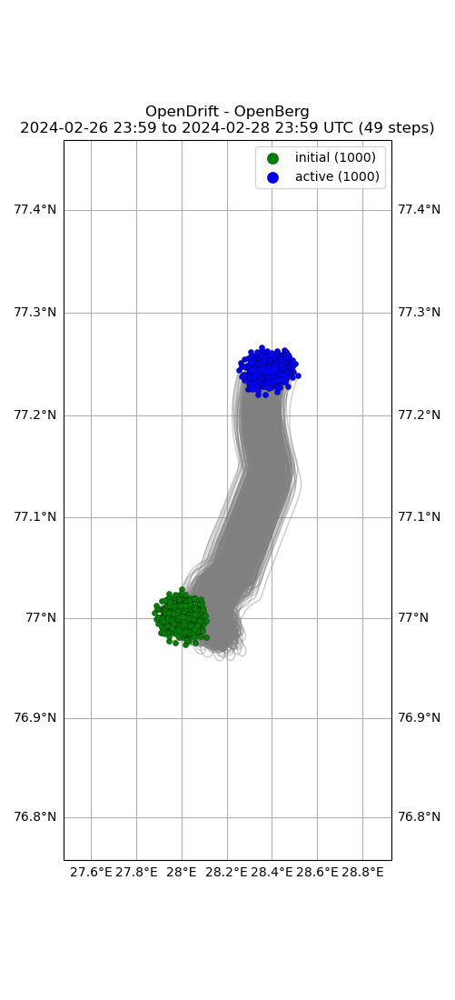

Note
Go to the end to download the full example code.
Ice bergs (openberg)
16:13:33 DEBUG opendrift.config:168: Adding 17 config items from __init__
16:13:33 DEBUG opendrift.config:178: Overwriting config item readers:max_number_of_fails
16:13:33 DEBUG opendrift.config:168: Adding 12 config items from __init__
16:13:33 INFO opendrift.models.basemodel:507: OpenDriftSimulation initialised (version 1.11.4 / v1.11.3-1-g25a02ff)
16:13:33 DEBUG opendrift.config:168: Adding 15 config items from oceandrift
16:13:33 DEBUG opendrift.config:178: Overwriting config item seed:z
16:13:33 DEBUG opendrift.readers.reader_lazy:38: Delaying initialisation of LazyReader: https://thredds.met.no/thredds/dodsC/cmems/topaz6/dataset-topaz6-arc-15min-3km-be.ncml
16:13:33 DEBUG opendrift.readers.reader_lazy:38: Delaying initialisation of LazyReader: https://pae-paha.pacioos.hawaii.edu/thredds/dodsC/ncep_global/NCEP_Global_Atmospheric_Model_best.ncd
16:13:33 DEBUG opendrift.models.basemodel.environment:328: Added reader LazyReader: https://thredds.met.no/thredds/dodsC/cmems/topaz6/dataset-topaz6-arc-15min-3km-be.ncml
16:13:33 DEBUG opendrift.models.basemodel.environment:328: Added reader LazyReader: https://pae-paha.pacioos.hawaii.edu/thredds/dodsC/ncep_global/NCEP_Global_Atmospheric_Model_best.ncd
16:13:33 INFO opendrift.models.basemodel.environment:218: Adding a dynamical landmask with max. priority based on assumed maximum speed of 2.0 m/s. Adding a customised landmask may be faster...
16:13:33 DEBUG opendrift.readers.basereader:176: Variable mapping: ['sea_floor_depth_below_sea_level'] -> ['land_binary_mask'] is not activated
16:13:41 DEBUG opendrift.models.basemodel.environment:328: Added reader global_landmask
16:13:41 INFO opendrift.models.basemodel.environment:245: Fallback values will be used for the following variables which have no readers:
16:13:41 INFO opendrift.models.basemodel.environment:248: sea_surface_height: 0.000000
16:13:41 INFO opendrift.models.basemodel.environment:248: sea_floor_depth_below_sea_level: 10000.000000
16:13:41 DEBUG opendrift.models.basemodel:92: Changed mode from Mode.Config to Mode.Ready
16:13:41 DEBUG opendrift.models.basemodel:92: Changed mode from Mode.Ready to Mode.Run
16:13:41 DEBUG opendrift.models.basemodel:1725:
------------------------------------------------------
Software and hardware:
OpenDrift version 1.11.4
Platform: Linux, 5.15.0-1057-aws
68.5677375793457 GB memory
36 processors (x86_64)
NumPy version 1.26.4
SciPy version 1.13.1
Matplotlib version 3.8.4
NetCDF4 version 1.6.1
Xarray version 2024.5.0
Python version 3.11.6 | packaged by conda-forge | (main, Oct 3 2023, 10:40:35) [GCC 12.3.0]
------------------------------------------------------
16:13:41 DEBUG opendrift.models.basemodel:1739: No output file is specified, neglecting export_buffer_length
16:13:41 DEBUG opendrift.models.basemodel:1857: Finalizing environment and preparing readers for simulation coverage ([14.037719695448937, 73.85966153531461, 41.950792343735635, 80.14191774935335]) and time (2024-06-14 16:13:33.850194 to 2024-06-16 16:13:33.850194)
16:13:41 DEBUG opendrift.models.basemodel.environment:180: Preparing LazyReader: https://thredds.met.no/thredds/dodsC/cmems/topaz6/dataset-topaz6-arc-15min-3km-be.ncml for extent [14.037719695448937, 73.85966153531461, 41.950792343735635, 80.14191774935335]
16:13:41 DEBUG opendrift.models.basemodel.environment:180: Preparing LazyReader: https://pae-paha.pacioos.hawaii.edu/thredds/dodsC/ncep_global/NCEP_Global_Atmospheric_Model_best.ncd for extent [14.037719695448937, 73.85966153531461, 41.950792343735635, 80.14191774935335]
16:13:41 DEBUG opendrift.models.basemodel.environment:180: Preparing global_landmask for extent [14.037719695448937, 73.85966153531461, 41.950792343735635, 80.14191774935335]
16:13:41 DEBUG opendrift.readers.basereader.variables:549: Nothing more to prepare for global_landmask
16:13:41 INFO opendrift.models.basemodel:885: Using existing reader for land_binary_mask
16:13:41 DEBUG opendrift.models.basemodel.environment:607: ----------------------------------------
16:13:41 DEBUG opendrift.models.basemodel.environment:608: Variable group ['land_binary_mask']
16:13:41 DEBUG opendrift.models.basemodel.environment:609: ----------------------------------------
16:13:41 DEBUG opendrift.models.basemodel.environment:613: Calling reader global_landmask
16:13:41 DEBUG opendrift.models.basemodel.environment:614: ----------------------------------------
16:13:41 DEBUG opendrift.models.basemodel.environment:630: Data needed for 1000 elements
16:13:41 DEBUG opendrift.readers.basereader.variables:752: Fetching variables from global_landmask covering 1000 elements
16:13:41 DEBUG opendrift.readers.basereader.continuous:37: Fetched env-before
16:13:41 DEBUG opendrift.readers.basereader.variables:633: Checking land_binary_mask for invalid values
16:13:41 DEBUG opendrift.readers.basereader.variables:788: Reader projection is latlon - rotation of vectors is not needed.
16:13:41 DEBUG opendrift.models.basemodel.environment:764: Obtained data for all elements.
16:13:41 DEBUG opendrift.models.basemodel.environment:777: ---------------------------------------
16:13:41 DEBUG opendrift.models.basemodel.environment:778: Finished processing all variable groups
16:13:41 DEBUG opendrift.models.basemodel.environment:903: ------------ SUMMARY -------------
16:13:41 DEBUG opendrift.models.basemodel.environment:905: land_binary_mask: 0 (min) 0 (max)
16:13:41 DEBUG opendrift.models.basemodel.environment:907: ---------------------------------
16:13:41 INFO opendrift.models.basemodel:896: All points are in ocean
16:13:41 DEBUG opendrift.models.basemodel:840: to be seeded: 1000, already seeded 0
16:13:41 DEBUG opendrift.models.basemodel:858: Released 1000 new elements.
16:13:41 DEBUG opendrift.models.basemodel:1984: ======================================================================
16:13:41 INFO opendrift.models.basemodel:1985: 2024-06-14 16:13:33.850194 - step 1 of 48 - 1000 active elements (0 deactivated)
16:13:41 DEBUG opendrift.models.basemodel:1991: 0 elements scheduled.
16:13:41 DEBUG opendrift.models.basemodel:1993: ======================================================================
16:13:41 DEBUG opendrift.models.basemodel:2004: 76.973175 <- latitude -> 77.028404
16:13:41 DEBUG opendrift.models.basemodel:2009: 27.878698 <- longitude -> 28.109814
16:13:41 DEBUG opendrift.models.basemodel:2012: z = 0.0
16:13:41 DEBUG opendrift.models.basemodel:2015: ---------------------------------
16:13:41 DEBUG opendrift.models.basemodel.environment:581: Variables not covered by any reader: ['sea_floor_depth_below_sea_level', 'y_sea_water_velocity', 'x_wind', 'y_wind', 'x_sea_water_velocity', 'sea_surface_height']
16:13:41 DEBUG opendrift.readers.reader_lazy:57: Initialising: LazyReader: https://thredds.met.no/thredds/dodsC/cmems/topaz6/dataset-topaz6-arc-15min-3km-be.ncml
16:13:41 INFO opendrift.readers.reader_netCDF_CF_generic:102: Opening dataset: https://thredds.met.no/thredds/dodsC/cmems/topaz6/dataset-topaz6-arc-15min-3km-be.ncml
16:13:52 DEBUG opendrift.readers.reader_netCDF_CF_generic:119: Finding coordinate variables.
16:13:52 DEBUG opendrift.readers.reader_netCDF_CF_generic:134: Parsing CF grid mapping dictionary: {'grid_mapping_name': 'polar_stereographic', 'latitude_of_projection_origin': 90.0, 'longitude_of_projection_origin': -45.0, 'scale_factor_at_projection_origin': 1.0, 'straight_vertical_longitude_from_pole': -45.0, 'earth_radius': 6378273.0, 'proj4': '+proj=stere +lon_0=-45 +lat_0=90 +k=1 +R=6378273 +no_defs', 'false_easting': 0.0, 'false_northing': 0.0}
16:13:53 INFO opendrift.readers.reader_netCDF_CF_generic:314: Detected dimensions: {'x': 'x', 'y': 'y', 'time': 'time'}
16:13:53 DEBUG opendrift.readers.basereader.variables:608: Setting buffer size 4 for reader https://thredds.met.no/thredds/dodsC/cmems/topaz6/dataset-topaz6-arc-15min-3km-be.ncml, assuming a maximum average speed of 5 m/s and time span of 0:15:00
16:13:53 DEBUG opendrift.readers.basereader:176: Variable mapping: ['sea_floor_depth_below_sea_level'] -> ['land_binary_mask'] is not activated
16:13:53 DEBUG opendrift.readers.basereader.variables:563: Adding variable mapping: ['x_sea_water_velocity', 'y_sea_water_velocity'] -> sea_water_speed
16:13:53 DEBUG opendrift.readers.basereader.structured:153: Clearing cache for reader https://thredds.met.no/thredds/dodsC/cmems/topaz6/dataset-topaz6-arc-15min-3km-be.ncml before starting new simulation
16:13:53 DEBUG opendrift.readers.basereader.variables:608: Setting buffer size 3 for reader https://thredds.met.no/thredds/dodsC/cmems/topaz6/dataset-topaz6-arc-15min-3km-be.ncml, assuming a maximum average speed of 2 m/s and time span of 0:15:00
16:13:53 DEBUG opendrift.readers.basereader.variables:549: Nothing more to prepare for https://thredds.met.no/thredds/dodsC/cmems/topaz6/dataset-topaz6-arc-15min-3km-be.ncml
16:13:53 DEBUG opendrift.readers.reader_lazy:72: Reader initialised: https://thredds.met.no/thredds/dodsC/cmems/topaz6/dataset-topaz6-arc-15min-3km-be.ncml
16:13:53 DEBUG opendrift.readers.basereader.variables:608: Setting buffer size 3 for reader https://thredds.met.no/thredds/dodsC/cmems/topaz6/dataset-topaz6-arc-15min-3km-be.ncml, assuming a maximum average speed of 2 m/s and time span of 0:15:00
16:13:53 DEBUG opendrift.readers.reader_lazy:57: Initialising: LazyReader: https://pae-paha.pacioos.hawaii.edu/thredds/dodsC/ncep_global/NCEP_Global_Atmospheric_Model_best.ncd
16:13:53 INFO opendrift.readers.reader_netCDF_CF_generic:102: Opening dataset: https://pae-paha.pacioos.hawaii.edu/thredds/dodsC/ncep_global/NCEP_Global_Atmospheric_Model_best.ncd
16:13:54 DEBUG opendrift.readers.reader_netCDF_CF_generic:119: Finding coordinate variables.
16:13:54 DEBUG opendrift.readers.reader_netCDF_CF_generic:258: Lon and lat are 1D arrays - using as projection coordinates
16:13:54 INFO opendrift.readers.reader_netCDF_CF_generic:314: Detected dimensions: {'time': 'time', 'x': 'longitude', 'y': 'latitude'}
16:13:54 DEBUG opendrift.readers.basereader.variables:608: Setting buffer size 19910 for reader https://pae-paha.pacioos.hawaii.edu/thredds/dodsC/ncep_global/NCEP_Global_Atmospheric_Model_best.ncd, assuming a maximum average speed of 5 m/s and time span of 2557 days, 15:00:00
16:13:54 INFO opendrift.readers.basereader:166: Variable x_wind will be rotated from eastward_wind
16:13:54 INFO opendrift.readers.basereader:166: Variable y_wind will be rotated from northward_wind
16:13:54 DEBUG opendrift.readers.basereader:176: Variable mapping: ['sea_floor_depth_below_sea_level'] -> ['land_binary_mask'] is not activated
16:13:54 DEBUG opendrift.readers.basereader.variables:563: Adding variable mapping: ['x_wind', 'y_wind'] -> wind_speed
16:13:54 DEBUG opendrift.readers.basereader.structured:153: Clearing cache for reader https://pae-paha.pacioos.hawaii.edu/thredds/dodsC/ncep_global/NCEP_Global_Atmospheric_Model_best.ncd before starting new simulation
16:13:54 DEBUG opendrift.readers.basereader.variables:608: Setting buffer size 7966 for reader https://pae-paha.pacioos.hawaii.edu/thredds/dodsC/ncep_global/NCEP_Global_Atmospheric_Model_best.ncd, assuming a maximum average speed of 2 m/s and time span of 2557 days, 15:00:00
16:13:54 DEBUG opendrift.readers.basereader.variables:549: Nothing more to prepare for https://pae-paha.pacioos.hawaii.edu/thredds/dodsC/ncep_global/NCEP_Global_Atmospheric_Model_best.ncd
16:13:54 DEBUG opendrift.readers.reader_lazy:72: Reader initialised: https://pae-paha.pacioos.hawaii.edu/thredds/dodsC/ncep_global/NCEP_Global_Atmospheric_Model_best.ncd
16:13:54 DEBUG opendrift.readers.basereader.variables:608: Setting buffer size 7966 for reader https://pae-paha.pacioos.hawaii.edu/thredds/dodsC/ncep_global/NCEP_Global_Atmospheric_Model_best.ncd, assuming a maximum average speed of 2 m/s and time span of 2557 days, 15:00:00
16:13:54 DEBUG opendrift.models.basemodel.environment:607: ----------------------------------------
16:13:54 DEBUG opendrift.models.basemodel.environment:608: Variable group ['land_binary_mask']
16:13:54 DEBUG opendrift.models.basemodel.environment:609: ----------------------------------------
16:13:54 DEBUG opendrift.models.basemodel.environment:613: Calling reader global_landmask
16:13:54 DEBUG opendrift.models.basemodel.environment:614: ----------------------------------------
16:13:54 DEBUG opendrift.models.basemodel.environment:630: Data needed for 1000 elements
16:13:54 DEBUG opendrift.readers.basereader.variables:752: Fetching variables from global_landmask covering 1000 elements
16:13:54 DEBUG opendrift.readers.basereader.continuous:37: Fetched env-before
16:13:54 DEBUG opendrift.readers.basereader.variables:633: Checking land_binary_mask for invalid values
16:13:54 DEBUG opendrift.readers.basereader.variables:788: Reader projection is latlon - rotation of vectors is not needed.
16:13:54 DEBUG opendrift.models.basemodel.environment:764: Obtained data for all elements.
16:13:54 DEBUG opendrift.models.basemodel.environment:607: ----------------------------------------
16:13:54 DEBUG opendrift.models.basemodel.environment:608: Variable group ['sea_floor_depth_below_sea_level', 'x_sea_water_velocity', 'y_sea_water_velocity']
16:13:54 DEBUG opendrift.models.basemodel.environment:609: ----------------------------------------
16:13:54 DEBUG opendrift.models.basemodel.environment:613: Calling reader https://thredds.met.no/thredds/dodsC/cmems/topaz6/dataset-topaz6-arc-15min-3km-be.ncml
16:13:54 DEBUG opendrift.models.basemodel.environment:614: ----------------------------------------
16:13:54 DEBUG opendrift.models.basemodel.environment:630: Data needed for 1000 elements
16:13:54 DEBUG opendrift.readers.basereader.variables:752: Fetching variables from https://thredds.met.no/thredds/dodsC/cmems/topaz6/dataset-topaz6-arc-15min-3km-be.ncml covering 1000 elements
16:13:54 DEBUG opendrift.readers.basereader.structured:222: Reader time:
2024-06-14 16:00:00 (before)
2024-06-14 16:15:00 (after)
16:13:55 DEBUG opendrift.readers.basereader.variables:633: Checking sea_floor_depth_below_sea_level for invalid values
16:13:55 DEBUG opendrift.readers.basereader.variables:633: Checking x_sea_water_velocity for invalid values
16:13:55 DEBUG opendrift.readers.basereader.variables:633: Checking y_sea_water_velocity for invalid values
16:13:55 DEBUG opendrift.readers.basereader.structured:291: Fetched env-block (size 8x8x1) for time before (2024-06-14 16:00:00)
16:13:56 DEBUG opendrift.readers.basereader.variables:633: Checking sea_floor_depth_below_sea_level for invalid values
16:13:56 DEBUG opendrift.readers.basereader.variables:633: Checking x_sea_water_velocity for invalid values
16:13:56 DEBUG opendrift.readers.basereader.variables:633: Checking y_sea_water_velocity for invalid values
16:13:56 DEBUG opendrift.readers.basereader.structured:313: Fetched env-block (size 8x8x1) for time after (2024-06-14 16:15:00)
16:13:56 DEBUG opendrift.readers.basereader.structured:334: Interpolating before (2024-06-14 16:00:00) in space (linearNDFast)
16:13:56 DEBUG opendrift.readers.interpolation.structured:80: Initialising interpolator.
16:13:56 DEBUG opendrift.readers.basereader.structured:340: Interpolating after (2024-06-14 16:15:00) in space (linearNDFast)
16:13:56 DEBUG opendrift.readers.interpolation.structured:80: Initialising interpolator.
16:13:56 DEBUG opendrift.readers.basereader.structured:355: Interpolating before (2024-06-14 16:00:00, weight 0.10) and
after (2024-06-14 16:15:00, weight 0.90) in time
16:13:56 DEBUG opendrift.readers.basereader.variables:96: Rotating vectors between 72.88418911844897 and 73.11525546004759 degrees.
16:13:56 DEBUG opendrift.models.basemodel.environment:764: Obtained data for all elements.
16:13:56 DEBUG opendrift.models.basemodel.environment:607: ----------------------------------------
16:13:56 DEBUG opendrift.models.basemodel.environment:608: Variable group ['x_wind', 'y_wind']
16:13:56 DEBUG opendrift.models.basemodel.environment:609: ----------------------------------------
16:13:56 DEBUG opendrift.models.basemodel.environment:613: Calling reader https://pae-paha.pacioos.hawaii.edu/thredds/dodsC/ncep_global/NCEP_Global_Atmospheric_Model_best.ncd
16:13:56 DEBUG opendrift.models.basemodel.environment:614: ----------------------------------------
16:13:56 DEBUG opendrift.models.basemodel.environment:630: Data needed for 1000 elements
16:13:56 DEBUG opendrift.readers.basereader.variables:752: Fetching variables from https://pae-paha.pacioos.hawaii.edu/thredds/dodsC/ncep_global/NCEP_Global_Atmospheric_Model_best.ncd covering 1000 elements
16:13:56 DEBUG opendrift.readers.basereader.structured:213: Shifting coordinates to 0-360
16:13:56 DEBUG opendrift.readers.basereader.structured:222: Reader time:
2024-06-14 15:00:00 (before)
2024-06-14 18:00:00 (after)
16:13:56 DEBUG opendrift.readers.reader_netCDF_CF_generic:419: Using eastward_wind to retrieve x_wind
16:13:57 DEBUG opendrift.readers.reader_netCDF_CF_generic:419: Using northward_wind to retrieve y_wind
16:14:00 DEBUG opendrift.readers.reader_netCDF_CF_generic:516: North is up, no rotation necessary
16:14:00 DEBUG opendrift.readers.basereader.variables:633: Checking x_wind for invalid values
16:14:00 DEBUG opendrift.readers.basereader.variables:633: Checking y_wind for invalid values
16:14:00 DEBUG opendrift.readers.basereader.structured:291: Fetched env-block (size 720x361x1) for time before (2024-06-14 15:00:00)
16:14:00 DEBUG opendrift.readers.reader_netCDF_CF_generic:419: Using eastward_wind to retrieve x_wind
16:14:03 DEBUG opendrift.readers.reader_netCDF_CF_generic:419: Using northward_wind to retrieve y_wind
16:14:07 DEBUG opendrift.readers.reader_netCDF_CF_generic:516: North is up, no rotation necessary
16:14:07 DEBUG opendrift.readers.basereader.variables:633: Checking x_wind for invalid values
16:14:07 DEBUG opendrift.readers.basereader.variables:633: Checking y_wind for invalid values
16:14:07 DEBUG opendrift.readers.basereader.structured:313: Fetched env-block (size 720x361x1) for time after (2024-06-14 18:00:00)
16:14:07 DEBUG opendrift.readers.basereader.structured:334: Interpolating before (2024-06-14 15:00:00) in space (linearNDFast)
16:14:07 DEBUG opendrift.readers.interpolation.structured:80: Initialising interpolator.
16:14:07 DEBUG opendrift.readers.basereader.structured:340: Interpolating after (2024-06-14 18:00:00) in space (linearNDFast)
16:14:07 DEBUG opendrift.readers.interpolation.structured:80: Initialising interpolator.
16:14:07 DEBUG opendrift.readers.basereader.structured:355: Interpolating before (2024-06-14 15:00:00, weight 0.59) and
after (2024-06-14 18:00:00, weight 0.41) in time
16:14:07 DEBUG opendrift.readers.basereader.variables:788: Reader projection is latlon - rotation of vectors is not needed.
16:14:07 DEBUG opendrift.models.basemodel.environment:764: Obtained data for all elements.
16:14:07 DEBUG opendrift.models.basemodel.environment:777: ---------------------------------------
16:14:07 DEBUG opendrift.models.basemodel.environment:778: Finished processing all variable groups
16:14:07 DEBUG opendrift.models.basemodel.environment:903: ------------ SUMMARY -------------
16:14:07 DEBUG opendrift.models.basemodel.environment:905: x_sea_water_velocity: -0.0388241 (min) -0.029157 (max)
16:14:07 DEBUG opendrift.models.basemodel.environment:905: y_sea_water_velocity: -0.0590263 (min) -0.0310566 (max)
16:14:07 DEBUG opendrift.models.basemodel.environment:905: sea_surface_height: 0 (min) 0 (max)
16:14:07 DEBUG opendrift.models.basemodel.environment:905: sea_floor_depth_below_sea_level: 118.397 (min) 152.036 (max)
16:14:07 DEBUG opendrift.models.basemodel.environment:905: x_wind: 1.37953 (min) 1.46348 (max)
16:14:07 DEBUG opendrift.models.basemodel.environment:905: y_wind: 1.01418 (min) 1.08748 (max)
16:14:07 DEBUG opendrift.models.basemodel.environment:905: land_binary_mask: 0 (min) 0 (max)
16:14:07 DEBUG opendrift.models.basemodel.environment:907: ---------------------------------
16:14:07 DEBUG opendrift.models.basemodel:699: No elements hit seafloor.
16:14:07 DEBUG opendrift.models.basemodel:1657: No elements to deactivate
16:14:07 DEBUG opendrift.models.basemodel:2056: Calling OpenBerg.update()
16:14:07 DEBUG opendrift.models.basemodel:1608: Horizontal diffusivity is 0, no random walk.
16:14:07 DEBUG opendrift.models.basemodel:2071: 1000 active elements (0 deactivated)
16:14:07 DEBUG opendrift.models.basemodel:840: to be seeded: 0, already seeded 1000
16:14:07 DEBUG opendrift.models.basemodel:699: No elements hit seafloor.
16:14:07 DEBUG opendrift.models.basemodel:1984: ======================================================================
16:14:07 INFO opendrift.models.basemodel:1985: 2024-06-14 17:13:33.850194 - step 2 of 48 - 1000 active elements (0 deactivated)
16:14:07 DEBUG opendrift.models.basemodel:1991: 0 elements scheduled.
16:14:07 DEBUG opendrift.models.basemodel:1993: ======================================================================
16:14:07 DEBUG opendrift.models.basemodel:2004: 76.97245227389948 <- latitude -> 77.02758949503031
16:14:07 DEBUG opendrift.models.basemodel:2009: 27.87735131018829 <- longitude -> 28.109442778637852
16:14:07 DEBUG opendrift.models.basemodel:2012: z = 0.0
16:14:07 DEBUG opendrift.models.basemodel:2015: ---------------------------------
16:14:07 DEBUG opendrift.models.basemodel.environment:607: ----------------------------------------
16:14:07 DEBUG opendrift.models.basemodel.environment:608: Variable group ['land_binary_mask']
16:14:07 DEBUG opendrift.models.basemodel.environment:609: ----------------------------------------
16:14:07 DEBUG opendrift.models.basemodel.environment:613: Calling reader global_landmask
16:14:07 DEBUG opendrift.models.basemodel.environment:614: ----------------------------------------
16:14:07 DEBUG opendrift.models.basemodel.environment:630: Data needed for 1000 elements
16:14:07 DEBUG opendrift.readers.basereader.variables:752: Fetching variables from global_landmask covering 1000 elements
16:14:07 DEBUG opendrift.readers.basereader.continuous:37: Fetched env-before
16:14:07 DEBUG opendrift.readers.basereader.variables:633: Checking land_binary_mask for invalid values
16:14:07 DEBUG opendrift.readers.basereader.variables:788: Reader projection is latlon - rotation of vectors is not needed.
16:14:07 DEBUG opendrift.models.basemodel.environment:764: Obtained data for all elements.
16:14:07 DEBUG opendrift.models.basemodel.environment:607: ----------------------------------------
16:14:07 DEBUG opendrift.models.basemodel.environment:608: Variable group ['sea_floor_depth_below_sea_level', 'x_sea_water_velocity', 'y_sea_water_velocity']
16:14:07 DEBUG opendrift.models.basemodel.environment:609: ----------------------------------------
16:14:07 DEBUG opendrift.models.basemodel.environment:613: Calling reader https://thredds.met.no/thredds/dodsC/cmems/topaz6/dataset-topaz6-arc-15min-3km-be.ncml
16:14:07 DEBUG opendrift.models.basemodel.environment:614: ----------------------------------------
16:14:07 DEBUG opendrift.models.basemodel.environment:630: Data needed for 1000 elements
16:14:07 DEBUG opendrift.readers.basereader.variables:752: Fetching variables from https://thredds.met.no/thredds/dodsC/cmems/topaz6/dataset-topaz6-arc-15min-3km-be.ncml covering 1000 elements
16:14:07 DEBUG opendrift.readers.basereader.structured:222: Reader time:
2024-06-14 17:00:00 (before)
2024-06-14 17:15:00 (after)
16:14:07 DEBUG opendrift.readers.basereader.variables:633: Checking sea_floor_depth_below_sea_level for invalid values
16:14:07 DEBUG opendrift.readers.basereader.variables:633: Checking x_sea_water_velocity for invalid values
16:14:07 DEBUG opendrift.readers.basereader.variables:633: Checking y_sea_water_velocity for invalid values
16:14:07 DEBUG opendrift.readers.basereader.structured:291: Fetched env-block (size 8x8x1) for time before (2024-06-14 17:00:00)
16:14:08 DEBUG opendrift.readers.basereader.variables:633: Checking sea_floor_depth_below_sea_level for invalid values
16:14:08 DEBUG opendrift.readers.basereader.variables:633: Checking x_sea_water_velocity for invalid values
16:14:08 DEBUG opendrift.readers.basereader.variables:633: Checking y_sea_water_velocity for invalid values
16:14:08 DEBUG opendrift.readers.basereader.structured:313: Fetched env-block (size 8x8x1) for time after (2024-06-14 17:15:00)
16:14:08 DEBUG opendrift.readers.basereader.structured:334: Interpolating before (2024-06-14 17:00:00) in space (linearNDFast)
16:14:08 DEBUG opendrift.readers.interpolation.structured:80: Initialising interpolator.
16:14:08 DEBUG opendrift.readers.basereader.structured:340: Interpolating after (2024-06-14 17:15:00) in space (linearNDFast)
16:14:08 DEBUG opendrift.readers.interpolation.structured:80: Initialising interpolator.
16:14:08 DEBUG opendrift.readers.basereader.structured:355: Interpolating before (2024-06-14 17:00:00, weight 0.10) and
after (2024-06-14 17:15:00, weight 0.90) in time
16:14:08 DEBUG opendrift.readers.basereader.variables:96: Rotating vectors between 72.88284845680786 and 73.11488184169411 degrees.
16:14:08 DEBUG opendrift.models.basemodel.environment:764: Obtained data for all elements.
16:14:08 DEBUG opendrift.models.basemodel.environment:607: ----------------------------------------
16:14:08 DEBUG opendrift.models.basemodel.environment:608: Variable group ['x_wind', 'y_wind']
16:14:08 DEBUG opendrift.models.basemodel.environment:609: ----------------------------------------
16:14:08 DEBUG opendrift.models.basemodel.environment:613: Calling reader https://pae-paha.pacioos.hawaii.edu/thredds/dodsC/ncep_global/NCEP_Global_Atmospheric_Model_best.ncd
16:14:08 DEBUG opendrift.models.basemodel.environment:614: ----------------------------------------
16:14:08 DEBUG opendrift.models.basemodel.environment:630: Data needed for 1000 elements
16:14:08 DEBUG opendrift.readers.basereader.variables:752: Fetching variables from https://pae-paha.pacioos.hawaii.edu/thredds/dodsC/ncep_global/NCEP_Global_Atmospheric_Model_best.ncd covering 1000 elements
16:14:08 DEBUG opendrift.readers.basereader.structured:213: Shifting coordinates to 0-360
16:14:08 DEBUG opendrift.readers.basereader.structured:222: Reader time:
2024-06-14 15:00:00 (before)
2024-06-14 18:00:00 (after)
16:14:08 DEBUG opendrift.readers.basereader.structured:334: Interpolating before (2024-06-14 15:00:00) in space (linearNDFast)
16:14:08 DEBUG opendrift.readers.interpolation.structured:80: Initialising interpolator.
16:14:08 DEBUG opendrift.readers.basereader.structured:340: Interpolating after (2024-06-14 18:00:00) in space (linearNDFast)
16:14:08 DEBUG opendrift.readers.interpolation.structured:80: Initialising interpolator.
16:14:08 DEBUG opendrift.readers.basereader.structured:355: Interpolating before (2024-06-14 15:00:00, weight 0.26) and
after (2024-06-14 18:00:00, weight 0.74) in time
16:14:08 DEBUG opendrift.readers.basereader.variables:788: Reader projection is latlon - rotation of vectors is not needed.
16:14:08 DEBUG opendrift.models.basemodel.environment:764: Obtained data for all elements.
16:14:08 DEBUG opendrift.models.basemodel.environment:777: ---------------------------------------
16:14:08 DEBUG opendrift.models.basemodel.environment:778: Finished processing all variable groups
16:14:08 DEBUG opendrift.models.basemodel.environment:903: ------------ SUMMARY -------------
16:14:08 DEBUG opendrift.models.basemodel.environment:905: x_sea_water_velocity: -0.0245186 (min) -0.0207732 (max)
16:14:08 DEBUG opendrift.models.basemodel.environment:905: y_sea_water_velocity: -0.0252044 (min) 0.00548727 (max)
16:14:08 DEBUG opendrift.models.basemodel.environment:905: sea_surface_height: 0 (min) 0 (max)
16:14:08 DEBUG opendrift.models.basemodel.environment:905: sea_floor_depth_below_sea_level: 118.137 (min) 151.446 (max)
16:14:08 DEBUG opendrift.models.basemodel.environment:905: x_wind: 1.47938 (min) 1.54975 (max)
16:14:08 DEBUG opendrift.models.basemodel.environment:905: y_wind: 0.640275 (min) 0.715709 (max)
16:14:08 DEBUG opendrift.models.basemodel.environment:905: land_binary_mask: 0 (min) 0 (max)
16:14:08 DEBUG opendrift.models.basemodel.environment:907: ---------------------------------
16:14:08 DEBUG opendrift.models.basemodel:699: No elements hit seafloor.
16:14:08 DEBUG opendrift.models.basemodel:1657: No elements to deactivate
16:14:08 DEBUG opendrift.models.basemodel:2056: Calling OpenBerg.update()
16:14:08 DEBUG opendrift.models.basemodel:1608: Horizontal diffusivity is 0, no random walk.
16:14:08 DEBUG opendrift.models.basemodel:2071: 1000 active elements (0 deactivated)
16:14:08 DEBUG opendrift.models.basemodel:840: to be seeded: 0, already seeded 1000
16:14:08 DEBUG opendrift.models.basemodel:699: No elements hit seafloor.
16:14:08 DEBUG opendrift.models.basemodel:1984: ======================================================================
16:14:08 INFO opendrift.models.basemodel:1985: 2024-06-14 18:13:33.850194 - step 3 of 48 - 1000 active elements (0 deactivated)
16:14:08 DEBUG opendrift.models.basemodel:1991: 0 elements scheduled.
16:14:08 DEBUG opendrift.models.basemodel:1993: ======================================================================
16:14:08 DEBUG opendrift.models.basemodel:2004: 76.97269604385866 <- latitude -> 77.02759656322496
16:14:08 DEBUG opendrift.models.basemodel:2009: 27.87826880633599 <- longitude -> 28.110367429190593
16:14:08 DEBUG opendrift.models.basemodel:2012: z = 0.0
16:14:08 DEBUG opendrift.models.basemodel:2015: ---------------------------------
16:14:08 DEBUG opendrift.models.basemodel.environment:607: ----------------------------------------
16:14:08 DEBUG opendrift.models.basemodel.environment:608: Variable group ['land_binary_mask']
16:14:08 DEBUG opendrift.models.basemodel.environment:609: ----------------------------------------
16:14:08 DEBUG opendrift.models.basemodel.environment:613: Calling reader global_landmask
16:14:08 DEBUG opendrift.models.basemodel.environment:614: ----------------------------------------
16:14:08 DEBUG opendrift.models.basemodel.environment:630: Data needed for 1000 elements
16:14:08 DEBUG opendrift.readers.basereader.variables:752: Fetching variables from global_landmask covering 1000 elements
16:14:08 DEBUG opendrift.readers.basereader.continuous:37: Fetched env-before
16:14:08 DEBUG opendrift.readers.basereader.variables:633: Checking land_binary_mask for invalid values
16:14:08 DEBUG opendrift.readers.basereader.variables:788: Reader projection is latlon - rotation of vectors is not needed.
16:14:08 DEBUG opendrift.models.basemodel.environment:764: Obtained data for all elements.
16:14:08 DEBUG opendrift.models.basemodel.environment:607: ----------------------------------------
16:14:08 DEBUG opendrift.models.basemodel.environment:608: Variable group ['sea_floor_depth_below_sea_level', 'x_sea_water_velocity', 'y_sea_water_velocity']
16:14:08 DEBUG opendrift.models.basemodel.environment:609: ----------------------------------------
16:14:08 DEBUG opendrift.models.basemodel.environment:613: Calling reader https://thredds.met.no/thredds/dodsC/cmems/topaz6/dataset-topaz6-arc-15min-3km-be.ncml
16:14:08 DEBUG opendrift.models.basemodel.environment:614: ----------------------------------------
16:14:08 DEBUG opendrift.models.basemodel.environment:630: Data needed for 1000 elements
16:14:08 DEBUG opendrift.readers.basereader.variables:752: Fetching variables from https://thredds.met.no/thredds/dodsC/cmems/topaz6/dataset-topaz6-arc-15min-3km-be.ncml covering 1000 elements
16:14:08 DEBUG opendrift.readers.basereader.structured:222: Reader time:
2024-06-14 18:00:00 (before)
2024-06-14 18:15:00 (after)
16:14:08 DEBUG opendrift.readers.basereader.variables:633: Checking sea_floor_depth_below_sea_level for invalid values
16:14:08 DEBUG opendrift.readers.basereader.variables:633: Checking x_sea_water_velocity for invalid values
16:14:08 DEBUG opendrift.readers.basereader.variables:633: Checking y_sea_water_velocity for invalid values
16:14:08 DEBUG opendrift.readers.basereader.structured:291: Fetched env-block (size 8x8x1) for time before (2024-06-14 18:00:00)
16:14:09 DEBUG opendrift.readers.basereader.variables:633: Checking sea_floor_depth_below_sea_level for invalid values
16:14:09 DEBUG opendrift.readers.basereader.variables:633: Checking x_sea_water_velocity for invalid values
16:14:09 DEBUG opendrift.readers.basereader.variables:633: Checking y_sea_water_velocity for invalid values
16:14:09 DEBUG opendrift.readers.basereader.structured:313: Fetched env-block (size 8x8x1) for time after (2024-06-14 18:15:00)
16:14:09 DEBUG opendrift.readers.basereader.structured:334: Interpolating before (2024-06-14 18:00:00) in space (linearNDFast)
16:14:09 DEBUG opendrift.readers.interpolation.structured:80: Initialising interpolator.
16:14:09 DEBUG opendrift.readers.basereader.structured:340: Interpolating after (2024-06-14 18:15:00) in space (linearNDFast)
16:14:09 DEBUG opendrift.readers.interpolation.structured:80: Initialising interpolator.
16:14:09 DEBUG opendrift.readers.basereader.structured:355: Interpolating before (2024-06-14 18:00:00, weight 0.10) and
after (2024-06-14 18:15:00, weight 0.90) in time
16:14:09 DEBUG opendrift.readers.basereader.variables:96: Rotating vectors between 72.88376522346388 and 73.11580643760269 degrees.
16:14:09 DEBUG opendrift.models.basemodel.environment:764: Obtained data for all elements.
16:14:09 DEBUG opendrift.models.basemodel.environment:607: ----------------------------------------
16:14:09 DEBUG opendrift.models.basemodel.environment:608: Variable group ['x_wind', 'y_wind']
16:14:09 DEBUG opendrift.models.basemodel.environment:609: ----------------------------------------
16:14:09 DEBUG opendrift.models.basemodel.environment:613: Calling reader https://pae-paha.pacioos.hawaii.edu/thredds/dodsC/ncep_global/NCEP_Global_Atmospheric_Model_best.ncd
16:14:09 DEBUG opendrift.models.basemodel.environment:614: ----------------------------------------
16:14:09 DEBUG opendrift.models.basemodel.environment:630: Data needed for 1000 elements
16:14:09 DEBUG opendrift.readers.basereader.variables:752: Fetching variables from https://pae-paha.pacioos.hawaii.edu/thredds/dodsC/ncep_global/NCEP_Global_Atmospheric_Model_best.ncd covering 1000 elements
16:14:09 DEBUG opendrift.readers.basereader.structured:213: Shifting coordinates to 0-360
16:14:09 DEBUG opendrift.readers.basereader.structured:222: Reader time:
2024-06-14 18:00:00 (before)
2024-06-14 21:00:00 (after)
16:14:09 DEBUG opendrift.readers.reader_netCDF_CF_generic:419: Using eastward_wind to retrieve x_wind
16:14:12 DEBUG opendrift.readers.reader_netCDF_CF_generic:419: Using northward_wind to retrieve y_wind
16:14:16 DEBUG opendrift.readers.reader_netCDF_CF_generic:516: North is up, no rotation necessary
16:14:16 DEBUG opendrift.readers.basereader.variables:633: Checking x_wind for invalid values
16:14:16 DEBUG opendrift.readers.basereader.variables:633: Checking y_wind for invalid values
16:14:16 DEBUG opendrift.readers.basereader.structured:313: Fetched env-block (size 720x361x1) for time after (2024-06-14 21:00:00)
16:14:16 DEBUG opendrift.readers.basereader.structured:334: Interpolating before (2024-06-14 18:00:00) in space (linearNDFast)
16:14:16 DEBUG opendrift.readers.interpolation.structured:80: Initialising interpolator.
16:14:16 DEBUG opendrift.readers.basereader.structured:340: Interpolating after (2024-06-14 21:00:00) in space (linearNDFast)
16:14:16 DEBUG opendrift.readers.interpolation.structured:80: Initialising interpolator.
16:14:16 DEBUG opendrift.readers.basereader.structured:355: Interpolating before (2024-06-14 18:00:00, weight 0.92) and
after (2024-06-14 21:00:00, weight 0.08) in time
16:14:16 DEBUG opendrift.readers.basereader.variables:788: Reader projection is latlon - rotation of vectors is not needed.
16:14:16 DEBUG opendrift.models.basemodel.environment:764: Obtained data for all elements.
16:14:16 DEBUG opendrift.models.basemodel.environment:777: ---------------------------------------
16:14:16 DEBUG opendrift.models.basemodel.environment:778: Finished processing all variable groups
16:14:16 DEBUG opendrift.models.basemodel.environment:903: ------------ SUMMARY -------------
16:14:16 DEBUG opendrift.models.basemodel.environment:905: x_sea_water_velocity: -0.0190634 (min) -0.00855848 (max)
16:14:16 DEBUG opendrift.models.basemodel.environment:905: y_sea_water_velocity: 0.00572543 (min) 0.0359253 (max)
16:14:16 DEBUG opendrift.models.basemodel.environment:905: sea_surface_height: 0 (min) 0 (max)
16:14:16 DEBUG opendrift.models.basemodel.environment:905: sea_floor_depth_below_sea_level: 118.364 (min) 151.379 (max)
16:14:16 DEBUG opendrift.models.basemodel.environment:905: x_wind: 1.56749 (min) 1.62722 (max)
16:14:16 DEBUG opendrift.models.basemodel.environment:905: y_wind: 0.362452 (min) 0.444454 (max)
16:14:16 DEBUG opendrift.models.basemodel.environment:905: land_binary_mask: 0 (min) 0 (max)
16:14:16 DEBUG opendrift.models.basemodel.environment:907: ---------------------------------
16:14:16 DEBUG opendrift.models.basemodel:699: No elements hit seafloor.
16:14:16 DEBUG opendrift.models.basemodel:1657: No elements to deactivate
16:14:16 DEBUG opendrift.models.basemodel:2056: Calling OpenBerg.update()
16:14:16 DEBUG opendrift.models.basemodel:1608: Horizontal diffusivity is 0, no random walk.
16:14:16 DEBUG opendrift.models.basemodel:2071: 1000 active elements (0 deactivated)
16:14:16 DEBUG opendrift.models.basemodel:840: to be seeded: 0, already seeded 1000
16:14:16 DEBUG opendrift.models.basemodel:699: No elements hit seafloor.
16:14:16 DEBUG opendrift.models.basemodel:1984: ======================================================================
16:14:16 INFO opendrift.models.basemodel:1985: 2024-06-14 19:13:33.850194 - step 4 of 48 - 1000 active elements (0 deactivated)
16:14:16 DEBUG opendrift.models.basemodel:1991: 0 elements scheduled.
16:14:16 DEBUG opendrift.models.basemodel:1993: ======================================================================
16:14:16 DEBUG opendrift.models.basemodel:2004: 76.97375703819984 <- latitude -> 77.02836030447607
16:14:16 DEBUG opendrift.models.basemodel:2009: 27.88129446375469 <- longitude -> 28.112596561952245
16:14:16 DEBUG opendrift.models.basemodel:2012: z = 0.0
16:14:16 DEBUG opendrift.models.basemodel:2015: ---------------------------------
16:14:16 DEBUG opendrift.models.basemodel.environment:607: ----------------------------------------
16:14:16 DEBUG opendrift.models.basemodel.environment:608: Variable group ['land_binary_mask']
16:14:16 DEBUG opendrift.models.basemodel.environment:609: ----------------------------------------
16:14:16 DEBUG opendrift.models.basemodel.environment:613: Calling reader global_landmask
16:14:16 DEBUG opendrift.models.basemodel.environment:614: ----------------------------------------
16:14:16 DEBUG opendrift.models.basemodel.environment:630: Data needed for 1000 elements
16:14:16 DEBUG opendrift.readers.basereader.variables:752: Fetching variables from global_landmask covering 1000 elements
16:14:16 DEBUG opendrift.readers.basereader.continuous:37: Fetched env-before
16:14:16 DEBUG opendrift.readers.basereader.variables:633: Checking land_binary_mask for invalid values
16:14:16 DEBUG opendrift.readers.basereader.variables:788: Reader projection is latlon - rotation of vectors is not needed.
16:14:16 DEBUG opendrift.models.basemodel.environment:764: Obtained data for all elements.
16:14:16 DEBUG opendrift.models.basemodel.environment:607: ----------------------------------------
16:14:16 DEBUG opendrift.models.basemodel.environment:608: Variable group ['sea_floor_depth_below_sea_level', 'x_sea_water_velocity', 'y_sea_water_velocity']
16:14:16 DEBUG opendrift.models.basemodel.environment:609: ----------------------------------------
16:14:16 DEBUG opendrift.models.basemodel.environment:613: Calling reader https://thredds.met.no/thredds/dodsC/cmems/topaz6/dataset-topaz6-arc-15min-3km-be.ncml
16:14:16 DEBUG opendrift.models.basemodel.environment:614: ----------------------------------------
16:14:16 DEBUG opendrift.models.basemodel.environment:630: Data needed for 1000 elements
16:14:16 DEBUG opendrift.readers.basereader.variables:752: Fetching variables from https://thredds.met.no/thredds/dodsC/cmems/topaz6/dataset-topaz6-arc-15min-3km-be.ncml covering 1000 elements
16:14:16 DEBUG opendrift.readers.basereader.structured:222: Reader time:
2024-06-14 19:00:00 (before)
2024-06-14 19:15:00 (after)
16:14:16 DEBUG opendrift.readers.basereader.variables:633: Checking sea_floor_depth_below_sea_level for invalid values
16:14:16 DEBUG opendrift.readers.basereader.variables:633: Checking x_sea_water_velocity for invalid values
16:14:16 DEBUG opendrift.readers.basereader.variables:633: Checking y_sea_water_velocity for invalid values
16:14:16 DEBUG opendrift.readers.basereader.structured:291: Fetched env-block (size 8x8x1) for time before (2024-06-14 19:00:00)
16:14:17 DEBUG opendrift.readers.basereader.variables:633: Checking sea_floor_depth_below_sea_level for invalid values
16:14:17 DEBUG opendrift.readers.basereader.variables:633: Checking x_sea_water_velocity for invalid values
16:14:17 DEBUG opendrift.readers.basereader.variables:633: Checking y_sea_water_velocity for invalid values
16:14:17 DEBUG opendrift.readers.basereader.structured:313: Fetched env-block (size 8x8x1) for time after (2024-06-14 19:15:00)
16:14:17 DEBUG opendrift.readers.basereader.structured:334: Interpolating before (2024-06-14 19:00:00) in space (linearNDFast)
16:14:17 DEBUG opendrift.readers.interpolation.structured:80: Initialising interpolator.
16:14:17 DEBUG opendrift.readers.basereader.structured:340: Interpolating after (2024-06-14 19:15:00) in space (linearNDFast)
16:14:17 DEBUG opendrift.readers.interpolation.structured:80: Initialising interpolator.
16:14:17 DEBUG opendrift.readers.basereader.structured:355: Interpolating before (2024-06-14 19:00:00, weight 0.10) and
after (2024-06-14 19:15:00, weight 0.90) in time
16:14:17 DEBUG opendrift.readers.basereader.variables:96: Rotating vectors between 72.88678891410676 and 73.11803449590708 degrees.
16:14:17 DEBUG opendrift.models.basemodel.environment:764: Obtained data for all elements.
16:14:17 DEBUG opendrift.models.basemodel.environment:607: ----------------------------------------
16:14:17 DEBUG opendrift.models.basemodel.environment:608: Variable group ['x_wind', 'y_wind']
16:14:17 DEBUG opendrift.models.basemodel.environment:609: ----------------------------------------
16:14:17 DEBUG opendrift.models.basemodel.environment:613: Calling reader https://pae-paha.pacioos.hawaii.edu/thredds/dodsC/ncep_global/NCEP_Global_Atmospheric_Model_best.ncd
16:14:17 DEBUG opendrift.models.basemodel.environment:614: ----------------------------------------
16:14:17 DEBUG opendrift.models.basemodel.environment:630: Data needed for 1000 elements
16:14:17 DEBUG opendrift.readers.basereader.variables:752: Fetching variables from https://pae-paha.pacioos.hawaii.edu/thredds/dodsC/ncep_global/NCEP_Global_Atmospheric_Model_best.ncd covering 1000 elements
16:14:17 DEBUG opendrift.readers.basereader.structured:213: Shifting coordinates to 0-360
16:14:17 DEBUG opendrift.readers.basereader.structured:222: Reader time:
2024-06-14 18:00:00 (before)
2024-06-14 21:00:00 (after)
16:14:17 DEBUG opendrift.readers.basereader.structured:334: Interpolating before (2024-06-14 18:00:00) in space (linearNDFast)
16:14:17 DEBUG opendrift.readers.interpolation.structured:80: Initialising interpolator.
16:14:17 DEBUG opendrift.readers.basereader.structured:340: Interpolating after (2024-06-14 21:00:00) in space (linearNDFast)
16:14:17 DEBUG opendrift.readers.interpolation.structured:80: Initialising interpolator.
16:14:17 DEBUG opendrift.readers.basereader.structured:355: Interpolating before (2024-06-14 18:00:00, weight 0.59) and
after (2024-06-14 21:00:00, weight 0.41) in time
16:14:17 DEBUG opendrift.readers.basereader.variables:788: Reader projection is latlon - rotation of vectors is not needed.
16:14:17 DEBUG opendrift.models.basemodel.environment:764: Obtained data for all elements.
16:14:17 DEBUG opendrift.models.basemodel.environment:777: ---------------------------------------
16:14:17 DEBUG opendrift.models.basemodel.environment:778: Finished processing all variable groups
16:14:17 DEBUG opendrift.models.basemodel.environment:903: ------------ SUMMARY -------------
16:14:17 DEBUG opendrift.models.basemodel.environment:905: x_sea_water_velocity: -0.01336 (min) 0.00130281 (max)
16:14:17 DEBUG opendrift.models.basemodel.environment:905: y_sea_water_velocity: 0.0284396 (min) 0.0528647 (max)
16:14:17 DEBUG opendrift.models.basemodel.environment:905: sea_surface_height: 0 (min) 0 (max)
16:14:17 DEBUG opendrift.models.basemodel.environment:905: sea_floor_depth_below_sea_level: 119.067 (min) 151.825 (max)
16:14:17 DEBUG opendrift.models.basemodel.environment:905: x_wind: 1.61912 (min) 1.67348 (max)
16:14:17 DEBUG opendrift.models.basemodel.environment:905: y_wind: 0.445332 (min) 0.512646 (max)
16:14:17 DEBUG opendrift.models.basemodel.environment:905: land_binary_mask: 0 (min) 0 (max)
16:14:17 DEBUG opendrift.models.basemodel.environment:907: ---------------------------------
16:14:17 DEBUG opendrift.models.basemodel:699: No elements hit seafloor.
16:14:17 DEBUG opendrift.models.basemodel:1657: No elements to deactivate
16:14:17 DEBUG opendrift.models.basemodel:2056: Calling OpenBerg.update()
16:14:17 DEBUG opendrift.models.basemodel:1608: Horizontal diffusivity is 0, no random walk.
16:14:17 DEBUG opendrift.models.basemodel:2071: 1000 active elements (0 deactivated)
16:14:17 DEBUG opendrift.models.basemodel:840: to be seeded: 0, already seeded 1000
16:14:17 DEBUG opendrift.models.basemodel:699: No elements hit seafloor.
16:14:17 DEBUG opendrift.models.basemodel:1984: ======================================================================
16:14:17 INFO opendrift.models.basemodel:1985: 2024-06-14 20:13:33.850194 - step 5 of 48 - 1000 active elements (0 deactivated)
16:14:17 DEBUG opendrift.models.basemodel:1991: 0 elements scheduled.
16:14:17 DEBUG opendrift.models.basemodel:1993: ======================================================================
16:14:17 DEBUG opendrift.models.basemodel:2004: 76.97545322672188 <- latitude -> 77.02979334641884
16:14:17 DEBUG opendrift.models.basemodel:2009: 27.885801685366822 <- longitude -> 28.115897075148457
16:14:17 DEBUG opendrift.models.basemodel:2012: z = 0.0
16:14:17 DEBUG opendrift.models.basemodel:2015: ---------------------------------
16:14:17 DEBUG opendrift.models.basemodel.environment:607: ----------------------------------------
16:14:17 DEBUG opendrift.models.basemodel.environment:608: Variable group ['land_binary_mask']
16:14:17 DEBUG opendrift.models.basemodel.environment:609: ----------------------------------------
16:14:17 DEBUG opendrift.models.basemodel.environment:613: Calling reader global_landmask
16:14:17 DEBUG opendrift.models.basemodel.environment:614: ----------------------------------------
16:14:17 DEBUG opendrift.models.basemodel.environment:630: Data needed for 1000 elements
16:14:17 DEBUG opendrift.readers.basereader.variables:752: Fetching variables from global_landmask covering 1000 elements
16:14:17 DEBUG opendrift.readers.basereader.continuous:37: Fetched env-before
16:14:17 DEBUG opendrift.readers.basereader.variables:633: Checking land_binary_mask for invalid values
16:14:17 DEBUG opendrift.readers.basereader.variables:788: Reader projection is latlon - rotation of vectors is not needed.
16:14:17 DEBUG opendrift.models.basemodel.environment:764: Obtained data for all elements.
16:14:17 DEBUG opendrift.models.basemodel.environment:607: ----------------------------------------
16:14:17 DEBUG opendrift.models.basemodel.environment:608: Variable group ['sea_floor_depth_below_sea_level', 'x_sea_water_velocity', 'y_sea_water_velocity']
16:14:17 DEBUG opendrift.models.basemodel.environment:609: ----------------------------------------
16:14:17 DEBUG opendrift.models.basemodel.environment:613: Calling reader https://thredds.met.no/thredds/dodsC/cmems/topaz6/dataset-topaz6-arc-15min-3km-be.ncml
16:14:17 DEBUG opendrift.models.basemodel.environment:614: ----------------------------------------
16:14:17 DEBUG opendrift.models.basemodel.environment:630: Data needed for 1000 elements
16:14:17 DEBUG opendrift.readers.basereader.variables:752: Fetching variables from https://thredds.met.no/thredds/dodsC/cmems/topaz6/dataset-topaz6-arc-15min-3km-be.ncml covering 1000 elements
16:14:17 DEBUG opendrift.readers.basereader.structured:222: Reader time:
2024-06-14 20:00:00 (before)
2024-06-14 20:15:00 (after)
16:14:17 DEBUG opendrift.readers.basereader.variables:633: Checking sea_floor_depth_below_sea_level for invalid values
16:14:17 DEBUG opendrift.readers.basereader.variables:633: Checking x_sea_water_velocity for invalid values
16:14:17 DEBUG opendrift.readers.basereader.variables:633: Checking y_sea_water_velocity for invalid values
16:14:17 DEBUG opendrift.readers.basereader.structured:291: Fetched env-block (size 8x8x1) for time before (2024-06-14 20:00:00)
16:14:18 DEBUG opendrift.readers.basereader.variables:633: Checking sea_floor_depth_below_sea_level for invalid values
16:14:18 DEBUG opendrift.readers.basereader.variables:633: Checking x_sea_water_velocity for invalid values
16:14:18 DEBUG opendrift.readers.basereader.variables:633: Checking y_sea_water_velocity for invalid values
16:14:18 DEBUG opendrift.readers.basereader.structured:313: Fetched env-block (size 8x8x1) for time after (2024-06-14 20:15:00)
16:14:18 DEBUG opendrift.readers.basereader.structured:334: Interpolating before (2024-06-14 20:00:00) in space (linearNDFast)
16:14:18 DEBUG opendrift.readers.interpolation.structured:80: Initialising interpolator.
16:14:18 DEBUG opendrift.readers.basereader.structured:340: Interpolating after (2024-06-14 20:15:00) in space (linearNDFast)
16:14:18 DEBUG opendrift.readers.interpolation.structured:80: Initialising interpolator.
16:14:18 DEBUG opendrift.readers.basereader.structured:355: Interpolating before (2024-06-14 20:00:00, weight 0.10) and
after (2024-06-14 20:15:00, weight 0.90) in time
16:14:18 DEBUG opendrift.readers.basereader.variables:96: Rotating vectors between 72.8912932662516 and 73.12133299273356 degrees.
16:14:18 DEBUG opendrift.models.basemodel.environment:764: Obtained data for all elements.
16:14:18 DEBUG opendrift.models.basemodel.environment:607: ----------------------------------------
16:14:18 DEBUG opendrift.models.basemodel.environment:608: Variable group ['x_wind', 'y_wind']
16:14:18 DEBUG opendrift.models.basemodel.environment:609: ----------------------------------------
16:14:18 DEBUG opendrift.models.basemodel.environment:613: Calling reader https://pae-paha.pacioos.hawaii.edu/thredds/dodsC/ncep_global/NCEP_Global_Atmospheric_Model_best.ncd
16:14:18 DEBUG opendrift.models.basemodel.environment:614: ----------------------------------------
16:14:18 DEBUG opendrift.models.basemodel.environment:630: Data needed for 1000 elements
16:14:18 DEBUG opendrift.readers.basereader.variables:752: Fetching variables from https://pae-paha.pacioos.hawaii.edu/thredds/dodsC/ncep_global/NCEP_Global_Atmospheric_Model_best.ncd covering 1000 elements
16:14:18 DEBUG opendrift.readers.basereader.structured:213: Shifting coordinates to 0-360
16:14:18 DEBUG opendrift.readers.basereader.structured:222: Reader time:
2024-06-14 18:00:00 (before)
2024-06-14 21:00:00 (after)
16:14:18 DEBUG opendrift.readers.basereader.structured:334: Interpolating before (2024-06-14 18:00:00) in space (linearNDFast)
16:14:18 DEBUG opendrift.readers.interpolation.structured:80: Initialising interpolator.
16:14:18 DEBUG opendrift.readers.basereader.structured:340: Interpolating after (2024-06-14 21:00:00) in space (linearNDFast)
16:14:18 DEBUG opendrift.readers.interpolation.structured:80: Initialising interpolator.
16:14:18 DEBUG opendrift.readers.basereader.structured:355: Interpolating before (2024-06-14 18:00:00, weight 0.26) and
after (2024-06-14 21:00:00, weight 0.74) in time
16:14:18 DEBUG opendrift.readers.basereader.variables:788: Reader projection is latlon - rotation of vectors is not needed.
16:14:18 DEBUG opendrift.models.basemodel.environment:764: Obtained data for all elements.
16:14:18 DEBUG opendrift.models.basemodel.environment:777: ---------------------------------------
16:14:18 DEBUG opendrift.models.basemodel.environment:778: Finished processing all variable groups
16:14:18 DEBUG opendrift.models.basemodel.environment:903: ------------ SUMMARY -------------
16:14:18 DEBUG opendrift.models.basemodel.environment:905: x_sea_water_velocity: -0.00434634 (min) 0.00751319 (max)
16:14:18 DEBUG opendrift.models.basemodel.environment:905: y_sea_water_velocity: 0.0404983 (min) 0.0569965 (max)
16:14:18 DEBUG opendrift.models.basemodel.environment:905: sea_surface_height: 0 (min) 0 (max)
16:14:18 DEBUG opendrift.models.basemodel.environment:905: sea_floor_depth_below_sea_level: 120.206 (min) 152.759 (max)
16:14:18 DEBUG opendrift.models.basemodel.environment:905: x_wind: 1.66744 (min) 1.72022 (max)
16:14:18 DEBUG opendrift.models.basemodel.environment:905: y_wind: 0.527207 (min) 0.580792 (max)
16:14:18 DEBUG opendrift.models.basemodel.environment:905: land_binary_mask: 0 (min) 0 (max)
16:14:18 DEBUG opendrift.models.basemodel.environment:907: ---------------------------------
16:14:18 DEBUG opendrift.models.basemodel:699: No elements hit seafloor.
16:14:18 DEBUG opendrift.models.basemodel:1657: No elements to deactivate
16:14:18 DEBUG opendrift.models.basemodel:2056: Calling OpenBerg.update()
16:14:18 DEBUG opendrift.models.basemodel:1608: Horizontal diffusivity is 0, no random walk.
16:14:18 DEBUG opendrift.models.basemodel:2071: 1000 active elements (0 deactivated)
16:14:18 DEBUG opendrift.models.basemodel:840: to be seeded: 0, already seeded 1000
16:14:18 DEBUG opendrift.models.basemodel:699: No elements hit seafloor.
16:14:18 DEBUG opendrift.models.basemodel:1984: ======================================================================
16:14:18 INFO opendrift.models.basemodel:1985: 2024-06-14 21:13:33.850194 - step 6 of 48 - 1000 active elements (0 deactivated)
16:14:18 DEBUG opendrift.models.basemodel:1991: 0 elements scheduled.
16:14:18 DEBUG opendrift.models.basemodel:1993: ======================================================================
16:14:18 DEBUG opendrift.models.basemodel:2004: 76.97739619324693 <- latitude -> 77.03155028536325
16:14:18 DEBUG opendrift.models.basemodel:2009: 27.891448813060986 <- longitude -> 28.120533446200955
16:14:18 DEBUG opendrift.models.basemodel:2012: z = 0.0
16:14:18 DEBUG opendrift.models.basemodel:2015: ---------------------------------
16:14:18 DEBUG opendrift.models.basemodel.environment:607: ----------------------------------------
16:14:18 DEBUG opendrift.models.basemodel.environment:608: Variable group ['land_binary_mask']
16:14:18 DEBUG opendrift.models.basemodel.environment:609: ----------------------------------------
16:14:18 DEBUG opendrift.models.basemodel.environment:613: Calling reader global_landmask
16:14:18 DEBUG opendrift.models.basemodel.environment:614: ----------------------------------------
16:14:18 DEBUG opendrift.models.basemodel.environment:630: Data needed for 1000 elements
16:14:18 DEBUG opendrift.readers.basereader.variables:752: Fetching variables from global_landmask covering 1000 elements
16:14:18 DEBUG opendrift.readers.basereader.continuous:37: Fetched env-before
16:14:18 DEBUG opendrift.readers.basereader.variables:633: Checking land_binary_mask for invalid values
16:14:18 DEBUG opendrift.readers.basereader.variables:788: Reader projection is latlon - rotation of vectors is not needed.
16:14:18 DEBUG opendrift.models.basemodel.environment:764: Obtained data for all elements.
16:14:18 DEBUG opendrift.models.basemodel.environment:607: ----------------------------------------
16:14:18 DEBUG opendrift.models.basemodel.environment:608: Variable group ['sea_floor_depth_below_sea_level', 'x_sea_water_velocity', 'y_sea_water_velocity']
16:14:18 DEBUG opendrift.models.basemodel.environment:609: ----------------------------------------
16:14:18 DEBUG opendrift.models.basemodel.environment:613: Calling reader https://thredds.met.no/thredds/dodsC/cmems/topaz6/dataset-topaz6-arc-15min-3km-be.ncml
16:14:18 DEBUG opendrift.models.basemodel.environment:614: ----------------------------------------
16:14:18 DEBUG opendrift.models.basemodel.environment:630: Data needed for 1000 elements
16:14:18 DEBUG opendrift.readers.basereader.variables:752: Fetching variables from https://thredds.met.no/thredds/dodsC/cmems/topaz6/dataset-topaz6-arc-15min-3km-be.ncml covering 1000 elements
16:14:18 DEBUG opendrift.readers.basereader.structured:222: Reader time:
2024-06-14 21:00:00 (before)
2024-06-14 21:15:00 (after)
16:14:18 DEBUG opendrift.readers.basereader.variables:633: Checking sea_floor_depth_below_sea_level for invalid values
16:14:18 DEBUG opendrift.readers.basereader.variables:633: Checking x_sea_water_velocity for invalid values
16:14:18 DEBUG opendrift.readers.basereader.variables:633: Checking y_sea_water_velocity for invalid values
16:14:18 DEBUG opendrift.readers.basereader.structured:291: Fetched env-block (size 8x8x1) for time before (2024-06-14 21:00:00)
16:14:19 DEBUG opendrift.readers.basereader.variables:633: Checking sea_floor_depth_below_sea_level for invalid values
16:14:19 DEBUG opendrift.readers.basereader.variables:633: Checking x_sea_water_velocity for invalid values
16:14:19 DEBUG opendrift.readers.basereader.variables:633: Checking y_sea_water_velocity for invalid values
16:14:19 DEBUG opendrift.readers.basereader.structured:313: Fetched env-block (size 8x8x1) for time after (2024-06-14 21:15:00)
16:14:19 DEBUG opendrift.readers.basereader.structured:334: Interpolating before (2024-06-14 21:00:00) in space (linearNDFast)
16:14:19 DEBUG opendrift.readers.interpolation.structured:80: Initialising interpolator.
16:14:19 DEBUG opendrift.readers.basereader.structured:340: Interpolating after (2024-06-14 21:15:00) in space (linearNDFast)
16:14:19 DEBUG opendrift.readers.interpolation.structured:80: Initialising interpolator.
16:14:19 DEBUG opendrift.readers.basereader.structured:355: Interpolating before (2024-06-14 21:00:00, weight 0.10) and
after (2024-06-14 21:15:00, weight 0.90) in time
16:14:19 DEBUG opendrift.readers.basereader.variables:96: Rotating vectors between 72.89693704654633 and 73.1259666666109 degrees.
16:14:19 DEBUG opendrift.models.basemodel.environment:764: Obtained data for all elements.
16:14:19 DEBUG opendrift.models.basemodel.environment:607: ----------------------------------------
16:14:19 DEBUG opendrift.models.basemodel.environment:608: Variable group ['x_wind', 'y_wind']
16:14:19 DEBUG opendrift.models.basemodel.environment:609: ----------------------------------------
16:14:19 DEBUG opendrift.models.basemodel.environment:613: Calling reader https://pae-paha.pacioos.hawaii.edu/thredds/dodsC/ncep_global/NCEP_Global_Atmospheric_Model_best.ncd
16:14:19 DEBUG opendrift.models.basemodel.environment:614: ----------------------------------------
16:14:19 DEBUG opendrift.models.basemodel.environment:630: Data needed for 1000 elements
16:14:19 DEBUG opendrift.readers.basereader.variables:752: Fetching variables from https://pae-paha.pacioos.hawaii.edu/thredds/dodsC/ncep_global/NCEP_Global_Atmospheric_Model_best.ncd covering 1000 elements
16:14:19 DEBUG opendrift.readers.basereader.structured:213: Shifting coordinates to 0-360
16:14:19 DEBUG opendrift.readers.basereader.structured:222: Reader time:
2024-06-14 21:00:00 (before)
2024-06-15 00:00:00 (after)
16:14:19 DEBUG opendrift.readers.reader_netCDF_CF_generic:419: Using eastward_wind to retrieve x_wind
16:14:22 DEBUG opendrift.readers.reader_netCDF_CF_generic:419: Using northward_wind to retrieve y_wind
16:14:24 DEBUG opendrift.readers.reader_netCDF_CF_generic:516: North is up, no rotation necessary
16:14:24 DEBUG opendrift.readers.basereader.variables:633: Checking x_wind for invalid values
16:14:24 DEBUG opendrift.readers.basereader.variables:633: Checking y_wind for invalid values
16:14:24 DEBUG opendrift.readers.basereader.structured:313: Fetched env-block (size 720x361x1) for time after (2024-06-15 00:00:00)
16:14:24 DEBUG opendrift.readers.basereader.structured:334: Interpolating before (2024-06-14 21:00:00) in space (linearNDFast)
16:14:24 DEBUG opendrift.readers.interpolation.structured:80: Initialising interpolator.
16:14:24 DEBUG opendrift.readers.basereader.structured:340: Interpolating after (2024-06-15 00:00:00) in space (linearNDFast)
16:14:24 DEBUG opendrift.readers.interpolation.structured:80: Initialising interpolator.
16:14:24 DEBUG opendrift.readers.basereader.structured:355: Interpolating before (2024-06-14 21:00:00, weight 0.92) and
after (2024-06-15 00:00:00, weight 0.08) in time
16:14:24 DEBUG opendrift.readers.basereader.variables:788: Reader projection is latlon - rotation of vectors is not needed.
16:14:24 DEBUG opendrift.models.basemodel.environment:764: Obtained data for all elements.
16:14:24 DEBUG opendrift.models.basemodel.environment:777: ---------------------------------------
16:14:24 DEBUG opendrift.models.basemodel.environment:778: Finished processing all variable groups
16:14:24 DEBUG opendrift.models.basemodel.environment:903: ------------ SUMMARY -------------
16:14:24 DEBUG opendrift.models.basemodel.environment:905: x_sea_water_velocity: 0.00994454 (min) 0.0168481 (max)
16:14:24 DEBUG opendrift.models.basemodel.environment:905: y_sea_water_velocity: 0.0391929 (min) 0.0503873 (max)
16:14:24 DEBUG opendrift.models.basemodel.environment:905: sea_surface_height: 0 (min) 0 (max)
16:14:24 DEBUG opendrift.models.basemodel.environment:905: sea_floor_depth_below_sea_level: 121.528 (min) 154.078 (max)
16:14:24 DEBUG opendrift.models.basemodel.environment:905: x_wind: 1.673 (min) 1.7336 (max)
16:14:24 DEBUG opendrift.models.basemodel.environment:905: y_wind: 0.611612 (min) 0.658278 (max)
16:14:24 DEBUG opendrift.models.basemodel.environment:905: land_binary_mask: 0 (min) 0 (max)
16:14:24 DEBUG opendrift.models.basemodel.environment:907: ---------------------------------
16:14:24 DEBUG opendrift.models.basemodel:699: No elements hit seafloor.
16:14:24 DEBUG opendrift.models.basemodel:1657: No elements to deactivate
16:14:24 DEBUG opendrift.models.basemodel:2056: Calling OpenBerg.update()
16:14:24 DEBUG opendrift.models.basemodel:1608: Horizontal diffusivity is 0, no random walk.
16:14:24 DEBUG opendrift.models.basemodel:2071: 1000 active elements (0 deactivated)
16:14:24 DEBUG opendrift.models.basemodel:840: to be seeded: 0, already seeded 1000
16:14:24 DEBUG opendrift.models.basemodel:699: No elements hit seafloor.
16:14:24 DEBUG opendrift.models.basemodel:1984: ======================================================================
16:14:24 INFO opendrift.models.basemodel:1985: 2024-06-14 22:13:33.850194 - step 7 of 48 - 1000 active elements (0 deactivated)
16:14:24 DEBUG opendrift.models.basemodel:1991: 0 elements scheduled.
16:14:24 DEBUG opendrift.models.basemodel:1993: ======================================================================
16:14:24 DEBUG opendrift.models.basemodel:2004: 76.97924188995583 <- latitude -> 77.03323817484377
16:14:24 DEBUG opendrift.models.basemodel:2009: 27.898414529862556 <- longitude -> 28.126990974270758
16:14:24 DEBUG opendrift.models.basemodel:2012: z = 0.0
16:14:24 DEBUG opendrift.models.basemodel:2015: ---------------------------------
16:14:24 DEBUG opendrift.models.basemodel.environment:607: ----------------------------------------
16:14:24 DEBUG opendrift.models.basemodel.environment:608: Variable group ['land_binary_mask']
16:14:24 DEBUG opendrift.models.basemodel.environment:609: ----------------------------------------
16:14:24 DEBUG opendrift.models.basemodel.environment:613: Calling reader global_landmask
16:14:24 DEBUG opendrift.models.basemodel.environment:614: ----------------------------------------
16:14:24 DEBUG opendrift.models.basemodel.environment:630: Data needed for 1000 elements
16:14:24 DEBUG opendrift.readers.basereader.variables:752: Fetching variables from global_landmask covering 1000 elements
16:14:24 DEBUG opendrift.readers.basereader.continuous:37: Fetched env-before
16:14:24 DEBUG opendrift.readers.basereader.variables:633: Checking land_binary_mask for invalid values
16:14:24 DEBUG opendrift.readers.basereader.variables:788: Reader projection is latlon - rotation of vectors is not needed.
16:14:24 DEBUG opendrift.models.basemodel.environment:764: Obtained data for all elements.
16:14:24 DEBUG opendrift.models.basemodel.environment:607: ----------------------------------------
16:14:24 DEBUG opendrift.models.basemodel.environment:608: Variable group ['sea_floor_depth_below_sea_level', 'x_sea_water_velocity', 'y_sea_water_velocity']
16:14:24 DEBUG opendrift.models.basemodel.environment:609: ----------------------------------------
16:14:24 DEBUG opendrift.models.basemodel.environment:613: Calling reader https://thredds.met.no/thredds/dodsC/cmems/topaz6/dataset-topaz6-arc-15min-3km-be.ncml
16:14:24 DEBUG opendrift.models.basemodel.environment:614: ----------------------------------------
16:14:24 DEBUG opendrift.models.basemodel.environment:630: Data needed for 1000 elements
16:14:24 DEBUG opendrift.readers.basereader.variables:752: Fetching variables from https://thredds.met.no/thredds/dodsC/cmems/topaz6/dataset-topaz6-arc-15min-3km-be.ncml covering 1000 elements
16:14:24 DEBUG opendrift.readers.basereader.structured:222: Reader time:
2024-06-14 22:00:00 (before)
2024-06-14 22:15:00 (after)
16:14:25 DEBUG opendrift.readers.basereader.variables:633: Checking sea_floor_depth_below_sea_level for invalid values
16:14:25 DEBUG opendrift.readers.basereader.variables:633: Checking x_sea_water_velocity for invalid values
16:14:25 DEBUG opendrift.readers.basereader.variables:633: Checking y_sea_water_velocity for invalid values
16:14:25 DEBUG opendrift.readers.basereader.structured:291: Fetched env-block (size 8x7x1) for time before (2024-06-14 22:00:00)
16:14:25 DEBUG opendrift.readers.basereader.variables:633: Checking sea_floor_depth_below_sea_level for invalid values
16:14:25 DEBUG opendrift.readers.basereader.variables:633: Checking x_sea_water_velocity for invalid values
16:14:25 DEBUG opendrift.readers.basereader.variables:633: Checking y_sea_water_velocity for invalid values
16:14:25 DEBUG opendrift.readers.basereader.structured:313: Fetched env-block (size 8x7x1) for time after (2024-06-14 22:15:00)
16:14:25 DEBUG opendrift.readers.basereader.structured:334: Interpolating before (2024-06-14 22:00:00) in space (linearNDFast)
16:14:25 DEBUG opendrift.readers.interpolation.structured:80: Initialising interpolator.
16:14:25 DEBUG opendrift.readers.basereader.structured:340: Interpolating after (2024-06-14 22:15:00) in space (linearNDFast)
16:14:25 DEBUG opendrift.readers.interpolation.structured:80: Initialising interpolator.
16:14:25 DEBUG opendrift.readers.basereader.structured:355: Interpolating before (2024-06-14 22:00:00, weight 0.10) and
after (2024-06-14 22:15:00, weight 0.90) in time
16:14:25 DEBUG opendrift.readers.basereader.variables:96: Rotating vectors between 72.90389920228397 and 73.1324209848436 degrees.
16:14:25 DEBUG opendrift.models.basemodel.environment:764: Obtained data for all elements.
16:14:25 DEBUG opendrift.models.basemodel.environment:607: ----------------------------------------
16:14:25 DEBUG opendrift.models.basemodel.environment:608: Variable group ['x_wind', 'y_wind']
16:14:25 DEBUG opendrift.models.basemodel.environment:609: ----------------------------------------
16:14:25 DEBUG opendrift.models.basemodel.environment:613: Calling reader https://pae-paha.pacioos.hawaii.edu/thredds/dodsC/ncep_global/NCEP_Global_Atmospheric_Model_best.ncd
16:14:25 DEBUG opendrift.models.basemodel.environment:614: ----------------------------------------
16:14:25 DEBUG opendrift.models.basemodel.environment:630: Data needed for 1000 elements
16:14:25 DEBUG opendrift.readers.basereader.variables:752: Fetching variables from https://pae-paha.pacioos.hawaii.edu/thredds/dodsC/ncep_global/NCEP_Global_Atmospheric_Model_best.ncd covering 1000 elements
16:14:25 DEBUG opendrift.readers.basereader.structured:213: Shifting coordinates to 0-360
16:14:25 DEBUG opendrift.readers.basereader.structured:222: Reader time:
2024-06-14 21:00:00 (before)
2024-06-15 00:00:00 (after)
16:14:25 DEBUG opendrift.readers.basereader.structured:334: Interpolating before (2024-06-14 21:00:00) in space (linearNDFast)
16:14:25 DEBUG opendrift.readers.interpolation.structured:80: Initialising interpolator.
16:14:25 DEBUG opendrift.readers.basereader.structured:340: Interpolating after (2024-06-15 00:00:00) in space (linearNDFast)
16:14:25 DEBUG opendrift.readers.interpolation.structured:80: Initialising interpolator.
16:14:25 DEBUG opendrift.readers.basereader.structured:355: Interpolating before (2024-06-14 21:00:00, weight 0.59) and
after (2024-06-15 00:00:00, weight 0.41) in time
16:14:25 DEBUG opendrift.readers.basereader.variables:788: Reader projection is latlon - rotation of vectors is not needed.
16:14:25 DEBUG opendrift.models.basemodel.environment:764: Obtained data for all elements.
16:14:25 DEBUG opendrift.models.basemodel.environment:777: ---------------------------------------
16:14:25 DEBUG opendrift.models.basemodel.environment:778: Finished processing all variable groups
16:14:25 DEBUG opendrift.models.basemodel.environment:903: ------------ SUMMARY -------------
16:14:25 DEBUG opendrift.models.basemodel.environment:905: x_sea_water_velocity: 0.026222 (min) 0.0294078 (max)
16:14:25 DEBUG opendrift.models.basemodel.environment:905: y_sea_water_velocity: 0.0275857 (min) 0.0373008 (max)
16:14:25 DEBUG opendrift.models.basemodel.environment:905: sea_surface_height: 0 (min) 0 (max)
16:14:25 DEBUG opendrift.models.basemodel.environment:905: sea_floor_depth_below_sea_level: 122.779 (min) 155.65 (max)
16:14:25 DEBUG opendrift.models.basemodel.environment:905: x_wind: 1.55417 (min) 1.63131 (max)
16:14:25 DEBUG opendrift.models.basemodel.environment:905: y_wind: 0.716402 (min) 0.75268 (max)
16:14:25 DEBUG opendrift.models.basemodel.environment:905: land_binary_mask: 0 (min) 0 (max)
16:14:25 DEBUG opendrift.models.basemodel.environment:907: ---------------------------------
16:14:25 DEBUG opendrift.models.basemodel:699: No elements hit seafloor.
16:14:25 DEBUG opendrift.models.basemodel:1657: No elements to deactivate
16:14:25 DEBUG opendrift.models.basemodel:2056: Calling OpenBerg.update()
16:14:25 DEBUG opendrift.models.basemodel:1608: Horizontal diffusivity is 0, no random walk.
16:14:25 DEBUG opendrift.models.basemodel:2071: 1000 active elements (0 deactivated)
16:14:25 DEBUG opendrift.models.basemodel:840: to be seeded: 0, already seeded 1000
16:14:25 DEBUG opendrift.models.basemodel:699: No elements hit seafloor.
16:14:25 DEBUG opendrift.models.basemodel:1984: ======================================================================
16:14:25 INFO opendrift.models.basemodel:1985: 2024-06-14 23:13:33.850194 - step 8 of 48 - 1000 active elements (0 deactivated)
16:14:25 DEBUG opendrift.models.basemodel:1991: 0 elements scheduled.
16:14:25 DEBUG opendrift.models.basemodel:1993: ======================================================================
16:14:25 DEBUG opendrift.models.basemodel:2004: 76.98074007891788 <- latitude -> 77.03460753441294
16:14:25 DEBUG opendrift.models.basemodel:2009: 27.906846837497618 <- longitude -> 28.13535853642154
16:14:25 DEBUG opendrift.models.basemodel:2012: z = 0.0
16:14:25 DEBUG opendrift.models.basemodel:2015: ---------------------------------
16:14:25 DEBUG opendrift.models.basemodel.environment:607: ----------------------------------------
16:14:25 DEBUG opendrift.models.basemodel.environment:608: Variable group ['land_binary_mask']
16:14:25 DEBUG opendrift.models.basemodel.environment:609: ----------------------------------------
16:14:25 DEBUG opendrift.models.basemodel.environment:613: Calling reader global_landmask
16:14:25 DEBUG opendrift.models.basemodel.environment:614: ----------------------------------------
16:14:25 DEBUG opendrift.models.basemodel.environment:630: Data needed for 1000 elements
16:14:25 DEBUG opendrift.readers.basereader.variables:752: Fetching variables from global_landmask covering 1000 elements
16:14:25 DEBUG opendrift.readers.basereader.continuous:37: Fetched env-before
16:14:25 DEBUG opendrift.readers.basereader.variables:633: Checking land_binary_mask for invalid values
16:14:25 DEBUG opendrift.readers.basereader.variables:788: Reader projection is latlon - rotation of vectors is not needed.
16:14:25 DEBUG opendrift.models.basemodel.environment:764: Obtained data for all elements.
16:14:25 DEBUG opendrift.models.basemodel.environment:607: ----------------------------------------
16:14:25 DEBUG opendrift.models.basemodel.environment:608: Variable group ['sea_floor_depth_below_sea_level', 'x_sea_water_velocity', 'y_sea_water_velocity']
16:14:25 DEBUG opendrift.models.basemodel.environment:609: ----------------------------------------
16:14:25 DEBUG opendrift.models.basemodel.environment:613: Calling reader https://thredds.met.no/thredds/dodsC/cmems/topaz6/dataset-topaz6-arc-15min-3km-be.ncml
16:14:25 DEBUG opendrift.models.basemodel.environment:614: ----------------------------------------
16:14:25 DEBUG opendrift.models.basemodel.environment:630: Data needed for 1000 elements
16:14:25 DEBUG opendrift.readers.basereader.variables:752: Fetching variables from https://thredds.met.no/thredds/dodsC/cmems/topaz6/dataset-topaz6-arc-15min-3km-be.ncml covering 1000 elements
16:14:25 DEBUG opendrift.readers.basereader.structured:222: Reader time:
2024-06-14 23:00:00 (before)
2024-06-14 23:15:00 (after)
16:14:26 DEBUG opendrift.readers.basereader.variables:633: Checking sea_floor_depth_below_sea_level for invalid values
16:14:26 DEBUG opendrift.readers.basereader.variables:633: Checking x_sea_water_velocity for invalid values
16:14:26 DEBUG opendrift.readers.basereader.variables:633: Checking y_sea_water_velocity for invalid values
16:14:26 DEBUG opendrift.readers.basereader.structured:291: Fetched env-block (size 8x7x1) for time before (2024-06-14 23:00:00)
16:14:26 DEBUG opendrift.readers.basereader.variables:633: Checking sea_floor_depth_below_sea_level for invalid values
16:14:26 DEBUG opendrift.readers.basereader.variables:633: Checking x_sea_water_velocity for invalid values
16:14:26 DEBUG opendrift.readers.basereader.variables:633: Checking y_sea_water_velocity for invalid values
16:14:26 DEBUG opendrift.readers.basereader.structured:313: Fetched env-block (size 8x7x1) for time after (2024-06-14 23:15:00)
16:14:26 DEBUG opendrift.readers.basereader.structured:334: Interpolating before (2024-06-14 23:00:00) in space (linearNDFast)
16:14:26 DEBUG opendrift.readers.interpolation.structured:80: Initialising interpolator.
16:14:26 DEBUG opendrift.readers.basereader.structured:340: Interpolating after (2024-06-14 23:15:00) in space (linearNDFast)
16:14:26 DEBUG opendrift.readers.interpolation.structured:80: Initialising interpolator.
16:14:26 DEBUG opendrift.readers.basereader.structured:355: Interpolating before (2024-06-14 23:00:00, weight 0.10) and
after (2024-06-14 23:15:00, weight 0.90) in time
16:14:26 DEBUG opendrift.readers.basereader.variables:96: Rotating vectors between 72.91232783720878 and 73.14078507628884 degrees.
16:14:26 DEBUG opendrift.models.basemodel.environment:764: Obtained data for all elements.
16:14:26 DEBUG opendrift.models.basemodel.environment:607: ----------------------------------------
16:14:26 DEBUG opendrift.models.basemodel.environment:608: Variable group ['x_wind', 'y_wind']
16:14:26 DEBUG opendrift.models.basemodel.environment:609: ----------------------------------------
16:14:26 DEBUG opendrift.models.basemodel.environment:613: Calling reader https://pae-paha.pacioos.hawaii.edu/thredds/dodsC/ncep_global/NCEP_Global_Atmospheric_Model_best.ncd
16:14:26 DEBUG opendrift.models.basemodel.environment:614: ----------------------------------------
16:14:26 DEBUG opendrift.models.basemodel.environment:630: Data needed for 1000 elements
16:14:26 DEBUG opendrift.readers.basereader.variables:752: Fetching variables from https://pae-paha.pacioos.hawaii.edu/thredds/dodsC/ncep_global/NCEP_Global_Atmospheric_Model_best.ncd covering 1000 elements
16:14:26 DEBUG opendrift.readers.basereader.structured:213: Shifting coordinates to 0-360
16:14:26 DEBUG opendrift.readers.basereader.structured:222: Reader time:
2024-06-14 21:00:00 (before)
2024-06-15 00:00:00 (after)
16:14:26 DEBUG opendrift.readers.basereader.structured:334: Interpolating before (2024-06-14 21:00:00) in space (linearNDFast)
16:14:26 DEBUG opendrift.readers.interpolation.structured:80: Initialising interpolator.
16:14:26 DEBUG opendrift.readers.basereader.structured:340: Interpolating after (2024-06-15 00:00:00) in space (linearNDFast)
16:14:26 DEBUG opendrift.readers.interpolation.structured:80: Initialising interpolator.
16:14:26 DEBUG opendrift.readers.basereader.structured:355: Interpolating before (2024-06-14 21:00:00, weight 0.26) and
after (2024-06-15 00:00:00, weight 0.74) in time
16:14:26 DEBUG opendrift.readers.basereader.variables:788: Reader projection is latlon - rotation of vectors is not needed.
16:14:26 DEBUG opendrift.models.basemodel.environment:764: Obtained data for all elements.
16:14:26 DEBUG opendrift.models.basemodel.environment:777: ---------------------------------------
16:14:26 DEBUG opendrift.models.basemodel.environment:778: Finished processing all variable groups
16:14:26 DEBUG opendrift.models.basemodel.environment:903: ------------ SUMMARY -------------
16:14:26 DEBUG opendrift.models.basemodel.environment:905: x_sea_water_velocity: 0.0433096 (min) 0.0475969 (max)
16:14:26 DEBUG opendrift.models.basemodel.environment:905: y_sea_water_velocity: 0.00894121 (min) 0.0226371 (max)
16:14:26 DEBUG opendrift.models.basemodel.environment:905: sea_surface_height: 0 (min) 0 (max)
16:14:26 DEBUG opendrift.models.basemodel.environment:905: sea_floor_depth_below_sea_level: 124.245 (min) 157.336 (max)
16:14:26 DEBUG opendrift.models.basemodel.environment:905: x_wind: 1.43644 (min) 1.52807 (max)
16:14:26 DEBUG opendrift.models.basemodel.environment:905: y_wind: 0.814801 (min) 0.849203 (max)
16:14:26 DEBUG opendrift.models.basemodel.environment:905: land_binary_mask: 0 (min) 0 (max)
16:14:26 DEBUG opendrift.models.basemodel.environment:907: ---------------------------------
16:14:26 DEBUG opendrift.models.basemodel:699: No elements hit seafloor.
16:14:26 DEBUG opendrift.models.basemodel:1657: No elements to deactivate
16:14:26 DEBUG opendrift.models.basemodel:2056: Calling OpenBerg.update()
16:14:26 DEBUG opendrift.models.basemodel:1608: Horizontal diffusivity is 0, no random walk.
16:14:26 DEBUG opendrift.models.basemodel:2071: 1000 active elements (0 deactivated)
16:14:26 DEBUG opendrift.models.basemodel:840: to be seeded: 0, already seeded 1000
16:14:26 DEBUG opendrift.models.basemodel:699: No elements hit seafloor.
16:14:26 DEBUG opendrift.models.basemodel:1984: ======================================================================
16:14:26 INFO opendrift.models.basemodel:1985: 2024-06-15 00:13:33.850194 - step 9 of 48 - 1000 active elements (0 deactivated)
16:14:26 DEBUG opendrift.models.basemodel:1991: 0 elements scheduled.
16:14:26 DEBUG opendrift.models.basemodel:1993: ======================================================================
16:14:26 DEBUG opendrift.models.basemodel:2004: 76.98180647784446 <- latitude -> 77.0354975275302
16:14:26 DEBUG opendrift.models.basemodel:2009: 27.917322724046745 <- longitude -> 28.14614778854088
16:14:26 DEBUG opendrift.models.basemodel:2012: z = 0.0
16:14:26 DEBUG opendrift.models.basemodel:2015: ---------------------------------
16:14:26 DEBUG opendrift.models.basemodel.environment:607: ----------------------------------------
16:14:26 DEBUG opendrift.models.basemodel.environment:608: Variable group ['land_binary_mask']
16:14:26 DEBUG opendrift.models.basemodel.environment:609: ----------------------------------------
16:14:26 DEBUG opendrift.models.basemodel.environment:613: Calling reader global_landmask
16:14:26 DEBUG opendrift.models.basemodel.environment:614: ----------------------------------------
16:14:26 DEBUG opendrift.models.basemodel.environment:630: Data needed for 1000 elements
16:14:26 DEBUG opendrift.readers.basereader.variables:752: Fetching variables from global_landmask covering 1000 elements
16:14:26 DEBUG opendrift.readers.basereader.continuous:37: Fetched env-before
16:14:26 DEBUG opendrift.readers.basereader.variables:633: Checking land_binary_mask for invalid values
16:14:26 DEBUG opendrift.readers.basereader.variables:788: Reader projection is latlon - rotation of vectors is not needed.
16:14:26 DEBUG opendrift.models.basemodel.environment:764: Obtained data for all elements.
16:14:26 DEBUG opendrift.models.basemodel.environment:607: ----------------------------------------
16:14:26 DEBUG opendrift.models.basemodel.environment:608: Variable group ['sea_floor_depth_below_sea_level', 'x_sea_water_velocity', 'y_sea_water_velocity']
16:14:26 DEBUG opendrift.models.basemodel.environment:609: ----------------------------------------
16:14:26 DEBUG opendrift.models.basemodel.environment:613: Calling reader https://thredds.met.no/thredds/dodsC/cmems/topaz6/dataset-topaz6-arc-15min-3km-be.ncml
16:14:26 DEBUG opendrift.models.basemodel.environment:614: ----------------------------------------
16:14:26 DEBUG opendrift.models.basemodel.environment:630: Data needed for 1000 elements
16:14:26 DEBUG opendrift.readers.basereader.variables:752: Fetching variables from https://thredds.met.no/thredds/dodsC/cmems/topaz6/dataset-topaz6-arc-15min-3km-be.ncml covering 1000 elements
16:14:26 DEBUG opendrift.readers.basereader.structured:222: Reader time:
2024-06-15 00:00:00 (before)
2024-06-15 00:15:00 (after)
16:14:27 DEBUG opendrift.readers.basereader.variables:633: Checking sea_floor_depth_below_sea_level for invalid values
16:14:27 DEBUG opendrift.readers.basereader.variables:633: Checking x_sea_water_velocity for invalid values
16:14:27 DEBUG opendrift.readers.basereader.variables:633: Checking y_sea_water_velocity for invalid values
16:14:27 DEBUG opendrift.readers.basereader.structured:291: Fetched env-block (size 8x7x1) for time before (2024-06-15 00:00:00)
16:14:27 DEBUG opendrift.readers.basereader.variables:633: Checking sea_floor_depth_below_sea_level for invalid values
16:14:27 DEBUG opendrift.readers.basereader.variables:633: Checking x_sea_water_velocity for invalid values
16:14:27 DEBUG opendrift.readers.basereader.variables:633: Checking y_sea_water_velocity for invalid values
16:14:27 DEBUG opendrift.readers.basereader.structured:313: Fetched env-block (size 8x7x1) for time after (2024-06-15 00:15:00)
16:14:27 DEBUG opendrift.readers.basereader.structured:334: Interpolating before (2024-06-15 00:00:00) in space (linearNDFast)
16:14:27 DEBUG opendrift.readers.interpolation.structured:80: Initialising interpolator.
16:14:27 DEBUG opendrift.readers.basereader.structured:340: Interpolating after (2024-06-15 00:15:00) in space (linearNDFast)
16:14:27 DEBUG opendrift.readers.interpolation.structured:80: Initialising interpolator.
16:14:27 DEBUG opendrift.readers.basereader.structured:355: Interpolating before (2024-06-15 00:00:00, weight 0.10) and
after (2024-06-15 00:15:00, weight 0.90) in time
16:14:27 DEBUG opendrift.readers.basereader.variables:96: Rotating vectors between 72.92279981735516 and 73.1515706237454 degrees.
16:14:27 DEBUG opendrift.models.basemodel.environment:764: Obtained data for all elements.
16:14:27 DEBUG opendrift.models.basemodel.environment:607: ----------------------------------------
16:14:27 DEBUG opendrift.models.basemodel.environment:608: Variable group ['x_wind', 'y_wind']
16:14:27 DEBUG opendrift.models.basemodel.environment:609: ----------------------------------------
16:14:27 DEBUG opendrift.models.basemodel.environment:613: Calling reader https://pae-paha.pacioos.hawaii.edu/thredds/dodsC/ncep_global/NCEP_Global_Atmospheric_Model_best.ncd
16:14:27 DEBUG opendrift.models.basemodel.environment:614: ----------------------------------------
16:14:27 DEBUG opendrift.models.basemodel.environment:630: Data needed for 1000 elements
16:14:27 DEBUG opendrift.readers.basereader.variables:752: Fetching variables from https://pae-paha.pacioos.hawaii.edu/thredds/dodsC/ncep_global/NCEP_Global_Atmospheric_Model_best.ncd covering 1000 elements
16:14:27 DEBUG opendrift.readers.basereader.structured:213: Shifting coordinates to 0-360
16:14:27 DEBUG opendrift.readers.basereader.structured:222: Reader time:
2024-06-15 00:00:00 (before)
2024-06-15 03:00:00 (after)
16:14:27 DEBUG opendrift.readers.reader_netCDF_CF_generic:419: Using eastward_wind to retrieve x_wind
16:14:30 DEBUG opendrift.readers.reader_netCDF_CF_generic:419: Using northward_wind to retrieve y_wind
16:14:34 DEBUG opendrift.readers.reader_netCDF_CF_generic:516: North is up, no rotation necessary
16:14:34 DEBUG opendrift.readers.basereader.variables:633: Checking x_wind for invalid values
16:14:34 DEBUG opendrift.readers.basereader.variables:633: Checking y_wind for invalid values
16:14:34 DEBUG opendrift.readers.basereader.structured:313: Fetched env-block (size 720x361x1) for time after (2024-06-15 03:00:00)
16:14:34 DEBUG opendrift.readers.basereader.structured:334: Interpolating before (2024-06-15 00:00:00) in space (linearNDFast)
16:14:34 DEBUG opendrift.readers.interpolation.structured:80: Initialising interpolator.
16:14:34 DEBUG opendrift.readers.basereader.structured:340: Interpolating after (2024-06-15 03:00:00) in space (linearNDFast)
16:14:34 DEBUG opendrift.readers.interpolation.structured:80: Initialising interpolator.
16:14:34 DEBUG opendrift.readers.basereader.structured:355: Interpolating before (2024-06-15 00:00:00, weight 0.92) and
after (2024-06-15 03:00:00, weight 0.08) in time
16:14:34 DEBUG opendrift.readers.basereader.variables:788: Reader projection is latlon - rotation of vectors is not needed.
16:14:34 DEBUG opendrift.models.basemodel.environment:764: Obtained data for all elements.
16:14:34 DEBUG opendrift.models.basemodel.environment:777: ---------------------------------------
16:14:34 DEBUG opendrift.models.basemodel.environment:778: Finished processing all variable groups
16:14:34 DEBUG opendrift.models.basemodel.environment:903: ------------ SUMMARY -------------
16:14:34 DEBUG opendrift.models.basemodel.environment:905: x_sea_water_velocity: 0.0545687 (min) 0.0687653 (max)
16:14:34 DEBUG opendrift.models.basemodel.environment:905: y_sea_water_velocity: -0.0153881 (min) 0.00076871 (max)
16:14:34 DEBUG opendrift.models.basemodel.environment:905: sea_surface_height: 0 (min) 0 (max)
16:14:34 DEBUG opendrift.models.basemodel.environment:905: sea_floor_depth_below_sea_level: 125.71 (min) 159.053 (max)
16:14:34 DEBUG opendrift.models.basemodel.environment:905: x_wind: 1.31549 (min) 1.42196 (max)
16:14:34 DEBUG opendrift.models.basemodel.environment:905: y_wind: 0.915536 (min) 0.957286 (max)
16:14:34 DEBUG opendrift.models.basemodel.environment:905: land_binary_mask: 0 (min) 0 (max)
16:14:34 DEBUG opendrift.models.basemodel.environment:907: ---------------------------------
16:14:34 DEBUG opendrift.models.basemodel:699: No elements hit seafloor.
16:14:34 DEBUG opendrift.models.basemodel:1657: No elements to deactivate
16:14:34 DEBUG opendrift.models.basemodel:2056: Calling OpenBerg.update()
16:14:34 DEBUG opendrift.models.basemodel:1608: Horizontal diffusivity is 0, no random walk.
16:14:34 DEBUG opendrift.models.basemodel:2071: 1000 active elements (0 deactivated)
16:14:34 DEBUG opendrift.models.basemodel:840: to be seeded: 0, already seeded 1000
16:14:34 DEBUG opendrift.models.basemodel:699: No elements hit seafloor.
16:14:34 DEBUG opendrift.models.basemodel:1984: ======================================================================
16:14:34 INFO opendrift.models.basemodel:1985: 2024-06-15 01:13:33.850194 - step 10 of 48 - 1000 active elements (0 deactivated)
16:14:34 DEBUG opendrift.models.basemodel:1991: 0 elements scheduled.
16:14:34 DEBUG opendrift.models.basemodel:1993: ======================================================================
16:14:34 DEBUG opendrift.models.basemodel:2004: 76.98233565198655 <- latitude -> 77.0357146379493
16:14:34 DEBUG opendrift.models.basemodel:2009: 27.92871681370855 <- longitude -> 28.159334163650524
16:14:34 DEBUG opendrift.models.basemodel:2012: z = 0.0
16:14:34 DEBUG opendrift.models.basemodel:2015: ---------------------------------
16:14:34 DEBUG opendrift.models.basemodel.environment:607: ----------------------------------------
16:14:34 DEBUG opendrift.models.basemodel.environment:608: Variable group ['land_binary_mask']
16:14:34 DEBUG opendrift.models.basemodel.environment:609: ----------------------------------------
16:14:34 DEBUG opendrift.models.basemodel.environment:613: Calling reader global_landmask
16:14:34 DEBUG opendrift.models.basemodel.environment:614: ----------------------------------------
16:14:34 DEBUG opendrift.models.basemodel.environment:630: Data needed for 1000 elements
16:14:34 DEBUG opendrift.readers.basereader.variables:752: Fetching variables from global_landmask covering 1000 elements
16:14:34 DEBUG opendrift.readers.basereader.continuous:37: Fetched env-before
16:14:34 DEBUG opendrift.readers.basereader.variables:633: Checking land_binary_mask for invalid values
16:14:34 DEBUG opendrift.readers.basereader.variables:788: Reader projection is latlon - rotation of vectors is not needed.
16:14:34 DEBUG opendrift.models.basemodel.environment:764: Obtained data for all elements.
16:14:34 DEBUG opendrift.models.basemodel.environment:607: ----------------------------------------
16:14:34 DEBUG opendrift.models.basemodel.environment:608: Variable group ['sea_floor_depth_below_sea_level', 'x_sea_water_velocity', 'y_sea_water_velocity']
16:14:34 DEBUG opendrift.models.basemodel.environment:609: ----------------------------------------
16:14:34 DEBUG opendrift.models.basemodel.environment:613: Calling reader https://thredds.met.no/thredds/dodsC/cmems/topaz6/dataset-topaz6-arc-15min-3km-be.ncml
16:14:34 DEBUG opendrift.models.basemodel.environment:614: ----------------------------------------
16:14:34 DEBUG opendrift.models.basemodel.environment:630: Data needed for 1000 elements
16:14:34 DEBUG opendrift.readers.basereader.variables:752: Fetching variables from https://thredds.met.no/thredds/dodsC/cmems/topaz6/dataset-topaz6-arc-15min-3km-be.ncml covering 1000 elements
16:14:34 DEBUG opendrift.readers.basereader.structured:222: Reader time:
2024-06-15 01:00:00 (before)
2024-06-15 01:15:00 (after)
16:14:34 DEBUG opendrift.readers.basereader.variables:633: Checking sea_floor_depth_below_sea_level for invalid values
16:14:34 DEBUG opendrift.readers.basereader.variables:633: Checking x_sea_water_velocity for invalid values
16:14:34 DEBUG opendrift.readers.basereader.variables:633: Checking y_sea_water_velocity for invalid values
16:14:34 DEBUG opendrift.readers.basereader.structured:291: Fetched env-block (size 8x8x1) for time before (2024-06-15 01:00:00)
16:14:35 DEBUG opendrift.readers.basereader.variables:633: Checking sea_floor_depth_below_sea_level for invalid values
16:14:35 DEBUG opendrift.readers.basereader.variables:633: Checking x_sea_water_velocity for invalid values
16:14:35 DEBUG opendrift.readers.basereader.variables:633: Checking y_sea_water_velocity for invalid values
16:14:35 DEBUG opendrift.readers.basereader.structured:313: Fetched env-block (size 8x8x1) for time after (2024-06-15 01:15:00)
16:14:35 DEBUG opendrift.readers.basereader.structured:334: Interpolating before (2024-06-15 01:00:00) in space (linearNDFast)
16:14:35 DEBUG opendrift.readers.interpolation.structured:80: Initialising interpolator.
16:14:35 DEBUG opendrift.readers.basereader.structured:340: Interpolating after (2024-06-15 01:15:00) in space (linearNDFast)
16:14:35 DEBUG opendrift.readers.interpolation.structured:80: Initialising interpolator.
16:14:35 DEBUG opendrift.readers.basereader.structured:355: Interpolating before (2024-06-15 01:00:00, weight 0.10) and
after (2024-06-15 01:15:00, weight 0.90) in time
16:14:35 DEBUG opendrift.readers.basereader.variables:96: Rotating vectors between 72.93419028370569 and 73.1647531568083 degrees.
16:14:35 DEBUG opendrift.models.basemodel.environment:764: Obtained data for all elements.
16:14:35 DEBUG opendrift.models.basemodel.environment:607: ----------------------------------------
16:14:35 DEBUG opendrift.models.basemodel.environment:608: Variable group ['x_wind', 'y_wind']
16:14:35 DEBUG opendrift.models.basemodel.environment:609: ----------------------------------------
16:14:35 DEBUG opendrift.models.basemodel.environment:613: Calling reader https://pae-paha.pacioos.hawaii.edu/thredds/dodsC/ncep_global/NCEP_Global_Atmospheric_Model_best.ncd
16:14:35 DEBUG opendrift.models.basemodel.environment:614: ----------------------------------------
16:14:35 DEBUG opendrift.models.basemodel.environment:630: Data needed for 1000 elements
16:14:35 DEBUG opendrift.readers.basereader.variables:752: Fetching variables from https://pae-paha.pacioos.hawaii.edu/thredds/dodsC/ncep_global/NCEP_Global_Atmospheric_Model_best.ncd covering 1000 elements
16:14:35 DEBUG opendrift.readers.basereader.structured:213: Shifting coordinates to 0-360
16:14:35 DEBUG opendrift.readers.basereader.structured:222: Reader time:
2024-06-15 00:00:00 (before)
2024-06-15 03:00:00 (after)
16:14:35 DEBUG opendrift.readers.basereader.structured:334: Interpolating before (2024-06-15 00:00:00) in space (linearNDFast)
16:14:35 DEBUG opendrift.readers.interpolation.structured:80: Initialising interpolator.
16:14:35 DEBUG opendrift.readers.basereader.structured:340: Interpolating after (2024-06-15 03:00:00) in space (linearNDFast)
16:14:35 DEBUG opendrift.readers.interpolation.structured:80: Initialising interpolator.
16:14:35 DEBUG opendrift.readers.basereader.structured:355: Interpolating before (2024-06-15 00:00:00, weight 0.59) and
after (2024-06-15 03:00:00, weight 0.41) in time
16:14:35 DEBUG opendrift.readers.basereader.variables:788: Reader projection is latlon - rotation of vectors is not needed.
16:14:35 DEBUG opendrift.models.basemodel.environment:764: Obtained data for all elements.
16:14:35 DEBUG opendrift.models.basemodel.environment:777: ---------------------------------------
16:14:35 DEBUG opendrift.models.basemodel.environment:778: Finished processing all variable groups
16:14:35 DEBUG opendrift.models.basemodel.environment:903: ------------ SUMMARY -------------
16:14:35 DEBUG opendrift.models.basemodel.environment:905: x_sea_water_velocity: 0.0633233 (min) 0.0818205 (max)
16:14:35 DEBUG opendrift.models.basemodel.environment:905: y_sea_water_velocity: -0.0378857 (min) -0.0236187 (max)
16:14:35 DEBUG opendrift.models.basemodel.environment:905: sea_surface_height: 0 (min) 0 (max)
16:14:35 DEBUG opendrift.models.basemodel.environment:905: sea_floor_depth_below_sea_level: 127.022 (min) 160.613 (max)
16:14:35 DEBUG opendrift.models.basemodel.environment:905: x_wind: 1.17896 (min) 1.30796 (max)
16:14:35 DEBUG opendrift.models.basemodel.environment:905: y_wind: 1.04653 (min) 1.08676 (max)
16:14:35 DEBUG opendrift.models.basemodel.environment:905: land_binary_mask: 0 (min) 0 (max)
16:14:35 DEBUG opendrift.models.basemodel.environment:907: ---------------------------------
16:14:35 DEBUG opendrift.models.basemodel:699: No elements hit seafloor.
16:14:35 DEBUG opendrift.models.basemodel:1657: No elements to deactivate
16:14:35 DEBUG opendrift.models.basemodel:2056: Calling OpenBerg.update()
16:14:35 DEBUG opendrift.models.basemodel:1608: Horizontal diffusivity is 0, no random walk.
16:14:35 DEBUG opendrift.models.basemodel:2071: 1000 active elements (0 deactivated)
16:14:35 DEBUG opendrift.models.basemodel:840: to be seeded: 0, already seeded 1000
16:14:35 DEBUG opendrift.models.basemodel:699: No elements hit seafloor.
16:14:35 DEBUG opendrift.models.basemodel:1984: ======================================================================
16:14:35 INFO opendrift.models.basemodel:1985: 2024-06-15 02:13:33.850194 - step 11 of 48 - 1000 active elements (0 deactivated)
16:14:35 DEBUG opendrift.models.basemodel:1991: 0 elements scheduled.
16:14:35 DEBUG opendrift.models.basemodel:1993: ======================================================================
16:14:35 DEBUG opendrift.models.basemodel:2004: 76.98221470416058 <- latitude -> 77.03527300260146
16:14:35 DEBUG opendrift.models.basemodel:2009: 27.941058510246815 <- longitude -> 28.174183436970164
16:14:35 DEBUG opendrift.models.basemodel:2012: z = 0.0
16:14:35 DEBUG opendrift.models.basemodel:2015: ---------------------------------
16:14:35 DEBUG opendrift.models.basemodel.environment:607: ----------------------------------------
16:14:35 DEBUG opendrift.models.basemodel.environment:608: Variable group ['land_binary_mask']
16:14:35 DEBUG opendrift.models.basemodel.environment:609: ----------------------------------------
16:14:35 DEBUG opendrift.models.basemodel.environment:613: Calling reader global_landmask
16:14:35 DEBUG opendrift.models.basemodel.environment:614: ----------------------------------------
16:14:35 DEBUG opendrift.models.basemodel.environment:630: Data needed for 1000 elements
16:14:35 DEBUG opendrift.readers.basereader.variables:752: Fetching variables from global_landmask covering 1000 elements
16:14:35 DEBUG opendrift.readers.basereader.continuous:37: Fetched env-before
16:14:35 DEBUG opendrift.readers.basereader.variables:633: Checking land_binary_mask for invalid values
16:14:35 DEBUG opendrift.readers.basereader.variables:788: Reader projection is latlon - rotation of vectors is not needed.
16:14:35 DEBUG opendrift.models.basemodel.environment:764: Obtained data for all elements.
16:14:35 DEBUG opendrift.models.basemodel.environment:607: ----------------------------------------
16:14:35 DEBUG opendrift.models.basemodel.environment:608: Variable group ['sea_floor_depth_below_sea_level', 'x_sea_water_velocity', 'y_sea_water_velocity']
16:14:35 DEBUG opendrift.models.basemodel.environment:609: ----------------------------------------
16:14:35 DEBUG opendrift.models.basemodel.environment:613: Calling reader https://thredds.met.no/thredds/dodsC/cmems/topaz6/dataset-topaz6-arc-15min-3km-be.ncml
16:14:35 DEBUG opendrift.models.basemodel.environment:614: ----------------------------------------
16:14:35 DEBUG opendrift.models.basemodel.environment:630: Data needed for 1000 elements
16:14:35 DEBUG opendrift.readers.basereader.variables:752: Fetching variables from https://thredds.met.no/thredds/dodsC/cmems/topaz6/dataset-topaz6-arc-15min-3km-be.ncml covering 1000 elements
16:14:35 DEBUG opendrift.readers.basereader.structured:222: Reader time:
2024-06-15 02:00:00 (before)
2024-06-15 02:15:00 (after)
16:14:35 DEBUG opendrift.readers.basereader.variables:633: Checking sea_floor_depth_below_sea_level for invalid values
16:14:35 DEBUG opendrift.readers.basereader.variables:633: Checking x_sea_water_velocity for invalid values
16:14:35 DEBUG opendrift.readers.basereader.variables:633: Checking y_sea_water_velocity for invalid values
16:14:35 DEBUG opendrift.readers.basereader.structured:291: Fetched env-block (size 8x8x1) for time before (2024-06-15 02:00:00)
16:14:36 DEBUG opendrift.readers.basereader.variables:633: Checking sea_floor_depth_below_sea_level for invalid values
16:14:36 DEBUG opendrift.readers.basereader.variables:633: Checking x_sea_water_velocity for invalid values
16:14:36 DEBUG opendrift.readers.basereader.variables:633: Checking y_sea_water_velocity for invalid values
16:14:36 DEBUG opendrift.readers.basereader.structured:313: Fetched env-block (size 8x8x1) for time after (2024-06-15 02:15:00)
16:14:36 DEBUG opendrift.readers.basereader.structured:334: Interpolating before (2024-06-15 02:00:00) in space (linearNDFast)
16:14:36 DEBUG opendrift.readers.interpolation.structured:80: Initialising interpolator.
16:14:36 DEBUG opendrift.readers.basereader.structured:340: Interpolating after (2024-06-15 02:15:00) in space (linearNDFast)
16:14:36 DEBUG opendrift.readers.interpolation.structured:80: Initialising interpolator.
16:14:36 DEBUG opendrift.readers.basereader.structured:355: Interpolating before (2024-06-15 02:00:00, weight 0.10) and
after (2024-06-15 02:15:00, weight 0.90) in time
16:14:36 DEBUG opendrift.readers.basereader.variables:96: Rotating vectors between 72.9465286513504 and 73.17961108083014 degrees.
16:14:36 DEBUG opendrift.models.basemodel.environment:764: Obtained data for all elements.
16:14:36 DEBUG opendrift.models.basemodel.environment:607: ----------------------------------------
16:14:36 DEBUG opendrift.models.basemodel.environment:608: Variable group ['x_wind', 'y_wind']
16:14:36 DEBUG opendrift.models.basemodel.environment:609: ----------------------------------------
16:14:36 DEBUG opendrift.models.basemodel.environment:613: Calling reader https://pae-paha.pacioos.hawaii.edu/thredds/dodsC/ncep_global/NCEP_Global_Atmospheric_Model_best.ncd
16:14:36 DEBUG opendrift.models.basemodel.environment:614: ----------------------------------------
16:14:36 DEBUG opendrift.models.basemodel.environment:630: Data needed for 1000 elements
16:14:36 DEBUG opendrift.readers.basereader.variables:752: Fetching variables from https://pae-paha.pacioos.hawaii.edu/thredds/dodsC/ncep_global/NCEP_Global_Atmospheric_Model_best.ncd covering 1000 elements
16:14:36 DEBUG opendrift.readers.basereader.structured:213: Shifting coordinates to 0-360
16:14:36 DEBUG opendrift.readers.basereader.structured:222: Reader time:
2024-06-15 00:00:00 (before)
2024-06-15 03:00:00 (after)
16:14:36 DEBUG opendrift.readers.basereader.structured:334: Interpolating before (2024-06-15 00:00:00) in space (linearNDFast)
16:14:36 DEBUG opendrift.readers.interpolation.structured:80: Initialising interpolator.
16:14:36 DEBUG opendrift.readers.basereader.structured:340: Interpolating after (2024-06-15 03:00:00) in space (linearNDFast)
16:14:36 DEBUG opendrift.readers.interpolation.structured:80: Initialising interpolator.
16:14:36 DEBUG opendrift.readers.basereader.structured:355: Interpolating before (2024-06-15 00:00:00, weight 0.26) and
after (2024-06-15 03:00:00, weight 0.74) in time
16:14:36 DEBUG opendrift.readers.basereader.variables:788: Reader projection is latlon - rotation of vectors is not needed.
16:14:36 DEBUG opendrift.models.basemodel.environment:764: Obtained data for all elements.
16:14:36 DEBUG opendrift.models.basemodel.environment:777: ---------------------------------------
16:14:36 DEBUG opendrift.models.basemodel.environment:778: Finished processing all variable groups
16:14:36 DEBUG opendrift.models.basemodel.environment:903: ------------ SUMMARY -------------
16:14:36 DEBUG opendrift.models.basemodel.environment:905: x_sea_water_velocity: 0.0617597 (min) 0.0838262 (max)
16:14:36 DEBUG opendrift.models.basemodel.environment:905: y_sea_water_velocity: -0.0614475 (min) -0.0490401 (max)
16:14:36 DEBUG opendrift.models.basemodel.environment:905: sea_surface_height: 0 (min) 0 (max)
16:14:36 DEBUG opendrift.models.basemodel.environment:905: sea_floor_depth_below_sea_level: 128.113 (min) 161.876 (max)
16:14:36 DEBUG opendrift.models.basemodel.environment:905: x_wind: 1.04281 (min) 1.19951 (max)
16:14:36 DEBUG opendrift.models.basemodel.environment:905: y_wind: 1.1739 (min) 1.21979 (max)
16:14:36 DEBUG opendrift.models.basemodel.environment:905: land_binary_mask: 0 (min) 0 (max)
16:14:36 DEBUG opendrift.models.basemodel.environment:907: ---------------------------------
16:14:36 DEBUG opendrift.models.basemodel:699: No elements hit seafloor.
16:14:36 DEBUG opendrift.models.basemodel:1657: No elements to deactivate
16:14:36 DEBUG opendrift.models.basemodel:2056: Calling OpenBerg.update()
16:14:36 DEBUG opendrift.models.basemodel:1608: Horizontal diffusivity is 0, no random walk.
16:14:36 DEBUG opendrift.models.basemodel:2071: 1000 active elements (0 deactivated)
16:14:36 DEBUG opendrift.models.basemodel:840: to be seeded: 0, already seeded 1000
16:14:36 DEBUG opendrift.models.basemodel:699: No elements hit seafloor.
16:14:36 DEBUG opendrift.models.basemodel:1984: ======================================================================
16:14:36 INFO opendrift.models.basemodel:1985: 2024-06-15 03:13:33.850194 - step 12 of 48 - 1000 active elements (0 deactivated)
16:14:36 DEBUG opendrift.models.basemodel:1991: 0 elements scheduled.
16:14:36 DEBUG opendrift.models.basemodel:1993: ======================================================================
16:14:36 DEBUG opendrift.models.basemodel:2004: 76.98139235917627 <- latitude -> 77.03419096996103
16:14:36 DEBUG opendrift.models.basemodel:2009: 27.952650257101556 <- longitude -> 28.189244846452475
16:14:36 DEBUG opendrift.models.basemodel:2012: z = 0.0
16:14:36 DEBUG opendrift.models.basemodel:2015: ---------------------------------
16:14:36 DEBUG opendrift.models.basemodel.environment:607: ----------------------------------------
16:14:36 DEBUG opendrift.models.basemodel.environment:608: Variable group ['land_binary_mask']
16:14:36 DEBUG opendrift.models.basemodel.environment:609: ----------------------------------------
16:14:36 DEBUG opendrift.models.basemodel.environment:613: Calling reader global_landmask
16:14:36 DEBUG opendrift.models.basemodel.environment:614: ----------------------------------------
16:14:36 DEBUG opendrift.models.basemodel.environment:630: Data needed for 1000 elements
16:14:36 DEBUG opendrift.readers.basereader.variables:752: Fetching variables from global_landmask covering 1000 elements
16:14:36 DEBUG opendrift.readers.basereader.continuous:37: Fetched env-before
16:14:36 DEBUG opendrift.readers.basereader.variables:633: Checking land_binary_mask for invalid values
16:14:36 DEBUG opendrift.readers.basereader.variables:788: Reader projection is latlon - rotation of vectors is not needed.
16:14:36 DEBUG opendrift.models.basemodel.environment:764: Obtained data for all elements.
16:14:36 DEBUG opendrift.models.basemodel.environment:607: ----------------------------------------
16:14:36 DEBUG opendrift.models.basemodel.environment:608: Variable group ['sea_floor_depth_below_sea_level', 'x_sea_water_velocity', 'y_sea_water_velocity']
16:14:36 DEBUG opendrift.models.basemodel.environment:609: ----------------------------------------
16:14:36 DEBUG opendrift.models.basemodel.environment:613: Calling reader https://thredds.met.no/thredds/dodsC/cmems/topaz6/dataset-topaz6-arc-15min-3km-be.ncml
16:14:36 DEBUG opendrift.models.basemodel.environment:614: ----------------------------------------
16:14:36 DEBUG opendrift.models.basemodel.environment:630: Data needed for 1000 elements
16:14:36 DEBUG opendrift.readers.basereader.variables:752: Fetching variables from https://thredds.met.no/thredds/dodsC/cmems/topaz6/dataset-topaz6-arc-15min-3km-be.ncml covering 1000 elements
16:14:36 DEBUG opendrift.readers.basereader.structured:222: Reader time:
2024-06-15 03:00:00 (before)
2024-06-15 03:15:00 (after)
16:14:36 DEBUG opendrift.readers.basereader.variables:633: Checking sea_floor_depth_below_sea_level for invalid values
16:14:36 DEBUG opendrift.readers.basereader.variables:633: Checking x_sea_water_velocity for invalid values
16:14:36 DEBUG opendrift.readers.basereader.variables:633: Checking y_sea_water_velocity for invalid values
16:14:36 DEBUG opendrift.readers.basereader.structured:291: Fetched env-block (size 8x8x1) for time before (2024-06-15 03:00:00)
16:14:37 DEBUG opendrift.readers.basereader.variables:633: Checking sea_floor_depth_below_sea_level for invalid values
16:14:37 DEBUG opendrift.readers.basereader.variables:633: Checking x_sea_water_velocity for invalid values
16:14:37 DEBUG opendrift.readers.basereader.variables:633: Checking y_sea_water_velocity for invalid values
16:14:37 DEBUG opendrift.readers.basereader.structured:313: Fetched env-block (size 8x8x1) for time after (2024-06-15 03:15:00)
16:14:37 DEBUG opendrift.readers.basereader.structured:334: Interpolating before (2024-06-15 03:00:00) in space (linearNDFast)
16:14:37 DEBUG opendrift.readers.interpolation.structured:80: Initialising interpolator.
16:14:37 DEBUG opendrift.readers.basereader.structured:340: Interpolating after (2024-06-15 03:15:00) in space (linearNDFast)
16:14:37 DEBUG opendrift.readers.interpolation.structured:80: Initialising interpolator.
16:14:37 DEBUG opendrift.readers.basereader.structured:355: Interpolating before (2024-06-15 03:00:00, weight 0.10) and
after (2024-06-15 03:15:00, weight 0.90) in time
16:14:37 DEBUG opendrift.readers.basereader.variables:96: Rotating vectors between 72.9581178348203 and 73.19466905870138 degrees.
16:14:37 DEBUG opendrift.models.basemodel.environment:764: Obtained data for all elements.
16:14:37 DEBUG opendrift.models.basemodel.environment:607: ----------------------------------------
16:14:37 DEBUG opendrift.models.basemodel.environment:608: Variable group ['x_wind', 'y_wind']
16:14:37 DEBUG opendrift.models.basemodel.environment:609: ----------------------------------------
16:14:37 DEBUG opendrift.models.basemodel.environment:613: Calling reader https://pae-paha.pacioos.hawaii.edu/thredds/dodsC/ncep_global/NCEP_Global_Atmospheric_Model_best.ncd
16:14:37 DEBUG opendrift.models.basemodel.environment:614: ----------------------------------------
16:14:37 DEBUG opendrift.models.basemodel.environment:630: Data needed for 1000 elements
16:14:37 DEBUG opendrift.readers.basereader.variables:752: Fetching variables from https://pae-paha.pacioos.hawaii.edu/thredds/dodsC/ncep_global/NCEP_Global_Atmospheric_Model_best.ncd covering 1000 elements
16:14:37 DEBUG opendrift.readers.basereader.structured:213: Shifting coordinates to 0-360
16:14:37 DEBUG opendrift.readers.basereader.structured:222: Reader time:
2024-06-15 03:00:00 (before)
2024-06-15 06:00:00 (after)
16:14:37 DEBUG opendrift.readers.reader_netCDF_CF_generic:419: Using eastward_wind to retrieve x_wind
16:14:41 DEBUG opendrift.readers.reader_netCDF_CF_generic:419: Using northward_wind to retrieve y_wind
16:14:44 DEBUG opendrift.readers.reader_netCDF_CF_generic:516: North is up, no rotation necessary
16:14:44 DEBUG opendrift.readers.basereader.variables:633: Checking x_wind for invalid values
16:14:44 DEBUG opendrift.readers.basereader.variables:633: Checking y_wind for invalid values
16:14:44 DEBUG opendrift.readers.basereader.structured:313: Fetched env-block (size 720x361x1) for time after (2024-06-15 06:00:00)
16:14:44 DEBUG opendrift.readers.basereader.structured:334: Interpolating before (2024-06-15 03:00:00) in space (linearNDFast)
16:14:44 DEBUG opendrift.readers.interpolation.structured:80: Initialising interpolator.
16:14:44 DEBUG opendrift.readers.basereader.structured:340: Interpolating after (2024-06-15 06:00:00) in space (linearNDFast)
16:14:44 DEBUG opendrift.readers.interpolation.structured:80: Initialising interpolator.
16:14:44 DEBUG opendrift.readers.basereader.structured:355: Interpolating before (2024-06-15 03:00:00, weight 0.92) and
after (2024-06-15 06:00:00, weight 0.08) in time
16:14:44 DEBUG opendrift.readers.basereader.variables:788: Reader projection is latlon - rotation of vectors is not needed.
16:14:44 DEBUG opendrift.models.basemodel.environment:764: Obtained data for all elements.
16:14:44 DEBUG opendrift.models.basemodel.environment:777: ---------------------------------------
16:14:44 DEBUG opendrift.models.basemodel.environment:778: Finished processing all variable groups
16:14:44 DEBUG opendrift.models.basemodel.environment:903: ------------ SUMMARY -------------
16:14:44 DEBUG opendrift.models.basemodel.environment:905: x_sea_water_velocity: 0.0567675 (min) 0.0756916 (max)
16:14:44 DEBUG opendrift.models.basemodel.environment:905: y_sea_water_velocity: -0.0759679 (min) -0.0594864 (max)
16:14:44 DEBUG opendrift.models.basemodel.environment:905: sea_surface_height: 0 (min) 0 (max)
16:14:44 DEBUG opendrift.models.basemodel.environment:905: sea_floor_depth_below_sea_level: 128.787 (min) 162.813 (max)
16:14:44 DEBUG opendrift.models.basemodel.environment:905: x_wind: 0.89202 (min) 1.07812 (max)
16:14:44 DEBUG opendrift.models.basemodel.environment:905: y_wind: 1.25785 (min) 1.30993 (max)
16:14:44 DEBUG opendrift.models.basemodel.environment:905: land_binary_mask: 0 (min) 0 (max)
16:14:44 DEBUG opendrift.models.basemodel.environment:907: ---------------------------------
16:14:44 DEBUG opendrift.models.basemodel:699: No elements hit seafloor.
16:14:44 DEBUG opendrift.models.basemodel:1657: No elements to deactivate
16:14:44 DEBUG opendrift.models.basemodel:2056: Calling OpenBerg.update()
16:14:44 DEBUG opendrift.models.basemodel:1608: Horizontal diffusivity is 0, no random walk.
16:14:44 DEBUG opendrift.models.basemodel:2071: 1000 active elements (0 deactivated)
16:14:44 DEBUG opendrift.models.basemodel:840: to be seeded: 0, already seeded 1000
16:14:44 DEBUG opendrift.models.basemodel:699: No elements hit seafloor.
16:14:44 DEBUG opendrift.models.basemodel:1984: ======================================================================
16:14:44 INFO opendrift.models.basemodel:1985: 2024-06-15 04:13:33.850194 - step 13 of 48 - 1000 active elements (0 deactivated)
16:14:44 DEBUG opendrift.models.basemodel:1991: 0 elements scheduled.
16:14:44 DEBUG opendrift.models.basemodel:1993: ======================================================================
16:14:44 DEBUG opendrift.models.basemodel:2004: 76.98018679614756 <- latitude -> 77.03276658219932
16:14:44 DEBUG opendrift.models.basemodel:2009: 27.963119168230364 <- longitude -> 28.20282355835346
16:14:44 DEBUG opendrift.models.basemodel:2012: z = 0.0
16:14:44 DEBUG opendrift.models.basemodel:2015: ---------------------------------
16:14:44 DEBUG opendrift.models.basemodel.environment:607: ----------------------------------------
16:14:44 DEBUG opendrift.models.basemodel.environment:608: Variable group ['land_binary_mask']
16:14:44 DEBUG opendrift.models.basemodel.environment:609: ----------------------------------------
16:14:44 DEBUG opendrift.models.basemodel.environment:613: Calling reader global_landmask
16:14:44 DEBUG opendrift.models.basemodel.environment:614: ----------------------------------------
16:14:44 DEBUG opendrift.models.basemodel.environment:630: Data needed for 1000 elements
16:14:44 DEBUG opendrift.readers.basereader.variables:752: Fetching variables from global_landmask covering 1000 elements
16:14:44 DEBUG opendrift.readers.basereader.continuous:37: Fetched env-before
16:14:44 DEBUG opendrift.readers.basereader.variables:633: Checking land_binary_mask for invalid values
16:14:44 DEBUG opendrift.readers.basereader.variables:788: Reader projection is latlon - rotation of vectors is not needed.
16:14:44 DEBUG opendrift.models.basemodel.environment:764: Obtained data for all elements.
16:14:44 DEBUG opendrift.models.basemodel.environment:607: ----------------------------------------
16:14:44 DEBUG opendrift.models.basemodel.environment:608: Variable group ['sea_floor_depth_below_sea_level', 'x_sea_water_velocity', 'y_sea_water_velocity']
16:14:44 DEBUG opendrift.models.basemodel.environment:609: ----------------------------------------
16:14:44 DEBUG opendrift.models.basemodel.environment:613: Calling reader https://thredds.met.no/thredds/dodsC/cmems/topaz6/dataset-topaz6-arc-15min-3km-be.ncml
16:14:44 DEBUG opendrift.models.basemodel.environment:614: ----------------------------------------
16:14:44 DEBUG opendrift.models.basemodel.environment:630: Data needed for 1000 elements
16:14:44 DEBUG opendrift.readers.basereader.variables:752: Fetching variables from https://thredds.met.no/thredds/dodsC/cmems/topaz6/dataset-topaz6-arc-15min-3km-be.ncml covering 1000 elements
16:14:44 DEBUG opendrift.readers.basereader.structured:222: Reader time:
2024-06-15 04:00:00 (before)
2024-06-15 04:15:00 (after)
16:14:44 DEBUG opendrift.readers.basereader.variables:633: Checking sea_floor_depth_below_sea_level for invalid values
16:14:44 DEBUG opendrift.readers.basereader.variables:633: Checking x_sea_water_velocity for invalid values
16:14:44 DEBUG opendrift.readers.basereader.variables:633: Checking y_sea_water_velocity for invalid values
16:14:44 DEBUG opendrift.readers.basereader.structured:291: Fetched env-block (size 8x8x1) for time before (2024-06-15 04:00:00)
16:14:45 DEBUG opendrift.readers.basereader.variables:633: Checking sea_floor_depth_below_sea_level for invalid values
16:14:45 DEBUG opendrift.readers.basereader.variables:633: Checking x_sea_water_velocity for invalid values
16:14:45 DEBUG opendrift.readers.basereader.variables:633: Checking y_sea_water_velocity for invalid values
16:14:45 DEBUG opendrift.readers.basereader.structured:313: Fetched env-block (size 8x8x1) for time after (2024-06-15 04:15:00)
16:14:45 DEBUG opendrift.readers.basereader.structured:334: Interpolating before (2024-06-15 04:00:00) in space (linearNDFast)
16:14:45 DEBUG opendrift.readers.interpolation.structured:80: Initialising interpolator.
16:14:45 DEBUG opendrift.readers.basereader.structured:340: Interpolating after (2024-06-15 04:15:00) in space (linearNDFast)
16:14:45 DEBUG opendrift.readers.interpolation.structured:80: Initialising interpolator.
16:14:45 DEBUG opendrift.readers.basereader.structured:355: Interpolating before (2024-06-15 04:00:00, weight 0.10) and
after (2024-06-15 04:15:00, weight 0.90) in time
16:14:45 DEBUG opendrift.readers.basereader.variables:96: Rotating vectors between 72.96858469026273 and 73.20824513274722 degrees.
16:14:45 DEBUG opendrift.models.basemodel.environment:764: Obtained data for all elements.
16:14:45 DEBUG opendrift.models.basemodel.environment:607: ----------------------------------------
16:14:45 DEBUG opendrift.models.basemodel.environment:608: Variable group ['x_wind', 'y_wind']
16:14:45 DEBUG opendrift.models.basemodel.environment:609: ----------------------------------------
16:14:45 DEBUG opendrift.models.basemodel.environment:613: Calling reader https://pae-paha.pacioos.hawaii.edu/thredds/dodsC/ncep_global/NCEP_Global_Atmospheric_Model_best.ncd
16:14:45 DEBUG opendrift.models.basemodel.environment:614: ----------------------------------------
16:14:45 DEBUG opendrift.models.basemodel.environment:630: Data needed for 1000 elements
16:14:45 DEBUG opendrift.readers.basereader.variables:752: Fetching variables from https://pae-paha.pacioos.hawaii.edu/thredds/dodsC/ncep_global/NCEP_Global_Atmospheric_Model_best.ncd covering 1000 elements
16:14:45 DEBUG opendrift.readers.basereader.structured:213: Shifting coordinates to 0-360
16:14:45 DEBUG opendrift.readers.basereader.structured:222: Reader time:
2024-06-15 03:00:00 (before)
2024-06-15 06:00:00 (after)
16:14:45 DEBUG opendrift.readers.basereader.structured:334: Interpolating before (2024-06-15 03:00:00) in space (linearNDFast)
16:14:45 DEBUG opendrift.readers.interpolation.structured:80: Initialising interpolator.
16:14:45 DEBUG opendrift.readers.basereader.structured:340: Interpolating after (2024-06-15 06:00:00) in space (linearNDFast)
16:14:45 DEBUG opendrift.readers.interpolation.structured:80: Initialising interpolator.
16:14:45 DEBUG opendrift.readers.basereader.structured:355: Interpolating before (2024-06-15 03:00:00, weight 0.59) and
after (2024-06-15 06:00:00, weight 0.41) in time
16:14:45 DEBUG opendrift.readers.basereader.variables:788: Reader projection is latlon - rotation of vectors is not needed.
16:14:45 DEBUG opendrift.models.basemodel.environment:764: Obtained data for all elements.
16:14:45 DEBUG opendrift.models.basemodel.environment:777: ---------------------------------------
16:14:45 DEBUG opendrift.models.basemodel.environment:778: Finished processing all variable groups
16:14:45 DEBUG opendrift.models.basemodel.environment:903: ------------ SUMMARY -------------
16:14:45 DEBUG opendrift.models.basemodel.environment:905: x_sea_water_velocity: 0.0527136 (min) 0.0663816 (max)
16:14:45 DEBUG opendrift.models.basemodel.environment:905: y_sea_water_velocity: -0.0759278 (min) -0.0558211 (max)
16:14:45 DEBUG opendrift.models.basemodel.environment:905: sea_surface_height: 0 (min) 0 (max)
16:14:45 DEBUG opendrift.models.basemodel.environment:905: sea_floor_depth_below_sea_level: 129.21 (min) 163.45 (max)
16:14:45 DEBUG opendrift.models.basemodel.environment:905: x_wind: 0.691254 (min) 0.889933 (max)
16:14:45 DEBUG opendrift.models.basemodel.environment:905: y_wind: 1.1923 (min) 1.26663 (max)
16:14:45 DEBUG opendrift.models.basemodel.environment:905: land_binary_mask: 0 (min) 0 (max)
16:14:45 DEBUG opendrift.models.basemodel.environment:907: ---------------------------------
16:14:45 DEBUG opendrift.models.basemodel:699: No elements hit seafloor.
16:14:45 DEBUG opendrift.models.basemodel:1657: No elements to deactivate
16:14:45 DEBUG opendrift.models.basemodel:2056: Calling OpenBerg.update()
16:14:45 DEBUG opendrift.models.basemodel:1608: Horizontal diffusivity is 0, no random walk.
16:14:45 DEBUG opendrift.models.basemodel:2071: 1000 active elements (0 deactivated)
16:14:45 DEBUG opendrift.models.basemodel:840: to be seeded: 0, already seeded 1000
16:14:45 DEBUG opendrift.models.basemodel:699: No elements hit seafloor.
16:14:45 DEBUG opendrift.models.basemodel:1984: ======================================================================
16:14:45 INFO opendrift.models.basemodel:1985: 2024-06-15 05:13:33.850194 - step 14 of 48 - 1000 active elements (0 deactivated)
16:14:45 DEBUG opendrift.models.basemodel:1991: 0 elements scheduled.
16:14:45 DEBUG opendrift.models.basemodel:1993: ======================================================================
16:14:45 DEBUG opendrift.models.basemodel:2004: 76.97894040369968 <- latitude -> 77.03131350949195
16:14:45 DEBUG opendrift.models.basemodel:2009: 27.972516480209872 <- longitude -> 28.214364461805715
16:14:45 DEBUG opendrift.models.basemodel:2012: z = 0.0
16:14:45 DEBUG opendrift.models.basemodel:2015: ---------------------------------
16:14:45 DEBUG opendrift.models.basemodel.environment:607: ----------------------------------------
16:14:45 DEBUG opendrift.models.basemodel.environment:608: Variable group ['land_binary_mask']
16:14:45 DEBUG opendrift.models.basemodel.environment:609: ----------------------------------------
16:14:45 DEBUG opendrift.models.basemodel.environment:613: Calling reader global_landmask
16:14:45 DEBUG opendrift.models.basemodel.environment:614: ----------------------------------------
16:14:45 DEBUG opendrift.models.basemodel.environment:630: Data needed for 1000 elements
16:14:45 DEBUG opendrift.readers.basereader.variables:752: Fetching variables from global_landmask covering 1000 elements
16:14:45 DEBUG opendrift.readers.basereader.continuous:37: Fetched env-before
16:14:45 DEBUG opendrift.readers.basereader.variables:633: Checking land_binary_mask for invalid values
16:14:45 DEBUG opendrift.readers.basereader.variables:788: Reader projection is latlon - rotation of vectors is not needed.
16:14:45 DEBUG opendrift.models.basemodel.environment:764: Obtained data for all elements.
16:14:45 DEBUG opendrift.models.basemodel.environment:607: ----------------------------------------
16:14:45 DEBUG opendrift.models.basemodel.environment:608: Variable group ['sea_floor_depth_below_sea_level', 'x_sea_water_velocity', 'y_sea_water_velocity']
16:14:45 DEBUG opendrift.models.basemodel.environment:609: ----------------------------------------
16:14:45 DEBUG opendrift.models.basemodel.environment:613: Calling reader https://thredds.met.no/thredds/dodsC/cmems/topaz6/dataset-topaz6-arc-15min-3km-be.ncml
16:14:45 DEBUG opendrift.models.basemodel.environment:614: ----------------------------------------
16:14:45 DEBUG opendrift.models.basemodel.environment:630: Data needed for 1000 elements
16:14:45 DEBUG opendrift.readers.basereader.variables:752: Fetching variables from https://thredds.met.no/thredds/dodsC/cmems/topaz6/dataset-topaz6-arc-15min-3km-be.ncml covering 1000 elements
16:14:45 DEBUG opendrift.readers.basereader.structured:222: Reader time:
2024-06-15 05:00:00 (before)
2024-06-15 05:15:00 (after)
16:14:45 DEBUG opendrift.readers.basereader.variables:633: Checking sea_floor_depth_below_sea_level for invalid values
16:14:45 DEBUG opendrift.readers.basereader.variables:633: Checking x_sea_water_velocity for invalid values
16:14:45 DEBUG opendrift.readers.basereader.variables:633: Checking y_sea_water_velocity for invalid values
16:14:45 DEBUG opendrift.readers.basereader.structured:291: Fetched env-block (size 8x8x1) for time before (2024-06-15 05:00:00)
16:14:46 DEBUG opendrift.readers.basereader.variables:633: Checking sea_floor_depth_below_sea_level for invalid values
16:14:46 DEBUG opendrift.readers.basereader.variables:633: Checking x_sea_water_velocity for invalid values
16:14:46 DEBUG opendrift.readers.basereader.variables:633: Checking y_sea_water_velocity for invalid values
16:14:46 DEBUG opendrift.readers.basereader.structured:313: Fetched env-block (size 8x8x1) for time after (2024-06-15 05:15:00)
16:14:46 DEBUG opendrift.readers.basereader.structured:334: Interpolating before (2024-06-15 05:00:00) in space (linearNDFast)
16:14:46 DEBUG opendrift.readers.interpolation.structured:80: Initialising interpolator.
16:14:46 DEBUG opendrift.readers.basereader.structured:340: Interpolating after (2024-06-15 05:15:00) in space (linearNDFast)
16:14:46 DEBUG opendrift.readers.interpolation.structured:80: Initialising interpolator.
16:14:46 DEBUG opendrift.readers.basereader.structured:355: Interpolating before (2024-06-15 05:00:00, weight 0.10) and
after (2024-06-15 05:15:00, weight 0.90) in time
16:14:46 DEBUG opendrift.readers.basereader.variables:96: Rotating vectors between 72.97798019090585 and 73.21978402269012 degrees.
16:14:46 DEBUG opendrift.models.basemodel.environment:764: Obtained data for all elements.
16:14:46 DEBUG opendrift.models.basemodel.environment:607: ----------------------------------------
16:14:46 DEBUG opendrift.models.basemodel.environment:608: Variable group ['x_wind', 'y_wind']
16:14:46 DEBUG opendrift.models.basemodel.environment:609: ----------------------------------------
16:14:46 DEBUG opendrift.models.basemodel.environment:613: Calling reader https://pae-paha.pacioos.hawaii.edu/thredds/dodsC/ncep_global/NCEP_Global_Atmospheric_Model_best.ncd
16:14:46 DEBUG opendrift.models.basemodel.environment:614: ----------------------------------------
16:14:46 DEBUG opendrift.models.basemodel.environment:630: Data needed for 1000 elements
16:14:46 DEBUG opendrift.readers.basereader.variables:752: Fetching variables from https://pae-paha.pacioos.hawaii.edu/thredds/dodsC/ncep_global/NCEP_Global_Atmospheric_Model_best.ncd covering 1000 elements
16:14:46 DEBUG opendrift.readers.basereader.structured:213: Shifting coordinates to 0-360
16:14:46 DEBUG opendrift.readers.basereader.structured:222: Reader time:
2024-06-15 03:00:00 (before)
2024-06-15 06:00:00 (after)
16:14:46 DEBUG opendrift.readers.basereader.structured:334: Interpolating before (2024-06-15 03:00:00) in space (linearNDFast)
16:14:46 DEBUG opendrift.readers.interpolation.structured:80: Initialising interpolator.
16:14:46 DEBUG opendrift.readers.basereader.structured:340: Interpolating after (2024-06-15 06:00:00) in space (linearNDFast)
16:14:46 DEBUG opendrift.readers.interpolation.structured:80: Initialising interpolator.
16:14:46 DEBUG opendrift.readers.basereader.structured:355: Interpolating before (2024-06-15 03:00:00, weight 0.26) and
after (2024-06-15 06:00:00, weight 0.74) in time
16:14:46 DEBUG opendrift.readers.basereader.variables:788: Reader projection is latlon - rotation of vectors is not needed.
16:14:46 DEBUG opendrift.models.basemodel.environment:764: Obtained data for all elements.
16:14:46 DEBUG opendrift.models.basemodel.environment:777: ---------------------------------------
16:14:46 DEBUG opendrift.models.basemodel.environment:778: Finished processing all variable groups
16:14:46 DEBUG opendrift.models.basemodel.environment:903: ------------ SUMMARY -------------
16:14:46 DEBUG opendrift.models.basemodel.environment:905: x_sea_water_velocity: 0.0383199 (min) 0.0583964 (max)
16:14:46 DEBUG opendrift.models.basemodel.environment:905: y_sea_water_velocity: -0.0653607 (min) -0.044367 (max)
16:14:46 DEBUG opendrift.models.basemodel.environment:905: sea_surface_height: 0 (min) 0 (max)
16:14:46 DEBUG opendrift.models.basemodel.environment:905: sea_floor_depth_below_sea_level: 129.549 (min) 163.648 (max)
16:14:46 DEBUG opendrift.models.basemodel.environment:905: x_wind: 0.484587 (min) 0.702181 (max)
16:14:46 DEBUG opendrift.models.basemodel.environment:905: y_wind: 1.12211 (min) 1.23887 (max)
16:14:46 DEBUG opendrift.models.basemodel.environment:905: land_binary_mask: 0 (min) 0 (max)
16:14:46 DEBUG opendrift.models.basemodel.environment:907: ---------------------------------
16:14:46 DEBUG opendrift.models.basemodel:699: No elements hit seafloor.
16:14:46 DEBUG opendrift.models.basemodel:1657: No elements to deactivate
16:14:46 DEBUG opendrift.models.basemodel:2056: Calling OpenBerg.update()
16:14:46 DEBUG opendrift.models.basemodel:1608: Horizontal diffusivity is 0, no random walk.
16:14:46 DEBUG opendrift.models.basemodel:2071: 1000 active elements (0 deactivated)
16:14:46 DEBUG opendrift.models.basemodel:840: to be seeded: 0, already seeded 1000
16:14:46 DEBUG opendrift.models.basemodel:699: No elements hit seafloor.
16:14:46 DEBUG opendrift.models.basemodel:1984: ======================================================================
16:14:46 INFO opendrift.models.basemodel:1985: 2024-06-15 06:13:33.850194 - step 15 of 48 - 1000 active elements (0 deactivated)
16:14:46 DEBUG opendrift.models.basemodel:1991: 0 elements scheduled.
16:14:46 DEBUG opendrift.models.basemodel:1993: ======================================================================
16:14:46 DEBUG opendrift.models.basemodel:2004: 76.97793749595088 <- latitude -> 77.0301636881467
16:14:46 DEBUG opendrift.models.basemodel:2009: 27.98080288179511 <- longitude -> 28.223267551973827
16:14:46 DEBUG opendrift.models.basemodel:2012: z = 0.0
16:14:46 DEBUG opendrift.models.basemodel:2015: ---------------------------------
16:14:46 DEBUG opendrift.models.basemodel.environment:607: ----------------------------------------
16:14:46 DEBUG opendrift.models.basemodel.environment:608: Variable group ['land_binary_mask']
16:14:46 DEBUG opendrift.models.basemodel.environment:609: ----------------------------------------
16:14:46 DEBUG opendrift.models.basemodel.environment:613: Calling reader global_landmask
16:14:46 DEBUG opendrift.models.basemodel.environment:614: ----------------------------------------
16:14:46 DEBUG opendrift.models.basemodel.environment:630: Data needed for 1000 elements
16:14:46 DEBUG opendrift.readers.basereader.variables:752: Fetching variables from global_landmask covering 1000 elements
16:14:46 DEBUG opendrift.readers.basereader.continuous:37: Fetched env-before
16:14:46 DEBUG opendrift.readers.basereader.variables:633: Checking land_binary_mask for invalid values
16:14:46 DEBUG opendrift.readers.basereader.variables:788: Reader projection is latlon - rotation of vectors is not needed.
16:14:46 DEBUG opendrift.models.basemodel.environment:764: Obtained data for all elements.
16:14:46 DEBUG opendrift.models.basemodel.environment:607: ----------------------------------------
16:14:46 DEBUG opendrift.models.basemodel.environment:608: Variable group ['sea_floor_depth_below_sea_level', 'x_sea_water_velocity', 'y_sea_water_velocity']
16:14:46 DEBUG opendrift.models.basemodel.environment:609: ----------------------------------------
16:14:46 DEBUG opendrift.models.basemodel.environment:613: Calling reader https://thredds.met.no/thredds/dodsC/cmems/topaz6/dataset-topaz6-arc-15min-3km-be.ncml
16:14:46 DEBUG opendrift.models.basemodel.environment:614: ----------------------------------------
16:14:46 DEBUG opendrift.models.basemodel.environment:630: Data needed for 1000 elements
16:14:46 DEBUG opendrift.readers.basereader.variables:752: Fetching variables from https://thredds.met.no/thredds/dodsC/cmems/topaz6/dataset-topaz6-arc-15min-3km-be.ncml covering 1000 elements
16:14:46 DEBUG opendrift.readers.basereader.structured:222: Reader time:
2024-06-15 06:00:00 (before)
2024-06-15 06:15:00 (after)
16:14:46 DEBUG opendrift.readers.basereader.variables:633: Checking sea_floor_depth_below_sea_level for invalid values
16:14:46 DEBUG opendrift.readers.basereader.variables:633: Checking x_sea_water_velocity for invalid values
16:14:46 DEBUG opendrift.readers.basereader.variables:633: Checking y_sea_water_velocity for invalid values
16:14:46 DEBUG opendrift.readers.basereader.structured:291: Fetched env-block (size 8x8x1) for time before (2024-06-15 06:00:00)
16:14:47 DEBUG opendrift.readers.basereader.variables:633: Checking sea_floor_depth_below_sea_level for invalid values
16:14:47 DEBUG opendrift.readers.basereader.variables:633: Checking x_sea_water_velocity for invalid values
16:14:47 DEBUG opendrift.readers.basereader.variables:633: Checking y_sea_water_velocity for invalid values
16:14:47 DEBUG opendrift.readers.basereader.structured:313: Fetched env-block (size 8x8x1) for time after (2024-06-15 06:15:00)
16:14:47 DEBUG opendrift.readers.basereader.structured:334: Interpolating before (2024-06-15 06:00:00) in space (linearNDFast)
16:14:47 DEBUG opendrift.readers.interpolation.structured:80: Initialising interpolator.
16:14:47 DEBUG opendrift.readers.basereader.structured:340: Interpolating after (2024-06-15 06:15:00) in space (linearNDFast)
16:14:47 DEBUG opendrift.readers.interpolation.structured:80: Initialising interpolator.
16:14:47 DEBUG opendrift.readers.basereader.structured:355: Interpolating before (2024-06-15 06:00:00, weight 0.10) and
after (2024-06-15 06:15:00, weight 0.90) in time
16:14:47 DEBUG opendrift.readers.basereader.variables:96: Rotating vectors between 72.98626483629151 and 73.22868563207635 degrees.
16:14:47 DEBUG opendrift.models.basemodel.environment:764: Obtained data for all elements.
16:14:47 DEBUG opendrift.models.basemodel.environment:607: ----------------------------------------
16:14:47 DEBUG opendrift.models.basemodel.environment:608: Variable group ['x_wind', 'y_wind']
16:14:47 DEBUG opendrift.models.basemodel.environment:609: ----------------------------------------
16:14:47 DEBUG opendrift.models.basemodel.environment:613: Calling reader https://pae-paha.pacioos.hawaii.edu/thredds/dodsC/ncep_global/NCEP_Global_Atmospheric_Model_best.ncd
16:14:47 DEBUG opendrift.models.basemodel.environment:614: ----------------------------------------
16:14:47 DEBUG opendrift.models.basemodel.environment:630: Data needed for 1000 elements
16:14:47 DEBUG opendrift.readers.basereader.variables:752: Fetching variables from https://pae-paha.pacioos.hawaii.edu/thredds/dodsC/ncep_global/NCEP_Global_Atmospheric_Model_best.ncd covering 1000 elements
16:14:47 DEBUG opendrift.readers.basereader.structured:213: Shifting coordinates to 0-360
16:14:47 DEBUG opendrift.readers.basereader.structured:222: Reader time:
2024-06-15 06:00:00 (before)
2024-06-15 09:00:00 (after)
16:14:47 DEBUG opendrift.readers.reader_netCDF_CF_generic:419: Using eastward_wind to retrieve x_wind
16:14:49 DEBUG opendrift.readers.reader_netCDF_CF_generic:419: Using northward_wind to retrieve y_wind
16:14:53 DEBUG opendrift.readers.reader_netCDF_CF_generic:516: North is up, no rotation necessary
16:14:53 DEBUG opendrift.readers.basereader.variables:633: Checking x_wind for invalid values
16:14:53 DEBUG opendrift.readers.basereader.variables:633: Checking y_wind for invalid values
16:14:53 DEBUG opendrift.readers.basereader.structured:313: Fetched env-block (size 720x361x1) for time after (2024-06-15 09:00:00)
16:14:53 DEBUG opendrift.readers.basereader.structured:334: Interpolating before (2024-06-15 06:00:00) in space (linearNDFast)
16:14:53 DEBUG opendrift.readers.interpolation.structured:80: Initialising interpolator.
16:14:53 DEBUG opendrift.readers.basereader.structured:340: Interpolating after (2024-06-15 09:00:00) in space (linearNDFast)
16:14:53 DEBUG opendrift.readers.interpolation.structured:80: Initialising interpolator.
16:14:53 DEBUG opendrift.readers.basereader.structured:355: Interpolating before (2024-06-15 06:00:00, weight 0.92) and
after (2024-06-15 09:00:00, weight 0.08) in time
16:14:53 DEBUG opendrift.readers.basereader.variables:788: Reader projection is latlon - rotation of vectors is not needed.
16:14:53 DEBUG opendrift.models.basemodel.environment:764: Obtained data for all elements.
16:14:53 DEBUG opendrift.models.basemodel.environment:777: ---------------------------------------
16:14:53 DEBUG opendrift.models.basemodel.environment:778: Finished processing all variable groups
16:14:53 DEBUG opendrift.models.basemodel.environment:903: ------------ SUMMARY -------------
16:14:53 DEBUG opendrift.models.basemodel.environment:905: x_sea_water_velocity: 0.022348 (min) 0.0517131 (max)
16:14:53 DEBUG opendrift.models.basemodel.environment:905: y_sea_water_velocity: -0.0488567 (min) -0.0306564 (max)
16:14:53 DEBUG opendrift.models.basemodel.environment:905: sea_surface_height: 0 (min) 0 (max)
16:14:53 DEBUG opendrift.models.basemodel.environment:905: sea_floor_depth_below_sea_level: 129.93 (min) 163.721 (max)
16:14:53 DEBUG opendrift.models.basemodel.environment:905: x_wind: 0.358632 (min) 0.59117 (max)
16:14:53 DEBUG opendrift.models.basemodel.environment:905: y_wind: 0.979003 (min) 1.13775 (max)
16:14:53 DEBUG opendrift.models.basemodel.environment:905: land_binary_mask: 0 (min) 0 (max)
16:14:53 DEBUG opendrift.models.basemodel.environment:907: ---------------------------------
16:14:53 DEBUG opendrift.models.basemodel:699: No elements hit seafloor.
16:14:53 DEBUG opendrift.models.basemodel:1657: No elements to deactivate
16:14:53 DEBUG opendrift.models.basemodel:2056: Calling OpenBerg.update()
16:14:53 DEBUG opendrift.models.basemodel:1608: Horizontal diffusivity is 0, no random walk.
16:14:53 DEBUG opendrift.models.basemodel:2071: 1000 active elements (0 deactivated)
16:14:53 DEBUG opendrift.models.basemodel:840: to be seeded: 0, already seeded 1000
16:14:53 DEBUG opendrift.models.basemodel:699: No elements hit seafloor.
16:14:53 DEBUG opendrift.models.basemodel:1984: ======================================================================
16:14:53 INFO opendrift.models.basemodel:1985: 2024-06-15 07:13:33.850194 - step 16 of 48 - 1000 active elements (0 deactivated)
16:14:53 DEBUG opendrift.models.basemodel:1991: 0 elements scheduled.
16:14:53 DEBUG opendrift.models.basemodel:1993: ======================================================================
16:14:53 DEBUG opendrift.models.basemodel:2004: 76.97715093752015 <- latitude -> 77.02946488324694
16:14:53 DEBUG opendrift.models.basemodel:2009: 27.98783962285929 <- longitude -> 28.229743851212305
16:14:53 DEBUG opendrift.models.basemodel:2012: z = 0.0
16:14:53 DEBUG opendrift.models.basemodel:2015: ---------------------------------
16:14:53 DEBUG opendrift.models.basemodel.environment:607: ----------------------------------------
16:14:53 DEBUG opendrift.models.basemodel.environment:608: Variable group ['land_binary_mask']
16:14:53 DEBUG opendrift.models.basemodel.environment:609: ----------------------------------------
16:14:53 DEBUG opendrift.models.basemodel.environment:613: Calling reader global_landmask
16:14:53 DEBUG opendrift.models.basemodel.environment:614: ----------------------------------------
16:14:53 DEBUG opendrift.models.basemodel.environment:630: Data needed for 1000 elements
16:14:53 DEBUG opendrift.readers.basereader.variables:752: Fetching variables from global_landmask covering 1000 elements
16:14:53 DEBUG opendrift.readers.basereader.continuous:37: Fetched env-before
16:14:53 DEBUG opendrift.readers.basereader.variables:633: Checking land_binary_mask for invalid values
16:14:53 DEBUG opendrift.readers.basereader.variables:788: Reader projection is latlon - rotation of vectors is not needed.
16:14:53 DEBUG opendrift.models.basemodel.environment:764: Obtained data for all elements.
16:14:53 DEBUG opendrift.models.basemodel.environment:607: ----------------------------------------
16:14:53 DEBUG opendrift.models.basemodel.environment:608: Variable group ['sea_floor_depth_below_sea_level', 'x_sea_water_velocity', 'y_sea_water_velocity']
16:14:53 DEBUG opendrift.models.basemodel.environment:609: ----------------------------------------
16:14:53 DEBUG opendrift.models.basemodel.environment:613: Calling reader https://thredds.met.no/thredds/dodsC/cmems/topaz6/dataset-topaz6-arc-15min-3km-be.ncml
16:14:53 DEBUG opendrift.models.basemodel.environment:614: ----------------------------------------
16:14:53 DEBUG opendrift.models.basemodel.environment:630: Data needed for 1000 elements
16:14:53 DEBUG opendrift.readers.basereader.variables:752: Fetching variables from https://thredds.met.no/thredds/dodsC/cmems/topaz6/dataset-topaz6-arc-15min-3km-be.ncml covering 1000 elements
16:14:53 DEBUG opendrift.readers.basereader.structured:222: Reader time:
2024-06-15 07:00:00 (before)
2024-06-15 07:15:00 (after)
16:14:53 DEBUG opendrift.readers.basereader.variables:633: Checking sea_floor_depth_below_sea_level for invalid values
16:14:53 DEBUG opendrift.readers.basereader.variables:633: Checking x_sea_water_velocity for invalid values
16:14:53 DEBUG opendrift.readers.basereader.variables:633: Checking y_sea_water_velocity for invalid values
16:14:53 DEBUG opendrift.readers.basereader.structured:291: Fetched env-block (size 8x8x1) for time before (2024-06-15 07:00:00)
16:14:54 DEBUG opendrift.readers.basereader.variables:633: Checking sea_floor_depth_below_sea_level for invalid values
16:14:54 DEBUG opendrift.readers.basereader.variables:633: Checking x_sea_water_velocity for invalid values
16:14:54 DEBUG opendrift.readers.basereader.variables:633: Checking y_sea_water_velocity for invalid values
16:14:54 DEBUG opendrift.readers.basereader.structured:313: Fetched env-block (size 8x8x1) for time after (2024-06-15 07:15:00)
16:14:54 DEBUG opendrift.readers.basereader.structured:334: Interpolating before (2024-06-15 07:00:00) in space (linearNDFast)
16:14:54 DEBUG opendrift.readers.interpolation.structured:80: Initialising interpolator.
16:14:54 DEBUG opendrift.readers.basereader.structured:340: Interpolating after (2024-06-15 07:15:00) in space (linearNDFast)
16:14:54 DEBUG opendrift.readers.interpolation.structured:80: Initialising interpolator.
16:14:54 DEBUG opendrift.readers.basereader.structured:355: Interpolating before (2024-06-15 07:00:00, weight 0.10) and
after (2024-06-15 07:15:00, weight 0.90) in time
16:14:54 DEBUG opendrift.readers.basereader.variables:96: Rotating vectors between 72.99329987917517 and 73.23516074902666 degrees.
16:14:54 DEBUG opendrift.models.basemodel.environment:764: Obtained data for all elements.
16:14:54 DEBUG opendrift.models.basemodel.environment:607: ----------------------------------------
16:14:54 DEBUG opendrift.models.basemodel.environment:608: Variable group ['x_wind', 'y_wind']
16:14:54 DEBUG opendrift.models.basemodel.environment:609: ----------------------------------------
16:14:54 DEBUG opendrift.models.basemodel.environment:613: Calling reader https://pae-paha.pacioos.hawaii.edu/thredds/dodsC/ncep_global/NCEP_Global_Atmospheric_Model_best.ncd
16:14:54 DEBUG opendrift.models.basemodel.environment:614: ----------------------------------------
16:14:54 DEBUG opendrift.models.basemodel.environment:630: Data needed for 1000 elements
16:14:54 DEBUG opendrift.readers.basereader.variables:752: Fetching variables from https://pae-paha.pacioos.hawaii.edu/thredds/dodsC/ncep_global/NCEP_Global_Atmospheric_Model_best.ncd covering 1000 elements
16:14:54 DEBUG opendrift.readers.basereader.structured:213: Shifting coordinates to 0-360
16:14:54 DEBUG opendrift.readers.basereader.structured:222: Reader time:
2024-06-15 06:00:00 (before)
2024-06-15 09:00:00 (after)
16:14:54 DEBUG opendrift.readers.basereader.structured:334: Interpolating before (2024-06-15 06:00:00) in space (linearNDFast)
16:14:54 DEBUG opendrift.readers.interpolation.structured:80: Initialising interpolator.
16:14:54 DEBUG opendrift.readers.basereader.structured:340: Interpolating after (2024-06-15 09:00:00) in space (linearNDFast)
16:14:54 DEBUG opendrift.readers.interpolation.structured:80: Initialising interpolator.
16:14:54 DEBUG opendrift.readers.basereader.structured:355: Interpolating before (2024-06-15 06:00:00, weight 0.59) and
after (2024-06-15 09:00:00, weight 0.41) in time
16:14:54 DEBUG opendrift.readers.basereader.variables:788: Reader projection is latlon - rotation of vectors is not needed.
16:14:54 DEBUG opendrift.models.basemodel.environment:764: Obtained data for all elements.
16:14:54 DEBUG opendrift.models.basemodel.environment:777: ---------------------------------------
16:14:54 DEBUG opendrift.models.basemodel.environment:778: Finished processing all variable groups
16:14:54 DEBUG opendrift.models.basemodel.environment:903: ------------ SUMMARY -------------
16:14:54 DEBUG opendrift.models.basemodel.environment:905: x_sea_water_velocity: 0.0124084 (min) 0.0444313 (max)
16:14:54 DEBUG opendrift.models.basemodel.environment:905: y_sea_water_velocity: -0.0310114 (min) -0.0181343 (max)
16:14:54 DEBUG opendrift.models.basemodel.environment:905: sea_surface_height: 0 (min) 0 (max)
16:14:54 DEBUG opendrift.models.basemodel.environment:905: sea_floor_depth_below_sea_level: 130.502 (min) 163.796 (max)
16:14:54 DEBUG opendrift.models.basemodel.environment:905: x_wind: 0.509446 (min) 0.744937 (max)
16:14:54 DEBUG opendrift.models.basemodel.environment:905: y_wind: 0.597678 (min) 0.76154 (max)
16:14:54 DEBUG opendrift.models.basemodel.environment:905: land_binary_mask: 0 (min) 0 (max)
16:14:54 DEBUG opendrift.models.basemodel.environment:907: ---------------------------------
16:14:54 DEBUG opendrift.models.basemodel:699: No elements hit seafloor.
16:14:54 DEBUG opendrift.models.basemodel:1657: No elements to deactivate
16:14:54 DEBUG opendrift.models.basemodel:2056: Calling OpenBerg.update()
16:14:54 DEBUG opendrift.models.basemodel:1608: Horizontal diffusivity is 0, no random walk.
16:14:54 DEBUG opendrift.models.basemodel:2071: 1000 active elements (0 deactivated)
16:14:54 DEBUG opendrift.models.basemodel:840: to be seeded: 0, already seeded 1000
16:14:54 DEBUG opendrift.models.basemodel:699: No elements hit seafloor.
16:14:54 DEBUG opendrift.models.basemodel:1984: ======================================================================
16:14:54 INFO opendrift.models.basemodel:1985: 2024-06-15 08:13:33.850194 - step 17 of 48 - 1000 active elements (0 deactivated)
16:14:54 DEBUG opendrift.models.basemodel:1991: 0 elements scheduled.
16:14:54 DEBUG opendrift.models.basemodel:1993: ======================================================================
16:14:54 DEBUG opendrift.models.basemodel:2004: 76.97664202116003 <- latitude -> 77.02909787477248
16:14:54 DEBUG opendrift.models.basemodel:2009: 27.99426153134736 <- longitude -> 28.235298786737278
16:14:54 DEBUG opendrift.models.basemodel:2012: z = 0.0
16:14:54 DEBUG opendrift.models.basemodel:2015: ---------------------------------
16:14:54 DEBUG opendrift.models.basemodel.environment:607: ----------------------------------------
16:14:54 DEBUG opendrift.models.basemodel.environment:608: Variable group ['land_binary_mask']
16:14:54 DEBUG opendrift.models.basemodel.environment:609: ----------------------------------------
16:14:54 DEBUG opendrift.models.basemodel.environment:613: Calling reader global_landmask
16:14:54 DEBUG opendrift.models.basemodel.environment:614: ----------------------------------------
16:14:54 DEBUG opendrift.models.basemodel.environment:630: Data needed for 1000 elements
16:14:54 DEBUG opendrift.readers.basereader.variables:752: Fetching variables from global_landmask covering 1000 elements
16:14:54 DEBUG opendrift.readers.basereader.continuous:37: Fetched env-before
16:14:54 DEBUG opendrift.readers.basereader.variables:633: Checking land_binary_mask for invalid values
16:14:54 DEBUG opendrift.readers.basereader.variables:788: Reader projection is latlon - rotation of vectors is not needed.
16:14:54 DEBUG opendrift.models.basemodel.environment:764: Obtained data for all elements.
16:14:54 DEBUG opendrift.models.basemodel.environment:607: ----------------------------------------
16:14:54 DEBUG opendrift.models.basemodel.environment:608: Variable group ['sea_floor_depth_below_sea_level', 'x_sea_water_velocity', 'y_sea_water_velocity']
16:14:54 DEBUG opendrift.models.basemodel.environment:609: ----------------------------------------
16:14:54 DEBUG opendrift.models.basemodel.environment:613: Calling reader https://thredds.met.no/thredds/dodsC/cmems/topaz6/dataset-topaz6-arc-15min-3km-be.ncml
16:14:54 DEBUG opendrift.models.basemodel.environment:614: ----------------------------------------
16:14:54 DEBUG opendrift.models.basemodel.environment:630: Data needed for 1000 elements
16:14:54 DEBUG opendrift.readers.basereader.variables:752: Fetching variables from https://thredds.met.no/thredds/dodsC/cmems/topaz6/dataset-topaz6-arc-15min-3km-be.ncml covering 1000 elements
16:14:54 DEBUG opendrift.readers.basereader.structured:222: Reader time:
2024-06-15 08:00:00 (before)
2024-06-15 08:15:00 (after)
16:14:55 DEBUG opendrift.readers.basereader.variables:633: Checking sea_floor_depth_below_sea_level for invalid values
16:14:55 DEBUG opendrift.readers.basereader.variables:633: Checking x_sea_water_velocity for invalid values
16:14:55 DEBUG opendrift.readers.basereader.variables:633: Checking y_sea_water_velocity for invalid values
16:14:55 DEBUG opendrift.readers.basereader.structured:291: Fetched env-block (size 8x8x1) for time before (2024-06-15 08:00:00)
16:14:55 DEBUG opendrift.readers.basereader.variables:633: Checking sea_floor_depth_below_sea_level for invalid values
16:14:55 DEBUG opendrift.readers.basereader.variables:633: Checking x_sea_water_velocity for invalid values
16:14:55 DEBUG opendrift.readers.basereader.variables:633: Checking y_sea_water_velocity for invalid values
16:14:55 DEBUG opendrift.readers.basereader.structured:313: Fetched env-block (size 8x8x1) for time after (2024-06-15 08:15:00)
16:14:55 DEBUG opendrift.readers.basereader.structured:334: Interpolating before (2024-06-15 08:00:00) in space (linearNDFast)
16:14:55 DEBUG opendrift.readers.interpolation.structured:80: Initialising interpolator.
16:14:55 DEBUG opendrift.readers.basereader.structured:340: Interpolating after (2024-06-15 08:15:00) in space (linearNDFast)
16:14:55 DEBUG opendrift.readers.interpolation.structured:80: Initialising interpolator.
16:14:55 DEBUG opendrift.readers.basereader.structured:355: Interpolating before (2024-06-15 08:00:00, weight 0.10) and
after (2024-06-15 08:15:00, weight 0.90) in time
16:14:55 DEBUG opendrift.readers.basereader.variables:96: Rotating vectors between 72.99972014345467 and 73.24071450361116 degrees.
16:14:55 DEBUG opendrift.models.basemodel.environment:764: Obtained data for all elements.
16:14:55 DEBUG opendrift.models.basemodel.environment:607: ----------------------------------------
16:14:55 DEBUG opendrift.models.basemodel.environment:608: Variable group ['x_wind', 'y_wind']
16:14:55 DEBUG opendrift.models.basemodel.environment:609: ----------------------------------------
16:14:55 DEBUG opendrift.models.basemodel.environment:613: Calling reader https://pae-paha.pacioos.hawaii.edu/thredds/dodsC/ncep_global/NCEP_Global_Atmospheric_Model_best.ncd
16:14:55 DEBUG opendrift.models.basemodel.environment:614: ----------------------------------------
16:14:55 DEBUG opendrift.models.basemodel.environment:630: Data needed for 1000 elements
16:14:55 DEBUG opendrift.readers.basereader.variables:752: Fetching variables from https://pae-paha.pacioos.hawaii.edu/thredds/dodsC/ncep_global/NCEP_Global_Atmospheric_Model_best.ncd covering 1000 elements
16:14:55 DEBUG opendrift.readers.basereader.structured:213: Shifting coordinates to 0-360
16:14:55 DEBUG opendrift.readers.basereader.structured:222: Reader time:
2024-06-15 06:00:00 (before)
2024-06-15 09:00:00 (after)
16:14:55 DEBUG opendrift.readers.basereader.structured:334: Interpolating before (2024-06-15 06:00:00) in space (linearNDFast)
16:14:55 DEBUG opendrift.readers.interpolation.structured:80: Initialising interpolator.
16:14:55 DEBUG opendrift.readers.basereader.structured:340: Interpolating after (2024-06-15 09:00:00) in space (linearNDFast)
16:14:55 DEBUG opendrift.readers.interpolation.structured:80: Initialising interpolator.
16:14:55 DEBUG opendrift.readers.basereader.structured:355: Interpolating before (2024-06-15 06:00:00, weight 0.26) and
after (2024-06-15 09:00:00, weight 0.74) in time
16:14:55 DEBUG opendrift.readers.basereader.variables:788: Reader projection is latlon - rotation of vectors is not needed.
16:14:55 DEBUG opendrift.models.basemodel.environment:764: Obtained data for all elements.
16:14:55 DEBUG opendrift.models.basemodel.environment:777: ---------------------------------------
16:14:55 DEBUG opendrift.models.basemodel.environment:778: Finished processing all variable groups
16:14:55 DEBUG opendrift.models.basemodel.environment:903: ------------ SUMMARY -------------
16:14:55 DEBUG opendrift.models.basemodel.environment:905: x_sea_water_velocity: 0.00746224 (min) 0.0351711 (max)
16:14:55 DEBUG opendrift.models.basemodel.environment:905: y_sea_water_velocity: -0.0200631 (min) -0.010968 (max)
16:14:55 DEBUG opendrift.models.basemodel.environment:905: sea_surface_height: 0 (min) 0 (max)
16:14:55 DEBUG opendrift.models.basemodel.environment:905: sea_floor_depth_below_sea_level: 131.285 (min) 163.974 (max)
16:14:55 DEBUG opendrift.models.basemodel.environment:905: x_wind: 0.648286 (min) 0.896958 (max)
16:14:55 DEBUG opendrift.models.basemodel.environment:905: y_wind: 0.213224 (min) 0.385095 (max)
16:14:55 DEBUG opendrift.models.basemodel.environment:905: land_binary_mask: 0 (min) 0 (max)
16:14:55 DEBUG opendrift.models.basemodel.environment:907: ---------------------------------
16:14:55 DEBUG opendrift.models.basemodel:699: No elements hit seafloor.
16:14:55 DEBUG opendrift.models.basemodel:1657: No elements to deactivate
16:14:55 DEBUG opendrift.models.basemodel:2056: Calling OpenBerg.update()
16:14:55 DEBUG opendrift.models.basemodel:1608: Horizontal diffusivity is 0, no random walk.
16:14:55 DEBUG opendrift.models.basemodel:2071: 1000 active elements (0 deactivated)
16:14:55 DEBUG opendrift.models.basemodel:840: to be seeded: 0, already seeded 1000
16:14:55 DEBUG opendrift.models.basemodel:699: No elements hit seafloor.
16:14:55 DEBUG opendrift.models.basemodel:1984: ======================================================================
16:14:55 INFO opendrift.models.basemodel:1985: 2024-06-15 09:13:33.850194 - step 18 of 48 - 1000 active elements (0 deactivated)
16:14:55 DEBUG opendrift.models.basemodel:1991: 0 elements scheduled.
16:14:55 DEBUG opendrift.models.basemodel:1993: ======================================================================
16:14:55 DEBUG opendrift.models.basemodel:2004: 76.97624337240369 <- latitude -> 77.02888071367597
16:14:55 DEBUG opendrift.models.basemodel:2009: 27.99995529990611 <- longitude -> 28.240347692902713
16:14:55 DEBUG opendrift.models.basemodel:2012: z = 0.0
16:14:55 DEBUG opendrift.models.basemodel:2015: ---------------------------------
16:14:55 DEBUG opendrift.models.basemodel.environment:607: ----------------------------------------
16:14:55 DEBUG opendrift.models.basemodel.environment:608: Variable group ['land_binary_mask']
16:14:55 DEBUG opendrift.models.basemodel.environment:609: ----------------------------------------
16:14:55 DEBUG opendrift.models.basemodel.environment:613: Calling reader global_landmask
16:14:55 DEBUG opendrift.models.basemodel.environment:614: ----------------------------------------
16:14:55 DEBUG opendrift.models.basemodel.environment:630: Data needed for 1000 elements
16:14:55 DEBUG opendrift.readers.basereader.variables:752: Fetching variables from global_landmask covering 1000 elements
16:14:55 DEBUG opendrift.readers.basereader.continuous:37: Fetched env-before
16:14:55 DEBUG opendrift.readers.basereader.variables:633: Checking land_binary_mask for invalid values
16:14:55 DEBUG opendrift.readers.basereader.variables:788: Reader projection is latlon - rotation of vectors is not needed.
16:14:55 DEBUG opendrift.models.basemodel.environment:764: Obtained data for all elements.
16:14:55 DEBUG opendrift.models.basemodel.environment:607: ----------------------------------------
16:14:55 DEBUG opendrift.models.basemodel.environment:608: Variable group ['sea_floor_depth_below_sea_level', 'x_sea_water_velocity', 'y_sea_water_velocity']
16:14:55 DEBUG opendrift.models.basemodel.environment:609: ----------------------------------------
16:14:55 DEBUG opendrift.models.basemodel.environment:613: Calling reader https://thredds.met.no/thredds/dodsC/cmems/topaz6/dataset-topaz6-arc-15min-3km-be.ncml
16:14:55 DEBUG opendrift.models.basemodel.environment:614: ----------------------------------------
16:14:55 DEBUG opendrift.models.basemodel.environment:630: Data needed for 1000 elements
16:14:55 DEBUG opendrift.readers.basereader.variables:752: Fetching variables from https://thredds.met.no/thredds/dodsC/cmems/topaz6/dataset-topaz6-arc-15min-3km-be.ncml covering 1000 elements
16:14:55 DEBUG opendrift.readers.basereader.structured:222: Reader time:
2024-06-15 09:00:00 (before)
2024-06-15 09:15:00 (after)
16:14:56 DEBUG opendrift.readers.basereader.variables:633: Checking sea_floor_depth_below_sea_level for invalid values
16:14:56 DEBUG opendrift.readers.basereader.variables:633: Checking x_sea_water_velocity for invalid values
16:14:56 DEBUG opendrift.readers.basereader.variables:633: Checking y_sea_water_velocity for invalid values
16:14:56 DEBUG opendrift.readers.basereader.structured:291: Fetched env-block (size 8x8x1) for time before (2024-06-15 09:00:00)
16:14:56 DEBUG opendrift.readers.basereader.variables:633: Checking sea_floor_depth_below_sea_level for invalid values
16:14:56 DEBUG opendrift.readers.basereader.variables:633: Checking x_sea_water_velocity for invalid values
16:14:56 DEBUG opendrift.readers.basereader.variables:633: Checking y_sea_water_velocity for invalid values
16:14:56 DEBUG opendrift.readers.basereader.structured:313: Fetched env-block (size 8x8x1) for time after (2024-06-15 09:15:00)
16:14:56 DEBUG opendrift.readers.basereader.structured:334: Interpolating before (2024-06-15 09:00:00) in space (linearNDFast)
16:14:56 DEBUG opendrift.readers.interpolation.structured:80: Initialising interpolator.
16:14:56 DEBUG opendrift.readers.basereader.structured:340: Interpolating after (2024-06-15 09:15:00) in space (linearNDFast)
16:14:56 DEBUG opendrift.readers.interpolation.structured:80: Initialising interpolator.
16:14:56 DEBUG opendrift.readers.basereader.structured:355: Interpolating before (2024-06-15 09:00:00, weight 0.10) and
after (2024-06-15 09:15:00, weight 0.90) in time
16:14:56 DEBUG opendrift.readers.basereader.variables:96: Rotating vectors between 73.00541251342545 and 73.24576225502926 degrees.
16:14:56 DEBUG opendrift.models.basemodel.environment:764: Obtained data for all elements.
16:14:56 DEBUG opendrift.models.basemodel.environment:607: ----------------------------------------
16:14:56 DEBUG opendrift.models.basemodel.environment:608: Variable group ['x_wind', 'y_wind']
16:14:56 DEBUG opendrift.models.basemodel.environment:609: ----------------------------------------
16:14:56 DEBUG opendrift.models.basemodel.environment:613: Calling reader https://pae-paha.pacioos.hawaii.edu/thredds/dodsC/ncep_global/NCEP_Global_Atmospheric_Model_best.ncd
16:14:56 DEBUG opendrift.models.basemodel.environment:614: ----------------------------------------
16:14:56 DEBUG opendrift.models.basemodel.environment:630: Data needed for 1000 elements
16:14:56 DEBUG opendrift.readers.basereader.variables:752: Fetching variables from https://pae-paha.pacioos.hawaii.edu/thredds/dodsC/ncep_global/NCEP_Global_Atmospheric_Model_best.ncd covering 1000 elements
16:14:56 DEBUG opendrift.readers.basereader.structured:213: Shifting coordinates to 0-360
16:14:56 DEBUG opendrift.readers.basereader.structured:222: Reader time:
2024-06-15 09:00:00 (before)
2024-06-15 12:00:00 (after)
16:14:56 DEBUG opendrift.readers.reader_netCDF_CF_generic:419: Using eastward_wind to retrieve x_wind
16:14:59 DEBUG opendrift.readers.reader_netCDF_CF_generic:419: Using northward_wind to retrieve y_wind
16:15:02 DEBUG opendrift.readers.reader_netCDF_CF_generic:516: North is up, no rotation necessary
16:15:02 DEBUG opendrift.readers.basereader.variables:633: Checking x_wind for invalid values
16:15:02 DEBUG opendrift.readers.basereader.variables:633: Checking y_wind for invalid values
16:15:02 DEBUG opendrift.readers.basereader.structured:313: Fetched env-block (size 720x361x1) for time after (2024-06-15 12:00:00)
16:15:02 DEBUG opendrift.readers.basereader.structured:334: Interpolating before (2024-06-15 09:00:00) in space (linearNDFast)
16:15:02 DEBUG opendrift.readers.interpolation.structured:80: Initialising interpolator.
16:15:02 DEBUG opendrift.readers.basereader.structured:340: Interpolating after (2024-06-15 12:00:00) in space (linearNDFast)
16:15:02 DEBUG opendrift.readers.interpolation.structured:80: Initialising interpolator.
16:15:02 DEBUG opendrift.readers.basereader.structured:355: Interpolating before (2024-06-15 09:00:00, weight 0.92) and
after (2024-06-15 12:00:00, weight 0.08) in time
16:15:02 DEBUG opendrift.readers.basereader.variables:788: Reader projection is latlon - rotation of vectors is not needed.
16:15:02 DEBUG opendrift.models.basemodel.environment:764: Obtained data for all elements.
16:15:02 DEBUG opendrift.models.basemodel.environment:777: ---------------------------------------
16:15:02 DEBUG opendrift.models.basemodel.environment:778: Finished processing all variable groups
16:15:02 DEBUG opendrift.models.basemodel.environment:903: ------------ SUMMARY -------------
16:15:02 DEBUG opendrift.models.basemodel.environment:905: x_sea_water_velocity: 0.00661667 (min) 0.0271471 (max)
16:15:02 DEBUG opendrift.models.basemodel.environment:905: y_sea_water_velocity: -0.0199265 (min) -0.0104253 (max)
16:15:02 DEBUG opendrift.models.basemodel.environment:905: sea_surface_height: 0 (min) 0 (max)
16:15:02 DEBUG opendrift.models.basemodel.environment:905: sea_floor_depth_below_sea_level: 131.957 (min) 164.217 (max)
16:15:02 DEBUG opendrift.models.basemodel.environment:905: x_wind: 0.810922 (min) 1.07006 (max)
16:15:02 DEBUG opendrift.models.basemodel.environment:905: y_wind: -0.111239 (min) 0.0480965 (max)
16:15:02 DEBUG opendrift.models.basemodel.environment:905: land_binary_mask: 0 (min) 0 (max)
16:15:02 DEBUG opendrift.models.basemodel.environment:907: ---------------------------------
16:15:02 DEBUG opendrift.models.basemodel:699: No elements hit seafloor.
16:15:02 DEBUG opendrift.models.basemodel:1657: No elements to deactivate
16:15:02 DEBUG opendrift.models.basemodel:2056: Calling OpenBerg.update()
16:15:02 DEBUG opendrift.models.basemodel:1608: Horizontal diffusivity is 0, no random walk.
16:15:02 DEBUG opendrift.models.basemodel:2071: 1000 active elements (0 deactivated)
16:15:02 DEBUG opendrift.models.basemodel:840: to be seeded: 0, already seeded 1000
16:15:02 DEBUG opendrift.models.basemodel:699: No elements hit seafloor.
16:15:02 DEBUG opendrift.models.basemodel:1984: ======================================================================
16:15:02 INFO opendrift.models.basemodel:1985: 2024-06-15 10:13:33.850194 - step 19 of 48 - 1000 active elements (0 deactivated)
16:15:02 DEBUG opendrift.models.basemodel:1991: 0 elements scheduled.
16:15:02 DEBUG opendrift.models.basemodel:1993: ======================================================================
16:15:02 DEBUG opendrift.models.basemodel:2004: 76.97567202843359 <- latitude -> 77.02849297303482
16:15:02 DEBUG opendrift.models.basemodel:2009: 28.005121236482527 <- longitude -> 28.24564841632807
16:15:02 DEBUG opendrift.models.basemodel:2012: z = 0.0
16:15:02 DEBUG opendrift.models.basemodel:2015: ---------------------------------
16:15:02 DEBUG opendrift.models.basemodel.environment:607: ----------------------------------------
16:15:02 DEBUG opendrift.models.basemodel.environment:608: Variable group ['land_binary_mask']
16:15:02 DEBUG opendrift.models.basemodel.environment:609: ----------------------------------------
16:15:02 DEBUG opendrift.models.basemodel.environment:613: Calling reader global_landmask
16:15:02 DEBUG opendrift.models.basemodel.environment:614: ----------------------------------------
16:15:02 DEBUG opendrift.models.basemodel.environment:630: Data needed for 1000 elements
16:15:02 DEBUG opendrift.readers.basereader.variables:752: Fetching variables from global_landmask covering 1000 elements
16:15:02 DEBUG opendrift.readers.basereader.continuous:37: Fetched env-before
16:15:02 DEBUG opendrift.readers.basereader.variables:633: Checking land_binary_mask for invalid values
16:15:02 DEBUG opendrift.readers.basereader.variables:788: Reader projection is latlon - rotation of vectors is not needed.
16:15:02 DEBUG opendrift.models.basemodel.environment:764: Obtained data for all elements.
16:15:02 DEBUG opendrift.models.basemodel.environment:607: ----------------------------------------
16:15:02 DEBUG opendrift.models.basemodel.environment:608: Variable group ['sea_floor_depth_below_sea_level', 'x_sea_water_velocity', 'y_sea_water_velocity']
16:15:02 DEBUG opendrift.models.basemodel.environment:609: ----------------------------------------
16:15:02 DEBUG opendrift.models.basemodel.environment:613: Calling reader https://thredds.met.no/thredds/dodsC/cmems/topaz6/dataset-topaz6-arc-15min-3km-be.ncml
16:15:02 DEBUG opendrift.models.basemodel.environment:614: ----------------------------------------
16:15:02 DEBUG opendrift.models.basemodel.environment:630: Data needed for 1000 elements
16:15:02 DEBUG opendrift.readers.basereader.variables:752: Fetching variables from https://thredds.met.no/thredds/dodsC/cmems/topaz6/dataset-topaz6-arc-15min-3km-be.ncml covering 1000 elements
16:15:02 DEBUG opendrift.readers.basereader.structured:222: Reader time:
2024-06-15 10:00:00 (before)
2024-06-15 10:15:00 (after)
16:15:03 DEBUG opendrift.readers.basereader.variables:633: Checking sea_floor_depth_below_sea_level for invalid values
16:15:03 DEBUG opendrift.readers.basereader.variables:633: Checking x_sea_water_velocity for invalid values
16:15:03 DEBUG opendrift.readers.basereader.variables:633: Checking y_sea_water_velocity for invalid values
16:15:03 DEBUG opendrift.readers.basereader.structured:291: Fetched env-block (size 8x8x1) for time before (2024-06-15 10:00:00)
16:15:03 DEBUG opendrift.readers.basereader.variables:633: Checking sea_floor_depth_below_sea_level for invalid values
16:15:03 DEBUG opendrift.readers.basereader.variables:633: Checking x_sea_water_velocity for invalid values
16:15:03 DEBUG opendrift.readers.basereader.variables:633: Checking y_sea_water_velocity for invalid values
16:15:03 DEBUG opendrift.readers.basereader.structured:313: Fetched env-block (size 8x8x1) for time after (2024-06-15 10:15:00)
16:15:03 DEBUG opendrift.readers.basereader.structured:334: Interpolating before (2024-06-15 10:00:00) in space (linearNDFast)
16:15:03 DEBUG opendrift.readers.interpolation.structured:80: Initialising interpolator.
16:15:03 DEBUG opendrift.readers.basereader.structured:340: Interpolating after (2024-06-15 10:15:00) in space (linearNDFast)
16:15:03 DEBUG opendrift.readers.interpolation.structured:80: Initialising interpolator.
16:15:03 DEBUG opendrift.readers.basereader.structured:355: Interpolating before (2024-06-15 10:00:00, weight 0.10) and
after (2024-06-15 10:15:00, weight 0.90) in time
16:15:03 DEBUG opendrift.readers.basereader.variables:96: Rotating vectors between 73.01057747630485 and 73.25106184624073 degrees.
16:15:03 DEBUG opendrift.models.basemodel.environment:764: Obtained data for all elements.
16:15:03 DEBUG opendrift.models.basemodel.environment:607: ----------------------------------------
16:15:03 DEBUG opendrift.models.basemodel.environment:608: Variable group ['x_wind', 'y_wind']
16:15:03 DEBUG opendrift.models.basemodel.environment:609: ----------------------------------------
16:15:03 DEBUG opendrift.models.basemodel.environment:613: Calling reader https://pae-paha.pacioos.hawaii.edu/thredds/dodsC/ncep_global/NCEP_Global_Atmospheric_Model_best.ncd
16:15:03 DEBUG opendrift.models.basemodel.environment:614: ----------------------------------------
16:15:03 DEBUG opendrift.models.basemodel.environment:630: Data needed for 1000 elements
16:15:03 DEBUG opendrift.readers.basereader.variables:752: Fetching variables from https://pae-paha.pacioos.hawaii.edu/thredds/dodsC/ncep_global/NCEP_Global_Atmospheric_Model_best.ncd covering 1000 elements
16:15:03 DEBUG opendrift.readers.basereader.structured:213: Shifting coordinates to 0-360
16:15:03 DEBUG opendrift.readers.basereader.structured:222: Reader time:
2024-06-15 09:00:00 (before)
2024-06-15 12:00:00 (after)
16:15:03 DEBUG opendrift.readers.basereader.structured:334: Interpolating before (2024-06-15 09:00:00) in space (linearNDFast)
16:15:03 DEBUG opendrift.readers.interpolation.structured:80: Initialising interpolator.
16:15:03 DEBUG opendrift.readers.basereader.structured:340: Interpolating after (2024-06-15 12:00:00) in space (linearNDFast)
16:15:03 DEBUG opendrift.readers.interpolation.structured:80: Initialising interpolator.
16:15:03 DEBUG opendrift.readers.basereader.structured:355: Interpolating before (2024-06-15 09:00:00, weight 0.59) and
after (2024-06-15 12:00:00, weight 0.41) in time
16:15:03 DEBUG opendrift.readers.basereader.variables:788: Reader projection is latlon - rotation of vectors is not needed.
16:15:03 DEBUG opendrift.models.basemodel.environment:764: Obtained data for all elements.
16:15:03 DEBUG opendrift.models.basemodel.environment:777: ---------------------------------------
16:15:03 DEBUG opendrift.models.basemodel.environment:778: Finished processing all variable groups
16:15:03 DEBUG opendrift.models.basemodel.environment:903: ------------ SUMMARY -------------
16:15:03 DEBUG opendrift.models.basemodel.environment:905: x_sea_water_velocity: 0.0087453 (min) 0.021622 (max)
16:15:03 DEBUG opendrift.models.basemodel.environment:905: y_sea_water_velocity: -0.0319767 (min) -0.0207637 (max)
16:15:03 DEBUG opendrift.models.basemodel.environment:905: sea_surface_height: 0 (min) 0 (max)
16:15:03 DEBUG opendrift.models.basemodel.environment:905: sea_floor_depth_below_sea_level: 132.25 (min) 164.429 (max)
16:15:03 DEBUG opendrift.models.basemodel.environment:905: x_wind: 1.05824 (min) 1.314 (max)
16:15:03 DEBUG opendrift.models.basemodel.environment:905: y_wind: -0.220696 (min) -0.144027 (max)
16:15:03 DEBUG opendrift.models.basemodel.environment:905: land_binary_mask: 0 (min) 0 (max)
16:15:03 DEBUG opendrift.models.basemodel.environment:907: ---------------------------------
16:15:03 DEBUG opendrift.models.basemodel:699: No elements hit seafloor.
16:15:03 DEBUG opendrift.models.basemodel:1657: No elements to deactivate
16:15:03 DEBUG opendrift.models.basemodel:2056: Calling OpenBerg.update()
16:15:03 DEBUG opendrift.models.basemodel:1608: Horizontal diffusivity is 0, no random walk.
16:15:03 DEBUG opendrift.models.basemodel:2071: 1000 active elements (0 deactivated)
16:15:03 DEBUG opendrift.models.basemodel:840: to be seeded: 0, already seeded 1000
16:15:03 DEBUG opendrift.models.basemodel:699: No elements hit seafloor.
16:15:03 DEBUG opendrift.models.basemodel:1984: ======================================================================
16:15:03 INFO opendrift.models.basemodel:1985: 2024-06-15 11:13:33.850194 - step 20 of 48 - 1000 active elements (0 deactivated)
16:15:03 DEBUG opendrift.models.basemodel:1991: 0 elements scheduled.
16:15:03 DEBUG opendrift.models.basemodel:1993: ======================================================================
16:15:03 DEBUG opendrift.models.basemodel:2004: 76.97470115673369 <- latitude -> 77.0277002680223
16:15:03 DEBUG opendrift.models.basemodel:2009: 28.010354240147972 <- longitude -> 28.252073890093467
16:15:03 DEBUG opendrift.models.basemodel:2012: z = 0.0
16:15:03 DEBUG opendrift.models.basemodel:2015: ---------------------------------
16:15:03 DEBUG opendrift.models.basemodel.environment:607: ----------------------------------------
16:15:03 DEBUG opendrift.models.basemodel.environment:608: Variable group ['land_binary_mask']
16:15:03 DEBUG opendrift.models.basemodel.environment:609: ----------------------------------------
16:15:03 DEBUG opendrift.models.basemodel.environment:613: Calling reader global_landmask
16:15:03 DEBUG opendrift.models.basemodel.environment:614: ----------------------------------------
16:15:03 DEBUG opendrift.models.basemodel.environment:630: Data needed for 1000 elements
16:15:03 DEBUG opendrift.readers.basereader.variables:752: Fetching variables from global_landmask covering 1000 elements
16:15:03 DEBUG opendrift.readers.basereader.continuous:37: Fetched env-before
16:15:03 DEBUG opendrift.readers.basereader.variables:633: Checking land_binary_mask for invalid values
16:15:03 DEBUG opendrift.readers.basereader.variables:788: Reader projection is latlon - rotation of vectors is not needed.
16:15:03 DEBUG opendrift.models.basemodel.environment:764: Obtained data for all elements.
16:15:03 DEBUG opendrift.models.basemodel.environment:607: ----------------------------------------
16:15:03 DEBUG opendrift.models.basemodel.environment:608: Variable group ['sea_floor_depth_below_sea_level', 'x_sea_water_velocity', 'y_sea_water_velocity']
16:15:03 DEBUG opendrift.models.basemodel.environment:609: ----------------------------------------
16:15:03 DEBUG opendrift.models.basemodel.environment:613: Calling reader https://thredds.met.no/thredds/dodsC/cmems/topaz6/dataset-topaz6-arc-15min-3km-be.ncml
16:15:03 DEBUG opendrift.models.basemodel.environment:614: ----------------------------------------
16:15:03 DEBUG opendrift.models.basemodel.environment:630: Data needed for 1000 elements
16:15:03 DEBUG opendrift.readers.basereader.variables:752: Fetching variables from https://thredds.met.no/thredds/dodsC/cmems/topaz6/dataset-topaz6-arc-15min-3km-be.ncml covering 1000 elements
16:15:03 DEBUG opendrift.readers.basereader.structured:222: Reader time:
2024-06-15 11:00:00 (before)
2024-06-15 11:15:00 (after)
16:15:04 DEBUG opendrift.readers.basereader.variables:633: Checking sea_floor_depth_below_sea_level for invalid values
16:15:04 DEBUG opendrift.readers.basereader.variables:633: Checking x_sea_water_velocity for invalid values
16:15:04 DEBUG opendrift.readers.basereader.variables:633: Checking y_sea_water_velocity for invalid values
16:15:04 DEBUG opendrift.readers.basereader.structured:291: Fetched env-block (size 8x8x1) for time before (2024-06-15 11:00:00)
16:15:04 DEBUG opendrift.readers.basereader.variables:633: Checking sea_floor_depth_below_sea_level for invalid values
16:15:04 DEBUG opendrift.readers.basereader.variables:633: Checking x_sea_water_velocity for invalid values
16:15:04 DEBUG opendrift.readers.basereader.variables:633: Checking y_sea_water_velocity for invalid values
16:15:04 DEBUG opendrift.readers.basereader.structured:313: Fetched env-block (size 8x8x1) for time after (2024-06-15 11:15:00)
16:15:04 DEBUG opendrift.readers.basereader.structured:334: Interpolating before (2024-06-15 11:00:00) in space (linearNDFast)
16:15:04 DEBUG opendrift.readers.interpolation.structured:80: Initialising interpolator.
16:15:04 DEBUG opendrift.readers.basereader.structured:340: Interpolating after (2024-06-15 11:15:00) in space (linearNDFast)
16:15:04 DEBUG opendrift.readers.interpolation.structured:80: Initialising interpolator.
16:15:04 DEBUG opendrift.readers.basereader.structured:355: Interpolating before (2024-06-15 11:00:00, weight 0.10) and
after (2024-06-15 11:15:00, weight 0.90) in time
16:15:04 DEBUG opendrift.readers.basereader.variables:96: Rotating vectors between 73.01580988340206 and 73.25748624832327 degrees.
16:15:04 DEBUG opendrift.models.basemodel.environment:764: Obtained data for all elements.
16:15:04 DEBUG opendrift.models.basemodel.environment:607: ----------------------------------------
16:15:04 DEBUG opendrift.models.basemodel.environment:608: Variable group ['x_wind', 'y_wind']
16:15:04 DEBUG opendrift.models.basemodel.environment:609: ----------------------------------------
16:15:04 DEBUG opendrift.models.basemodel.environment:613: Calling reader https://pae-paha.pacioos.hawaii.edu/thredds/dodsC/ncep_global/NCEP_Global_Atmospheric_Model_best.ncd
16:15:04 DEBUG opendrift.models.basemodel.environment:614: ----------------------------------------
16:15:04 DEBUG opendrift.models.basemodel.environment:630: Data needed for 1000 elements
16:15:04 DEBUG opendrift.readers.basereader.variables:752: Fetching variables from https://pae-paha.pacioos.hawaii.edu/thredds/dodsC/ncep_global/NCEP_Global_Atmospheric_Model_best.ncd covering 1000 elements
16:15:04 DEBUG opendrift.readers.basereader.structured:213: Shifting coordinates to 0-360
16:15:04 DEBUG opendrift.readers.basereader.structured:222: Reader time:
2024-06-15 09:00:00 (before)
2024-06-15 12:00:00 (after)
16:15:04 DEBUG opendrift.readers.basereader.structured:334: Interpolating before (2024-06-15 09:00:00) in space (linearNDFast)
16:15:04 DEBUG opendrift.readers.interpolation.structured:80: Initialising interpolator.
16:15:04 DEBUG opendrift.readers.basereader.structured:340: Interpolating after (2024-06-15 12:00:00) in space (linearNDFast)
16:15:04 DEBUG opendrift.readers.interpolation.structured:80: Initialising interpolator.
16:15:04 DEBUG opendrift.readers.basereader.structured:355: Interpolating before (2024-06-15 09:00:00, weight 0.26) and
after (2024-06-15 12:00:00, weight 0.74) in time
16:15:04 DEBUG opendrift.readers.basereader.variables:788: Reader projection is latlon - rotation of vectors is not needed.
16:15:04 DEBUG opendrift.models.basemodel.environment:764: Obtained data for all elements.
16:15:04 DEBUG opendrift.models.basemodel.environment:777: ---------------------------------------
16:15:04 DEBUG opendrift.models.basemodel.environment:778: Finished processing all variable groups
16:15:04 DEBUG opendrift.models.basemodel.environment:903: ------------ SUMMARY -------------
16:15:04 DEBUG opendrift.models.basemodel.environment:905: x_sea_water_velocity: 0.0120072 (min) 0.0255771 (max)
16:15:04 DEBUG opendrift.models.basemodel.environment:905: y_sea_water_velocity: -0.0520133 (min) -0.0402417 (max)
16:15:04 DEBUG opendrift.models.basemodel.environment:905: sea_surface_height: 0 (min) 0 (max)
16:15:04 DEBUG opendrift.models.basemodel.environment:905: sea_floor_depth_below_sea_level: 132.198 (min) 164.573 (max)
16:15:04 DEBUG opendrift.models.basemodel.environment:905: x_wind: 1.3073 (min) 1.55934 (max)
16:15:04 DEBUG opendrift.models.basemodel.environment:905: y_wind: -0.415892 (min) -0.307453 (max)
16:15:04 DEBUG opendrift.models.basemodel.environment:905: land_binary_mask: 0 (min) 0 (max)
16:15:04 DEBUG opendrift.models.basemodel.environment:907: ---------------------------------
16:15:04 DEBUG opendrift.models.basemodel:699: No elements hit seafloor.
16:15:04 DEBUG opendrift.models.basemodel:1657: No elements to deactivate
16:15:04 DEBUG opendrift.models.basemodel:2056: Calling OpenBerg.update()
16:15:04 DEBUG opendrift.models.basemodel:1608: Horizontal diffusivity is 0, no random walk.
16:15:04 DEBUG opendrift.models.basemodel:2071: 1000 active elements (0 deactivated)
16:15:04 DEBUG opendrift.models.basemodel:840: to be seeded: 0, already seeded 1000
16:15:04 DEBUG opendrift.models.basemodel:699: No elements hit seafloor.
16:15:04 DEBUG opendrift.models.basemodel:1984: ======================================================================
16:15:04 INFO opendrift.models.basemodel:1985: 2024-06-15 12:13:33.850194 - step 21 of 48 - 1000 active elements (0 deactivated)
16:15:04 DEBUG opendrift.models.basemodel:1991: 0 elements scheduled.
16:15:04 DEBUG opendrift.models.basemodel:1993: ======================================================================
16:15:04 DEBUG opendrift.models.basemodel:2004: 76.97300330249196 <- latitude -> 77.02619322930333
16:15:04 DEBUG opendrift.models.basemodel:2009: 28.015934264710115 <- longitude -> 28.25987467827804
16:15:04 DEBUG opendrift.models.basemodel:2012: z = 0.0
16:15:04 DEBUG opendrift.models.basemodel:2015: ---------------------------------
16:15:04 DEBUG opendrift.models.basemodel.environment:607: ----------------------------------------
16:15:04 DEBUG opendrift.models.basemodel.environment:608: Variable group ['land_binary_mask']
16:15:04 DEBUG opendrift.models.basemodel.environment:609: ----------------------------------------
16:15:04 DEBUG opendrift.models.basemodel.environment:613: Calling reader global_landmask
16:15:04 DEBUG opendrift.models.basemodel.environment:614: ----------------------------------------
16:15:04 DEBUG opendrift.models.basemodel.environment:630: Data needed for 1000 elements
16:15:04 DEBUG opendrift.readers.basereader.variables:752: Fetching variables from global_landmask covering 1000 elements
16:15:04 DEBUG opendrift.readers.basereader.continuous:37: Fetched env-before
16:15:04 DEBUG opendrift.readers.basereader.variables:633: Checking land_binary_mask for invalid values
16:15:04 DEBUG opendrift.readers.basereader.variables:788: Reader projection is latlon - rotation of vectors is not needed.
16:15:04 DEBUG opendrift.models.basemodel.environment:764: Obtained data for all elements.
16:15:04 DEBUG opendrift.models.basemodel.environment:607: ----------------------------------------
16:15:04 DEBUG opendrift.models.basemodel.environment:608: Variable group ['sea_floor_depth_below_sea_level', 'x_sea_water_velocity', 'y_sea_water_velocity']
16:15:04 DEBUG opendrift.models.basemodel.environment:609: ----------------------------------------
16:15:04 DEBUG opendrift.models.basemodel.environment:613: Calling reader https://thredds.met.no/thredds/dodsC/cmems/topaz6/dataset-topaz6-arc-15min-3km-be.ncml
16:15:04 DEBUG opendrift.models.basemodel.environment:614: ----------------------------------------
16:15:04 DEBUG opendrift.models.basemodel.environment:630: Data needed for 1000 elements
16:15:04 DEBUG opendrift.readers.basereader.variables:752: Fetching variables from https://thredds.met.no/thredds/dodsC/cmems/topaz6/dataset-topaz6-arc-15min-3km-be.ncml covering 1000 elements
16:15:04 DEBUG opendrift.readers.basereader.structured:222: Reader time:
2024-06-15 12:00:00 (before)
2024-06-15 12:15:00 (after)
16:15:05 DEBUG opendrift.readers.basereader.variables:633: Checking sea_floor_depth_below_sea_level for invalid values
16:15:05 DEBUG opendrift.readers.basereader.variables:633: Checking x_sea_water_velocity for invalid values
16:15:05 DEBUG opendrift.readers.basereader.variables:633: Checking y_sea_water_velocity for invalid values
16:15:05 DEBUG opendrift.readers.basereader.structured:291: Fetched env-block (size 8x8x1) for time before (2024-06-15 12:00:00)
16:15:05 DEBUG opendrift.readers.basereader.variables:633: Checking sea_floor_depth_below_sea_level for invalid values
16:15:05 DEBUG opendrift.readers.basereader.variables:633: Checking x_sea_water_velocity for invalid values
16:15:05 DEBUG opendrift.readers.basereader.variables:633: Checking y_sea_water_velocity for invalid values
16:15:05 DEBUG opendrift.readers.basereader.structured:313: Fetched env-block (size 8x8x1) for time after (2024-06-15 12:15:00)
16:15:05 DEBUG opendrift.readers.basereader.structured:334: Interpolating before (2024-06-15 12:00:00) in space (linearNDFast)
16:15:05 DEBUG opendrift.readers.interpolation.structured:80: Initialising interpolator.
16:15:05 DEBUG opendrift.readers.basereader.structured:340: Interpolating after (2024-06-15 12:15:00) in space (linearNDFast)
16:15:05 DEBUG opendrift.readers.interpolation.structured:80: Initialising interpolator.
16:15:05 DEBUG opendrift.readers.basereader.structured:355: Interpolating before (2024-06-15 12:00:00, weight 0.10) and
after (2024-06-15 12:15:00, weight 0.90) in time
16:15:05 DEBUG opendrift.readers.basereader.variables:96: Rotating vectors between 73.0213897789568 and 73.26528617639894 degrees.
16:15:05 DEBUG opendrift.models.basemodel.environment:764: Obtained data for all elements.
16:15:05 DEBUG opendrift.models.basemodel.environment:607: ----------------------------------------
16:15:05 DEBUG opendrift.models.basemodel.environment:608: Variable group ['x_wind', 'y_wind']
16:15:05 DEBUG opendrift.models.basemodel.environment:609: ----------------------------------------
16:15:05 DEBUG opendrift.models.basemodel.environment:613: Calling reader https://pae-paha.pacioos.hawaii.edu/thredds/dodsC/ncep_global/NCEP_Global_Atmospheric_Model_best.ncd
16:15:05 DEBUG opendrift.models.basemodel.environment:614: ----------------------------------------
16:15:05 DEBUG opendrift.models.basemodel.environment:630: Data needed for 1000 elements
16:15:05 DEBUG opendrift.readers.basereader.variables:752: Fetching variables from https://pae-paha.pacioos.hawaii.edu/thredds/dodsC/ncep_global/NCEP_Global_Atmospheric_Model_best.ncd covering 1000 elements
16:15:05 DEBUG opendrift.readers.basereader.structured:213: Shifting coordinates to 0-360
16:15:05 DEBUG opendrift.readers.basereader.structured:222: Reader time:
2024-06-15 12:00:00 (before)
2024-06-15 15:00:00 (after)
16:15:05 DEBUG opendrift.readers.reader_netCDF_CF_generic:419: Using eastward_wind to retrieve x_wind
16:15:08 DEBUG opendrift.readers.reader_netCDF_CF_generic:419: Using northward_wind to retrieve y_wind
16:15:12 DEBUG opendrift.readers.reader_netCDF_CF_generic:516: North is up, no rotation necessary
16:15:12 DEBUG opendrift.readers.basereader.variables:633: Checking x_wind for invalid values
16:15:12 DEBUG opendrift.readers.basereader.variables:633: Checking y_wind for invalid values
16:15:12 DEBUG opendrift.readers.basereader.structured:313: Fetched env-block (size 720x361x1) for time after (2024-06-15 15:00:00)
16:15:12 DEBUG opendrift.readers.basereader.structured:334: Interpolating before (2024-06-15 12:00:00) in space (linearNDFast)
16:15:12 DEBUG opendrift.readers.interpolation.structured:80: Initialising interpolator.
16:15:12 DEBUG opendrift.readers.basereader.structured:340: Interpolating after (2024-06-15 15:00:00) in space (linearNDFast)
16:15:12 DEBUG opendrift.readers.interpolation.structured:80: Initialising interpolator.
16:15:12 DEBUG opendrift.readers.basereader.structured:355: Interpolating before (2024-06-15 12:00:00, weight 0.92) and
after (2024-06-15 15:00:00, weight 0.08) in time
16:15:12 DEBUG opendrift.readers.basereader.variables:788: Reader projection is latlon - rotation of vectors is not needed.
16:15:12 DEBUG opendrift.models.basemodel.environment:764: Obtained data for all elements.
16:15:12 DEBUG opendrift.models.basemodel.environment:777: ---------------------------------------
16:15:12 DEBUG opendrift.models.basemodel.environment:778: Finished processing all variable groups
16:15:12 DEBUG opendrift.models.basemodel.environment:903: ------------ SUMMARY -------------
16:15:12 DEBUG opendrift.models.basemodel.environment:905: x_sea_water_velocity: 0.0106027 (min) 0.0293596 (max)
16:15:12 DEBUG opendrift.models.basemodel.environment:905: y_sea_water_velocity: -0.0758309 (min) -0.0659132 (max)
16:15:12 DEBUG opendrift.models.basemodel.environment:905: sea_surface_height: 0 (min) 0 (max)
16:15:12 DEBUG opendrift.models.basemodel.environment:905: sea_floor_depth_below_sea_level: 131.794 (min) 164.508 (max)
16:15:12 DEBUG opendrift.models.basemodel.environment:905: x_wind: 1.43328 (min) 1.68523 (max)
16:15:12 DEBUG opendrift.models.basemodel.environment:905: y_wind: -0.562492 (min) -0.407961 (max)
16:15:12 DEBUG opendrift.models.basemodel.environment:905: land_binary_mask: 0 (min) 0 (max)
16:15:12 DEBUG opendrift.models.basemodel.environment:907: ---------------------------------
16:15:12 DEBUG opendrift.models.basemodel:699: No elements hit seafloor.
16:15:12 DEBUG opendrift.models.basemodel:1657: No elements to deactivate
16:15:12 DEBUG opendrift.models.basemodel:2056: Calling OpenBerg.update()
16:15:12 DEBUG opendrift.models.basemodel:1608: Horizontal diffusivity is 0, no random walk.
16:15:12 DEBUG opendrift.models.basemodel:2071: 1000 active elements (0 deactivated)
16:15:12 DEBUG opendrift.models.basemodel:840: to be seeded: 0, already seeded 1000
16:15:12 DEBUG opendrift.models.basemodel:699: No elements hit seafloor.
16:15:12 DEBUG opendrift.models.basemodel:1984: ======================================================================
16:15:12 INFO opendrift.models.basemodel:1985: 2024-06-15 13:13:33.850194 - step 22 of 48 - 1000 active elements (0 deactivated)
16:15:12 DEBUG opendrift.models.basemodel:1991: 0 elements scheduled.
16:15:12 DEBUG opendrift.models.basemodel:1993: ======================================================================
16:15:12 DEBUG opendrift.models.basemodel:2004: 76.97038654518141 <- latitude -> 77.02379573000172
16:15:12 DEBUG opendrift.models.basemodel:2009: 28.021683522476305 <- longitude -> 28.26857162382431
16:15:12 DEBUG opendrift.models.basemodel:2012: z = 0.0
16:15:12 DEBUG opendrift.models.basemodel:2015: ---------------------------------
16:15:12 DEBUG opendrift.models.basemodel.environment:607: ----------------------------------------
16:15:12 DEBUG opendrift.models.basemodel.environment:608: Variable group ['land_binary_mask']
16:15:12 DEBUG opendrift.models.basemodel.environment:609: ----------------------------------------
16:15:12 DEBUG opendrift.models.basemodel.environment:613: Calling reader global_landmask
16:15:12 DEBUG opendrift.models.basemodel.environment:614: ----------------------------------------
16:15:12 DEBUG opendrift.models.basemodel.environment:630: Data needed for 1000 elements
16:15:12 DEBUG opendrift.readers.basereader.variables:752: Fetching variables from global_landmask covering 1000 elements
16:15:12 DEBUG opendrift.readers.basereader.continuous:37: Fetched env-before
16:15:12 DEBUG opendrift.readers.basereader.variables:633: Checking land_binary_mask for invalid values
16:15:12 DEBUG opendrift.readers.basereader.variables:788: Reader projection is latlon - rotation of vectors is not needed.
16:15:12 DEBUG opendrift.models.basemodel.environment:764: Obtained data for all elements.
16:15:12 DEBUG opendrift.models.basemodel.environment:607: ----------------------------------------
16:15:12 DEBUG opendrift.models.basemodel.environment:608: Variable group ['sea_floor_depth_below_sea_level', 'x_sea_water_velocity', 'y_sea_water_velocity']
16:15:12 DEBUG opendrift.models.basemodel.environment:609: ----------------------------------------
16:15:12 DEBUG opendrift.models.basemodel.environment:613: Calling reader https://thredds.met.no/thredds/dodsC/cmems/topaz6/dataset-topaz6-arc-15min-3km-be.ncml
16:15:12 DEBUG opendrift.models.basemodel.environment:614: ----------------------------------------
16:15:12 DEBUG opendrift.models.basemodel.environment:630: Data needed for 1000 elements
16:15:12 DEBUG opendrift.readers.basereader.variables:752: Fetching variables from https://thredds.met.no/thredds/dodsC/cmems/topaz6/dataset-topaz6-arc-15min-3km-be.ncml covering 1000 elements
16:15:12 DEBUG opendrift.readers.basereader.structured:222: Reader time:
2024-06-15 13:00:00 (before)
2024-06-15 13:15:00 (after)
16:15:12 DEBUG opendrift.readers.basereader.variables:633: Checking sea_floor_depth_below_sea_level for invalid values
16:15:12 DEBUG opendrift.readers.basereader.variables:633: Checking x_sea_water_velocity for invalid values
16:15:12 DEBUG opendrift.readers.basereader.variables:633: Checking y_sea_water_velocity for invalid values
16:15:12 DEBUG opendrift.readers.basereader.structured:291: Fetched env-block (size 8x8x1) for time before (2024-06-15 13:00:00)
16:15:13 DEBUG opendrift.readers.basereader.variables:633: Checking sea_floor_depth_below_sea_level for invalid values
16:15:13 DEBUG opendrift.readers.basereader.variables:633: Checking x_sea_water_velocity for invalid values
16:15:13 DEBUG opendrift.readers.basereader.variables:633: Checking y_sea_water_velocity for invalid values
16:15:13 DEBUG opendrift.readers.basereader.structured:313: Fetched env-block (size 8x8x1) for time after (2024-06-15 13:15:00)
16:15:13 DEBUG opendrift.readers.basereader.structured:334: Interpolating before (2024-06-15 13:00:00) in space (linearNDFast)
16:15:13 DEBUG opendrift.readers.interpolation.structured:80: Initialising interpolator.
16:15:13 DEBUG opendrift.readers.basereader.structured:340: Interpolating after (2024-06-15 13:15:00) in space (linearNDFast)
16:15:13 DEBUG opendrift.readers.interpolation.structured:80: Initialising interpolator.
16:15:13 DEBUG opendrift.readers.basereader.structured:355: Interpolating before (2024-06-15 13:00:00, weight 0.10) and
after (2024-06-15 13:15:00, weight 0.90) in time
16:15:13 DEBUG opendrift.readers.basereader.variables:96: Rotating vectors between 73.027139542807 and 73.27398282196404 degrees.
16:15:13 DEBUG opendrift.models.basemodel.environment:764: Obtained data for all elements.
16:15:13 DEBUG opendrift.models.basemodel.environment:607: ----------------------------------------
16:15:13 DEBUG opendrift.models.basemodel.environment:608: Variable group ['x_wind', 'y_wind']
16:15:13 DEBUG opendrift.models.basemodel.environment:609: ----------------------------------------
16:15:13 DEBUG opendrift.models.basemodel.environment:613: Calling reader https://pae-paha.pacioos.hawaii.edu/thredds/dodsC/ncep_global/NCEP_Global_Atmospheric_Model_best.ncd
16:15:13 DEBUG opendrift.models.basemodel.environment:614: ----------------------------------------
16:15:13 DEBUG opendrift.models.basemodel.environment:630: Data needed for 1000 elements
16:15:13 DEBUG opendrift.readers.basereader.variables:752: Fetching variables from https://pae-paha.pacioos.hawaii.edu/thredds/dodsC/ncep_global/NCEP_Global_Atmospheric_Model_best.ncd covering 1000 elements
16:15:13 DEBUG opendrift.readers.basereader.structured:213: Shifting coordinates to 0-360
16:15:13 DEBUG opendrift.readers.basereader.structured:222: Reader time:
2024-06-15 12:00:00 (before)
2024-06-15 15:00:00 (after)
16:15:13 DEBUG opendrift.readers.basereader.structured:334: Interpolating before (2024-06-15 12:00:00) in space (linearNDFast)
16:15:13 DEBUG opendrift.readers.interpolation.structured:80: Initialising interpolator.
16:15:13 DEBUG opendrift.readers.basereader.structured:340: Interpolating after (2024-06-15 15:00:00) in space (linearNDFast)
16:15:13 DEBUG opendrift.readers.interpolation.structured:80: Initialising interpolator.
16:15:13 DEBUG opendrift.readers.basereader.structured:355: Interpolating before (2024-06-15 12:00:00, weight 0.59) and
after (2024-06-15 15:00:00, weight 0.41) in time
16:15:13 DEBUG opendrift.readers.basereader.variables:788: Reader projection is latlon - rotation of vectors is not needed.
16:15:13 DEBUG opendrift.models.basemodel.environment:764: Obtained data for all elements.
16:15:13 DEBUG opendrift.models.basemodel.environment:777: ---------------------------------------
16:15:13 DEBUG opendrift.models.basemodel.environment:778: Finished processing all variable groups
16:15:13 DEBUG opendrift.models.basemodel.environment:903: ------------ SUMMARY -------------
16:15:13 DEBUG opendrift.models.basemodel.environment:905: x_sea_water_velocity: 0.00738806 (min) 0.0285875 (max)
16:15:13 DEBUG opendrift.models.basemodel.environment:905: y_sea_water_velocity: -0.102581 (min) -0.091384 (max)
16:15:13 DEBUG opendrift.models.basemodel.environment:905: sea_surface_height: 0 (min) 0 (max)
16:15:13 DEBUG opendrift.models.basemodel.environment:905: sea_floor_depth_below_sea_level: 131.01 (min) 164.093 (max)
16:15:13 DEBUG opendrift.models.basemodel.environment:905: x_wind: 1.13047 (min) 1.40439 (max)
16:15:13 DEBUG opendrift.models.basemodel.environment:905: y_wind: -0.542515 (min) -0.397323 (max)
16:15:13 DEBUG opendrift.models.basemodel.environment:905: land_binary_mask: 0 (min) 0 (max)
16:15:13 DEBUG opendrift.models.basemodel.environment:907: ---------------------------------
16:15:13 DEBUG opendrift.models.basemodel:699: No elements hit seafloor.
16:15:13 DEBUG opendrift.models.basemodel:1657: No elements to deactivate
16:15:13 DEBUG opendrift.models.basemodel:2056: Calling OpenBerg.update()
16:15:13 DEBUG opendrift.models.basemodel:1608: Horizontal diffusivity is 0, no random walk.
16:15:13 DEBUG opendrift.models.basemodel:2071: 1000 active elements (0 deactivated)
16:15:13 DEBUG opendrift.models.basemodel:840: to be seeded: 0, already seeded 1000
16:15:13 DEBUG opendrift.models.basemodel:699: No elements hit seafloor.
16:15:13 DEBUG opendrift.models.basemodel:1984: ======================================================================
16:15:13 INFO opendrift.models.basemodel:1985: 2024-06-15 14:13:33.850194 - step 23 of 48 - 1000 active elements (0 deactivated)
16:15:13 DEBUG opendrift.models.basemodel:1991: 0 elements scheduled.
16:15:13 DEBUG opendrift.models.basemodel:1993: ======================================================================
16:15:13 DEBUG opendrift.models.basemodel:2004: 76.96694422884164 <- latitude -> 77.02058998909853
16:15:13 DEBUG opendrift.models.basemodel:2009: 28.02607778857711 <- longitude -> 28.2763900921876
16:15:13 DEBUG opendrift.models.basemodel:2012: z = 0.0
16:15:13 DEBUG opendrift.models.basemodel:2015: ---------------------------------
16:15:13 DEBUG opendrift.models.basemodel.environment:607: ----------------------------------------
16:15:13 DEBUG opendrift.models.basemodel.environment:608: Variable group ['land_binary_mask']
16:15:13 DEBUG opendrift.models.basemodel.environment:609: ----------------------------------------
16:15:13 DEBUG opendrift.models.basemodel.environment:613: Calling reader global_landmask
16:15:13 DEBUG opendrift.models.basemodel.environment:614: ----------------------------------------
16:15:13 DEBUG opendrift.models.basemodel.environment:630: Data needed for 1000 elements
16:15:13 DEBUG opendrift.readers.basereader.variables:752: Fetching variables from global_landmask covering 1000 elements
16:15:13 DEBUG opendrift.readers.basereader.continuous:37: Fetched env-before
16:15:13 DEBUG opendrift.readers.basereader.variables:633: Checking land_binary_mask for invalid values
16:15:13 DEBUG opendrift.readers.basereader.variables:788: Reader projection is latlon - rotation of vectors is not needed.
16:15:13 DEBUG opendrift.models.basemodel.environment:764: Obtained data for all elements.
16:15:13 DEBUG opendrift.models.basemodel.environment:607: ----------------------------------------
16:15:13 DEBUG opendrift.models.basemodel.environment:608: Variable group ['sea_floor_depth_below_sea_level', 'x_sea_water_velocity', 'y_sea_water_velocity']
16:15:13 DEBUG opendrift.models.basemodel.environment:609: ----------------------------------------
16:15:13 DEBUG opendrift.models.basemodel.environment:613: Calling reader https://thredds.met.no/thredds/dodsC/cmems/topaz6/dataset-topaz6-arc-15min-3km-be.ncml
16:15:13 DEBUG opendrift.models.basemodel.environment:614: ----------------------------------------
16:15:13 DEBUG opendrift.models.basemodel.environment:630: Data needed for 1000 elements
16:15:13 DEBUG opendrift.readers.basereader.variables:752: Fetching variables from https://thredds.met.no/thredds/dodsC/cmems/topaz6/dataset-topaz6-arc-15min-3km-be.ncml covering 1000 elements
16:15:13 DEBUG opendrift.readers.basereader.structured:222: Reader time:
2024-06-15 14:00:00 (before)
2024-06-15 14:15:00 (after)
16:15:13 DEBUG opendrift.readers.basereader.variables:633: Checking sea_floor_depth_below_sea_level for invalid values
16:15:13 DEBUG opendrift.readers.basereader.variables:633: Checking x_sea_water_velocity for invalid values
16:15:13 DEBUG opendrift.readers.basereader.variables:633: Checking y_sea_water_velocity for invalid values
16:15:13 DEBUG opendrift.readers.basereader.structured:291: Fetched env-block (size 9x8x1) for time before (2024-06-15 14:00:00)
16:15:14 DEBUG opendrift.readers.basereader.variables:633: Checking sea_floor_depth_below_sea_level for invalid values
16:15:14 DEBUG opendrift.readers.basereader.variables:633: Checking x_sea_water_velocity for invalid values
16:15:14 DEBUG opendrift.readers.basereader.variables:633: Checking y_sea_water_velocity for invalid values
16:15:14 DEBUG opendrift.readers.basereader.structured:313: Fetched env-block (size 9x8x1) for time after (2024-06-15 14:15:00)
16:15:14 DEBUG opendrift.readers.basereader.structured:334: Interpolating before (2024-06-15 14:00:00) in space (linearNDFast)
16:15:14 DEBUG opendrift.readers.interpolation.structured:80: Initialising interpolator.
16:15:14 DEBUG opendrift.readers.basereader.structured:340: Interpolating after (2024-06-15 14:15:00) in space (linearNDFast)
16:15:14 DEBUG opendrift.readers.interpolation.structured:80: Initialising interpolator.
16:15:14 DEBUG opendrift.readers.basereader.structured:355: Interpolating before (2024-06-15 14:00:00, weight 0.10) and
after (2024-06-15 14:15:00, weight 0.90) in time
16:15:14 DEBUG opendrift.readers.basereader.variables:96: Rotating vectors between 73.03153528224644 and 73.28180193139806 degrees.
16:15:14 DEBUG opendrift.models.basemodel.environment:764: Obtained data for all elements.
16:15:14 DEBUG opendrift.models.basemodel.environment:607: ----------------------------------------
16:15:14 DEBUG opendrift.models.basemodel.environment:608: Variable group ['x_wind', 'y_wind']
16:15:14 DEBUG opendrift.models.basemodel.environment:609: ----------------------------------------
16:15:14 DEBUG opendrift.models.basemodel.environment:613: Calling reader https://pae-paha.pacioos.hawaii.edu/thredds/dodsC/ncep_global/NCEP_Global_Atmospheric_Model_best.ncd
16:15:14 DEBUG opendrift.models.basemodel.environment:614: ----------------------------------------
16:15:14 DEBUG opendrift.models.basemodel.environment:630: Data needed for 1000 elements
16:15:14 DEBUG opendrift.readers.basereader.variables:752: Fetching variables from https://pae-paha.pacioos.hawaii.edu/thredds/dodsC/ncep_global/NCEP_Global_Atmospheric_Model_best.ncd covering 1000 elements
16:15:14 DEBUG opendrift.readers.basereader.structured:213: Shifting coordinates to 0-360
16:15:14 DEBUG opendrift.readers.basereader.structured:222: Reader time:
2024-06-15 12:00:00 (before)
2024-06-15 15:00:00 (after)
16:15:14 DEBUG opendrift.readers.basereader.structured:334: Interpolating before (2024-06-15 12:00:00) in space (linearNDFast)
16:15:14 DEBUG opendrift.readers.interpolation.structured:80: Initialising interpolator.
16:15:14 DEBUG opendrift.readers.basereader.structured:340: Interpolating after (2024-06-15 15:00:00) in space (linearNDFast)
16:15:14 DEBUG opendrift.readers.interpolation.structured:80: Initialising interpolator.
16:15:14 DEBUG opendrift.readers.basereader.structured:355: Interpolating before (2024-06-15 12:00:00, weight 0.26) and
after (2024-06-15 15:00:00, weight 0.74) in time
16:15:14 DEBUG opendrift.readers.basereader.variables:788: Reader projection is latlon - rotation of vectors is not needed.
16:15:14 DEBUG opendrift.models.basemodel.environment:764: Obtained data for all elements.
16:15:14 DEBUG opendrift.models.basemodel.environment:777: ---------------------------------------
16:15:14 DEBUG opendrift.models.basemodel.environment:778: Finished processing all variable groups
16:15:14 DEBUG opendrift.models.basemodel.environment:903: ------------ SUMMARY -------------
16:15:14 DEBUG opendrift.models.basemodel.environment:905: x_sea_water_velocity: -0.000277414 (min) 0.0200366 (max)
16:15:14 DEBUG opendrift.models.basemodel.environment:905: y_sea_water_velocity: -0.123574 (min) -0.108886 (max)
16:15:14 DEBUG opendrift.models.basemodel.environment:905: sea_surface_height: 0 (min) 0 (max)
16:15:14 DEBUG opendrift.models.basemodel.environment:905: sea_floor_depth_below_sea_level: 130.043 (min) 163.129 (max)
16:15:14 DEBUG opendrift.models.basemodel.environment:905: x_wind: 0.832903 (min) 1.13813 (max)
16:15:14 DEBUG opendrift.models.basemodel.environment:905: y_wind: -0.52359 (min) -0.383867 (max)
16:15:14 DEBUG opendrift.models.basemodel.environment:905: land_binary_mask: 0 (min) 0 (max)
16:15:14 DEBUG opendrift.models.basemodel.environment:907: ---------------------------------
16:15:14 DEBUG opendrift.models.basemodel:699: No elements hit seafloor.
16:15:14 DEBUG opendrift.models.basemodel:1657: No elements to deactivate
16:15:14 DEBUG opendrift.models.basemodel:2056: Calling OpenBerg.update()
16:15:14 DEBUG opendrift.models.basemodel:1608: Horizontal diffusivity is 0, no random walk.
16:15:14 DEBUG opendrift.models.basemodel:2071: 1000 active elements (0 deactivated)
16:15:14 DEBUG opendrift.models.basemodel:840: to be seeded: 0, already seeded 1000
16:15:14 DEBUG opendrift.models.basemodel:699: No elements hit seafloor.
16:15:14 DEBUG opendrift.models.basemodel:1984: ======================================================================
16:15:14 INFO opendrift.models.basemodel:1985: 2024-06-15 15:13:33.850194 - step 24 of 48 - 1000 active elements (0 deactivated)
16:15:14 DEBUG opendrift.models.basemodel:1991: 0 elements scheduled.
16:15:14 DEBUG opendrift.models.basemodel:1993: ======================================================================
16:15:14 DEBUG opendrift.models.basemodel:2004: 76.9629151864339 <- latitude -> 77.01675780535706
16:15:14 DEBUG opendrift.models.basemodel:2009: 28.028504205361944 <- longitude -> 28.282290852022733
16:15:14 DEBUG opendrift.models.basemodel:2012: z = 0.0
16:15:14 DEBUG opendrift.models.basemodel:2015: ---------------------------------
16:15:14 DEBUG opendrift.models.basemodel.environment:607: ----------------------------------------
16:15:14 DEBUG opendrift.models.basemodel.environment:608: Variable group ['land_binary_mask']
16:15:14 DEBUG opendrift.models.basemodel.environment:609: ----------------------------------------
16:15:14 DEBUG opendrift.models.basemodel.environment:613: Calling reader global_landmask
16:15:14 DEBUG opendrift.models.basemodel.environment:614: ----------------------------------------
16:15:14 DEBUG opendrift.models.basemodel.environment:630: Data needed for 1000 elements
16:15:14 DEBUG opendrift.readers.basereader.variables:752: Fetching variables from global_landmask covering 1000 elements
16:15:14 DEBUG opendrift.readers.basereader.continuous:37: Fetched env-before
16:15:14 DEBUG opendrift.readers.basereader.variables:633: Checking land_binary_mask for invalid values
16:15:14 DEBUG opendrift.readers.basereader.variables:788: Reader projection is latlon - rotation of vectors is not needed.
16:15:14 DEBUG opendrift.models.basemodel.environment:764: Obtained data for all elements.
16:15:14 DEBUG opendrift.models.basemodel.environment:607: ----------------------------------------
16:15:14 DEBUG opendrift.models.basemodel.environment:608: Variable group ['sea_floor_depth_below_sea_level', 'x_sea_water_velocity', 'y_sea_water_velocity']
16:15:14 DEBUG opendrift.models.basemodel.environment:609: ----------------------------------------
16:15:14 DEBUG opendrift.models.basemodel.environment:613: Calling reader https://thredds.met.no/thredds/dodsC/cmems/topaz6/dataset-topaz6-arc-15min-3km-be.ncml
16:15:14 DEBUG opendrift.models.basemodel.environment:614: ----------------------------------------
16:15:14 DEBUG opendrift.models.basemodel.environment:630: Data needed for 1000 elements
16:15:14 DEBUG opendrift.readers.basereader.variables:752: Fetching variables from https://thredds.met.no/thredds/dodsC/cmems/topaz6/dataset-topaz6-arc-15min-3km-be.ncml covering 1000 elements
16:15:14 DEBUG opendrift.readers.basereader.structured:222: Reader time:
2024-06-15 15:00:00 (before)
2024-06-15 15:15:00 (after)
16:15:14 DEBUG opendrift.readers.basereader.variables:633: Checking sea_floor_depth_below_sea_level for invalid values
16:15:14 DEBUG opendrift.readers.basereader.variables:633: Checking x_sea_water_velocity for invalid values
16:15:14 DEBUG opendrift.readers.basereader.variables:633: Checking y_sea_water_velocity for invalid values
16:15:14 DEBUG opendrift.readers.basereader.structured:291: Fetched env-block (size 8x8x1) for time before (2024-06-15 15:00:00)
16:15:15 DEBUG opendrift.readers.basereader.variables:633: Checking sea_floor_depth_below_sea_level for invalid values
16:15:15 DEBUG opendrift.readers.basereader.variables:633: Checking x_sea_water_velocity for invalid values
16:15:15 DEBUG opendrift.readers.basereader.variables:633: Checking y_sea_water_velocity for invalid values
16:15:15 DEBUG opendrift.readers.basereader.structured:313: Fetched env-block (size 8x8x1) for time after (2024-06-15 15:15:00)
16:15:15 DEBUG opendrift.readers.basereader.structured:334: Interpolating before (2024-06-15 15:00:00) in space (linearNDFast)
16:15:15 DEBUG opendrift.readers.interpolation.structured:80: Initialising interpolator.
16:15:15 DEBUG opendrift.readers.basereader.structured:340: Interpolating after (2024-06-15 15:15:00) in space (linearNDFast)
16:15:15 DEBUG opendrift.readers.interpolation.structured:80: Initialising interpolator.
16:15:15 DEBUG opendrift.readers.basereader.structured:355: Interpolating before (2024-06-15 15:00:00, weight 0.10) and
after (2024-06-15 15:15:00, weight 0.90) in time
16:15:15 DEBUG opendrift.readers.basereader.variables:96: Rotating vectors between 73.03396408515356 and 73.28770444193198 degrees.
16:15:15 DEBUG opendrift.models.basemodel.environment:764: Obtained data for all elements.
16:15:15 DEBUG opendrift.models.basemodel.environment:607: ----------------------------------------
16:15:15 DEBUG opendrift.models.basemodel.environment:608: Variable group ['x_wind', 'y_wind']
16:15:15 DEBUG opendrift.models.basemodel.environment:609: ----------------------------------------
16:15:15 DEBUG opendrift.models.basemodel.environment:613: Calling reader https://pae-paha.pacioos.hawaii.edu/thredds/dodsC/ncep_global/NCEP_Global_Atmospheric_Model_best.ncd
16:15:15 DEBUG opendrift.models.basemodel.environment:614: ----------------------------------------
16:15:15 DEBUG opendrift.models.basemodel.environment:630: Data needed for 1000 elements
16:15:15 DEBUG opendrift.readers.basereader.variables:752: Fetching variables from https://pae-paha.pacioos.hawaii.edu/thredds/dodsC/ncep_global/NCEP_Global_Atmospheric_Model_best.ncd covering 1000 elements
16:15:15 DEBUG opendrift.readers.basereader.structured:213: Shifting coordinates to 0-360
16:15:15 DEBUG opendrift.readers.basereader.structured:222: Reader time:
2024-06-15 15:00:00 (before)
2024-06-15 18:00:00 (after)
16:15:15 DEBUG opendrift.readers.reader_netCDF_CF_generic:419: Using eastward_wind to retrieve x_wind
16:15:18 DEBUG opendrift.readers.reader_netCDF_CF_generic:419: Using northward_wind to retrieve y_wind
16:15:21 DEBUG opendrift.readers.reader_netCDF_CF_generic:516: North is up, no rotation necessary
16:15:21 DEBUG opendrift.readers.basereader.variables:633: Checking x_wind for invalid values
16:15:21 DEBUG opendrift.readers.basereader.variables:633: Checking y_wind for invalid values
16:15:21 DEBUG opendrift.readers.basereader.structured:313: Fetched env-block (size 720x361x1) for time after (2024-06-15 18:00:00)
16:15:21 DEBUG opendrift.readers.basereader.structured:334: Interpolating before (2024-06-15 15:00:00) in space (linearNDFast)
16:15:21 DEBUG opendrift.readers.interpolation.structured:80: Initialising interpolator.
16:15:21 DEBUG opendrift.readers.basereader.structured:340: Interpolating after (2024-06-15 18:00:00) in space (linearNDFast)
16:15:21 DEBUG opendrift.readers.interpolation.structured:80: Initialising interpolator.
16:15:21 DEBUG opendrift.readers.basereader.structured:355: Interpolating before (2024-06-15 15:00:00, weight 0.92) and
after (2024-06-15 18:00:00, weight 0.08) in time
16:15:21 DEBUG opendrift.readers.basereader.variables:788: Reader projection is latlon - rotation of vectors is not needed.
16:15:21 DEBUG opendrift.models.basemodel.environment:764: Obtained data for all elements.
16:15:21 DEBUG opendrift.models.basemodel.environment:777: ---------------------------------------
16:15:21 DEBUG opendrift.models.basemodel.environment:778: Finished processing all variable groups
16:15:21 DEBUG opendrift.models.basemodel.environment:903: ------------ SUMMARY -------------
16:15:21 DEBUG opendrift.models.basemodel.environment:905: x_sea_water_velocity: -0.0148735 (min) 0.00109817 (max)
16:15:21 DEBUG opendrift.models.basemodel.environment:905: y_sea_water_velocity: -0.128214 (min) -0.105314 (max)
16:15:21 DEBUG opendrift.models.basemodel.environment:905: sea_surface_height: 0 (min) 0 (max)
16:15:21 DEBUG opendrift.models.basemodel.environment:905: sea_floor_depth_below_sea_level: 128.759 (min) 161.565 (max)
16:15:21 DEBUG opendrift.models.basemodel.environment:905: x_wind: 0.410945 (min) 0.753734 (max)
16:15:21 DEBUG opendrift.models.basemodel.environment:905: y_wind: -0.58279 (min) -0.455658 (max)
16:15:21 DEBUG opendrift.models.basemodel.environment:905: land_binary_mask: 0 (min) 0 (max)
16:15:21 DEBUG opendrift.models.basemodel.environment:907: ---------------------------------
16:15:21 DEBUG opendrift.models.basemodel:699: No elements hit seafloor.
16:15:21 DEBUG opendrift.models.basemodel:1657: No elements to deactivate
16:15:21 DEBUG opendrift.models.basemodel:2056: Calling OpenBerg.update()
16:15:21 DEBUG opendrift.models.basemodel:1608: Horizontal diffusivity is 0, no random walk.
16:15:21 DEBUG opendrift.models.basemodel:2071: 1000 active elements (0 deactivated)
16:15:21 DEBUG opendrift.models.basemodel:840: to be seeded: 0, already seeded 1000
16:15:21 DEBUG opendrift.models.basemodel:699: No elements hit seafloor.
16:15:21 DEBUG opendrift.models.basemodel:1984: ======================================================================
16:15:21 INFO opendrift.models.basemodel:1985: 2024-06-15 16:13:33.850194 - step 25 of 48 - 1000 active elements (0 deactivated)
16:15:21 DEBUG opendrift.models.basemodel:1991: 0 elements scheduled.
16:15:21 DEBUG opendrift.models.basemodel:1993: ======================================================================
16:15:21 DEBUG opendrift.models.basemodel:2004: 76.95875869769989 <- latitude -> 77.01273182317259
16:15:21 DEBUG opendrift.models.basemodel:2009: 28.02789682512559 <- longitude -> 28.284502455321253
16:15:21 DEBUG opendrift.models.basemodel:2012: z = 0.0
16:15:21 DEBUG opendrift.models.basemodel:2015: ---------------------------------
16:15:21 DEBUG opendrift.models.basemodel.environment:607: ----------------------------------------
16:15:21 DEBUG opendrift.models.basemodel.environment:608: Variable group ['land_binary_mask']
16:15:21 DEBUG opendrift.models.basemodel.environment:609: ----------------------------------------
16:15:21 DEBUG opendrift.models.basemodel.environment:613: Calling reader global_landmask
16:15:21 DEBUG opendrift.models.basemodel.environment:614: ----------------------------------------
16:15:21 DEBUG opendrift.models.basemodel.environment:630: Data needed for 1000 elements
16:15:21 DEBUG opendrift.readers.basereader.variables:752: Fetching variables from global_landmask covering 1000 elements
16:15:21 DEBUG opendrift.readers.basereader.continuous:37: Fetched env-before
16:15:21 DEBUG opendrift.readers.basereader.variables:633: Checking land_binary_mask for invalid values
16:15:21 DEBUG opendrift.readers.basereader.variables:788: Reader projection is latlon - rotation of vectors is not needed.
16:15:21 DEBUG opendrift.models.basemodel.environment:764: Obtained data for all elements.
16:15:21 DEBUG opendrift.models.basemodel.environment:607: ----------------------------------------
16:15:21 DEBUG opendrift.models.basemodel.environment:608: Variable group ['sea_floor_depth_below_sea_level', 'x_sea_water_velocity', 'y_sea_water_velocity']
16:15:21 DEBUG opendrift.models.basemodel.environment:609: ----------------------------------------
16:15:21 DEBUG opendrift.models.basemodel.environment:613: Calling reader https://thredds.met.no/thredds/dodsC/cmems/topaz6/dataset-topaz6-arc-15min-3km-be.ncml
16:15:21 DEBUG opendrift.models.basemodel.environment:614: ----------------------------------------
16:15:21 DEBUG opendrift.models.basemodel.environment:630: Data needed for 1000 elements
16:15:21 DEBUG opendrift.readers.basereader.variables:752: Fetching variables from https://thredds.met.no/thredds/dodsC/cmems/topaz6/dataset-topaz6-arc-15min-3km-be.ncml covering 1000 elements
16:15:21 DEBUG opendrift.readers.basereader.structured:222: Reader time:
2024-06-15 16:00:00 (before)
2024-06-15 16:15:00 (after)
16:15:21 DEBUG opendrift.readers.basereader.variables:633: Checking sea_floor_depth_below_sea_level for invalid values
16:15:21 DEBUG opendrift.readers.basereader.variables:633: Checking x_sea_water_velocity for invalid values
16:15:21 DEBUG opendrift.readers.basereader.variables:633: Checking y_sea_water_velocity for invalid values
16:15:21 DEBUG opendrift.readers.basereader.structured:291: Fetched env-block (size 8x8x1) for time before (2024-06-15 16:00:00)
16:15:22 DEBUG opendrift.readers.basereader.variables:633: Checking sea_floor_depth_below_sea_level for invalid values
16:15:22 DEBUG opendrift.readers.basereader.variables:633: Checking x_sea_water_velocity for invalid values
16:15:22 DEBUG opendrift.readers.basereader.variables:633: Checking y_sea_water_velocity for invalid values
16:15:22 DEBUG opendrift.readers.basereader.structured:313: Fetched env-block (size 8x8x1) for time after (2024-06-15 16:15:00)
16:15:22 DEBUG opendrift.readers.basereader.structured:334: Interpolating before (2024-06-15 16:00:00) in space (linearNDFast)
16:15:22 DEBUG opendrift.readers.interpolation.structured:80: Initialising interpolator.
16:15:22 DEBUG opendrift.readers.basereader.structured:340: Interpolating after (2024-06-15 16:15:00) in space (linearNDFast)
16:15:22 DEBUG opendrift.readers.interpolation.structured:80: Initialising interpolator.
16:15:22 DEBUG opendrift.readers.basereader.structured:355: Interpolating before (2024-06-15 16:00:00, weight 0.10) and
after (2024-06-15 16:15:00, weight 0.90) in time
16:15:22 DEBUG opendrift.readers.basereader.variables:96: Rotating vectors between 73.03335985270895 and 73.28991899234914 degrees.
16:15:22 DEBUG opendrift.models.basemodel.environment:764: Obtained data for all elements.
16:15:22 DEBUG opendrift.models.basemodel.environment:607: ----------------------------------------
16:15:22 DEBUG opendrift.models.basemodel.environment:608: Variable group ['x_wind', 'y_wind']
16:15:22 DEBUG opendrift.models.basemodel.environment:609: ----------------------------------------
16:15:22 DEBUG opendrift.models.basemodel.environment:613: Calling reader https://pae-paha.pacioos.hawaii.edu/thredds/dodsC/ncep_global/NCEP_Global_Atmospheric_Model_best.ncd
16:15:22 DEBUG opendrift.models.basemodel.environment:614: ----------------------------------------
16:15:22 DEBUG opendrift.models.basemodel.environment:630: Data needed for 1000 elements
16:15:22 DEBUG opendrift.readers.basereader.variables:752: Fetching variables from https://pae-paha.pacioos.hawaii.edu/thredds/dodsC/ncep_global/NCEP_Global_Atmospheric_Model_best.ncd covering 1000 elements
16:15:22 DEBUG opendrift.readers.basereader.structured:213: Shifting coordinates to 0-360
16:15:22 DEBUG opendrift.readers.basereader.structured:222: Reader time:
2024-06-15 15:00:00 (before)
2024-06-15 18:00:00 (after)
16:15:22 DEBUG opendrift.readers.basereader.structured:334: Interpolating before (2024-06-15 15:00:00) in space (linearNDFast)
16:15:22 DEBUG opendrift.readers.interpolation.structured:80: Initialising interpolator.
16:15:22 DEBUG opendrift.readers.basereader.structured:340: Interpolating after (2024-06-15 18:00:00) in space (linearNDFast)
16:15:22 DEBUG opendrift.readers.interpolation.structured:80: Initialising interpolator.
16:15:22 DEBUG opendrift.readers.basereader.structured:355: Interpolating before (2024-06-15 15:00:00, weight 0.59) and
after (2024-06-15 18:00:00, weight 0.41) in time
16:15:22 DEBUG opendrift.readers.basereader.variables:788: Reader projection is latlon - rotation of vectors is not needed.
16:15:22 DEBUG opendrift.models.basemodel.environment:764: Obtained data for all elements.
16:15:22 DEBUG opendrift.models.basemodel.environment:777: ---------------------------------------
16:15:22 DEBUG opendrift.models.basemodel.environment:778: Finished processing all variable groups
16:15:22 DEBUG opendrift.models.basemodel.environment:903: ------------ SUMMARY -------------
16:15:22 DEBUG opendrift.models.basemodel.environment:905: x_sea_water_velocity: -0.0255551 (min) -0.0146055 (max)
16:15:22 DEBUG opendrift.models.basemodel.environment:905: y_sea_water_velocity: -0.114201 (min) -0.0848555 (max)
16:15:22 DEBUG opendrift.models.basemodel.environment:905: sea_surface_height: 0 (min) 0 (max)
16:15:22 DEBUG opendrift.models.basemodel.environment:905: sea_floor_depth_below_sea_level: 127.326 (min) 159.353 (max)
16:15:22 DEBUG opendrift.models.basemodel.environment:905: x_wind: -0.420296 (min) -0.0540501 (max)
16:15:22 DEBUG opendrift.models.basemodel.environment:905: y_wind: -0.942188 (min) -0.810217 (max)
16:15:22 DEBUG opendrift.models.basemodel.environment:905: land_binary_mask: 0 (min) 0 (max)
16:15:22 DEBUG opendrift.models.basemodel.environment:907: ---------------------------------
16:15:22 DEBUG opendrift.models.basemodel:699: No elements hit seafloor.
16:15:22 DEBUG opendrift.models.basemodel:1657: No elements to deactivate
16:15:22 DEBUG opendrift.models.basemodel:2056: Calling OpenBerg.update()
16:15:22 DEBUG opendrift.models.basemodel:1608: Horizontal diffusivity is 0, no random walk.
16:15:22 DEBUG opendrift.models.basemodel:2071: 1000 active elements (0 deactivated)
16:15:22 DEBUG opendrift.models.basemodel:840: to be seeded: 0, already seeded 1000
16:15:22 DEBUG opendrift.models.basemodel:699: No elements hit seafloor.
16:15:22 DEBUG opendrift.models.basemodel:1984: ======================================================================
16:15:22 INFO opendrift.models.basemodel:1985: 2024-06-15 17:13:33.850194 - step 26 of 48 - 1000 active elements (0 deactivated)
16:15:22 DEBUG opendrift.models.basemodel:1991: 0 elements scheduled.
16:15:22 DEBUG opendrift.models.basemodel:1993: ======================================================================
16:15:22 DEBUG opendrift.models.basemodel:2004: 76.95490246863272 <- latitude -> 77.00896537253224
16:15:22 DEBUG opendrift.models.basemodel:2009: 28.023586548957116 <- longitude -> 28.281245043815634
16:15:22 DEBUG opendrift.models.basemodel:2012: z = 0.0
16:15:22 DEBUG opendrift.models.basemodel:2015: ---------------------------------
16:15:22 DEBUG opendrift.models.basemodel.environment:607: ----------------------------------------
16:15:22 DEBUG opendrift.models.basemodel.environment:608: Variable group ['land_binary_mask']
16:15:22 DEBUG opendrift.models.basemodel.environment:609: ----------------------------------------
16:15:22 DEBUG opendrift.models.basemodel.environment:613: Calling reader global_landmask
16:15:22 DEBUG opendrift.models.basemodel.environment:614: ----------------------------------------
16:15:22 DEBUG opendrift.models.basemodel.environment:630: Data needed for 1000 elements
16:15:22 DEBUG opendrift.readers.basereader.variables:752: Fetching variables from global_landmask covering 1000 elements
16:15:22 DEBUG opendrift.readers.basereader.continuous:37: Fetched env-before
16:15:22 DEBUG opendrift.readers.basereader.variables:633: Checking land_binary_mask for invalid values
16:15:22 DEBUG opendrift.readers.basereader.variables:788: Reader projection is latlon - rotation of vectors is not needed.
16:15:22 DEBUG opendrift.models.basemodel.environment:764: Obtained data for all elements.
16:15:22 DEBUG opendrift.models.basemodel.environment:607: ----------------------------------------
16:15:22 DEBUG opendrift.models.basemodel.environment:608: Variable group ['sea_floor_depth_below_sea_level', 'x_sea_water_velocity', 'y_sea_water_velocity']
16:15:22 DEBUG opendrift.models.basemodel.environment:609: ----------------------------------------
16:15:22 DEBUG opendrift.models.basemodel.environment:613: Calling reader https://thredds.met.no/thredds/dodsC/cmems/topaz6/dataset-topaz6-arc-15min-3km-be.ncml
16:15:22 DEBUG opendrift.models.basemodel.environment:614: ----------------------------------------
16:15:22 DEBUG opendrift.models.basemodel.environment:630: Data needed for 1000 elements
16:15:22 DEBUG opendrift.readers.basereader.variables:752: Fetching variables from https://thredds.met.no/thredds/dodsC/cmems/topaz6/dataset-topaz6-arc-15min-3km-be.ncml covering 1000 elements
16:15:22 DEBUG opendrift.readers.basereader.structured:222: Reader time:
2024-06-15 17:00:00 (before)
2024-06-15 17:15:00 (after)
16:15:22 DEBUG opendrift.readers.basereader.variables:633: Checking sea_floor_depth_below_sea_level for invalid values
16:15:22 DEBUG opendrift.readers.basereader.variables:633: Checking x_sea_water_velocity for invalid values
16:15:22 DEBUG opendrift.readers.basereader.variables:633: Checking y_sea_water_velocity for invalid values
16:15:22 DEBUG opendrift.readers.basereader.structured:291: Fetched env-block (size 8x8x1) for time before (2024-06-15 17:00:00)
16:15:23 DEBUG opendrift.readers.basereader.variables:633: Checking sea_floor_depth_below_sea_level for invalid values
16:15:23 DEBUG opendrift.readers.basereader.variables:633: Checking x_sea_water_velocity for invalid values
16:15:23 DEBUG opendrift.readers.basereader.variables:633: Checking y_sea_water_velocity for invalid values
16:15:23 DEBUG opendrift.readers.basereader.structured:313: Fetched env-block (size 8x8x1) for time after (2024-06-15 17:15:00)
16:15:23 DEBUG opendrift.readers.basereader.structured:334: Interpolating before (2024-06-15 17:00:00) in space (linearNDFast)
16:15:23 DEBUG opendrift.readers.interpolation.structured:80: Initialising interpolator.
16:15:23 DEBUG opendrift.readers.basereader.structured:340: Interpolating after (2024-06-15 17:15:00) in space (linearNDFast)
16:15:23 DEBUG opendrift.readers.interpolation.structured:80: Initialising interpolator.
16:15:23 DEBUG opendrift.readers.basereader.structured:355: Interpolating before (2024-06-15 17:00:00, weight 0.10) and
after (2024-06-15 17:15:00, weight 0.90) in time
16:15:23 DEBUG opendrift.readers.basereader.variables:96: Rotating vectors between 73.02905345647498 and 73.28666587733537 degrees.
16:15:23 DEBUG opendrift.models.basemodel.environment:764: Obtained data for all elements.
16:15:23 DEBUG opendrift.models.basemodel.environment:607: ----------------------------------------
16:15:23 DEBUG opendrift.models.basemodel.environment:608: Variable group ['x_wind', 'y_wind']
16:15:23 DEBUG opendrift.models.basemodel.environment:609: ----------------------------------------
16:15:23 DEBUG opendrift.models.basemodel.environment:613: Calling reader https://pae-paha.pacioos.hawaii.edu/thredds/dodsC/ncep_global/NCEP_Global_Atmospheric_Model_best.ncd
16:15:23 DEBUG opendrift.models.basemodel.environment:614: ----------------------------------------
16:15:23 DEBUG opendrift.models.basemodel.environment:630: Data needed for 1000 elements
16:15:23 DEBUG opendrift.readers.basereader.variables:752: Fetching variables from https://pae-paha.pacioos.hawaii.edu/thredds/dodsC/ncep_global/NCEP_Global_Atmospheric_Model_best.ncd covering 1000 elements
16:15:23 DEBUG opendrift.readers.basereader.structured:213: Shifting coordinates to 0-360
16:15:23 DEBUG opendrift.readers.basereader.structured:222: Reader time:
2024-06-15 15:00:00 (before)
2024-06-15 18:00:00 (after)
16:15:23 DEBUG opendrift.readers.basereader.structured:334: Interpolating before (2024-06-15 15:00:00) in space (linearNDFast)
16:15:23 DEBUG opendrift.readers.interpolation.structured:80: Initialising interpolator.
16:15:23 DEBUG opendrift.readers.basereader.structured:340: Interpolating after (2024-06-15 18:00:00) in space (linearNDFast)
16:15:23 DEBUG opendrift.readers.interpolation.structured:80: Initialising interpolator.
16:15:23 DEBUG opendrift.readers.basereader.structured:355: Interpolating before (2024-06-15 15:00:00, weight 0.26) and
after (2024-06-15 18:00:00, weight 0.74) in time
16:15:23 DEBUG opendrift.readers.basereader.variables:788: Reader projection is latlon - rotation of vectors is not needed.
16:15:23 DEBUG opendrift.models.basemodel.environment:764: Obtained data for all elements.
16:15:23 DEBUG opendrift.models.basemodel.environment:777: ---------------------------------------
16:15:23 DEBUG opendrift.models.basemodel.environment:778: Finished processing all variable groups
16:15:23 DEBUG opendrift.models.basemodel.environment:903: ------------ SUMMARY -------------
16:15:23 DEBUG opendrift.models.basemodel.environment:905: x_sea_water_velocity: -0.0422873 (min) -0.0294585 (max)
16:15:23 DEBUG opendrift.models.basemodel.environment:905: y_sea_water_velocity: -0.0853185 (min) -0.0568006 (max)
16:15:23 DEBUG opendrift.models.basemodel.environment:905: sea_surface_height: 0 (min) 0 (max)
16:15:23 DEBUG opendrift.models.basemodel.environment:905: sea_floor_depth_below_sea_level: 125.789 (min) 156.563 (max)
16:15:23 DEBUG opendrift.models.basemodel.environment:905: x_wind: -1.26517 (min) -0.85963 (max)
16:15:23 DEBUG opendrift.models.basemodel.environment:905: y_wind: -1.3064 (min) -1.14688 (max)
16:15:23 DEBUG opendrift.models.basemodel.environment:905: land_binary_mask: 0 (min) 0 (max)
16:15:23 DEBUG opendrift.models.basemodel.environment:907: ---------------------------------
16:15:23 DEBUG opendrift.models.basemodel:699: No elements hit seafloor.
16:15:23 DEBUG opendrift.models.basemodel:1657: No elements to deactivate
16:15:23 DEBUG opendrift.models.basemodel:2056: Calling OpenBerg.update()
16:15:23 DEBUG opendrift.models.basemodel:1608: Horizontal diffusivity is 0, no random walk.
16:15:23 DEBUG opendrift.models.basemodel:2071: 1000 active elements (0 deactivated)
16:15:23 DEBUG opendrift.models.basemodel:840: to be seeded: 0, already seeded 1000
16:15:23 DEBUG opendrift.models.basemodel:699: No elements hit seafloor.
16:15:23 DEBUG opendrift.models.basemodel:1984: ======================================================================
16:15:23 INFO opendrift.models.basemodel:1985: 2024-06-15 18:13:33.850194 - step 27 of 48 - 1000 active elements (0 deactivated)
16:15:23 DEBUG opendrift.models.basemodel:1991: 0 elements scheduled.
16:15:23 DEBUG opendrift.models.basemodel:1993: ======================================================================
16:15:23 DEBUG opendrift.models.basemodel:2004: 76.9517419991138 <- latitude -> 77.00579828977507
16:15:23 DEBUG opendrift.models.basemodel:2009: 28.01595971334283 <- longitude -> 28.272944537162957
16:15:23 DEBUG opendrift.models.basemodel:2012: z = 0.0
16:15:23 DEBUG opendrift.models.basemodel:2015: ---------------------------------
16:15:23 DEBUG opendrift.models.basemodel.environment:607: ----------------------------------------
16:15:23 DEBUG opendrift.models.basemodel.environment:608: Variable group ['land_binary_mask']
16:15:23 DEBUG opendrift.models.basemodel.environment:609: ----------------------------------------
16:15:23 DEBUG opendrift.models.basemodel.environment:613: Calling reader global_landmask
16:15:23 DEBUG opendrift.models.basemodel.environment:614: ----------------------------------------
16:15:23 DEBUG opendrift.models.basemodel.environment:630: Data needed for 1000 elements
16:15:23 DEBUG opendrift.readers.basereader.variables:752: Fetching variables from global_landmask covering 1000 elements
16:15:23 DEBUG opendrift.readers.basereader.continuous:37: Fetched env-before
16:15:23 DEBUG opendrift.readers.basereader.variables:633: Checking land_binary_mask for invalid values
16:15:23 DEBUG opendrift.readers.basereader.variables:788: Reader projection is latlon - rotation of vectors is not needed.
16:15:23 DEBUG opendrift.models.basemodel.environment:764: Obtained data for all elements.
16:15:23 DEBUG opendrift.models.basemodel.environment:607: ----------------------------------------
16:15:23 DEBUG opendrift.models.basemodel.environment:608: Variable group ['sea_floor_depth_below_sea_level', 'x_sea_water_velocity', 'y_sea_water_velocity']
16:15:23 DEBUG opendrift.models.basemodel.environment:609: ----------------------------------------
16:15:23 DEBUG opendrift.models.basemodel.environment:613: Calling reader https://thredds.met.no/thredds/dodsC/cmems/topaz6/dataset-topaz6-arc-15min-3km-be.ncml
16:15:23 DEBUG opendrift.models.basemodel.environment:614: ----------------------------------------
16:15:23 DEBUG opendrift.models.basemodel.environment:630: Data needed for 1000 elements
16:15:23 DEBUG opendrift.readers.basereader.variables:752: Fetching variables from https://thredds.met.no/thredds/dodsC/cmems/topaz6/dataset-topaz6-arc-15min-3km-be.ncml covering 1000 elements
16:15:23 DEBUG opendrift.readers.basereader.structured:222: Reader time:
2024-06-15 18:00:00 (before)
2024-06-15 18:15:00 (after)
16:15:23 DEBUG opendrift.readers.basereader.variables:633: Checking sea_floor_depth_below_sea_level for invalid values
16:15:23 DEBUG opendrift.readers.basereader.variables:633: Checking x_sea_water_velocity for invalid values
16:15:23 DEBUG opendrift.readers.basereader.variables:633: Checking y_sea_water_velocity for invalid values
16:15:23 DEBUG opendrift.readers.basereader.structured:291: Fetched env-block (size 8x8x1) for time before (2024-06-15 18:00:00)
16:15:24 DEBUG opendrift.readers.basereader.variables:633: Checking sea_floor_depth_below_sea_level for invalid values
16:15:24 DEBUG opendrift.readers.basereader.variables:633: Checking x_sea_water_velocity for invalid values
16:15:24 DEBUG opendrift.readers.basereader.variables:633: Checking y_sea_water_velocity for invalid values
16:15:24 DEBUG opendrift.readers.basereader.structured:313: Fetched env-block (size 8x8x1) for time after (2024-06-15 18:15:00)
16:15:24 DEBUG opendrift.readers.basereader.structured:334: Interpolating before (2024-06-15 18:00:00) in space (linearNDFast)
16:15:24 DEBUG opendrift.readers.interpolation.structured:80: Initialising interpolator.
16:15:24 DEBUG opendrift.readers.basereader.structured:340: Interpolating after (2024-06-15 18:15:00) in space (linearNDFast)
16:15:24 DEBUG opendrift.readers.interpolation.structured:80: Initialising interpolator.
16:15:24 DEBUG opendrift.readers.basereader.structured:355: Interpolating before (2024-06-15 18:00:00, weight 0.10) and
after (2024-06-15 18:15:00, weight 0.90) in time
16:15:24 DEBUG opendrift.readers.basereader.variables:96: Rotating vectors between 73.02143094765077 and 73.27837054125705 degrees.
16:15:24 DEBUG opendrift.models.basemodel.environment:764: Obtained data for all elements.
16:15:24 DEBUG opendrift.models.basemodel.environment:607: ----------------------------------------
16:15:24 DEBUG opendrift.models.basemodel.environment:608: Variable group ['x_wind', 'y_wind']
16:15:24 DEBUG opendrift.models.basemodel.environment:609: ----------------------------------------
16:15:24 DEBUG opendrift.models.basemodel.environment:613: Calling reader https://pae-paha.pacioos.hawaii.edu/thredds/dodsC/ncep_global/NCEP_Global_Atmospheric_Model_best.ncd
16:15:24 DEBUG opendrift.models.basemodel.environment:614: ----------------------------------------
16:15:24 DEBUG opendrift.models.basemodel.environment:630: Data needed for 1000 elements
16:15:24 DEBUG opendrift.readers.basereader.variables:752: Fetching variables from https://pae-paha.pacioos.hawaii.edu/thredds/dodsC/ncep_global/NCEP_Global_Atmospheric_Model_best.ncd covering 1000 elements
16:15:24 DEBUG opendrift.readers.basereader.structured:213: Shifting coordinates to 0-360
16:15:24 DEBUG opendrift.readers.basereader.structured:222: Reader time:
2024-06-15 18:00:00 (before)
2024-06-15 21:00:00 (after)
16:15:24 DEBUG opendrift.readers.reader_netCDF_CF_generic:419: Using eastward_wind to retrieve x_wind
16:15:26 DEBUG opendrift.readers.reader_netCDF_CF_generic:419: Using northward_wind to retrieve y_wind
16:15:29 DEBUG opendrift.readers.reader_netCDF_CF_generic:516: North is up, no rotation necessary
16:15:29 DEBUG opendrift.readers.basereader.variables:633: Checking x_wind for invalid values
16:15:29 DEBUG opendrift.readers.basereader.variables:633: Checking y_wind for invalid values
16:15:29 DEBUG opendrift.readers.basereader.structured:313: Fetched env-block (size 720x361x1) for time after (2024-06-15 21:00:00)
16:15:29 DEBUG opendrift.readers.basereader.structured:334: Interpolating before (2024-06-15 18:00:00) in space (linearNDFast)
16:15:29 DEBUG opendrift.readers.interpolation.structured:80: Initialising interpolator.
16:15:29 DEBUG opendrift.readers.basereader.structured:340: Interpolating after (2024-06-15 21:00:00) in space (linearNDFast)
16:15:29 DEBUG opendrift.readers.interpolation.structured:80: Initialising interpolator.
16:15:29 DEBUG opendrift.readers.basereader.structured:355: Interpolating before (2024-06-15 18:00:00, weight 0.92) and
after (2024-06-15 21:00:00, weight 0.08) in time
16:15:29 DEBUG opendrift.readers.basereader.variables:788: Reader projection is latlon - rotation of vectors is not needed.
16:15:29 DEBUG opendrift.models.basemodel.environment:764: Obtained data for all elements.
16:15:29 DEBUG opendrift.models.basemodel.environment:777: ---------------------------------------
16:15:29 DEBUG opendrift.models.basemodel.environment:778: Finished processing all variable groups
16:15:29 DEBUG opendrift.models.basemodel.environment:903: ------------ SUMMARY -------------
16:15:29 DEBUG opendrift.models.basemodel.environment:905: x_sea_water_velocity: -0.0570296 (min) -0.0395576 (max)
16:15:29 DEBUG opendrift.models.basemodel.environment:905: y_sea_water_velocity: -0.0474092 (min) -0.0269042 (max)
16:15:29 DEBUG opendrift.models.basemodel.environment:905: sea_surface_height: 0 (min) 0 (max)
16:15:29 DEBUG opendrift.models.basemodel.environment:905: sea_floor_depth_below_sea_level: 124.287 (min) 153.59 (max)
16:15:29 DEBUG opendrift.models.basemodel.environment:905: x_wind: -2.03265 (min) -1.60017 (max)
16:15:29 DEBUG opendrift.models.basemodel.environment:905: y_wind: -1.64344 (min) -1.45575 (max)
16:15:29 DEBUG opendrift.models.basemodel.environment:905: land_binary_mask: 0 (min) 0 (max)
16:15:29 DEBUG opendrift.models.basemodel.environment:907: ---------------------------------
16:15:29 DEBUG opendrift.models.basemodel:699: No elements hit seafloor.
16:15:29 DEBUG opendrift.models.basemodel:1657: No elements to deactivate
16:15:29 DEBUG opendrift.models.basemodel:2056: Calling OpenBerg.update()
16:15:29 DEBUG opendrift.models.basemodel:1608: Horizontal diffusivity is 0, no random walk.
16:15:29 DEBUG opendrift.models.basemodel:2071: 1000 active elements (0 deactivated)
16:15:29 DEBUG opendrift.models.basemodel:840: to be seeded: 0, already seeded 1000
16:15:29 DEBUG opendrift.models.basemodel:699: No elements hit seafloor.
16:15:29 DEBUG opendrift.models.basemodel:1984: ======================================================================
16:15:29 INFO opendrift.models.basemodel:1985: 2024-06-15 19:13:33.850194 - step 28 of 48 - 1000 active elements (0 deactivated)
16:15:29 DEBUG opendrift.models.basemodel:1991: 0 elements scheduled.
16:15:29 DEBUG opendrift.models.basemodel:1993: ======================================================================
16:15:29 DEBUG opendrift.models.basemodel:2004: 76.94949708777996 <- latitude -> 77.00344265429467
16:15:29 DEBUG opendrift.models.basemodel:2009: 28.0047091547289 <- longitude -> 28.260821469528516
16:15:29 DEBUG opendrift.models.basemodel:2012: z = 0.0
16:15:29 DEBUG opendrift.models.basemodel:2015: ---------------------------------
16:15:29 DEBUG opendrift.models.basemodel.environment:607: ----------------------------------------
16:15:29 DEBUG opendrift.models.basemodel.environment:608: Variable group ['land_binary_mask']
16:15:29 DEBUG opendrift.models.basemodel.environment:609: ----------------------------------------
16:15:29 DEBUG opendrift.models.basemodel.environment:613: Calling reader global_landmask
16:15:29 DEBUG opendrift.models.basemodel.environment:614: ----------------------------------------
16:15:29 DEBUG opendrift.models.basemodel.environment:630: Data needed for 1000 elements
16:15:29 DEBUG opendrift.readers.basereader.variables:752: Fetching variables from global_landmask covering 1000 elements
16:15:29 DEBUG opendrift.readers.basereader.continuous:37: Fetched env-before
16:15:29 DEBUG opendrift.readers.basereader.variables:633: Checking land_binary_mask for invalid values
16:15:29 DEBUG opendrift.readers.basereader.variables:788: Reader projection is latlon - rotation of vectors is not needed.
16:15:29 DEBUG opendrift.models.basemodel.environment:764: Obtained data for all elements.
16:15:29 DEBUG opendrift.models.basemodel.environment:607: ----------------------------------------
16:15:29 DEBUG opendrift.models.basemodel.environment:608: Variable group ['sea_floor_depth_below_sea_level', 'x_sea_water_velocity', 'y_sea_water_velocity']
16:15:29 DEBUG opendrift.models.basemodel.environment:609: ----------------------------------------
16:15:29 DEBUG opendrift.models.basemodel.environment:613: Calling reader https://thredds.met.no/thredds/dodsC/cmems/topaz6/dataset-topaz6-arc-15min-3km-be.ncml
16:15:29 DEBUG opendrift.models.basemodel.environment:614: ----------------------------------------
16:15:29 DEBUG opendrift.models.basemodel.environment:630: Data needed for 1000 elements
16:15:29 DEBUG opendrift.readers.basereader.variables:752: Fetching variables from https://thredds.met.no/thredds/dodsC/cmems/topaz6/dataset-topaz6-arc-15min-3km-be.ncml covering 1000 elements
16:15:29 DEBUG opendrift.readers.basereader.structured:222: Reader time:
2024-06-15 19:00:00 (before)
2024-06-15 19:15:00 (after)
16:15:30 DEBUG opendrift.readers.basereader.variables:633: Checking sea_floor_depth_below_sea_level for invalid values
16:15:30 DEBUG opendrift.readers.basereader.variables:633: Checking x_sea_water_velocity for invalid values
16:15:30 DEBUG opendrift.readers.basereader.variables:633: Checking y_sea_water_velocity for invalid values
16:15:30 DEBUG opendrift.readers.basereader.structured:291: Fetched env-block (size 8x8x1) for time before (2024-06-15 19:00:00)
16:15:30 DEBUG opendrift.readers.basereader.variables:633: Checking sea_floor_depth_below_sea_level for invalid values
16:15:30 DEBUG opendrift.readers.basereader.variables:633: Checking x_sea_water_velocity for invalid values
16:15:30 DEBUG opendrift.readers.basereader.variables:633: Checking y_sea_water_velocity for invalid values
16:15:30 DEBUG opendrift.readers.basereader.structured:313: Fetched env-block (size 8x8x1) for time after (2024-06-15 19:15:00)
16:15:30 DEBUG opendrift.readers.basereader.structured:334: Interpolating before (2024-06-15 19:00:00) in space (linearNDFast)
16:15:30 DEBUG opendrift.readers.interpolation.structured:80: Initialising interpolator.
16:15:30 DEBUG opendrift.readers.basereader.structured:340: Interpolating after (2024-06-15 19:15:00) in space (linearNDFast)
16:15:30 DEBUG opendrift.readers.interpolation.structured:80: Initialising interpolator.
16:15:30 DEBUG opendrift.readers.basereader.structured:355: Interpolating before (2024-06-15 19:00:00, weight 0.10) and
after (2024-06-15 19:15:00, weight 0.90) in time
16:15:30 DEBUG opendrift.readers.basereader.variables:96: Rotating vectors between 73.01018512355381 and 73.26625292558482 degrees.
16:15:30 DEBUG opendrift.models.basemodel.environment:764: Obtained data for all elements.
16:15:30 DEBUG opendrift.models.basemodel.environment:607: ----------------------------------------
16:15:30 DEBUG opendrift.models.basemodel.environment:608: Variable group ['x_wind', 'y_wind']
16:15:30 DEBUG opendrift.models.basemodel.environment:609: ----------------------------------------
16:15:30 DEBUG opendrift.models.basemodel.environment:613: Calling reader https://pae-paha.pacioos.hawaii.edu/thredds/dodsC/ncep_global/NCEP_Global_Atmospheric_Model_best.ncd
16:15:30 DEBUG opendrift.models.basemodel.environment:614: ----------------------------------------
16:15:30 DEBUG opendrift.models.basemodel.environment:630: Data needed for 1000 elements
16:15:30 DEBUG opendrift.readers.basereader.variables:752: Fetching variables from https://pae-paha.pacioos.hawaii.edu/thredds/dodsC/ncep_global/NCEP_Global_Atmospheric_Model_best.ncd covering 1000 elements
16:15:30 DEBUG opendrift.readers.basereader.structured:213: Shifting coordinates to 0-360
16:15:30 DEBUG opendrift.readers.basereader.structured:222: Reader time:
2024-06-15 18:00:00 (before)
2024-06-15 21:00:00 (after)
16:15:30 DEBUG opendrift.readers.basereader.structured:334: Interpolating before (2024-06-15 18:00:00) in space (linearNDFast)
16:15:30 DEBUG opendrift.readers.interpolation.structured:80: Initialising interpolator.
16:15:30 DEBUG opendrift.readers.basereader.structured:340: Interpolating after (2024-06-15 21:00:00) in space (linearNDFast)
16:15:30 DEBUG opendrift.readers.interpolation.structured:80: Initialising interpolator.
16:15:30 DEBUG opendrift.readers.basereader.structured:355: Interpolating before (2024-06-15 18:00:00, weight 0.59) and
after (2024-06-15 21:00:00, weight 0.41) in time
16:15:30 DEBUG opendrift.readers.basereader.variables:788: Reader projection is latlon - rotation of vectors is not needed.
16:15:30 DEBUG opendrift.models.basemodel.environment:764: Obtained data for all elements.
16:15:30 DEBUG opendrift.models.basemodel.environment:777: ---------------------------------------
16:15:30 DEBUG opendrift.models.basemodel.environment:778: Finished processing all variable groups
16:15:30 DEBUG opendrift.models.basemodel.environment:903: ------------ SUMMARY -------------
16:15:30 DEBUG opendrift.models.basemodel.environment:905: x_sea_water_velocity: -0.0714721 (min) -0.0470231 (max)
16:15:30 DEBUG opendrift.models.basemodel.environment:905: y_sea_water_velocity: -0.00812502 (min) 0.00458932 (max)
16:15:30 DEBUG opendrift.models.basemodel.environment:905: sea_surface_height: 0 (min) 0 (max)
16:15:30 DEBUG opendrift.models.basemodel.environment:905: sea_floor_depth_below_sea_level: 122.832 (min) 150.328 (max)
16:15:30 DEBUG opendrift.models.basemodel.environment:905: x_wind: -2.52473 (min) -2.12556 (max)
16:15:30 DEBUG opendrift.models.basemodel.environment:905: y_wind: -1.88247 (min) -1.70673 (max)
16:15:30 DEBUG opendrift.models.basemodel.environment:905: land_binary_mask: 0 (min) 0 (max)
16:15:30 DEBUG opendrift.models.basemodel.environment:907: ---------------------------------
16:15:30 DEBUG opendrift.models.basemodel:699: No elements hit seafloor.
16:15:30 DEBUG opendrift.models.basemodel:1657: No elements to deactivate
16:15:30 DEBUG opendrift.models.basemodel:2056: Calling OpenBerg.update()
16:15:30 DEBUG opendrift.models.basemodel:1608: Horizontal diffusivity is 0, no random walk.
16:15:30 DEBUG opendrift.models.basemodel:2071: 1000 active elements (0 deactivated)
16:15:30 DEBUG opendrift.models.basemodel:840: to be seeded: 0, already seeded 1000
16:15:30 DEBUG opendrift.models.basemodel:699: No elements hit seafloor.
16:15:30 DEBUG opendrift.models.basemodel:1984: ======================================================================
16:15:30 INFO opendrift.models.basemodel:1985: 2024-06-15 20:13:33.850194 - step 29 of 48 - 1000 active elements (0 deactivated)
16:15:30 DEBUG opendrift.models.basemodel:1991: 0 elements scheduled.
16:15:30 DEBUG opendrift.models.basemodel:1993: ======================================================================
16:15:30 DEBUG opendrift.models.basemodel:2004: 76.94826836024644 <- latitude -> 77.00207127946116
16:15:30 DEBUG opendrift.models.basemodel:2009: 27.99085021796831 <- longitude -> 28.245943070536207
16:15:30 DEBUG opendrift.models.basemodel:2012: z = 0.0
16:15:30 DEBUG opendrift.models.basemodel:2015: ---------------------------------
16:15:30 DEBUG opendrift.models.basemodel.environment:607: ----------------------------------------
16:15:30 DEBUG opendrift.models.basemodel.environment:608: Variable group ['land_binary_mask']
16:15:30 DEBUG opendrift.models.basemodel.environment:609: ----------------------------------------
16:15:30 DEBUG opendrift.models.basemodel.environment:613: Calling reader global_landmask
16:15:30 DEBUG opendrift.models.basemodel.environment:614: ----------------------------------------
16:15:30 DEBUG opendrift.models.basemodel.environment:630: Data needed for 1000 elements
16:15:30 DEBUG opendrift.readers.basereader.variables:752: Fetching variables from global_landmask covering 1000 elements
16:15:30 DEBUG opendrift.readers.basereader.continuous:37: Fetched env-before
16:15:30 DEBUG opendrift.readers.basereader.variables:633: Checking land_binary_mask for invalid values
16:15:30 DEBUG opendrift.readers.basereader.variables:788: Reader projection is latlon - rotation of vectors is not needed.
16:15:30 DEBUG opendrift.models.basemodel.environment:764: Obtained data for all elements.
16:15:30 DEBUG opendrift.models.basemodel.environment:607: ----------------------------------------
16:15:30 DEBUG opendrift.models.basemodel.environment:608: Variable group ['sea_floor_depth_below_sea_level', 'x_sea_water_velocity', 'y_sea_water_velocity']
16:15:30 DEBUG opendrift.models.basemodel.environment:609: ----------------------------------------
16:15:30 DEBUG opendrift.models.basemodel.environment:613: Calling reader https://thredds.met.no/thredds/dodsC/cmems/topaz6/dataset-topaz6-arc-15min-3km-be.ncml
16:15:30 DEBUG opendrift.models.basemodel.environment:614: ----------------------------------------
16:15:30 DEBUG opendrift.models.basemodel.environment:630: Data needed for 1000 elements
16:15:30 DEBUG opendrift.readers.basereader.variables:752: Fetching variables from https://thredds.met.no/thredds/dodsC/cmems/topaz6/dataset-topaz6-arc-15min-3km-be.ncml covering 1000 elements
16:15:30 DEBUG opendrift.readers.basereader.structured:222: Reader time:
2024-06-15 20:00:00 (before)
2024-06-15 20:15:00 (after)
16:15:31 DEBUG opendrift.readers.basereader.variables:633: Checking sea_floor_depth_below_sea_level for invalid values
16:15:31 DEBUG opendrift.readers.basereader.variables:633: Checking x_sea_water_velocity for invalid values
16:15:31 DEBUG opendrift.readers.basereader.variables:633: Checking y_sea_water_velocity for invalid values
16:15:31 DEBUG opendrift.readers.basereader.structured:291: Fetched env-block (size 8x8x1) for time before (2024-06-15 20:00:00)
16:15:31 DEBUG opendrift.readers.basereader.variables:633: Checking sea_floor_depth_below_sea_level for invalid values
16:15:31 DEBUG opendrift.readers.basereader.variables:633: Checking x_sea_water_velocity for invalid values
16:15:31 DEBUG opendrift.readers.basereader.variables:633: Checking y_sea_water_velocity for invalid values
16:15:31 DEBUG opendrift.readers.basereader.structured:313: Fetched env-block (size 8x8x1) for time after (2024-06-15 20:15:00)
16:15:31 DEBUG opendrift.readers.basereader.structured:334: Interpolating before (2024-06-15 20:00:00) in space (linearNDFast)
16:15:31 DEBUG opendrift.readers.interpolation.structured:80: Initialising interpolator.
16:15:31 DEBUG opendrift.readers.basereader.structured:340: Interpolating after (2024-06-15 20:15:00) in space (linearNDFast)
16:15:31 DEBUG opendrift.readers.interpolation.structured:80: Initialising interpolator.
16:15:31 DEBUG opendrift.readers.basereader.structured:355: Interpolating before (2024-06-15 20:00:00, weight 0.10) and
after (2024-06-15 20:15:00, weight 0.90) in time
16:15:31 DEBUG opendrift.readers.basereader.variables:96: Rotating vectors between 72.99633097939599 and 73.25137986646251 degrees.
16:15:31 DEBUG opendrift.models.basemodel.environment:764: Obtained data for all elements.
16:15:31 DEBUG opendrift.models.basemodel.environment:607: ----------------------------------------
16:15:31 DEBUG opendrift.models.basemodel.environment:608: Variable group ['x_wind', 'y_wind']
16:15:31 DEBUG opendrift.models.basemodel.environment:609: ----------------------------------------
16:15:31 DEBUG opendrift.models.basemodel.environment:613: Calling reader https://pae-paha.pacioos.hawaii.edu/thredds/dodsC/ncep_global/NCEP_Global_Atmospheric_Model_best.ncd
16:15:31 DEBUG opendrift.models.basemodel.environment:614: ----------------------------------------
16:15:31 DEBUG opendrift.models.basemodel.environment:630: Data needed for 1000 elements
16:15:31 DEBUG opendrift.readers.basereader.variables:752: Fetching variables from https://pae-paha.pacioos.hawaii.edu/thredds/dodsC/ncep_global/NCEP_Global_Atmospheric_Model_best.ncd covering 1000 elements
16:15:31 DEBUG opendrift.readers.basereader.structured:213: Shifting coordinates to 0-360
16:15:31 DEBUG opendrift.readers.basereader.structured:222: Reader time:
2024-06-15 18:00:00 (before)
2024-06-15 21:00:00 (after)
16:15:31 DEBUG opendrift.readers.basereader.structured:334: Interpolating before (2024-06-15 18:00:00) in space (linearNDFast)
16:15:31 DEBUG opendrift.readers.interpolation.structured:80: Initialising interpolator.
16:15:31 DEBUG opendrift.readers.basereader.structured:340: Interpolating after (2024-06-15 21:00:00) in space (linearNDFast)
16:15:31 DEBUG opendrift.readers.interpolation.structured:80: Initialising interpolator.
16:15:31 DEBUG opendrift.readers.basereader.structured:355: Interpolating before (2024-06-15 18:00:00, weight 0.26) and
after (2024-06-15 21:00:00, weight 0.74) in time
16:15:31 DEBUG opendrift.readers.basereader.variables:788: Reader projection is latlon - rotation of vectors is not needed.
16:15:31 DEBUG opendrift.models.basemodel.environment:764: Obtained data for all elements.
16:15:31 DEBUG opendrift.models.basemodel.environment:777: ---------------------------------------
16:15:31 DEBUG opendrift.models.basemodel.environment:778: Finished processing all variable groups
16:15:31 DEBUG opendrift.models.basemodel.environment:903: ------------ SUMMARY -------------
16:15:31 DEBUG opendrift.models.basemodel.environment:905: x_sea_water_velocity: -0.0809207 (min) -0.0548066 (max)
16:15:31 DEBUG opendrift.models.basemodel.environment:905: y_sea_water_velocity: 0.0242741 (min) 0.0292545 (max)
16:15:31 DEBUG opendrift.models.basemodel.environment:905: sea_surface_height: 0 (min) 0 (max)
16:15:31 DEBUG opendrift.models.basemodel.environment:905: sea_floor_depth_below_sea_level: 121.498 (min) 147.04 (max)
16:15:31 DEBUG opendrift.models.basemodel.environment:905: x_wind: -3.02223 (min) -2.66001 (max)
16:15:31 DEBUG opendrift.models.basemodel.environment:905: y_wind: -2.12714 (min) -1.96077 (max)
16:15:31 DEBUG opendrift.models.basemodel.environment:905: land_binary_mask: 0 (min) 0 (max)
16:15:31 DEBUG opendrift.models.basemodel.environment:907: ---------------------------------
16:15:31 DEBUG opendrift.models.basemodel:699: No elements hit seafloor.
16:15:31 DEBUG opendrift.models.basemodel:1657: No elements to deactivate
16:15:31 DEBUG opendrift.models.basemodel:2056: Calling OpenBerg.update()
16:15:31 DEBUG opendrift.models.basemodel:1608: Horizontal diffusivity is 0, no random walk.
16:15:31 DEBUG opendrift.models.basemodel:2071: 1000 active elements (0 deactivated)
16:15:31 DEBUG opendrift.models.basemodel:840: to be seeded: 0, already seeded 1000
16:15:31 DEBUG opendrift.models.basemodel:699: No elements hit seafloor.
16:15:31 DEBUG opendrift.models.basemodel:1984: ======================================================================
16:15:31 INFO opendrift.models.basemodel:1985: 2024-06-15 21:13:33.850194 - step 30 of 48 - 1000 active elements (0 deactivated)
16:15:31 DEBUG opendrift.models.basemodel:1991: 0 elements scheduled.
16:15:31 DEBUG opendrift.models.basemodel:1993: ======================================================================
16:15:31 DEBUG opendrift.models.basemodel:2004: 76.94783741454214 <- latitude -> 77.00152440535929
16:15:31 DEBUG opendrift.models.basemodel:2009: 27.974574058378337 <- longitude -> 28.228375599943526
16:15:31 DEBUG opendrift.models.basemodel:2012: z = 0.0
16:15:31 DEBUG opendrift.models.basemodel:2015: ---------------------------------
16:15:31 DEBUG opendrift.models.basemodel.environment:607: ----------------------------------------
16:15:31 DEBUG opendrift.models.basemodel.environment:608: Variable group ['land_binary_mask']
16:15:31 DEBUG opendrift.models.basemodel.environment:609: ----------------------------------------
16:15:31 DEBUG opendrift.models.basemodel.environment:613: Calling reader global_landmask
16:15:31 DEBUG opendrift.models.basemodel.environment:614: ----------------------------------------
16:15:31 DEBUG opendrift.models.basemodel.environment:630: Data needed for 1000 elements
16:15:31 DEBUG opendrift.readers.basereader.variables:752: Fetching variables from global_landmask covering 1000 elements
16:15:31 DEBUG opendrift.readers.basereader.continuous:37: Fetched env-before
16:15:31 DEBUG opendrift.readers.basereader.variables:633: Checking land_binary_mask for invalid values
16:15:31 DEBUG opendrift.readers.basereader.variables:788: Reader projection is latlon - rotation of vectors is not needed.
16:15:31 DEBUG opendrift.models.basemodel.environment:764: Obtained data for all elements.
16:15:31 DEBUG opendrift.models.basemodel.environment:607: ----------------------------------------
16:15:31 DEBUG opendrift.models.basemodel.environment:608: Variable group ['sea_floor_depth_below_sea_level', 'x_sea_water_velocity', 'y_sea_water_velocity']
16:15:31 DEBUG opendrift.models.basemodel.environment:609: ----------------------------------------
16:15:31 DEBUG opendrift.models.basemodel.environment:613: Calling reader https://thredds.met.no/thredds/dodsC/cmems/topaz6/dataset-topaz6-arc-15min-3km-be.ncml
16:15:31 DEBUG opendrift.models.basemodel.environment:614: ----------------------------------------
16:15:31 DEBUG opendrift.models.basemodel.environment:630: Data needed for 1000 elements
16:15:31 DEBUG opendrift.readers.basereader.variables:752: Fetching variables from https://thredds.met.no/thredds/dodsC/cmems/topaz6/dataset-topaz6-arc-15min-3km-be.ncml covering 1000 elements
16:15:31 DEBUG opendrift.readers.basereader.structured:222: Reader time:
2024-06-15 21:00:00 (before)
2024-06-15 21:15:00 (after)
16:15:32 DEBUG opendrift.readers.basereader.variables:633: Checking sea_floor_depth_below_sea_level for invalid values
16:15:32 DEBUG opendrift.readers.basereader.variables:633: Checking x_sea_water_velocity for invalid values
16:15:32 DEBUG opendrift.readers.basereader.variables:633: Checking y_sea_water_velocity for invalid values
16:15:32 DEBUG opendrift.readers.basereader.structured:291: Fetched env-block (size 8x8x1) for time before (2024-06-15 21:00:00)
16:15:32 DEBUG opendrift.readers.basereader.variables:633: Checking sea_floor_depth_below_sea_level for invalid values
16:15:32 DEBUG opendrift.readers.basereader.variables:633: Checking x_sea_water_velocity for invalid values
16:15:32 DEBUG opendrift.readers.basereader.variables:633: Checking y_sea_water_velocity for invalid values
16:15:32 DEBUG opendrift.readers.basereader.structured:313: Fetched env-block (size 8x8x1) for time after (2024-06-15 21:15:00)
16:15:32 DEBUG opendrift.readers.basereader.structured:334: Interpolating before (2024-06-15 21:00:00) in space (linearNDFast)
16:15:32 DEBUG opendrift.readers.interpolation.structured:80: Initialising interpolator.
16:15:32 DEBUG opendrift.readers.basereader.structured:340: Interpolating after (2024-06-15 21:15:00) in space (linearNDFast)
16:15:32 DEBUG opendrift.readers.interpolation.structured:80: Initialising interpolator.
16:15:32 DEBUG opendrift.readers.basereader.structured:355: Interpolating before (2024-06-15 21:00:00, weight 0.10) and
after (2024-06-15 21:15:00, weight 0.90) in time
16:15:32 DEBUG opendrift.readers.basereader.variables:96: Rotating vectors between 72.9800597721642 and 73.23381780512072 degrees.
16:15:32 DEBUG opendrift.models.basemodel.environment:764: Obtained data for all elements.
16:15:32 DEBUG opendrift.models.basemodel.environment:607: ----------------------------------------
16:15:32 DEBUG opendrift.models.basemodel.environment:608: Variable group ['x_wind', 'y_wind']
16:15:32 DEBUG opendrift.models.basemodel.environment:609: ----------------------------------------
16:15:32 DEBUG opendrift.models.basemodel.environment:613: Calling reader https://pae-paha.pacioos.hawaii.edu/thredds/dodsC/ncep_global/NCEP_Global_Atmospheric_Model_best.ncd
16:15:32 DEBUG opendrift.models.basemodel.environment:614: ----------------------------------------
16:15:32 DEBUG opendrift.models.basemodel.environment:630: Data needed for 1000 elements
16:15:32 DEBUG opendrift.readers.basereader.variables:752: Fetching variables from https://pae-paha.pacioos.hawaii.edu/thredds/dodsC/ncep_global/NCEP_Global_Atmospheric_Model_best.ncd covering 1000 elements
16:15:32 DEBUG opendrift.readers.basereader.structured:213: Shifting coordinates to 0-360
16:15:32 DEBUG opendrift.readers.basereader.structured:222: Reader time:
2024-06-15 21:00:00 (before)
2024-06-16 00:00:00 (after)
16:15:32 DEBUG opendrift.readers.reader_netCDF_CF_generic:419: Using eastward_wind to retrieve x_wind
16:15:35 DEBUG opendrift.readers.reader_netCDF_CF_generic:419: Using northward_wind to retrieve y_wind
16:15:37 DEBUG opendrift.readers.reader_netCDF_CF_generic:516: North is up, no rotation necessary
16:15:37 DEBUG opendrift.readers.basereader.variables:633: Checking x_wind for invalid values
16:15:37 DEBUG opendrift.readers.basereader.variables:633: Checking y_wind for invalid values
16:15:37 DEBUG opendrift.readers.basereader.structured:313: Fetched env-block (size 720x361x1) for time after (2024-06-16 00:00:00)
16:15:37 DEBUG opendrift.readers.basereader.structured:334: Interpolating before (2024-06-15 21:00:00) in space (linearNDFast)
16:15:37 DEBUG opendrift.readers.interpolation.structured:80: Initialising interpolator.
16:15:37 DEBUG opendrift.readers.basereader.structured:340: Interpolating after (2024-06-16 00:00:00) in space (linearNDFast)
16:15:37 DEBUG opendrift.readers.interpolation.structured:80: Initialising interpolator.
16:15:37 DEBUG opendrift.readers.basereader.structured:355: Interpolating before (2024-06-15 21:00:00, weight 0.92) and
after (2024-06-16 00:00:00, weight 0.08) in time
16:15:37 DEBUG opendrift.readers.basereader.variables:788: Reader projection is latlon - rotation of vectors is not needed.
16:15:37 DEBUG opendrift.models.basemodel.environment:764: Obtained data for all elements.
16:15:37 DEBUG opendrift.models.basemodel.environment:777: ---------------------------------------
16:15:37 DEBUG opendrift.models.basemodel.environment:778: Finished processing all variable groups
16:15:37 DEBUG opendrift.models.basemodel.environment:903: ------------ SUMMARY -------------
16:15:37 DEBUG opendrift.models.basemodel.environment:905: x_sea_water_velocity: -0.0817735 (min) -0.0601478 (max)
16:15:37 DEBUG opendrift.models.basemodel.environment:905: y_sea_water_velocity: 0.044009 (min) 0.0506973 (max)
16:15:37 DEBUG opendrift.models.basemodel.environment:905: sea_surface_height: 0 (min) 0 (max)
16:15:37 DEBUG opendrift.models.basemodel.environment:905: sea_floor_depth_below_sea_level: 120.19 (min) 144.188 (max)
16:15:37 DEBUG opendrift.models.basemodel.environment:905: x_wind: -3.39911 (min) -3.08611 (max)
16:15:37 DEBUG opendrift.models.basemodel.environment:905: y_wind: -2.4168 (min) -2.25684 (max)
16:15:37 DEBUG opendrift.models.basemodel.environment:905: land_binary_mask: 0 (min) 0 (max)
16:15:37 DEBUG opendrift.models.basemodel.environment:907: ---------------------------------
16:15:37 DEBUG opendrift.models.basemodel:699: No elements hit seafloor.
16:15:37 DEBUG opendrift.models.basemodel:1657: No elements to deactivate
16:15:37 DEBUG opendrift.models.basemodel:2056: Calling OpenBerg.update()
16:15:37 DEBUG opendrift.models.basemodel:1608: Horizontal diffusivity is 0, no random walk.
16:15:37 DEBUG opendrift.models.basemodel:2071: 1000 active elements (0 deactivated)
16:15:37 DEBUG opendrift.models.basemodel:840: to be seeded: 0, already seeded 1000
16:15:37 DEBUG opendrift.models.basemodel:699: No elements hit seafloor.
16:15:37 DEBUG opendrift.models.basemodel:1984: ======================================================================
16:15:37 INFO opendrift.models.basemodel:1985: 2024-06-15 22:13:33.850194 - step 31 of 48 - 1000 active elements (0 deactivated)
16:15:37 DEBUG opendrift.models.basemodel:1991: 0 elements scheduled.
16:15:37 DEBUG opendrift.models.basemodel:1993: ======================================================================
16:15:37 DEBUG opendrift.models.basemodel:2004: 76.94785331696387 <- latitude -> 77.00149363153778
16:15:37 DEBUG opendrift.models.basemodel:2009: 27.956649235080775 <- longitude -> 28.209194534450916
16:15:37 DEBUG opendrift.models.basemodel:2012: z = 0.0
16:15:37 DEBUG opendrift.models.basemodel:2015: ---------------------------------
16:15:37 DEBUG opendrift.models.basemodel.environment:607: ----------------------------------------
16:15:37 DEBUG opendrift.models.basemodel.environment:608: Variable group ['land_binary_mask']
16:15:37 DEBUG opendrift.models.basemodel.environment:609: ----------------------------------------
16:15:37 DEBUG opendrift.models.basemodel.environment:613: Calling reader global_landmask
16:15:37 DEBUG opendrift.models.basemodel.environment:614: ----------------------------------------
16:15:37 DEBUG opendrift.models.basemodel.environment:630: Data needed for 1000 elements
16:15:37 DEBUG opendrift.readers.basereader.variables:752: Fetching variables from global_landmask covering 1000 elements
16:15:37 DEBUG opendrift.readers.basereader.continuous:37: Fetched env-before
16:15:37 DEBUG opendrift.readers.basereader.variables:633: Checking land_binary_mask for invalid values
16:15:37 DEBUG opendrift.readers.basereader.variables:788: Reader projection is latlon - rotation of vectors is not needed.
16:15:37 DEBUG opendrift.models.basemodel.environment:764: Obtained data for all elements.
16:15:37 DEBUG opendrift.models.basemodel.environment:607: ----------------------------------------
16:15:37 DEBUG opendrift.models.basemodel.environment:608: Variable group ['sea_floor_depth_below_sea_level', 'x_sea_water_velocity', 'y_sea_water_velocity']
16:15:37 DEBUG opendrift.models.basemodel.environment:609: ----------------------------------------
16:15:37 DEBUG opendrift.models.basemodel.environment:613: Calling reader https://thredds.met.no/thredds/dodsC/cmems/topaz6/dataset-topaz6-arc-15min-3km-be.ncml
16:15:37 DEBUG opendrift.models.basemodel.environment:614: ----------------------------------------
16:15:37 DEBUG opendrift.models.basemodel.environment:630: Data needed for 1000 elements
16:15:37 DEBUG opendrift.readers.basereader.variables:752: Fetching variables from https://thredds.met.no/thredds/dodsC/cmems/topaz6/dataset-topaz6-arc-15min-3km-be.ncml covering 1000 elements
16:15:37 DEBUG opendrift.readers.basereader.structured:222: Reader time:
2024-06-15 22:00:00 (before)
2024-06-15 22:15:00 (after)
16:15:37 DEBUG opendrift.readers.basereader.variables:633: Checking sea_floor_depth_below_sea_level for invalid values
16:15:37 DEBUG opendrift.readers.basereader.variables:633: Checking x_sea_water_velocity for invalid values
16:15:37 DEBUG opendrift.readers.basereader.variables:633: Checking y_sea_water_velocity for invalid values
16:15:37 DEBUG opendrift.readers.basereader.structured:291: Fetched env-block (size 8x7x1) for time before (2024-06-15 22:00:00)
16:15:38 DEBUG opendrift.readers.basereader.variables:633: Checking sea_floor_depth_below_sea_level for invalid values
16:15:38 DEBUG opendrift.readers.basereader.variables:633: Checking x_sea_water_velocity for invalid values
16:15:38 DEBUG opendrift.readers.basereader.variables:633: Checking y_sea_water_velocity for invalid values
16:15:38 DEBUG opendrift.readers.basereader.structured:313: Fetched env-block (size 8x7x1) for time after (2024-06-15 22:15:00)
16:15:38 DEBUG opendrift.readers.basereader.structured:334: Interpolating before (2024-06-15 22:00:00) in space (linearNDFast)
16:15:38 DEBUG opendrift.readers.interpolation.structured:80: Initialising interpolator.
16:15:38 DEBUG opendrift.readers.basereader.structured:340: Interpolating after (2024-06-15 22:15:00) in space (linearNDFast)
16:15:38 DEBUG opendrift.readers.interpolation.structured:80: Initialising interpolator.
16:15:38 DEBUG opendrift.readers.basereader.structured:355: Interpolating before (2024-06-15 22:00:00, weight 0.10) and
after (2024-06-15 22:15:00, weight 0.90) in time
16:15:38 DEBUG opendrift.readers.basereader.variables:96: Rotating vectors between 72.96214008425474 and 73.21464216860807 degrees.
16:15:38 DEBUG opendrift.models.basemodel.environment:764: Obtained data for all elements.
16:15:38 DEBUG opendrift.models.basemodel.environment:607: ----------------------------------------
16:15:38 DEBUG opendrift.models.basemodel.environment:608: Variable group ['x_wind', 'y_wind']
16:15:38 DEBUG opendrift.models.basemodel.environment:609: ----------------------------------------
16:15:38 DEBUG opendrift.models.basemodel.environment:613: Calling reader https://pae-paha.pacioos.hawaii.edu/thredds/dodsC/ncep_global/NCEP_Global_Atmospheric_Model_best.ncd
16:15:38 DEBUG opendrift.models.basemodel.environment:614: ----------------------------------------
16:15:38 DEBUG opendrift.models.basemodel.environment:630: Data needed for 1000 elements
16:15:38 DEBUG opendrift.readers.basereader.variables:752: Fetching variables from https://pae-paha.pacioos.hawaii.edu/thredds/dodsC/ncep_global/NCEP_Global_Atmospheric_Model_best.ncd covering 1000 elements
16:15:38 DEBUG opendrift.readers.basereader.structured:213: Shifting coordinates to 0-360
16:15:38 DEBUG opendrift.readers.basereader.structured:222: Reader time:
2024-06-15 21:00:00 (before)
2024-06-16 00:00:00 (after)
16:15:38 DEBUG opendrift.readers.basereader.structured:334: Interpolating before (2024-06-15 21:00:00) in space (linearNDFast)
16:15:38 DEBUG opendrift.readers.interpolation.structured:80: Initialising interpolator.
16:15:38 DEBUG opendrift.readers.basereader.structured:340: Interpolating after (2024-06-16 00:00:00) in space (linearNDFast)
16:15:38 DEBUG opendrift.readers.interpolation.structured:80: Initialising interpolator.
16:15:38 DEBUG opendrift.readers.basereader.structured:355: Interpolating before (2024-06-15 21:00:00, weight 0.59) and
after (2024-06-16 00:00:00, weight 0.41) in time
16:15:38 DEBUG opendrift.readers.basereader.variables:788: Reader projection is latlon - rotation of vectors is not needed.
16:15:38 DEBUG opendrift.models.basemodel.environment:764: Obtained data for all elements.
16:15:38 DEBUG opendrift.models.basemodel.environment:777: ---------------------------------------
16:15:38 DEBUG opendrift.models.basemodel.environment:778: Finished processing all variable groups
16:15:38 DEBUG opendrift.models.basemodel.environment:903: ------------ SUMMARY -------------
16:15:38 DEBUG opendrift.models.basemodel.environment:905: x_sea_water_velocity: -0.0726398 (min) -0.0574738 (max)
16:15:38 DEBUG opendrift.models.basemodel.environment:905: y_sea_water_velocity: 0.0492016 (min) 0.0613155 (max)
16:15:38 DEBUG opendrift.models.basemodel.environment:905: sea_surface_height: 0 (min) 0 (max)
16:15:38 DEBUG opendrift.models.basemodel.environment:905: sea_floor_depth_below_sea_level: 118.842 (min) 141.949 (max)
16:15:38 DEBUG opendrift.models.basemodel.environment:905: x_wind: -3.35214 (min) -3.11449 (max)
16:15:38 DEBUG opendrift.models.basemodel.environment:905: y_wind: -2.85106 (min) -2.68186 (max)
16:15:38 DEBUG opendrift.models.basemodel.environment:905: land_binary_mask: 0 (min) 0 (max)
16:15:38 DEBUG opendrift.models.basemodel.environment:907: ---------------------------------
16:15:38 DEBUG opendrift.models.basemodel:699: No elements hit seafloor.
16:15:38 DEBUG opendrift.models.basemodel:1657: No elements to deactivate
16:15:38 DEBUG opendrift.models.basemodel:2056: Calling OpenBerg.update()
16:15:38 DEBUG opendrift.models.basemodel:1608: Horizontal diffusivity is 0, no random walk.
16:15:38 DEBUG opendrift.models.basemodel:2071: 1000 active elements (0 deactivated)
16:15:38 DEBUG opendrift.models.basemodel:840: to be seeded: 0, already seeded 1000
16:15:38 DEBUG opendrift.models.basemodel:699: No elements hit seafloor.
16:15:38 DEBUG opendrift.models.basemodel:1984: ======================================================================
16:15:38 INFO opendrift.models.basemodel:1985: 2024-06-15 23:13:33.850194 - step 32 of 48 - 1000 active elements (0 deactivated)
16:15:38 DEBUG opendrift.models.basemodel:1991: 0 elements scheduled.
16:15:38 DEBUG opendrift.models.basemodel:1993: ======================================================================
16:15:38 DEBUG opendrift.models.basemodel:2004: 76.9478505588801 <- latitude -> 77.00147381457714
16:15:38 DEBUG opendrift.models.basemodel:2009: 27.939140719101907 <- longitude -> 28.190708839492252
16:15:38 DEBUG opendrift.models.basemodel:2012: z = 0.0
16:15:38 DEBUG opendrift.models.basemodel:2015: ---------------------------------
16:15:38 DEBUG opendrift.models.basemodel.environment:607: ----------------------------------------
16:15:38 DEBUG opendrift.models.basemodel.environment:608: Variable group ['land_binary_mask']
16:15:38 DEBUG opendrift.models.basemodel.environment:609: ----------------------------------------
16:15:38 DEBUG opendrift.models.basemodel.environment:613: Calling reader global_landmask
16:15:38 DEBUG opendrift.models.basemodel.environment:614: ----------------------------------------
16:15:38 DEBUG opendrift.models.basemodel.environment:630: Data needed for 1000 elements
16:15:38 DEBUG opendrift.readers.basereader.variables:752: Fetching variables from global_landmask covering 1000 elements
16:15:38 DEBUG opendrift.readers.basereader.continuous:37: Fetched env-before
16:15:38 DEBUG opendrift.readers.basereader.variables:633: Checking land_binary_mask for invalid values
16:15:38 DEBUG opendrift.readers.basereader.variables:788: Reader projection is latlon - rotation of vectors is not needed.
16:15:38 DEBUG opendrift.models.basemodel.environment:764: Obtained data for all elements.
16:15:38 DEBUG opendrift.models.basemodel.environment:607: ----------------------------------------
16:15:38 DEBUG opendrift.models.basemodel.environment:608: Variable group ['sea_floor_depth_below_sea_level', 'x_sea_water_velocity', 'y_sea_water_velocity']
16:15:38 DEBUG opendrift.models.basemodel.environment:609: ----------------------------------------
16:15:38 DEBUG opendrift.models.basemodel.environment:613: Calling reader https://thredds.met.no/thredds/dodsC/cmems/topaz6/dataset-topaz6-arc-15min-3km-be.ncml
16:15:38 DEBUG opendrift.models.basemodel.environment:614: ----------------------------------------
16:15:38 DEBUG opendrift.models.basemodel.environment:630: Data needed for 1000 elements
16:15:38 DEBUG opendrift.readers.basereader.variables:752: Fetching variables from https://thredds.met.no/thredds/dodsC/cmems/topaz6/dataset-topaz6-arc-15min-3km-be.ncml covering 1000 elements
16:15:38 DEBUG opendrift.readers.basereader.structured:222: Reader time:
2024-06-15 23:00:00 (before)
2024-06-15 23:15:00 (after)
16:15:38 DEBUG opendrift.readers.basereader.variables:633: Checking sea_floor_depth_below_sea_level for invalid values
16:15:38 DEBUG opendrift.readers.basereader.variables:633: Checking x_sea_water_velocity for invalid values
16:15:38 DEBUG opendrift.readers.basereader.variables:633: Checking y_sea_water_velocity for invalid values
16:15:38 DEBUG opendrift.readers.basereader.structured:291: Fetched env-block (size 8x7x1) for time before (2024-06-15 23:00:00)
16:15:39 DEBUG opendrift.readers.basereader.variables:633: Checking sea_floor_depth_below_sea_level for invalid values
16:15:39 DEBUG opendrift.readers.basereader.variables:633: Checking x_sea_water_velocity for invalid values
16:15:39 DEBUG opendrift.readers.basereader.variables:633: Checking y_sea_water_velocity for invalid values
16:15:39 DEBUG opendrift.readers.basereader.structured:313: Fetched env-block (size 8x7x1) for time after (2024-06-15 23:15:00)
16:15:39 DEBUG opendrift.readers.basereader.structured:334: Interpolating before (2024-06-15 23:00:00) in space (linearNDFast)
16:15:39 DEBUG opendrift.readers.interpolation.structured:80: Initialising interpolator.
16:15:39 DEBUG opendrift.readers.basereader.structured:340: Interpolating after (2024-06-15 23:15:00) in space (linearNDFast)
16:15:39 DEBUG opendrift.readers.interpolation.structured:80: Initialising interpolator.
16:15:39 DEBUG opendrift.readers.basereader.structured:355: Interpolating before (2024-06-15 23:00:00, weight 0.10) and
after (2024-06-15 23:15:00, weight 0.90) in time
16:15:39 DEBUG opendrift.readers.basereader.variables:96: Rotating vectors between 72.94463670005355 and 73.19616165039554 degrees.
16:15:39 DEBUG opendrift.models.basemodel.environment:764: Obtained data for all elements.
16:15:39 DEBUG opendrift.models.basemodel.environment:607: ----------------------------------------
16:15:39 DEBUG opendrift.models.basemodel.environment:608: Variable group ['x_wind', 'y_wind']
16:15:39 DEBUG opendrift.models.basemodel.environment:609: ----------------------------------------
16:15:39 DEBUG opendrift.models.basemodel.environment:613: Calling reader https://pae-paha.pacioos.hawaii.edu/thredds/dodsC/ncep_global/NCEP_Global_Atmospheric_Model_best.ncd
16:15:39 DEBUG opendrift.models.basemodel.environment:614: ----------------------------------------
16:15:39 DEBUG opendrift.models.basemodel.environment:630: Data needed for 1000 elements
16:15:39 DEBUG opendrift.readers.basereader.variables:752: Fetching variables from https://pae-paha.pacioos.hawaii.edu/thredds/dodsC/ncep_global/NCEP_Global_Atmospheric_Model_best.ncd covering 1000 elements
16:15:39 DEBUG opendrift.readers.basereader.structured:213: Shifting coordinates to 0-360
16:15:39 DEBUG opendrift.readers.basereader.structured:222: Reader time:
2024-06-15 21:00:00 (before)
2024-06-16 00:00:00 (after)
16:15:39 DEBUG opendrift.readers.basereader.structured:334: Interpolating before (2024-06-15 21:00:00) in space (linearNDFast)
16:15:39 DEBUG opendrift.readers.interpolation.structured:80: Initialising interpolator.
16:15:39 DEBUG opendrift.readers.basereader.structured:340: Interpolating after (2024-06-16 00:00:00) in space (linearNDFast)
16:15:39 DEBUG opendrift.readers.interpolation.structured:80: Initialising interpolator.
16:15:39 DEBUG opendrift.readers.basereader.structured:355: Interpolating before (2024-06-15 21:00:00, weight 0.26) and
after (2024-06-16 00:00:00, weight 0.74) in time
16:15:39 DEBUG opendrift.readers.basereader.variables:788: Reader projection is latlon - rotation of vectors is not needed.
16:15:39 DEBUG opendrift.models.basemodel.environment:764: Obtained data for all elements.
16:15:39 DEBUG opendrift.models.basemodel.environment:777: ---------------------------------------
16:15:39 DEBUG opendrift.models.basemodel.environment:778: Finished processing all variable groups
16:15:39 DEBUG opendrift.models.basemodel.environment:903: ------------ SUMMARY -------------
16:15:39 DEBUG opendrift.models.basemodel.environment:905: x_sea_water_velocity: -0.0608609 (min) -0.0520026 (max)
16:15:39 DEBUG opendrift.models.basemodel.environment:905: y_sea_water_velocity: 0.0407506 (min) 0.0568064 (max)
16:15:39 DEBUG opendrift.models.basemodel.environment:905: sea_surface_height: 0 (min) 0 (max)
16:15:39 DEBUG opendrift.models.basemodel.environment:905: sea_floor_depth_below_sea_level: 117.454 (min) 139.892 (max)
16:15:39 DEBUG opendrift.models.basemodel.environment:905: x_wind: -3.31893 (min) -3.1435 (max)
16:15:39 DEBUG opendrift.models.basemodel.environment:905: y_wind: -3.28445 (min) -3.10872 (max)
16:15:39 DEBUG opendrift.models.basemodel.environment:905: land_binary_mask: 0 (min) 0 (max)
16:15:39 DEBUG opendrift.models.basemodel.environment:907: ---------------------------------
16:15:39 DEBUG opendrift.models.basemodel:699: No elements hit seafloor.
16:15:39 DEBUG opendrift.models.basemodel:1657: No elements to deactivate
16:15:39 DEBUG opendrift.models.basemodel:2056: Calling OpenBerg.update()
16:15:39 DEBUG opendrift.models.basemodel:1608: Horizontal diffusivity is 0, no random walk.
16:15:39 DEBUG opendrift.models.basemodel:2071: 1000 active elements (0 deactivated)
16:15:39 DEBUG opendrift.models.basemodel:840: to be seeded: 0, already seeded 1000
16:15:39 DEBUG opendrift.models.basemodel:699: No elements hit seafloor.
16:15:39 DEBUG opendrift.models.basemodel:1984: ======================================================================
16:15:39 INFO opendrift.models.basemodel:1985: 2024-06-16 00:13:33.850194 - step 33 of 48 - 1000 active elements (0 deactivated)
16:15:39 DEBUG opendrift.models.basemodel:1991: 0 elements scheduled.
16:15:39 DEBUG opendrift.models.basemodel:1993: ======================================================================
16:15:39 DEBUG opendrift.models.basemodel:2004: 76.94742458689493 <- latitude -> 77.00101498216966
16:15:39 DEBUG opendrift.models.basemodel:2009: 27.922500078505497 <- longitude -> 28.173478635422047
16:15:39 DEBUG opendrift.models.basemodel:2012: z = 0.0
16:15:39 DEBUG opendrift.models.basemodel:2015: ---------------------------------
16:15:39 DEBUG opendrift.models.basemodel.environment:607: ----------------------------------------
16:15:39 DEBUG opendrift.models.basemodel.environment:608: Variable group ['land_binary_mask']
16:15:39 DEBUG opendrift.models.basemodel.environment:609: ----------------------------------------
16:15:39 DEBUG opendrift.models.basemodel.environment:613: Calling reader global_landmask
16:15:39 DEBUG opendrift.models.basemodel.environment:614: ----------------------------------------
16:15:39 DEBUG opendrift.models.basemodel.environment:630: Data needed for 1000 elements
16:15:39 DEBUG opendrift.readers.basereader.variables:752: Fetching variables from global_landmask covering 1000 elements
16:15:39 DEBUG opendrift.readers.basereader.continuous:37: Fetched env-before
16:15:39 DEBUG opendrift.readers.basereader.variables:633: Checking land_binary_mask for invalid values
16:15:39 DEBUG opendrift.readers.basereader.variables:788: Reader projection is latlon - rotation of vectors is not needed.
16:15:39 DEBUG opendrift.models.basemodel.environment:764: Obtained data for all elements.
16:15:39 DEBUG opendrift.models.basemodel.environment:607: ----------------------------------------
16:15:39 DEBUG opendrift.models.basemodel.environment:608: Variable group ['sea_floor_depth_below_sea_level', 'x_sea_water_velocity', 'y_sea_water_velocity']
16:15:39 DEBUG opendrift.models.basemodel.environment:609: ----------------------------------------
16:15:39 DEBUG opendrift.models.basemodel.environment:613: Calling reader https://thredds.met.no/thredds/dodsC/cmems/topaz6/dataset-topaz6-arc-15min-3km-be.ncml
16:15:39 DEBUG opendrift.models.basemodel.environment:614: ----------------------------------------
16:15:39 DEBUG opendrift.models.basemodel.environment:630: Data needed for 1000 elements
16:15:39 DEBUG opendrift.readers.basereader.variables:752: Fetching variables from https://thredds.met.no/thredds/dodsC/cmems/topaz6/dataset-topaz6-arc-15min-3km-be.ncml covering 1000 elements
16:15:39 DEBUG opendrift.readers.basereader.structured:222: Reader time:
2024-06-16 00:00:00 (before)
2024-06-16 00:15:00 (after)
16:15:39 DEBUG opendrift.readers.basereader.variables:633: Checking sea_floor_depth_below_sea_level for invalid values
16:15:39 DEBUG opendrift.readers.basereader.variables:633: Checking x_sea_water_velocity for invalid values
16:15:39 DEBUG opendrift.readers.basereader.variables:633: Checking y_sea_water_velocity for invalid values
16:15:39 DEBUG opendrift.readers.basereader.structured:291: Fetched env-block (size 8x8x1) for time before (2024-06-16 00:00:00)
16:15:40 DEBUG opendrift.readers.basereader.variables:633: Checking sea_floor_depth_below_sea_level for invalid values
16:15:40 DEBUG opendrift.readers.basereader.variables:633: Checking x_sea_water_velocity for invalid values
16:15:40 DEBUG opendrift.readers.basereader.variables:633: Checking y_sea_water_velocity for invalid values
16:15:40 DEBUG opendrift.readers.basereader.structured:313: Fetched env-block (size 8x8x1) for time after (2024-06-16 00:15:00)
16:15:40 DEBUG opendrift.readers.basereader.structured:334: Interpolating before (2024-06-16 00:00:00) in space (linearNDFast)
16:15:40 DEBUG opendrift.readers.interpolation.structured:80: Initialising interpolator.
16:15:40 DEBUG opendrift.readers.basereader.structured:340: Interpolating after (2024-06-16 00:15:00) in space (linearNDFast)
16:15:40 DEBUG opendrift.readers.interpolation.structured:80: Initialising interpolator.
16:15:40 DEBUG opendrift.readers.basereader.structured:355: Interpolating before (2024-06-16 00:00:00, weight 0.10) and
after (2024-06-16 00:15:00, weight 0.90) in time
16:15:40 DEBUG opendrift.readers.basereader.variables:96: Rotating vectors between 72.92800138222009 and 73.17893658611692 degrees.
16:15:40 DEBUG opendrift.models.basemodel.environment:764: Obtained data for all elements.
16:15:40 DEBUG opendrift.models.basemodel.environment:607: ----------------------------------------
16:15:40 DEBUG opendrift.models.basemodel.environment:608: Variable group ['x_wind', 'y_wind']
16:15:40 DEBUG opendrift.models.basemodel.environment:609: ----------------------------------------
16:15:40 DEBUG opendrift.models.basemodel.environment:613: Calling reader https://pae-paha.pacioos.hawaii.edu/thredds/dodsC/ncep_global/NCEP_Global_Atmospheric_Model_best.ncd
16:15:40 DEBUG opendrift.models.basemodel.environment:614: ----------------------------------------
16:15:40 DEBUG opendrift.models.basemodel.environment:630: Data needed for 1000 elements
16:15:40 DEBUG opendrift.readers.basereader.variables:752: Fetching variables from https://pae-paha.pacioos.hawaii.edu/thredds/dodsC/ncep_global/NCEP_Global_Atmospheric_Model_best.ncd covering 1000 elements
16:15:40 DEBUG opendrift.readers.basereader.structured:213: Shifting coordinates to 0-360
16:15:40 DEBUG opendrift.readers.basereader.structured:222: Reader time:
2024-06-16 00:00:00 (before)
2024-06-16 03:00:00 (after)
16:15:40 DEBUG opendrift.readers.reader_netCDF_CF_generic:419: Using eastward_wind to retrieve x_wind
16:15:42 DEBUG opendrift.readers.reader_netCDF_CF_generic:419: Using northward_wind to retrieve y_wind
16:15:46 DEBUG opendrift.readers.reader_netCDF_CF_generic:516: North is up, no rotation necessary
16:15:46 DEBUG opendrift.readers.basereader.variables:633: Checking x_wind for invalid values
16:15:46 DEBUG opendrift.readers.basereader.variables:633: Checking y_wind for invalid values
16:15:46 DEBUG opendrift.readers.basereader.structured:313: Fetched env-block (size 720x361x1) for time after (2024-06-16 03:00:00)
16:15:46 DEBUG opendrift.readers.basereader.structured:334: Interpolating before (2024-06-16 00:00:00) in space (linearNDFast)
16:15:46 DEBUG opendrift.readers.interpolation.structured:80: Initialising interpolator.
16:15:46 DEBUG opendrift.readers.basereader.structured:340: Interpolating after (2024-06-16 03:00:00) in space (linearNDFast)
16:15:46 DEBUG opendrift.readers.interpolation.structured:80: Initialising interpolator.
16:15:46 DEBUG opendrift.readers.basereader.structured:355: Interpolating before (2024-06-16 00:00:00, weight 0.92) and
after (2024-06-16 03:00:00, weight 0.08) in time
16:15:46 DEBUG opendrift.readers.basereader.variables:788: Reader projection is latlon - rotation of vectors is not needed.
16:15:46 DEBUG opendrift.models.basemodel.environment:764: Obtained data for all elements.
16:15:46 DEBUG opendrift.models.basemodel.environment:777: ---------------------------------------
16:15:46 DEBUG opendrift.models.basemodel.environment:778: Finished processing all variable groups
16:15:46 DEBUG opendrift.models.basemodel.environment:903: ------------ SUMMARY -------------
16:15:46 DEBUG opendrift.models.basemodel.environment:905: x_sea_water_velocity: -0.0508587 (min) -0.0439965 (max)
16:15:46 DEBUG opendrift.models.basemodel.environment:905: y_sea_water_velocity: 0.02284 (min) 0.0402726 (max)
16:15:46 DEBUG opendrift.models.basemodel.environment:905: sea_surface_height: 0 (min) 0 (max)
16:15:46 DEBUG opendrift.models.basemodel.environment:905: sea_floor_depth_below_sea_level: 115.93 (min) 137.886 (max)
16:15:46 DEBUG opendrift.models.basemodel.environment:905: x_wind: -3.3116 (min) -3.18199 (max)
16:15:46 DEBUG opendrift.models.basemodel.environment:905: y_wind: -3.58392 (min) -3.42012 (max)
16:15:46 DEBUG opendrift.models.basemodel.environment:905: land_binary_mask: 0 (min) 0 (max)
16:15:46 DEBUG opendrift.models.basemodel.environment:907: ---------------------------------
16:15:46 DEBUG opendrift.models.basemodel:699: No elements hit seafloor.
16:15:46 DEBUG opendrift.models.basemodel:1657: No elements to deactivate
16:15:46 DEBUG opendrift.models.basemodel:2056: Calling OpenBerg.update()
16:15:46 DEBUG opendrift.models.basemodel:1608: Horizontal diffusivity is 0, no random walk.
16:15:46 DEBUG opendrift.models.basemodel:2071: 1000 active elements (0 deactivated)
16:15:46 DEBUG opendrift.models.basemodel:840: to be seeded: 0, already seeded 1000
16:15:46 DEBUG opendrift.models.basemodel:699: No elements hit seafloor.
16:15:46 DEBUG opendrift.models.basemodel:1984: ======================================================================
16:15:46 INFO opendrift.models.basemodel:1985: 2024-06-16 01:13:33.850194 - step 34 of 48 - 1000 active elements (0 deactivated)
16:15:46 DEBUG opendrift.models.basemodel:1991: 0 elements scheduled.
16:15:46 DEBUG opendrift.models.basemodel:1993: ======================================================================
16:15:46 DEBUG opendrift.models.basemodel:2004: 76.94632968895576 <- latitude -> 76.99982555253843
16:15:46 DEBUG opendrift.models.basemodel:2009: 27.90666818290584 <- longitude -> 28.157596263947266
16:15:46 DEBUG opendrift.models.basemodel:2012: z = 0.0
16:15:46 DEBUG opendrift.models.basemodel:2015: ---------------------------------
16:15:46 DEBUG opendrift.models.basemodel.environment:607: ----------------------------------------
16:15:46 DEBUG opendrift.models.basemodel.environment:608: Variable group ['land_binary_mask']
16:15:46 DEBUG opendrift.models.basemodel.environment:609: ----------------------------------------
16:15:46 DEBUG opendrift.models.basemodel.environment:613: Calling reader global_landmask
16:15:46 DEBUG opendrift.models.basemodel.environment:614: ----------------------------------------
16:15:46 DEBUG opendrift.models.basemodel.environment:630: Data needed for 1000 elements
16:15:46 DEBUG opendrift.readers.basereader.variables:752: Fetching variables from global_landmask covering 1000 elements
16:15:46 DEBUG opendrift.readers.basereader.continuous:37: Fetched env-before
16:15:46 DEBUG opendrift.readers.basereader.variables:633: Checking land_binary_mask for invalid values
16:15:46 DEBUG opendrift.readers.basereader.variables:788: Reader projection is latlon - rotation of vectors is not needed.
16:15:46 DEBUG opendrift.models.basemodel.environment:764: Obtained data for all elements.
16:15:46 DEBUG opendrift.models.basemodel.environment:607: ----------------------------------------
16:15:46 DEBUG opendrift.models.basemodel.environment:608: Variable group ['sea_floor_depth_below_sea_level', 'x_sea_water_velocity', 'y_sea_water_velocity']
16:15:46 DEBUG opendrift.models.basemodel.environment:609: ----------------------------------------
16:15:46 DEBUG opendrift.models.basemodel.environment:613: Calling reader https://thredds.met.no/thredds/dodsC/cmems/topaz6/dataset-topaz6-arc-15min-3km-be.ncml
16:15:46 DEBUG opendrift.models.basemodel.environment:614: ----------------------------------------
16:15:46 DEBUG opendrift.models.basemodel.environment:630: Data needed for 1000 elements
16:15:46 DEBUG opendrift.readers.basereader.variables:752: Fetching variables from https://thredds.met.no/thredds/dodsC/cmems/topaz6/dataset-topaz6-arc-15min-3km-be.ncml covering 1000 elements
16:15:46 DEBUG opendrift.readers.basereader.structured:222: Reader time:
2024-06-16 01:00:00 (before)
2024-06-16 01:15:00 (after)
16:15:47 DEBUG opendrift.readers.basereader.variables:633: Checking sea_floor_depth_below_sea_level for invalid values
16:15:47 DEBUG opendrift.readers.basereader.variables:633: Checking x_sea_water_velocity for invalid values
16:15:47 DEBUG opendrift.readers.basereader.variables:633: Checking y_sea_water_velocity for invalid values
16:15:47 DEBUG opendrift.readers.basereader.structured:291: Fetched env-block (size 8x8x1) for time before (2024-06-16 01:00:00)
16:15:47 DEBUG opendrift.readers.basereader.variables:633: Checking sea_floor_depth_below_sea_level for invalid values
16:15:47 DEBUG opendrift.readers.basereader.variables:633: Checking x_sea_water_velocity for invalid values
16:15:47 DEBUG opendrift.readers.basereader.variables:633: Checking y_sea_water_velocity for invalid values
16:15:47 DEBUG opendrift.readers.basereader.structured:313: Fetched env-block (size 8x8x1) for time after (2024-06-16 01:15:00)
16:15:47 DEBUG opendrift.readers.basereader.structured:334: Interpolating before (2024-06-16 01:00:00) in space (linearNDFast)
16:15:47 DEBUG opendrift.readers.interpolation.structured:80: Initialising interpolator.
16:15:47 DEBUG opendrift.readers.basereader.structured:340: Interpolating after (2024-06-16 01:15:00) in space (linearNDFast)
16:15:47 DEBUG opendrift.readers.interpolation.structured:80: Initialising interpolator.
16:15:47 DEBUG opendrift.readers.basereader.structured:355: Interpolating before (2024-06-16 01:00:00, weight 0.10) and
after (2024-06-16 01:15:00, weight 0.90) in time
16:15:47 DEBUG opendrift.readers.basereader.variables:96: Rotating vectors between 72.91217520031202 and 73.1630595077881 degrees.
16:15:47 DEBUG opendrift.models.basemodel.environment:764: Obtained data for all elements.
16:15:47 DEBUG opendrift.models.basemodel.environment:607: ----------------------------------------
16:15:47 DEBUG opendrift.models.basemodel.environment:608: Variable group ['x_wind', 'y_wind']
16:15:47 DEBUG opendrift.models.basemodel.environment:609: ----------------------------------------
16:15:47 DEBUG opendrift.models.basemodel.environment:613: Calling reader https://pae-paha.pacioos.hawaii.edu/thredds/dodsC/ncep_global/NCEP_Global_Atmospheric_Model_best.ncd
16:15:47 DEBUG opendrift.models.basemodel.environment:614: ----------------------------------------
16:15:47 DEBUG opendrift.models.basemodel.environment:630: Data needed for 1000 elements
16:15:47 DEBUG opendrift.readers.basereader.variables:752: Fetching variables from https://pae-paha.pacioos.hawaii.edu/thredds/dodsC/ncep_global/NCEP_Global_Atmospheric_Model_best.ncd covering 1000 elements
16:15:47 DEBUG opendrift.readers.basereader.structured:213: Shifting coordinates to 0-360
16:15:47 DEBUG opendrift.readers.basereader.structured:222: Reader time:
2024-06-16 00:00:00 (before)
2024-06-16 03:00:00 (after)
16:15:47 DEBUG opendrift.readers.basereader.structured:334: Interpolating before (2024-06-16 00:00:00) in space (linearNDFast)
16:15:47 DEBUG opendrift.readers.interpolation.structured:80: Initialising interpolator.
16:15:47 DEBUG opendrift.readers.basereader.structured:340: Interpolating after (2024-06-16 03:00:00) in space (linearNDFast)
16:15:47 DEBUG opendrift.readers.interpolation.structured:80: Initialising interpolator.
16:15:47 DEBUG opendrift.readers.basereader.structured:355: Interpolating before (2024-06-16 00:00:00, weight 0.59) and
after (2024-06-16 03:00:00, weight 0.41) in time
16:15:47 DEBUG opendrift.readers.basereader.variables:788: Reader projection is latlon - rotation of vectors is not needed.
16:15:47 DEBUG opendrift.models.basemodel.environment:764: Obtained data for all elements.
16:15:47 DEBUG opendrift.models.basemodel.environment:777: ---------------------------------------
16:15:47 DEBUG opendrift.models.basemodel.environment:778: Finished processing all variable groups
16:15:47 DEBUG opendrift.models.basemodel.environment:903: ------------ SUMMARY -------------
16:15:47 DEBUG opendrift.models.basemodel.environment:905: x_sea_water_velocity: -0.045633 (min) -0.0339359 (max)
16:15:47 DEBUG opendrift.models.basemodel.environment:905: y_sea_water_velocity: 0.00329576 (min) 0.0181034 (max)
16:15:47 DEBUG opendrift.models.basemodel.environment:905: sea_surface_height: 0 (min) 0 (max)
16:15:47 DEBUG opendrift.models.basemodel.environment:905: sea_floor_depth_below_sea_level: 114.588 (min) 135.78 (max)
16:15:47 DEBUG opendrift.models.basemodel.environment:905: x_wind: -3.35195 (min) -3.25387 (max)
16:15:47 DEBUG opendrift.models.basemodel.environment:905: y_wind: -3.45611 (min) -3.33196 (max)
16:15:47 DEBUG opendrift.models.basemodel.environment:905: land_binary_mask: 0 (min) 0 (max)
16:15:47 DEBUG opendrift.models.basemodel.environment:907: ---------------------------------
16:15:47 DEBUG opendrift.models.basemodel:699: No elements hit seafloor.
16:15:47 DEBUG opendrift.models.basemodel:1657: No elements to deactivate
16:15:47 DEBUG opendrift.models.basemodel:2056: Calling OpenBerg.update()
16:15:47 DEBUG opendrift.models.basemodel:1608: Horizontal diffusivity is 0, no random walk.
16:15:47 DEBUG opendrift.models.basemodel:2071: 1000 active elements (0 deactivated)
16:15:47 DEBUG opendrift.models.basemodel:840: to be seeded: 0, already seeded 1000
16:15:47 DEBUG opendrift.models.basemodel:699: No elements hit seafloor.
16:15:47 DEBUG opendrift.models.basemodel:1984: ======================================================================
16:15:47 INFO opendrift.models.basemodel:1985: 2024-06-16 02:13:33.850194 - step 35 of 48 - 1000 active elements (0 deactivated)
16:15:47 DEBUG opendrift.models.basemodel:1991: 0 elements scheduled.
16:15:47 DEBUG opendrift.models.basemodel:1993: ======================================================================
16:15:47 DEBUG opendrift.models.basemodel:2004: 76.94467026088127 <- latitude -> 76.99800753691041
16:15:47 DEBUG opendrift.models.basemodel:2009: 27.891097124844322 <- longitude -> 28.142772417344617
16:15:47 DEBUG opendrift.models.basemodel:2012: z = 0.0
16:15:47 DEBUG opendrift.models.basemodel:2015: ---------------------------------
16:15:47 DEBUG opendrift.models.basemodel.environment:607: ----------------------------------------
16:15:47 DEBUG opendrift.models.basemodel.environment:608: Variable group ['land_binary_mask']
16:15:47 DEBUG opendrift.models.basemodel.environment:609: ----------------------------------------
16:15:47 DEBUG opendrift.models.basemodel.environment:613: Calling reader global_landmask
16:15:47 DEBUG opendrift.models.basemodel.environment:614: ----------------------------------------
16:15:47 DEBUG opendrift.models.basemodel.environment:630: Data needed for 1000 elements
16:15:47 DEBUG opendrift.readers.basereader.variables:752: Fetching variables from global_landmask covering 1000 elements
16:15:47 DEBUG opendrift.readers.basereader.continuous:37: Fetched env-before
16:15:47 DEBUG opendrift.readers.basereader.variables:633: Checking land_binary_mask for invalid values
16:15:47 DEBUG opendrift.readers.basereader.variables:788: Reader projection is latlon - rotation of vectors is not needed.
16:15:47 DEBUG opendrift.models.basemodel.environment:764: Obtained data for all elements.
16:15:47 DEBUG opendrift.models.basemodel.environment:607: ----------------------------------------
16:15:47 DEBUG opendrift.models.basemodel.environment:608: Variable group ['sea_floor_depth_below_sea_level', 'x_sea_water_velocity', 'y_sea_water_velocity']
16:15:47 DEBUG opendrift.models.basemodel.environment:609: ----------------------------------------
16:15:47 DEBUG opendrift.models.basemodel.environment:613: Calling reader https://thredds.met.no/thredds/dodsC/cmems/topaz6/dataset-topaz6-arc-15min-3km-be.ncml
16:15:47 DEBUG opendrift.models.basemodel.environment:614: ----------------------------------------
16:15:47 DEBUG opendrift.models.basemodel.environment:630: Data needed for 1000 elements
16:15:47 DEBUG opendrift.readers.basereader.variables:752: Fetching variables from https://thredds.met.no/thredds/dodsC/cmems/topaz6/dataset-topaz6-arc-15min-3km-be.ncml covering 1000 elements
16:15:47 DEBUG opendrift.readers.basereader.structured:222: Reader time:
2024-06-16 02:00:00 (before)
2024-06-16 02:15:00 (after)
16:15:48 DEBUG opendrift.readers.basereader.variables:633: Checking sea_floor_depth_below_sea_level for invalid values
16:15:48 DEBUG opendrift.readers.basereader.variables:633: Checking x_sea_water_velocity for invalid values
16:15:48 DEBUG opendrift.readers.basereader.variables:633: Checking y_sea_water_velocity for invalid values
16:15:48 DEBUG opendrift.readers.basereader.structured:291: Fetched env-block (size 8x8x1) for time before (2024-06-16 02:00:00)
16:15:48 DEBUG opendrift.readers.basereader.variables:633: Checking sea_floor_depth_below_sea_level for invalid values
16:15:48 DEBUG opendrift.readers.basereader.variables:633: Checking x_sea_water_velocity for invalid values
16:15:48 DEBUG opendrift.readers.basereader.variables:633: Checking y_sea_water_velocity for invalid values
16:15:48 DEBUG opendrift.readers.basereader.structured:313: Fetched env-block (size 8x8x1) for time after (2024-06-16 02:15:00)
16:15:48 DEBUG opendrift.readers.basereader.structured:334: Interpolating before (2024-06-16 02:00:00) in space (linearNDFast)
16:15:48 DEBUG opendrift.readers.interpolation.structured:80: Initialising interpolator.
16:15:48 DEBUG opendrift.readers.basereader.structured:340: Interpolating after (2024-06-16 02:15:00) in space (linearNDFast)
16:15:48 DEBUG opendrift.readers.interpolation.structured:80: Initialising interpolator.
16:15:48 DEBUG opendrift.readers.basereader.structured:355: Interpolating before (2024-06-16 02:00:00, weight 0.10) and
after (2024-06-16 02:15:00, weight 0.90) in time
16:15:48 DEBUG opendrift.readers.basereader.variables:96: Rotating vectors between 72.89661021930372 and 73.14824111894626 degrees.
16:15:48 DEBUG opendrift.models.basemodel.environment:764: Obtained data for all elements.
16:15:48 DEBUG opendrift.models.basemodel.environment:607: ----------------------------------------
16:15:48 DEBUG opendrift.models.basemodel.environment:608: Variable group ['x_wind', 'y_wind']
16:15:48 DEBUG opendrift.models.basemodel.environment:609: ----------------------------------------
16:15:48 DEBUG opendrift.models.basemodel.environment:613: Calling reader https://pae-paha.pacioos.hawaii.edu/thredds/dodsC/ncep_global/NCEP_Global_Atmospheric_Model_best.ncd
16:15:48 DEBUG opendrift.models.basemodel.environment:614: ----------------------------------------
16:15:48 DEBUG opendrift.models.basemodel.environment:630: Data needed for 1000 elements
16:15:48 DEBUG opendrift.readers.basereader.variables:752: Fetching variables from https://pae-paha.pacioos.hawaii.edu/thredds/dodsC/ncep_global/NCEP_Global_Atmospheric_Model_best.ncd covering 1000 elements
16:15:48 DEBUG opendrift.readers.basereader.structured:213: Shifting coordinates to 0-360
16:15:48 DEBUG opendrift.readers.basereader.structured:222: Reader time:
2024-06-16 00:00:00 (before)
2024-06-16 03:00:00 (after)
16:15:48 DEBUG opendrift.readers.basereader.structured:334: Interpolating before (2024-06-16 00:00:00) in space (linearNDFast)
16:15:48 DEBUG opendrift.readers.interpolation.structured:80: Initialising interpolator.
16:15:48 DEBUG opendrift.readers.basereader.structured:340: Interpolating after (2024-06-16 03:00:00) in space (linearNDFast)
16:15:48 DEBUG opendrift.readers.interpolation.structured:80: Initialising interpolator.
16:15:48 DEBUG opendrift.readers.basereader.structured:355: Interpolating before (2024-06-16 00:00:00, weight 0.26) and
after (2024-06-16 03:00:00, weight 0.74) in time
16:15:48 DEBUG opendrift.readers.basereader.variables:788: Reader projection is latlon - rotation of vectors is not needed.
16:15:48 DEBUG opendrift.models.basemodel.environment:764: Obtained data for all elements.
16:15:48 DEBUG opendrift.models.basemodel.environment:777: ---------------------------------------
16:15:48 DEBUG opendrift.models.basemodel.environment:778: Finished processing all variable groups
16:15:48 DEBUG opendrift.models.basemodel.environment:903: ------------ SUMMARY -------------
16:15:48 DEBUG opendrift.models.basemodel.environment:905: x_sea_water_velocity: -0.0462201 (min) -0.0295765 (max)
16:15:48 DEBUG opendrift.models.basemodel.environment:905: y_sea_water_velocity: -0.010363 (min) -0.00182913 (max)
16:15:48 DEBUG opendrift.models.basemodel.environment:905: sea_surface_height: 0 (min) 0 (max)
16:15:48 DEBUG opendrift.models.basemodel.environment:905: sea_floor_depth_below_sea_level: 113.174 (min) 133.511 (max)
16:15:48 DEBUG opendrift.models.basemodel.environment:905: x_wind: -3.40703 (min) -3.31348 (max)
16:15:48 DEBUG opendrift.models.basemodel.environment:905: y_wind: -3.32799 (min) -3.2411 (max)
16:15:48 DEBUG opendrift.models.basemodel.environment:905: land_binary_mask: 0 (min) 0 (max)
16:15:48 DEBUG opendrift.models.basemodel.environment:907: ---------------------------------
16:15:48 DEBUG opendrift.models.basemodel:699: No elements hit seafloor.
16:15:48 DEBUG opendrift.models.basemodel:1657: No elements to deactivate
16:15:48 DEBUG opendrift.models.basemodel:2056: Calling OpenBerg.update()
16:15:48 DEBUG opendrift.models.basemodel:1608: Horizontal diffusivity is 0, no random walk.
16:15:48 DEBUG opendrift.models.basemodel:2071: 1000 active elements (0 deactivated)
16:15:48 DEBUG opendrift.models.basemodel:840: to be seeded: 0, already seeded 1000
16:15:48 DEBUG opendrift.models.basemodel:699: No elements hit seafloor.
16:15:48 DEBUG opendrift.models.basemodel:1984: ======================================================================
16:15:48 INFO opendrift.models.basemodel:1985: 2024-06-16 03:13:33.850194 - step 36 of 48 - 1000 active elements (0 deactivated)
16:15:48 DEBUG opendrift.models.basemodel:1991: 0 elements scheduled.
16:15:48 DEBUG opendrift.models.basemodel:1993: ======================================================================
16:15:48 DEBUG opendrift.models.basemodel:2004: 76.94252615442932 <- latitude -> 76.99565087581242
16:15:48 DEBUG opendrift.models.basemodel:2009: 27.875421802098256 <- longitude -> 28.12843779614366
16:15:48 DEBUG opendrift.models.basemodel:2012: z = 0.0
16:15:48 DEBUG opendrift.models.basemodel:2015: ---------------------------------
16:15:48 DEBUG opendrift.models.basemodel.environment:607: ----------------------------------------
16:15:48 DEBUG opendrift.models.basemodel.environment:608: Variable group ['land_binary_mask']
16:15:48 DEBUG opendrift.models.basemodel.environment:609: ----------------------------------------
16:15:48 DEBUG opendrift.models.basemodel.environment:613: Calling reader global_landmask
16:15:48 DEBUG opendrift.models.basemodel.environment:614: ----------------------------------------
16:15:48 DEBUG opendrift.models.basemodel.environment:630: Data needed for 1000 elements
16:15:48 DEBUG opendrift.readers.basereader.variables:752: Fetching variables from global_landmask covering 1000 elements
16:15:48 DEBUG opendrift.readers.basereader.continuous:37: Fetched env-before
16:15:48 DEBUG opendrift.readers.basereader.variables:633: Checking land_binary_mask for invalid values
16:15:48 DEBUG opendrift.readers.basereader.variables:788: Reader projection is latlon - rotation of vectors is not needed.
16:15:48 DEBUG opendrift.models.basemodel.environment:764: Obtained data for all elements.
16:15:48 DEBUG opendrift.models.basemodel.environment:607: ----------------------------------------
16:15:48 DEBUG opendrift.models.basemodel.environment:608: Variable group ['sea_floor_depth_below_sea_level', 'x_sea_water_velocity', 'y_sea_water_velocity']
16:15:48 DEBUG opendrift.models.basemodel.environment:609: ----------------------------------------
16:15:48 DEBUG opendrift.models.basemodel.environment:613: Calling reader https://thredds.met.no/thredds/dodsC/cmems/topaz6/dataset-topaz6-arc-15min-3km-be.ncml
16:15:48 DEBUG opendrift.models.basemodel.environment:614: ----------------------------------------
16:15:48 DEBUG opendrift.models.basemodel.environment:630: Data needed for 1000 elements
16:15:48 DEBUG opendrift.readers.basereader.variables:752: Fetching variables from https://thredds.met.no/thredds/dodsC/cmems/topaz6/dataset-topaz6-arc-15min-3km-be.ncml covering 1000 elements
16:15:48 DEBUG opendrift.readers.basereader.structured:222: Reader time:
2024-06-16 03:00:00 (before)
2024-06-16 03:15:00 (after)
16:15:49 DEBUG opendrift.readers.basereader.variables:633: Checking sea_floor_depth_below_sea_level for invalid values
16:15:49 DEBUG opendrift.readers.basereader.variables:633: Checking x_sea_water_velocity for invalid values
16:15:49 DEBUG opendrift.readers.basereader.variables:633: Checking y_sea_water_velocity for invalid values
16:15:49 DEBUG opendrift.readers.basereader.structured:291: Fetched env-block (size 8x8x1) for time before (2024-06-16 03:00:00)
16:15:49 DEBUG opendrift.readers.basereader.variables:633: Checking sea_floor_depth_below_sea_level for invalid values
16:15:49 DEBUG opendrift.readers.basereader.variables:633: Checking x_sea_water_velocity for invalid values
16:15:49 DEBUG opendrift.readers.basereader.variables:633: Checking y_sea_water_velocity for invalid values
16:15:49 DEBUG opendrift.readers.basereader.structured:313: Fetched env-block (size 8x8x1) for time after (2024-06-16 03:15:00)
16:15:49 DEBUG opendrift.readers.basereader.structured:334: Interpolating before (2024-06-16 03:00:00) in space (linearNDFast)
16:15:49 DEBUG opendrift.readers.interpolation.structured:80: Initialising interpolator.
16:15:49 DEBUG opendrift.readers.basereader.structured:340: Interpolating after (2024-06-16 03:15:00) in space (linearNDFast)
16:15:49 DEBUG opendrift.readers.interpolation.structured:80: Initialising interpolator.
16:15:49 DEBUG opendrift.readers.basereader.structured:355: Interpolating before (2024-06-16 03:00:00, weight 0.10) and
after (2024-06-16 03:15:00, weight 0.90) in time
16:15:49 DEBUG opendrift.readers.basereader.variables:96: Rotating vectors between 72.88094134049915 and 73.13391233231516 degrees.
16:15:49 DEBUG opendrift.models.basemodel.environment:764: Obtained data for all elements.
16:15:49 DEBUG opendrift.models.basemodel.environment:607: ----------------------------------------
16:15:49 DEBUG opendrift.models.basemodel.environment:608: Variable group ['x_wind', 'y_wind']
16:15:49 DEBUG opendrift.models.basemodel.environment:609: ----------------------------------------
16:15:49 DEBUG opendrift.models.basemodel.environment:613: Calling reader https://pae-paha.pacioos.hawaii.edu/thredds/dodsC/ncep_global/NCEP_Global_Atmospheric_Model_best.ncd
16:15:49 DEBUG opendrift.models.basemodel.environment:614: ----------------------------------------
16:15:49 DEBUG opendrift.models.basemodel.environment:630: Data needed for 1000 elements
16:15:49 DEBUG opendrift.readers.basereader.variables:752: Fetching variables from https://pae-paha.pacioos.hawaii.edu/thredds/dodsC/ncep_global/NCEP_Global_Atmospheric_Model_best.ncd covering 1000 elements
16:15:49 DEBUG opendrift.readers.basereader.structured:213: Shifting coordinates to 0-360
16:15:49 DEBUG opendrift.readers.basereader.structured:222: Reader time:
2024-06-16 03:00:00 (before)
2024-06-16 06:00:00 (after)
16:15:49 DEBUG opendrift.readers.reader_netCDF_CF_generic:419: Using eastward_wind to retrieve x_wind
16:15:52 DEBUG opendrift.readers.reader_netCDF_CF_generic:419: Using northward_wind to retrieve y_wind
16:15:55 DEBUG opendrift.readers.reader_netCDF_CF_generic:516: North is up, no rotation necessary
16:15:55 DEBUG opendrift.readers.basereader.variables:633: Checking x_wind for invalid values
16:15:55 DEBUG opendrift.readers.basereader.variables:633: Checking y_wind for invalid values
16:15:55 DEBUG opendrift.readers.basereader.structured:313: Fetched env-block (size 720x361x1) for time after (2024-06-16 06:00:00)
16:15:55 DEBUG opendrift.readers.basereader.structured:334: Interpolating before (2024-06-16 03:00:00) in space (linearNDFast)
16:15:55 DEBUG opendrift.readers.interpolation.structured:80: Initialising interpolator.
16:15:55 DEBUG opendrift.readers.basereader.structured:340: Interpolating after (2024-06-16 06:00:00) in space (linearNDFast)
16:15:55 DEBUG opendrift.readers.interpolation.structured:80: Initialising interpolator.
16:15:55 DEBUG opendrift.readers.basereader.structured:355: Interpolating before (2024-06-16 03:00:00, weight 0.92) and
after (2024-06-16 06:00:00, weight 0.08) in time
16:15:55 DEBUG opendrift.readers.basereader.variables:788: Reader projection is latlon - rotation of vectors is not needed.
16:15:55 DEBUG opendrift.models.basemodel.environment:764: Obtained data for all elements.
16:15:55 DEBUG opendrift.models.basemodel.environment:777: ---------------------------------------
16:15:55 DEBUG opendrift.models.basemodel.environment:778: Finished processing all variable groups
16:15:55 DEBUG opendrift.models.basemodel.environment:903: ------------ SUMMARY -------------
16:15:55 DEBUG opendrift.models.basemodel.environment:905: x_sea_water_velocity: -0.0456486 (min) -0.0291976 (max)
16:15:55 DEBUG opendrift.models.basemodel.environment:905: y_sea_water_velocity: -0.0223702 (min) -0.0136112 (max)
16:15:55 DEBUG opendrift.models.basemodel.environment:905: sea_surface_height: 0 (min) 0 (max)
16:15:55 DEBUG opendrift.models.basemodel.environment:905: sea_floor_depth_below_sea_level: 111.678 (min) 131.015 (max)
16:15:55 DEBUG opendrift.models.basemodel.environment:905: x_wind: -3.40677 (min) -3.30842 (max)
16:15:55 DEBUG opendrift.models.basemodel.environment:905: y_wind: -3.20693 (min) -3.15289 (max)
16:15:55 DEBUG opendrift.models.basemodel.environment:905: land_binary_mask: 0 (min) 0 (max)
16:15:55 DEBUG opendrift.models.basemodel.environment:907: ---------------------------------
16:15:55 DEBUG opendrift.models.basemodel:699: No elements hit seafloor.
16:15:55 DEBUG opendrift.models.basemodel:1657: No elements to deactivate
16:15:55 DEBUG opendrift.models.basemodel:2056: Calling OpenBerg.update()
16:15:55 DEBUG opendrift.models.basemodel:1608: Horizontal diffusivity is 0, no random walk.
16:15:55 DEBUG opendrift.models.basemodel:2071: 1000 active elements (0 deactivated)
16:15:55 DEBUG opendrift.models.basemodel:840: to be seeded: 0, already seeded 1000
16:15:55 DEBUG opendrift.models.basemodel:699: No elements hit seafloor.
16:15:55 DEBUG opendrift.models.basemodel:1984: ======================================================================
16:15:55 INFO opendrift.models.basemodel:1985: 2024-06-16 04:13:33.850194 - step 37 of 48 - 1000 active elements (0 deactivated)
16:15:55 DEBUG opendrift.models.basemodel:1991: 0 elements scheduled.
16:15:55 DEBUG opendrift.models.basemodel:1993: ======================================================================
16:15:55 DEBUG opendrift.models.basemodel:2004: 76.94011703507421 <- latitude -> 76.99299832834436
16:15:55 DEBUG opendrift.models.basemodel:2009: 27.85988965251907 <- longitude -> 28.114380348906252
16:15:55 DEBUG opendrift.models.basemodel:2012: z = 0.0
16:15:55 DEBUG opendrift.models.basemodel:2015: ---------------------------------
16:15:55 DEBUG opendrift.models.basemodel.environment:607: ----------------------------------------
16:15:55 DEBUG opendrift.models.basemodel.environment:608: Variable group ['land_binary_mask']
16:15:55 DEBUG opendrift.models.basemodel.environment:609: ----------------------------------------
16:15:55 DEBUG opendrift.models.basemodel.environment:613: Calling reader global_landmask
16:15:55 DEBUG opendrift.models.basemodel.environment:614: ----------------------------------------
16:15:55 DEBUG opendrift.models.basemodel.environment:630: Data needed for 1000 elements
16:15:55 DEBUG opendrift.readers.basereader.variables:752: Fetching variables from global_landmask covering 1000 elements
16:15:55 DEBUG opendrift.readers.basereader.continuous:37: Fetched env-before
16:15:55 DEBUG opendrift.readers.basereader.variables:633: Checking land_binary_mask for invalid values
16:15:55 DEBUG opendrift.readers.basereader.variables:788: Reader projection is latlon - rotation of vectors is not needed.
16:15:55 DEBUG opendrift.models.basemodel.environment:764: Obtained data for all elements.
16:15:55 DEBUG opendrift.models.basemodel.environment:607: ----------------------------------------
16:15:55 DEBUG opendrift.models.basemodel.environment:608: Variable group ['sea_floor_depth_below_sea_level', 'x_sea_water_velocity', 'y_sea_water_velocity']
16:15:55 DEBUG opendrift.models.basemodel.environment:609: ----------------------------------------
16:15:55 DEBUG opendrift.models.basemodel.environment:613: Calling reader https://thredds.met.no/thredds/dodsC/cmems/topaz6/dataset-topaz6-arc-15min-3km-be.ncml
16:15:55 DEBUG opendrift.models.basemodel.environment:614: ----------------------------------------
16:15:55 DEBUG opendrift.models.basemodel.environment:630: Data needed for 1000 elements
16:15:55 DEBUG opendrift.readers.basereader.variables:752: Fetching variables from https://thredds.met.no/thredds/dodsC/cmems/topaz6/dataset-topaz6-arc-15min-3km-be.ncml covering 1000 elements
16:15:55 DEBUG opendrift.readers.basereader.structured:222: Reader time:
2024-06-16 04:00:00 (before)
2024-06-16 04:15:00 (after)
16:15:56 DEBUG opendrift.readers.basereader.variables:633: Checking sea_floor_depth_below_sea_level for invalid values
16:15:56 DEBUG opendrift.readers.basereader.variables:633: Checking x_sea_water_velocity for invalid values
16:15:56 DEBUG opendrift.readers.basereader.variables:633: Checking y_sea_water_velocity for invalid values
16:15:56 DEBUG opendrift.readers.basereader.structured:291: Fetched env-block (size 8x8x1) for time before (2024-06-16 04:00:00)
16:15:56 DEBUG opendrift.readers.basereader.variables:633: Checking sea_floor_depth_below_sea_level for invalid values
16:15:56 DEBUG opendrift.readers.basereader.variables:633: Checking x_sea_water_velocity for invalid values
16:15:56 DEBUG opendrift.readers.basereader.variables:633: Checking y_sea_water_velocity for invalid values
16:15:56 DEBUG opendrift.readers.basereader.structured:313: Fetched env-block (size 8x8x1) for time after (2024-06-16 04:15:00)
16:15:56 DEBUG opendrift.readers.basereader.structured:334: Interpolating before (2024-06-16 04:00:00) in space (linearNDFast)
16:15:56 DEBUG opendrift.readers.interpolation.structured:80: Initialising interpolator.
16:15:56 DEBUG opendrift.readers.basereader.structured:340: Interpolating after (2024-06-16 04:15:00) in space (linearNDFast)
16:15:56 DEBUG opendrift.readers.interpolation.structured:80: Initialising interpolator.
16:15:56 DEBUG opendrift.readers.basereader.structured:355: Interpolating before (2024-06-16 04:00:00, weight 0.10) and
after (2024-06-16 04:15:00, weight 0.90) in time
16:15:56 DEBUG opendrift.readers.basereader.variables:96: Rotating vectors between 72.86541564870737 and 73.11986088212304 degrees.
16:15:56 DEBUG opendrift.models.basemodel.environment:764: Obtained data for all elements.
16:15:56 DEBUG opendrift.models.basemodel.environment:607: ----------------------------------------
16:15:56 DEBUG opendrift.models.basemodel.environment:608: Variable group ['x_wind', 'y_wind']
16:15:56 DEBUG opendrift.models.basemodel.environment:609: ----------------------------------------
16:15:56 DEBUG opendrift.models.basemodel.environment:613: Calling reader https://pae-paha.pacioos.hawaii.edu/thredds/dodsC/ncep_global/NCEP_Global_Atmospheric_Model_best.ncd
16:15:56 DEBUG opendrift.models.basemodel.environment:614: ----------------------------------------
16:15:56 DEBUG opendrift.models.basemodel.environment:630: Data needed for 1000 elements
16:15:56 DEBUG opendrift.readers.basereader.variables:752: Fetching variables from https://pae-paha.pacioos.hawaii.edu/thredds/dodsC/ncep_global/NCEP_Global_Atmospheric_Model_best.ncd covering 1000 elements
16:15:56 DEBUG opendrift.readers.basereader.structured:213: Shifting coordinates to 0-360
16:15:56 DEBUG opendrift.readers.basereader.structured:222: Reader time:
2024-06-16 03:00:00 (before)
2024-06-16 06:00:00 (after)
16:15:56 DEBUG opendrift.readers.basereader.structured:334: Interpolating before (2024-06-16 03:00:00) in space (linearNDFast)
16:15:56 DEBUG opendrift.readers.interpolation.structured:80: Initialising interpolator.
16:15:56 DEBUG opendrift.readers.basereader.structured:340: Interpolating after (2024-06-16 06:00:00) in space (linearNDFast)
16:15:56 DEBUG opendrift.readers.interpolation.structured:80: Initialising interpolator.
16:15:56 DEBUG opendrift.readers.basereader.structured:355: Interpolating before (2024-06-16 03:00:00, weight 0.59) and
after (2024-06-16 06:00:00, weight 0.41) in time
16:15:56 DEBUG opendrift.readers.basereader.variables:788: Reader projection is latlon - rotation of vectors is not needed.
16:15:56 DEBUG opendrift.models.basemodel.environment:764: Obtained data for all elements.
16:15:56 DEBUG opendrift.models.basemodel.environment:777: ---------------------------------------
16:15:56 DEBUG opendrift.models.basemodel.environment:778: Finished processing all variable groups
16:15:56 DEBUG opendrift.models.basemodel.environment:903: ------------ SUMMARY -------------
16:15:56 DEBUG opendrift.models.basemodel.environment:905: x_sea_water_velocity: -0.0440098 (min) -0.0310849 (max)
16:15:56 DEBUG opendrift.models.basemodel.environment:905: y_sea_water_velocity: -0.0265539 (min) -0.0121125 (max)
16:15:56 DEBUG opendrift.models.basemodel.environment:905: sea_surface_height: 0 (min) 0 (max)
16:15:56 DEBUG opendrift.models.basemodel.environment:905: sea_floor_depth_below_sea_level: 110.197 (min) 128.632 (max)
16:15:56 DEBUG opendrift.models.basemodel.environment:905: x_wind: -3.18425 (min) -3.07655 (max)
16:15:56 DEBUG opendrift.models.basemodel.environment:905: y_wind: -3.12363 (min) -3.07845 (max)
16:15:56 DEBUG opendrift.models.basemodel.environment:905: land_binary_mask: 0 (min) 0 (max)
16:15:56 DEBUG opendrift.models.basemodel.environment:907: ---------------------------------
16:15:56 DEBUG opendrift.models.basemodel:699: No elements hit seafloor.
16:15:56 DEBUG opendrift.models.basemodel:1657: No elements to deactivate
16:15:56 DEBUG opendrift.models.basemodel:2056: Calling OpenBerg.update()
16:15:56 DEBUG opendrift.models.basemodel:1608: Horizontal diffusivity is 0, no random walk.
16:15:56 DEBUG opendrift.models.basemodel:2071: 1000 active elements (0 deactivated)
16:15:56 DEBUG opendrift.models.basemodel:840: to be seeded: 0, already seeded 1000
16:15:56 DEBUG opendrift.models.basemodel:699: No elements hit seafloor.
16:15:56 DEBUG opendrift.models.basemodel:1984: ======================================================================
16:15:56 INFO opendrift.models.basemodel:1985: 2024-06-16 05:13:33.850194 - step 38 of 48 - 1000 active elements (0 deactivated)
16:15:56 DEBUG opendrift.models.basemodel:1991: 0 elements scheduled.
16:15:56 DEBUG opendrift.models.basemodel:1993: ======================================================================
16:15:56 DEBUG opendrift.models.basemodel:2004: 76.93770369607182 <- latitude -> 76.99032354615152
16:15:56 DEBUG opendrift.models.basemodel:2009: 27.845135849167857 <- longitude -> 28.100995447519264
16:15:56 DEBUG opendrift.models.basemodel:2012: z = 0.0
16:15:56 DEBUG opendrift.models.basemodel:2015: ---------------------------------
16:15:56 DEBUG opendrift.models.basemodel.environment:607: ----------------------------------------
16:15:56 DEBUG opendrift.models.basemodel.environment:608: Variable group ['land_binary_mask']
16:15:56 DEBUG opendrift.models.basemodel.environment:609: ----------------------------------------
16:15:56 DEBUG opendrift.models.basemodel.environment:613: Calling reader global_landmask
16:15:56 DEBUG opendrift.models.basemodel.environment:614: ----------------------------------------
16:15:56 DEBUG opendrift.models.basemodel.environment:630: Data needed for 1000 elements
16:15:56 DEBUG opendrift.readers.basereader.variables:752: Fetching variables from global_landmask covering 1000 elements
16:15:56 DEBUG opendrift.readers.basereader.continuous:37: Fetched env-before
16:15:56 DEBUG opendrift.readers.basereader.variables:633: Checking land_binary_mask for invalid values
16:15:56 DEBUG opendrift.readers.basereader.variables:788: Reader projection is latlon - rotation of vectors is not needed.
16:15:56 DEBUG opendrift.models.basemodel.environment:764: Obtained data for all elements.
16:15:56 DEBUG opendrift.models.basemodel.environment:607: ----------------------------------------
16:15:56 DEBUG opendrift.models.basemodel.environment:608: Variable group ['sea_floor_depth_below_sea_level', 'x_sea_water_velocity', 'y_sea_water_velocity']
16:15:56 DEBUG opendrift.models.basemodel.environment:609: ----------------------------------------
16:15:56 DEBUG opendrift.models.basemodel.environment:613: Calling reader https://thredds.met.no/thredds/dodsC/cmems/topaz6/dataset-topaz6-arc-15min-3km-be.ncml
16:15:56 DEBUG opendrift.models.basemodel.environment:614: ----------------------------------------
16:15:56 DEBUG opendrift.models.basemodel.environment:630: Data needed for 1000 elements
16:15:56 DEBUG opendrift.readers.basereader.variables:752: Fetching variables from https://thredds.met.no/thredds/dodsC/cmems/topaz6/dataset-topaz6-arc-15min-3km-be.ncml covering 1000 elements
16:15:56 DEBUG opendrift.readers.basereader.structured:222: Reader time:
2024-06-16 05:00:00 (before)
2024-06-16 05:15:00 (after)
16:15:57 DEBUG opendrift.readers.basereader.variables:633: Checking sea_floor_depth_below_sea_level for invalid values
16:15:57 DEBUG opendrift.readers.basereader.variables:633: Checking x_sea_water_velocity for invalid values
16:15:57 DEBUG opendrift.readers.basereader.variables:633: Checking y_sea_water_velocity for invalid values
16:15:57 DEBUG opendrift.readers.basereader.structured:291: Fetched env-block (size 8x7x1) for time before (2024-06-16 05:00:00)
16:15:57 DEBUG opendrift.readers.basereader.variables:633: Checking sea_floor_depth_below_sea_level for invalid values
16:15:57 DEBUG opendrift.readers.basereader.variables:633: Checking x_sea_water_velocity for invalid values
16:15:57 DEBUG opendrift.readers.basereader.variables:633: Checking y_sea_water_velocity for invalid values
16:15:57 DEBUG opendrift.readers.basereader.structured:313: Fetched env-block (size 8x7x1) for time after (2024-06-16 05:15:00)
16:15:57 DEBUG opendrift.readers.basereader.structured:334: Interpolating before (2024-06-16 05:00:00) in space (linearNDFast)
16:15:57 DEBUG opendrift.readers.interpolation.structured:80: Initialising interpolator.
16:15:57 DEBUG opendrift.readers.basereader.structured:340: Interpolating after (2024-06-16 05:15:00) in space (linearNDFast)
16:15:57 DEBUG opendrift.readers.interpolation.structured:80: Initialising interpolator.
16:15:57 DEBUG opendrift.readers.basereader.structured:355: Interpolating before (2024-06-16 05:00:00, weight 0.10) and
after (2024-06-16 05:15:00, weight 0.90) in time
16:15:57 DEBUG opendrift.readers.basereader.variables:96: Rotating vectors between 72.85066799261493 and 73.10648183576075 degrees.
16:15:57 DEBUG opendrift.models.basemodel.environment:764: Obtained data for all elements.
16:15:57 DEBUG opendrift.models.basemodel.environment:607: ----------------------------------------
16:15:57 DEBUG opendrift.models.basemodel.environment:608: Variable group ['x_wind', 'y_wind']
16:15:57 DEBUG opendrift.models.basemodel.environment:609: ----------------------------------------
16:15:57 DEBUG opendrift.models.basemodel.environment:613: Calling reader https://pae-paha.pacioos.hawaii.edu/thredds/dodsC/ncep_global/NCEP_Global_Atmospheric_Model_best.ncd
16:15:57 DEBUG opendrift.models.basemodel.environment:614: ----------------------------------------
16:15:57 DEBUG opendrift.models.basemodel.environment:630: Data needed for 1000 elements
16:15:57 DEBUG opendrift.readers.basereader.variables:752: Fetching variables from https://pae-paha.pacioos.hawaii.edu/thredds/dodsC/ncep_global/NCEP_Global_Atmospheric_Model_best.ncd covering 1000 elements
16:15:57 DEBUG opendrift.readers.basereader.structured:213: Shifting coordinates to 0-360
16:15:57 DEBUG opendrift.readers.basereader.structured:222: Reader time:
2024-06-16 03:00:00 (before)
2024-06-16 06:00:00 (after)
16:15:57 DEBUG opendrift.readers.basereader.structured:334: Interpolating before (2024-06-16 03:00:00) in space (linearNDFast)
16:15:57 DEBUG opendrift.readers.interpolation.structured:80: Initialising interpolator.
16:15:57 DEBUG opendrift.readers.basereader.structured:340: Interpolating after (2024-06-16 06:00:00) in space (linearNDFast)
16:15:57 DEBUG opendrift.readers.interpolation.structured:80: Initialising interpolator.
16:15:57 DEBUG opendrift.readers.basereader.structured:355: Interpolating before (2024-06-16 03:00:00, weight 0.26) and
after (2024-06-16 06:00:00, weight 0.74) in time
16:15:57 DEBUG opendrift.readers.basereader.variables:788: Reader projection is latlon - rotation of vectors is not needed.
16:15:57 DEBUG opendrift.models.basemodel.environment:764: Obtained data for all elements.
16:15:57 DEBUG opendrift.models.basemodel.environment:777: ---------------------------------------
16:15:57 DEBUG opendrift.models.basemodel.environment:778: Finished processing all variable groups
16:15:57 DEBUG opendrift.models.basemodel.environment:903: ------------ SUMMARY -------------
16:15:57 DEBUG opendrift.models.basemodel.environment:905: x_sea_water_velocity: -0.0409362 (min) -0.0313159 (max)
16:15:57 DEBUG opendrift.models.basemodel.environment:905: y_sea_water_velocity: -0.0227035 (min) -0.00382542 (max)
16:15:57 DEBUG opendrift.models.basemodel.environment:905: sea_surface_height: 0 (min) 0 (max)
16:15:57 DEBUG opendrift.models.basemodel.environment:905: sea_floor_depth_below_sea_level: 108.828 (min) 126.55 (max)
16:15:57 DEBUG opendrift.models.basemodel.environment:905: x_wind: -2.96813 (min) -2.84125 (max)
16:15:57 DEBUG opendrift.models.basemodel.environment:905: y_wind: -3.04975 (min) -3.0043 (max)
16:15:57 DEBUG opendrift.models.basemodel.environment:905: land_binary_mask: 0 (min) 0 (max)
16:15:57 DEBUG opendrift.models.basemodel.environment:907: ---------------------------------
16:15:57 DEBUG opendrift.models.basemodel:699: No elements hit seafloor.
16:15:57 DEBUG opendrift.models.basemodel:1657: No elements to deactivate
16:15:57 DEBUG opendrift.models.basemodel:2056: Calling OpenBerg.update()
16:15:57 DEBUG opendrift.models.basemodel:1608: Horizontal diffusivity is 0, no random walk.
16:15:57 DEBUG opendrift.models.basemodel:2071: 1000 active elements (0 deactivated)
16:15:57 DEBUG opendrift.models.basemodel:840: to be seeded: 0, already seeded 1000
16:15:57 DEBUG opendrift.models.basemodel:699: No elements hit seafloor.
16:15:57 DEBUG opendrift.models.basemodel:1984: ======================================================================
16:15:57 INFO opendrift.models.basemodel:1985: 2024-06-16 06:13:33.850194 - step 39 of 48 - 1000 active elements (0 deactivated)
16:15:57 DEBUG opendrift.models.basemodel:1991: 0 elements scheduled.
16:15:57 DEBUG opendrift.models.basemodel:1993: ======================================================================
16:15:57 DEBUG opendrift.models.basemodel:2004: 76.93548150769317 <- latitude -> 76.98785829357924
16:15:57 DEBUG opendrift.models.basemodel:2009: 27.831382143359363 <- longitude -> 28.08847034039449
16:15:57 DEBUG opendrift.models.basemodel:2012: z = 0.0
16:15:57 DEBUG opendrift.models.basemodel:2015: ---------------------------------
16:15:57 DEBUG opendrift.models.basemodel.environment:607: ----------------------------------------
16:15:57 DEBUG opendrift.models.basemodel.environment:608: Variable group ['land_binary_mask']
16:15:57 DEBUG opendrift.models.basemodel.environment:609: ----------------------------------------
16:15:57 DEBUG opendrift.models.basemodel.environment:613: Calling reader global_landmask
16:15:57 DEBUG opendrift.models.basemodel.environment:614: ----------------------------------------
16:15:57 DEBUG opendrift.models.basemodel.environment:630: Data needed for 1000 elements
16:15:57 DEBUG opendrift.readers.basereader.variables:752: Fetching variables from global_landmask covering 1000 elements
16:15:57 DEBUG opendrift.readers.basereader.continuous:37: Fetched env-before
16:15:57 DEBUG opendrift.readers.basereader.variables:633: Checking land_binary_mask for invalid values
16:15:57 DEBUG opendrift.readers.basereader.variables:788: Reader projection is latlon - rotation of vectors is not needed.
16:15:57 DEBUG opendrift.models.basemodel.environment:764: Obtained data for all elements.
16:15:57 DEBUG opendrift.models.basemodel.environment:607: ----------------------------------------
16:15:57 DEBUG opendrift.models.basemodel.environment:608: Variable group ['sea_floor_depth_below_sea_level', 'x_sea_water_velocity', 'y_sea_water_velocity']
16:15:57 DEBUG opendrift.models.basemodel.environment:609: ----------------------------------------
16:15:57 DEBUG opendrift.models.basemodel.environment:613: Calling reader https://thredds.met.no/thredds/dodsC/cmems/topaz6/dataset-topaz6-arc-15min-3km-be.ncml
16:15:57 DEBUG opendrift.models.basemodel.environment:614: ----------------------------------------
16:15:57 DEBUG opendrift.models.basemodel.environment:630: Data needed for 1000 elements
16:15:57 DEBUG opendrift.readers.basereader.variables:752: Fetching variables from https://thredds.met.no/thredds/dodsC/cmems/topaz6/dataset-topaz6-arc-15min-3km-be.ncml covering 1000 elements
16:15:57 DEBUG opendrift.readers.basereader.structured:222: Reader time:
2024-06-16 06:00:00 (before)
2024-06-16 06:15:00 (after)
16:15:58 DEBUG opendrift.readers.basereader.variables:633: Checking sea_floor_depth_below_sea_level for invalid values
16:15:58 DEBUG opendrift.readers.basereader.variables:633: Checking x_sea_water_velocity for invalid values
16:15:58 DEBUG opendrift.readers.basereader.variables:633: Checking y_sea_water_velocity for invalid values
16:15:58 DEBUG opendrift.readers.basereader.structured:291: Fetched env-block (size 8x7x1) for time before (2024-06-16 06:00:00)
16:15:58 DEBUG opendrift.readers.basereader.variables:633: Checking sea_floor_depth_below_sea_level for invalid values
16:15:58 DEBUG opendrift.readers.basereader.variables:633: Checking x_sea_water_velocity for invalid values
16:15:58 DEBUG opendrift.readers.basereader.variables:633: Checking y_sea_water_velocity for invalid values
16:15:58 DEBUG opendrift.readers.basereader.structured:313: Fetched env-block (size 8x7x1) for time after (2024-06-16 06:15:00)
16:15:58 DEBUG opendrift.readers.basereader.structured:334: Interpolating before (2024-06-16 06:00:00) in space (linearNDFast)
16:15:58 DEBUG opendrift.readers.interpolation.structured:80: Initialising interpolator.
16:15:58 DEBUG opendrift.readers.basereader.structured:340: Interpolating after (2024-06-16 06:15:00) in space (linearNDFast)
16:15:58 DEBUG opendrift.readers.interpolation.structured:80: Initialising interpolator.
16:15:58 DEBUG opendrift.readers.basereader.structured:355: Interpolating before (2024-06-16 06:00:00, weight 0.10) and
after (2024-06-16 06:15:00, weight 0.90) in time
16:15:58 DEBUG opendrift.readers.basereader.variables:96: Rotating vectors between 72.83691986240049 and 73.09396224006832 degrees.
16:15:58 DEBUG opendrift.models.basemodel.environment:764: Obtained data for all elements.
16:15:58 DEBUG opendrift.models.basemodel.environment:607: ----------------------------------------
16:15:58 DEBUG opendrift.models.basemodel.environment:608: Variable group ['x_wind', 'y_wind']
16:15:58 DEBUG opendrift.models.basemodel.environment:609: ----------------------------------------
16:15:58 DEBUG opendrift.models.basemodel.environment:613: Calling reader https://pae-paha.pacioos.hawaii.edu/thredds/dodsC/ncep_global/NCEP_Global_Atmospheric_Model_best.ncd
16:15:58 DEBUG opendrift.models.basemodel.environment:614: ----------------------------------------
16:15:58 DEBUG opendrift.models.basemodel.environment:630: Data needed for 1000 elements
16:15:58 DEBUG opendrift.readers.basereader.variables:752: Fetching variables from https://pae-paha.pacioos.hawaii.edu/thredds/dodsC/ncep_global/NCEP_Global_Atmospheric_Model_best.ncd covering 1000 elements
16:15:58 DEBUG opendrift.readers.basereader.structured:213: Shifting coordinates to 0-360
16:15:58 DEBUG opendrift.readers.basereader.structured:222: Reader time:
2024-06-16 06:00:00 (before)
2024-06-16 09:00:00 (after)
16:15:58 DEBUG opendrift.readers.reader_netCDF_CF_generic:419: Using eastward_wind to retrieve x_wind
16:16:01 DEBUG opendrift.readers.reader_netCDF_CF_generic:419: Using northward_wind to retrieve y_wind
16:16:04 DEBUG opendrift.readers.reader_netCDF_CF_generic:516: North is up, no rotation necessary
16:16:04 DEBUG opendrift.readers.basereader.variables:633: Checking x_wind for invalid values
16:16:04 DEBUG opendrift.readers.basereader.variables:633: Checking y_wind for invalid values
16:16:04 DEBUG opendrift.readers.basereader.structured:313: Fetched env-block (size 720x361x1) for time after (2024-06-16 09:00:00)
16:16:04 DEBUG opendrift.readers.basereader.structured:334: Interpolating before (2024-06-16 06:00:00) in space (linearNDFast)
16:16:04 DEBUG opendrift.readers.interpolation.structured:80: Initialising interpolator.
16:16:04 DEBUG opendrift.readers.basereader.structured:340: Interpolating after (2024-06-16 09:00:00) in space (linearNDFast)
16:16:04 DEBUG opendrift.readers.interpolation.structured:80: Initialising interpolator.
16:16:04 DEBUG opendrift.readers.basereader.structured:355: Interpolating before (2024-06-16 06:00:00, weight 0.92) and
after (2024-06-16 09:00:00, weight 0.08) in time
16:16:04 DEBUG opendrift.readers.basereader.variables:788: Reader projection is latlon - rotation of vectors is not needed.
16:16:04 DEBUG opendrift.models.basemodel.environment:764: Obtained data for all elements.
16:16:04 DEBUG opendrift.models.basemodel.environment:777: ---------------------------------------
16:16:04 DEBUG opendrift.models.basemodel.environment:778: Finished processing all variable groups
16:16:04 DEBUG opendrift.models.basemodel.environment:903: ------------ SUMMARY -------------
16:16:04 DEBUG opendrift.models.basemodel.environment:905: x_sea_water_velocity: -0.0397297 (min) -0.0316334 (max)
16:16:04 DEBUG opendrift.models.basemodel.environment:905: y_sea_water_velocity: -0.0136513 (min) 0.0072082 (max)
16:16:04 DEBUG opendrift.models.basemodel.environment:905: sea_surface_height: 0 (min) 0 (max)
16:16:04 DEBUG opendrift.models.basemodel.environment:905: sea_floor_depth_below_sea_level: 107.614 (min) 124.59 (max)
16:16:04 DEBUG opendrift.models.basemodel.environment:905: x_wind: -2.80928 (min) -2.67545 (max)
16:16:04 DEBUG opendrift.models.basemodel.environment:905: y_wind: -2.94805 (min) -2.90213 (max)
16:16:04 DEBUG opendrift.models.basemodel.environment:905: land_binary_mask: 0 (min) 0 (max)
16:16:04 DEBUG opendrift.models.basemodel.environment:907: ---------------------------------
16:16:04 DEBUG opendrift.models.basemodel:699: No elements hit seafloor.
16:16:04 DEBUG opendrift.models.basemodel:1657: No elements to deactivate
16:16:04 DEBUG opendrift.models.basemodel:2056: Calling OpenBerg.update()
16:16:04 DEBUG opendrift.models.basemodel:1608: Horizontal diffusivity is 0, no random walk.
16:16:04 DEBUG opendrift.models.basemodel:2071: 1000 active elements (0 deactivated)
16:16:04 DEBUG opendrift.models.basemodel:840: to be seeded: 0, already seeded 1000
16:16:04 DEBUG opendrift.models.basemodel:699: No elements hit seafloor.
16:16:04 DEBUG opendrift.models.basemodel:1984: ======================================================================
16:16:04 INFO opendrift.models.basemodel:1985: 2024-06-16 07:13:33.850194 - step 40 of 48 - 1000 active elements (0 deactivated)
16:16:04 DEBUG opendrift.models.basemodel:1991: 0 elements scheduled.
16:16:04 DEBUG opendrift.models.basemodel:1993: ======================================================================
16:16:04 DEBUG opendrift.models.basemodel:2004: 76.93357066837953 <- latitude -> 76.98576815220682
16:16:04 DEBUG opendrift.models.basemodel:2009: 27.818312111027115 <- longitude -> 28.076326730441405
16:16:04 DEBUG opendrift.models.basemodel:2012: z = 0.0
16:16:04 DEBUG opendrift.models.basemodel:2015: ---------------------------------
16:16:04 DEBUG opendrift.models.basemodel.environment:607: ----------------------------------------
16:16:04 DEBUG opendrift.models.basemodel.environment:608: Variable group ['land_binary_mask']
16:16:04 DEBUG opendrift.models.basemodel.environment:609: ----------------------------------------
16:16:04 DEBUG opendrift.models.basemodel.environment:613: Calling reader global_landmask
16:16:04 DEBUG opendrift.models.basemodel.environment:614: ----------------------------------------
16:16:04 DEBUG opendrift.models.basemodel.environment:630: Data needed for 1000 elements
16:16:04 DEBUG opendrift.readers.basereader.variables:752: Fetching variables from global_landmask covering 1000 elements
16:16:04 DEBUG opendrift.readers.basereader.continuous:37: Fetched env-before
16:16:04 DEBUG opendrift.readers.basereader.variables:633: Checking land_binary_mask for invalid values
16:16:04 DEBUG opendrift.readers.basereader.variables:788: Reader projection is latlon - rotation of vectors is not needed.
16:16:04 DEBUG opendrift.models.basemodel.environment:764: Obtained data for all elements.
16:16:04 DEBUG opendrift.models.basemodel.environment:607: ----------------------------------------
16:16:04 DEBUG opendrift.models.basemodel.environment:608: Variable group ['sea_floor_depth_below_sea_level', 'x_sea_water_velocity', 'y_sea_water_velocity']
16:16:04 DEBUG opendrift.models.basemodel.environment:609: ----------------------------------------
16:16:04 DEBUG opendrift.models.basemodel.environment:613: Calling reader https://thredds.met.no/thredds/dodsC/cmems/topaz6/dataset-topaz6-arc-15min-3km-be.ncml
16:16:04 DEBUG opendrift.models.basemodel.environment:614: ----------------------------------------
16:16:04 DEBUG opendrift.models.basemodel.environment:630: Data needed for 1000 elements
16:16:04 DEBUG opendrift.readers.basereader.variables:752: Fetching variables from https://thredds.met.no/thredds/dodsC/cmems/topaz6/dataset-topaz6-arc-15min-3km-be.ncml covering 1000 elements
16:16:04 DEBUG opendrift.readers.basereader.structured:222: Reader time:
2024-06-16 07:00:00 (before)
2024-06-16 07:15:00 (after)
16:16:04 DEBUG opendrift.readers.basereader.variables:633: Checking sea_floor_depth_below_sea_level for invalid values
16:16:04 DEBUG opendrift.readers.basereader.variables:633: Checking x_sea_water_velocity for invalid values
16:16:04 DEBUG opendrift.readers.basereader.variables:633: Checking y_sea_water_velocity for invalid values
16:16:04 DEBUG opendrift.readers.basereader.structured:291: Fetched env-block (size 8x8x1) for time before (2024-06-16 07:00:00)
16:16:05 DEBUG opendrift.readers.basereader.variables:633: Checking sea_floor_depth_below_sea_level for invalid values
16:16:05 DEBUG opendrift.readers.basereader.variables:633: Checking x_sea_water_velocity for invalid values
16:16:05 DEBUG opendrift.readers.basereader.variables:633: Checking y_sea_water_velocity for invalid values
16:16:05 DEBUG opendrift.readers.basereader.structured:313: Fetched env-block (size 8x8x1) for time after (2024-06-16 07:15:00)
16:16:05 DEBUG opendrift.readers.basereader.structured:334: Interpolating before (2024-06-16 07:00:00) in space (linearNDFast)
16:16:05 DEBUG opendrift.readers.interpolation.structured:80: Initialising interpolator.
16:16:05 DEBUG opendrift.readers.basereader.structured:340: Interpolating after (2024-06-16 07:15:00) in space (linearNDFast)
16:16:05 DEBUG opendrift.readers.interpolation.structured:80: Initialising interpolator.
16:16:05 DEBUG opendrift.readers.basereader.structured:355: Interpolating before (2024-06-16 07:00:00, weight 0.10) and
after (2024-06-16 07:15:00, weight 0.90) in time
16:16:05 DEBUG opendrift.readers.basereader.variables:96: Rotating vectors between 72.82385487755437 and 73.08182374702548 degrees.
16:16:05 DEBUG opendrift.models.basemodel.environment:764: Obtained data for all elements.
16:16:05 DEBUG opendrift.models.basemodel.environment:607: ----------------------------------------
16:16:05 DEBUG opendrift.models.basemodel.environment:608: Variable group ['x_wind', 'y_wind']
16:16:05 DEBUG opendrift.models.basemodel.environment:609: ----------------------------------------
16:16:05 DEBUG opendrift.models.basemodel.environment:613: Calling reader https://pae-paha.pacioos.hawaii.edu/thredds/dodsC/ncep_global/NCEP_Global_Atmospheric_Model_best.ncd
16:16:05 DEBUG opendrift.models.basemodel.environment:614: ----------------------------------------
16:16:05 DEBUG opendrift.models.basemodel.environment:630: Data needed for 1000 elements
16:16:05 DEBUG opendrift.readers.basereader.variables:752: Fetching variables from https://pae-paha.pacioos.hawaii.edu/thredds/dodsC/ncep_global/NCEP_Global_Atmospheric_Model_best.ncd covering 1000 elements
16:16:05 DEBUG opendrift.readers.basereader.structured:213: Shifting coordinates to 0-360
16:16:05 DEBUG opendrift.readers.basereader.structured:222: Reader time:
2024-06-16 06:00:00 (before)
2024-06-16 09:00:00 (after)
16:16:05 DEBUG opendrift.readers.basereader.structured:334: Interpolating before (2024-06-16 06:00:00) in space (linearNDFast)
16:16:05 DEBUG opendrift.readers.interpolation.structured:80: Initialising interpolator.
16:16:05 DEBUG opendrift.readers.basereader.structured:340: Interpolating after (2024-06-16 09:00:00) in space (linearNDFast)
16:16:05 DEBUG opendrift.readers.interpolation.structured:80: Initialising interpolator.
16:16:05 DEBUG opendrift.readers.basereader.structured:355: Interpolating before (2024-06-16 06:00:00, weight 0.59) and
after (2024-06-16 09:00:00, weight 0.41) in time
16:16:05 DEBUG opendrift.readers.basereader.variables:788: Reader projection is latlon - rotation of vectors is not needed.
16:16:05 DEBUG opendrift.models.basemodel.environment:764: Obtained data for all elements.
16:16:05 DEBUG opendrift.models.basemodel.environment:777: ---------------------------------------
16:16:05 DEBUG opendrift.models.basemodel.environment:778: Finished processing all variable groups
16:16:05 DEBUG opendrift.models.basemodel.environment:903: ------------ SUMMARY -------------
16:16:05 DEBUG opendrift.models.basemodel.environment:905: x_sea_water_velocity: -0.0418656 (min) -0.0370477 (max)
16:16:05 DEBUG opendrift.models.basemodel.environment:905: y_sea_water_velocity: -0.000593286 (min) 0.020277 (max)
16:16:05 DEBUG opendrift.models.basemodel.environment:905: sea_surface_height: 0 (min) 0 (max)
16:16:05 DEBUG opendrift.models.basemodel.environment:905: sea_floor_depth_below_sea_level: 106.541 (min) 122.783 (max)
16:16:05 DEBUG opendrift.models.basemodel.environment:905: x_wind: -2.84533 (min) -2.73599 (max)
16:16:05 DEBUG opendrift.models.basemodel.environment:905: y_wind: -2.73667 (min) -2.70308 (max)
16:16:05 DEBUG opendrift.models.basemodel.environment:905: land_binary_mask: 0 (min) 0 (max)
16:16:05 DEBUG opendrift.models.basemodel.environment:907: ---------------------------------
16:16:05 DEBUG opendrift.models.basemodel:699: No elements hit seafloor.
16:16:05 DEBUG opendrift.models.basemodel:1657: No elements to deactivate
16:16:05 DEBUG opendrift.models.basemodel:2056: Calling OpenBerg.update()
16:16:05 DEBUG opendrift.models.basemodel:1608: Horizontal diffusivity is 0, no random walk.
16:16:05 DEBUG opendrift.models.basemodel:2071: 1000 active elements (0 deactivated)
16:16:05 DEBUG opendrift.models.basemodel:840: to be seeded: 0, already seeded 1000
16:16:05 DEBUG opendrift.models.basemodel:699: No elements hit seafloor.
16:16:05 DEBUG opendrift.models.basemodel:1984: ======================================================================
16:16:05 INFO opendrift.models.basemodel:1985: 2024-06-16 08:13:33.850194 - step 41 of 48 - 1000 active elements (0 deactivated)
16:16:05 DEBUG opendrift.models.basemodel:1991: 0 elements scheduled.
16:16:05 DEBUG opendrift.models.basemodel:1993: ======================================================================
16:16:05 DEBUG opendrift.models.basemodel:2004: 76.93213019454056 <- latitude -> 76.98421644358338
16:16:05 DEBUG opendrift.models.basemodel:2009: 27.804952379624794 <- longitude -> 28.063319668182785
16:16:05 DEBUG opendrift.models.basemodel:2012: z = 0.0
16:16:05 DEBUG opendrift.models.basemodel:2015: ---------------------------------
16:16:05 DEBUG opendrift.models.basemodel.environment:607: ----------------------------------------
16:16:05 DEBUG opendrift.models.basemodel.environment:608: Variable group ['land_binary_mask']
16:16:05 DEBUG opendrift.models.basemodel.environment:609: ----------------------------------------
16:16:05 DEBUG opendrift.models.basemodel.environment:613: Calling reader global_landmask
16:16:05 DEBUG opendrift.models.basemodel.environment:614: ----------------------------------------
16:16:05 DEBUG opendrift.models.basemodel.environment:630: Data needed for 1000 elements
16:16:05 DEBUG opendrift.readers.basereader.variables:752: Fetching variables from global_landmask covering 1000 elements
16:16:05 DEBUG opendrift.readers.basereader.continuous:37: Fetched env-before
16:16:05 DEBUG opendrift.readers.basereader.variables:633: Checking land_binary_mask for invalid values
16:16:05 DEBUG opendrift.readers.basereader.variables:788: Reader projection is latlon - rotation of vectors is not needed.
16:16:05 DEBUG opendrift.models.basemodel.environment:764: Obtained data for all elements.
16:16:05 DEBUG opendrift.models.basemodel.environment:607: ----------------------------------------
16:16:05 DEBUG opendrift.models.basemodel.environment:608: Variable group ['sea_floor_depth_below_sea_level', 'x_sea_water_velocity', 'y_sea_water_velocity']
16:16:05 DEBUG opendrift.models.basemodel.environment:609: ----------------------------------------
16:16:05 DEBUG opendrift.models.basemodel.environment:613: Calling reader https://thredds.met.no/thredds/dodsC/cmems/topaz6/dataset-topaz6-arc-15min-3km-be.ncml
16:16:05 DEBUG opendrift.models.basemodel.environment:614: ----------------------------------------
16:16:05 DEBUG opendrift.models.basemodel.environment:630: Data needed for 1000 elements
16:16:05 DEBUG opendrift.readers.basereader.variables:752: Fetching variables from https://thredds.met.no/thredds/dodsC/cmems/topaz6/dataset-topaz6-arc-15min-3km-be.ncml covering 1000 elements
16:16:05 DEBUG opendrift.readers.basereader.structured:222: Reader time:
2024-06-16 08:00:00 (before)
2024-06-16 08:15:00 (after)
16:16:05 DEBUG opendrift.readers.basereader.variables:633: Checking sea_floor_depth_below_sea_level for invalid values
16:16:05 DEBUG opendrift.readers.basereader.variables:633: Checking x_sea_water_velocity for invalid values
16:16:05 DEBUG opendrift.readers.basereader.variables:633: Checking y_sea_water_velocity for invalid values
16:16:05 DEBUG opendrift.readers.basereader.structured:291: Fetched env-block (size 8x8x1) for time before (2024-06-16 08:00:00)
16:16:05 DEBUG opendrift.readers.basereader.variables:633: Checking sea_floor_depth_below_sea_level for invalid values
16:16:05 DEBUG opendrift.readers.basereader.variables:633: Checking x_sea_water_velocity for invalid values
16:16:05 DEBUG opendrift.readers.basereader.variables:633: Checking y_sea_water_velocity for invalid values
16:16:05 DEBUG opendrift.readers.basereader.structured:313: Fetched env-block (size 8x8x1) for time after (2024-06-16 08:15:00)
16:16:05 DEBUG opendrift.readers.basereader.structured:334: Interpolating before (2024-06-16 08:00:00) in space (linearNDFast)
16:16:05 DEBUG opendrift.readers.interpolation.structured:80: Initialising interpolator.
16:16:05 DEBUG opendrift.readers.basereader.structured:340: Interpolating after (2024-06-16 08:15:00) in space (linearNDFast)
16:16:05 DEBUG opendrift.readers.interpolation.structured:80: Initialising interpolator.
16:16:05 DEBUG opendrift.readers.basereader.structured:355: Interpolating before (2024-06-16 08:00:00, weight 0.10) and
after (2024-06-16 08:15:00, weight 0.90) in time
16:16:06 DEBUG opendrift.readers.basereader.variables:96: Rotating vectors between 72.8104998221151 and 73.06882168739244 degrees.
16:16:06 DEBUG opendrift.models.basemodel.environment:764: Obtained data for all elements.
16:16:06 DEBUG opendrift.models.basemodel.environment:607: ----------------------------------------
16:16:06 DEBUG opendrift.models.basemodel.environment:608: Variable group ['x_wind', 'y_wind']
16:16:06 DEBUG opendrift.models.basemodel.environment:609: ----------------------------------------
16:16:06 DEBUG opendrift.models.basemodel.environment:613: Calling reader https://pae-paha.pacioos.hawaii.edu/thredds/dodsC/ncep_global/NCEP_Global_Atmospheric_Model_best.ncd
16:16:06 DEBUG opendrift.models.basemodel.environment:614: ----------------------------------------
16:16:06 DEBUG opendrift.models.basemodel.environment:630: Data needed for 1000 elements
16:16:06 DEBUG opendrift.readers.basereader.variables:752: Fetching variables from https://pae-paha.pacioos.hawaii.edu/thredds/dodsC/ncep_global/NCEP_Global_Atmospheric_Model_best.ncd covering 1000 elements
16:16:06 DEBUG opendrift.readers.basereader.structured:213: Shifting coordinates to 0-360
16:16:06 DEBUG opendrift.readers.basereader.structured:222: Reader time:
2024-06-16 06:00:00 (before)
2024-06-16 09:00:00 (after)
16:16:06 DEBUG opendrift.readers.basereader.structured:334: Interpolating before (2024-06-16 06:00:00) in space (linearNDFast)
16:16:06 DEBUG opendrift.readers.interpolation.structured:80: Initialising interpolator.
16:16:06 DEBUG opendrift.readers.basereader.structured:340: Interpolating after (2024-06-16 09:00:00) in space (linearNDFast)
16:16:06 DEBUG opendrift.readers.interpolation.structured:80: Initialising interpolator.
16:16:06 DEBUG opendrift.readers.basereader.structured:355: Interpolating before (2024-06-16 06:00:00, weight 0.26) and
after (2024-06-16 09:00:00, weight 0.74) in time
16:16:06 DEBUG opendrift.readers.basereader.variables:788: Reader projection is latlon - rotation of vectors is not needed.
16:16:06 DEBUG opendrift.models.basemodel.environment:764: Obtained data for all elements.
16:16:06 DEBUG opendrift.models.basemodel.environment:777: ---------------------------------------
16:16:06 DEBUG opendrift.models.basemodel.environment:778: Finished processing all variable groups
16:16:06 DEBUG opendrift.models.basemodel.environment:903: ------------ SUMMARY -------------
16:16:06 DEBUG opendrift.models.basemodel.environment:905: x_sea_water_velocity: -0.0487841 (min) -0.0433889 (max)
16:16:06 DEBUG opendrift.models.basemodel.environment:905: y_sea_water_velocity: 0.0109608 (min) 0.0299425 (max)
16:16:06 DEBUG opendrift.models.basemodel.environment:905: sea_surface_height: 0 (min) 0 (max)
16:16:06 DEBUG opendrift.models.basemodel.environment:905: sea_floor_depth_below_sea_level: 106.086 (min) 121.114 (max)
16:16:06 DEBUG opendrift.models.basemodel.environment:905: x_wind: -2.87706 (min) -2.79164 (max)
16:16:06 DEBUG opendrift.models.basemodel.environment:905: y_wind: -2.52552 (min) -2.50193 (max)
16:16:06 DEBUG opendrift.models.basemodel.environment:905: land_binary_mask: 0 (min) 0 (max)
16:16:06 DEBUG opendrift.models.basemodel.environment:907: ---------------------------------
16:16:06 DEBUG opendrift.models.basemodel:699: No elements hit seafloor.
16:16:06 DEBUG opendrift.models.basemodel:1657: No elements to deactivate
16:16:06 DEBUG opendrift.models.basemodel:2056: Calling OpenBerg.update()
16:16:06 DEBUG opendrift.models.basemodel:1608: Horizontal diffusivity is 0, no random walk.
16:16:06 DEBUG opendrift.models.basemodel:2071: 1000 active elements (0 deactivated)
16:16:06 DEBUG opendrift.models.basemodel:840: to be seeded: 0, already seeded 1000
16:16:06 DEBUG opendrift.models.basemodel:699: No elements hit seafloor.
16:16:06 DEBUG opendrift.models.basemodel:1984: ======================================================================
16:16:06 INFO opendrift.models.basemodel:1985: 2024-06-16 09:13:33.850194 - step 42 of 48 - 1000 active elements (0 deactivated)
16:16:06 DEBUG opendrift.models.basemodel:1991: 0 elements scheduled.
16:16:06 DEBUG opendrift.models.basemodel:1993: ======================================================================
16:16:06 DEBUG opendrift.models.basemodel:2004: 76.93111088024506 <- latitude -> 76.98313648585534
16:16:06 DEBUG opendrift.models.basemodel:2009: 27.790974916025885 <- longitude -> 28.049040806044037
16:16:06 DEBUG opendrift.models.basemodel:2012: z = 0.0
16:16:06 DEBUG opendrift.models.basemodel:2015: ---------------------------------
16:16:06 DEBUG opendrift.models.basemodel.environment:607: ----------------------------------------
16:16:06 DEBUG opendrift.models.basemodel.environment:608: Variable group ['land_binary_mask']
16:16:06 DEBUG opendrift.models.basemodel.environment:609: ----------------------------------------
16:16:06 DEBUG opendrift.models.basemodel.environment:613: Calling reader global_landmask
16:16:06 DEBUG opendrift.models.basemodel.environment:614: ----------------------------------------
16:16:06 DEBUG opendrift.models.basemodel.environment:630: Data needed for 1000 elements
16:16:06 DEBUG opendrift.readers.basereader.variables:752: Fetching variables from global_landmask covering 1000 elements
16:16:06 DEBUG opendrift.readers.basereader.continuous:37: Fetched env-before
16:16:06 DEBUG opendrift.readers.basereader.variables:633: Checking land_binary_mask for invalid values
16:16:06 DEBUG opendrift.readers.basereader.variables:788: Reader projection is latlon - rotation of vectors is not needed.
16:16:06 DEBUG opendrift.models.basemodel.environment:764: Obtained data for all elements.
16:16:06 DEBUG opendrift.models.basemodel.environment:607: ----------------------------------------
16:16:06 DEBUG opendrift.models.basemodel.environment:608: Variable group ['sea_floor_depth_below_sea_level', 'x_sea_water_velocity', 'y_sea_water_velocity']
16:16:06 DEBUG opendrift.models.basemodel.environment:609: ----------------------------------------
16:16:06 DEBUG opendrift.models.basemodel.environment:613: Calling reader https://thredds.met.no/thredds/dodsC/cmems/topaz6/dataset-topaz6-arc-15min-3km-be.ncml
16:16:06 DEBUG opendrift.models.basemodel.environment:614: ----------------------------------------
16:16:06 DEBUG opendrift.models.basemodel.environment:630: Data needed for 1000 elements
16:16:06 DEBUG opendrift.readers.basereader.variables:752: Fetching variables from https://thredds.met.no/thredds/dodsC/cmems/topaz6/dataset-topaz6-arc-15min-3km-be.ncml covering 1000 elements
16:16:06 DEBUG opendrift.readers.basereader.structured:222: Reader time:
2024-06-16 09:00:00 (before)
2024-06-16 09:15:00 (after)
16:16:06 DEBUG opendrift.readers.basereader.variables:633: Checking sea_floor_depth_below_sea_level for invalid values
16:16:06 DEBUG opendrift.readers.basereader.variables:633: Checking x_sea_water_velocity for invalid values
16:16:06 DEBUG opendrift.readers.basereader.variables:633: Checking y_sea_water_velocity for invalid values
16:16:06 DEBUG opendrift.readers.basereader.structured:291: Fetched env-block (size 8x8x1) for time before (2024-06-16 09:00:00)
16:16:07 DEBUG opendrift.readers.basereader.variables:633: Checking sea_floor_depth_below_sea_level for invalid values
16:16:07 DEBUG opendrift.readers.basereader.variables:633: Checking x_sea_water_velocity for invalid values
16:16:07 DEBUG opendrift.readers.basereader.variables:633: Checking y_sea_water_velocity for invalid values
16:16:07 DEBUG opendrift.readers.basereader.structured:313: Fetched env-block (size 8x8x1) for time after (2024-06-16 09:15:00)
16:16:07 DEBUG opendrift.readers.basereader.structured:334: Interpolating before (2024-06-16 09:00:00) in space (linearNDFast)
16:16:07 DEBUG opendrift.readers.interpolation.structured:80: Initialising interpolator.
16:16:07 DEBUG opendrift.readers.basereader.structured:340: Interpolating after (2024-06-16 09:15:00) in space (linearNDFast)
16:16:07 DEBUG opendrift.readers.interpolation.structured:80: Initialising interpolator.
16:16:07 DEBUG opendrift.readers.basereader.structured:355: Interpolating before (2024-06-16 09:00:00, weight 0.10) and
after (2024-06-16 09:15:00, weight 0.90) in time
16:16:07 DEBUG opendrift.readers.basereader.variables:96: Rotating vectors between 72.79652683373398 and 73.05454784825359 degrees.
16:16:07 DEBUG opendrift.models.basemodel.environment:764: Obtained data for all elements.
16:16:07 DEBUG opendrift.models.basemodel.environment:607: ----------------------------------------
16:16:07 DEBUG opendrift.models.basemodel.environment:608: Variable group ['x_wind', 'y_wind']
16:16:07 DEBUG opendrift.models.basemodel.environment:609: ----------------------------------------
16:16:07 DEBUG opendrift.models.basemodel.environment:613: Calling reader https://pae-paha.pacioos.hawaii.edu/thredds/dodsC/ncep_global/NCEP_Global_Atmospheric_Model_best.ncd
16:16:07 DEBUG opendrift.models.basemodel.environment:614: ----------------------------------------
16:16:07 DEBUG opendrift.models.basemodel.environment:630: Data needed for 1000 elements
16:16:07 DEBUG opendrift.readers.basereader.variables:752: Fetching variables from https://pae-paha.pacioos.hawaii.edu/thredds/dodsC/ncep_global/NCEP_Global_Atmospheric_Model_best.ncd covering 1000 elements
16:16:07 DEBUG opendrift.readers.basereader.structured:213: Shifting coordinates to 0-360
16:16:07 DEBUG opendrift.readers.basereader.structured:222: Reader time:
2024-06-16 09:00:00 (before)
2024-06-16 12:00:00 (after)
16:16:07 DEBUG opendrift.readers.reader_netCDF_CF_generic:419: Using eastward_wind to retrieve x_wind
16:16:10 DEBUG opendrift.readers.reader_netCDF_CF_generic:419: Using northward_wind to retrieve y_wind
16:16:14 DEBUG opendrift.readers.reader_netCDF_CF_generic:516: North is up, no rotation necessary
16:16:14 DEBUG opendrift.readers.basereader.variables:633: Checking x_wind for invalid values
16:16:14 DEBUG opendrift.readers.basereader.variables:633: Checking y_wind for invalid values
16:16:14 DEBUG opendrift.readers.basereader.structured:313: Fetched env-block (size 720x361x1) for time after (2024-06-16 12:00:00)
16:16:14 DEBUG opendrift.readers.basereader.structured:334: Interpolating before (2024-06-16 09:00:00) in space (linearNDFast)
16:16:14 DEBUG opendrift.readers.interpolation.structured:80: Initialising interpolator.
16:16:14 DEBUG opendrift.readers.basereader.structured:340: Interpolating after (2024-06-16 12:00:00) in space (linearNDFast)
16:16:14 DEBUG opendrift.readers.interpolation.structured:80: Initialising interpolator.
16:16:14 DEBUG opendrift.readers.basereader.structured:355: Interpolating before (2024-06-16 09:00:00, weight 0.92) and
after (2024-06-16 12:00:00, weight 0.08) in time
16:16:14 DEBUG opendrift.readers.basereader.variables:788: Reader projection is latlon - rotation of vectors is not needed.
16:16:14 DEBUG opendrift.models.basemodel.environment:764: Obtained data for all elements.
16:16:14 DEBUG opendrift.models.basemodel.environment:777: ---------------------------------------
16:16:14 DEBUG opendrift.models.basemodel.environment:778: Finished processing all variable groups
16:16:14 DEBUG opendrift.models.basemodel.environment:903: ------------ SUMMARY -------------
16:16:14 DEBUG opendrift.models.basemodel.environment:905: x_sea_water_velocity: -0.0566819 (min) -0.0483401 (max)
16:16:14 DEBUG opendrift.models.basemodel.environment:905: y_sea_water_velocity: 0.0169127 (min) 0.0319557 (max)
16:16:14 DEBUG opendrift.models.basemodel.environment:905: sea_surface_height: 0 (min) 0 (max)
16:16:14 DEBUG opendrift.models.basemodel.environment:905: sea_floor_depth_below_sea_level: 105.238 (min) 119.536 (max)
16:16:14 DEBUG opendrift.models.basemodel.environment:905: x_wind: -2.86264 (min) -2.79549 (max)
16:16:14 DEBUG opendrift.models.basemodel.environment:905: y_wind: -2.37361 (min) -2.35393 (max)
16:16:14 DEBUG opendrift.models.basemodel.environment:905: land_binary_mask: 0 (min) 0 (max)
16:16:14 DEBUG opendrift.models.basemodel.environment:907: ---------------------------------
16:16:14 DEBUG opendrift.models.basemodel:699: No elements hit seafloor.
16:16:14 DEBUG opendrift.models.basemodel:1657: No elements to deactivate
16:16:14 DEBUG opendrift.models.basemodel:2056: Calling OpenBerg.update()
16:16:14 DEBUG opendrift.models.basemodel:1608: Horizontal diffusivity is 0, no random walk.
16:16:14 DEBUG opendrift.models.basemodel:2071: 1000 active elements (0 deactivated)
16:16:14 DEBUG opendrift.models.basemodel:840: to be seeded: 0, already seeded 1000
16:16:14 DEBUG opendrift.models.basemodel:699: No elements hit seafloor.
16:16:14 DEBUG opendrift.models.basemodel:1984: ======================================================================
16:16:14 INFO opendrift.models.basemodel:1985: 2024-06-16 10:13:33.850194 - step 43 of 48 - 1000 active elements (0 deactivated)
16:16:14 DEBUG opendrift.models.basemodel:1991: 0 elements scheduled.
16:16:14 DEBUG opendrift.models.basemodel:1993: ======================================================================
16:16:14 DEBUG opendrift.models.basemodel:2004: 76.93030870814505 <- latitude -> 76.9822957879576
16:16:14 DEBUG opendrift.models.basemodel:2009: 27.77638620641186 <- longitude -> 28.03332948919773
16:16:14 DEBUG opendrift.models.basemodel:2012: z = 0.0
16:16:14 DEBUG opendrift.models.basemodel:2015: ---------------------------------
16:16:14 DEBUG opendrift.models.basemodel.environment:607: ----------------------------------------
16:16:14 DEBUG opendrift.models.basemodel.environment:608: Variable group ['land_binary_mask']
16:16:14 DEBUG opendrift.models.basemodel.environment:609: ----------------------------------------
16:16:14 DEBUG opendrift.models.basemodel.environment:613: Calling reader global_landmask
16:16:14 DEBUG opendrift.models.basemodel.environment:614: ----------------------------------------
16:16:14 DEBUG opendrift.models.basemodel.environment:630: Data needed for 1000 elements
16:16:14 DEBUG opendrift.readers.basereader.variables:752: Fetching variables from global_landmask covering 1000 elements
16:16:14 DEBUG opendrift.readers.basereader.continuous:37: Fetched env-before
16:16:14 DEBUG opendrift.readers.basereader.variables:633: Checking land_binary_mask for invalid values
16:16:14 DEBUG opendrift.readers.basereader.variables:788: Reader projection is latlon - rotation of vectors is not needed.
16:16:14 DEBUG opendrift.models.basemodel.environment:764: Obtained data for all elements.
16:16:14 DEBUG opendrift.models.basemodel.environment:607: ----------------------------------------
16:16:14 DEBUG opendrift.models.basemodel.environment:608: Variable group ['sea_floor_depth_below_sea_level', 'x_sea_water_velocity', 'y_sea_water_velocity']
16:16:14 DEBUG opendrift.models.basemodel.environment:609: ----------------------------------------
16:16:14 DEBUG opendrift.models.basemodel.environment:613: Calling reader https://thredds.met.no/thredds/dodsC/cmems/topaz6/dataset-topaz6-arc-15min-3km-be.ncml
16:16:14 DEBUG opendrift.models.basemodel.environment:614: ----------------------------------------
16:16:14 DEBUG opendrift.models.basemodel.environment:630: Data needed for 1000 elements
16:16:14 DEBUG opendrift.readers.basereader.variables:752: Fetching variables from https://thredds.met.no/thredds/dodsC/cmems/topaz6/dataset-topaz6-arc-15min-3km-be.ncml covering 1000 elements
16:16:14 DEBUG opendrift.readers.basereader.structured:222: Reader time:
2024-06-16 10:00:00 (before)
2024-06-16 10:15:00 (after)
16:16:14 DEBUG opendrift.readers.basereader.variables:633: Checking sea_floor_depth_below_sea_level for invalid values
16:16:14 DEBUG opendrift.readers.basereader.variables:633: Checking x_sea_water_velocity for invalid values
16:16:14 DEBUG opendrift.readers.basereader.variables:633: Checking y_sea_water_velocity for invalid values
16:16:14 DEBUG opendrift.readers.basereader.structured:291: Fetched env-block (size 8x8x1) for time before (2024-06-16 10:00:00)
16:16:15 DEBUG opendrift.readers.basereader.variables:633: Checking sea_floor_depth_below_sea_level for invalid values
16:16:15 DEBUG opendrift.readers.basereader.variables:633: Checking x_sea_water_velocity for invalid values
16:16:15 DEBUG opendrift.readers.basereader.variables:633: Checking y_sea_water_velocity for invalid values
16:16:15 DEBUG opendrift.readers.basereader.structured:313: Fetched env-block (size 8x8x1) for time after (2024-06-16 10:15:00)
16:16:15 DEBUG opendrift.readers.basereader.structured:334: Interpolating before (2024-06-16 10:00:00) in space (linearNDFast)
16:16:15 DEBUG opendrift.readers.interpolation.structured:80: Initialising interpolator.
16:16:15 DEBUG opendrift.readers.basereader.structured:340: Interpolating after (2024-06-16 10:15:00) in space (linearNDFast)
16:16:15 DEBUG opendrift.readers.interpolation.structured:80: Initialising interpolator.
16:16:15 DEBUG opendrift.readers.basereader.structured:355: Interpolating before (2024-06-16 10:00:00, weight 0.10) and
after (2024-06-16 10:15:00, weight 0.90) in time
16:16:15 DEBUG opendrift.readers.basereader.variables:96: Rotating vectors between 72.78194262959467 and 73.03884175170748 degrees.
16:16:15 DEBUG opendrift.models.basemodel.environment:764: Obtained data for all elements.
16:16:15 DEBUG opendrift.models.basemodel.environment:607: ----------------------------------------
16:16:15 DEBUG opendrift.models.basemodel.environment:608: Variable group ['x_wind', 'y_wind']
16:16:15 DEBUG opendrift.models.basemodel.environment:609: ----------------------------------------
16:16:15 DEBUG opendrift.models.basemodel.environment:613: Calling reader https://pae-paha.pacioos.hawaii.edu/thredds/dodsC/ncep_global/NCEP_Global_Atmospheric_Model_best.ncd
16:16:15 DEBUG opendrift.models.basemodel.environment:614: ----------------------------------------
16:16:15 DEBUG opendrift.models.basemodel.environment:630: Data needed for 1000 elements
16:16:15 DEBUG opendrift.readers.basereader.variables:752: Fetching variables from https://pae-paha.pacioos.hawaii.edu/thredds/dodsC/ncep_global/NCEP_Global_Atmospheric_Model_best.ncd covering 1000 elements
16:16:15 DEBUG opendrift.readers.basereader.structured:213: Shifting coordinates to 0-360
16:16:15 DEBUG opendrift.readers.basereader.structured:222: Reader time:
2024-06-16 09:00:00 (before)
2024-06-16 12:00:00 (after)
16:16:15 DEBUG opendrift.readers.basereader.structured:334: Interpolating before (2024-06-16 09:00:00) in space (linearNDFast)
16:16:15 DEBUG opendrift.readers.interpolation.structured:80: Initialising interpolator.
16:16:15 DEBUG opendrift.readers.basereader.structured:340: Interpolating after (2024-06-16 12:00:00) in space (linearNDFast)
16:16:15 DEBUG opendrift.readers.interpolation.structured:80: Initialising interpolator.
16:16:15 DEBUG opendrift.readers.basereader.structured:355: Interpolating before (2024-06-16 09:00:00, weight 0.59) and
after (2024-06-16 12:00:00, weight 0.41) in time
16:16:15 DEBUG opendrift.readers.basereader.variables:788: Reader projection is latlon - rotation of vectors is not needed.
16:16:15 DEBUG opendrift.models.basemodel.environment:764: Obtained data for all elements.
16:16:15 DEBUG opendrift.models.basemodel.environment:777: ---------------------------------------
16:16:15 DEBUG opendrift.models.basemodel.environment:778: Finished processing all variable groups
16:16:15 DEBUG opendrift.models.basemodel.environment:903: ------------ SUMMARY -------------
16:16:15 DEBUG opendrift.models.basemodel.environment:905: x_sea_water_velocity: -0.0647657 (min) -0.0537726 (max)
16:16:15 DEBUG opendrift.models.basemodel.environment:905: y_sea_water_velocity: 0.0159572 (min) 0.0254521 (max)
16:16:15 DEBUG opendrift.models.basemodel.environment:905: sea_surface_height: 0 (min) 0 (max)
16:16:15 DEBUG opendrift.models.basemodel.environment:905: sea_floor_depth_below_sea_level: 104.801 (min) 117.97 (max)
16:16:15 DEBUG opendrift.models.basemodel.environment:905: x_wind: -2.70338 (min) -2.6369 (max)
16:16:15 DEBUG opendrift.models.basemodel.environment:905: y_wind: -2.41235 (min) -2.40551 (max)
16:16:15 DEBUG opendrift.models.basemodel.environment:905: land_binary_mask: 0 (min) 0 (max)
16:16:15 DEBUG opendrift.models.basemodel.environment:907: ---------------------------------
16:16:15 DEBUG opendrift.models.basemodel:699: No elements hit seafloor.
16:16:15 DEBUG opendrift.models.basemodel:1657: No elements to deactivate
16:16:15 DEBUG opendrift.models.basemodel:2056: Calling OpenBerg.update()
16:16:15 DEBUG opendrift.models.basemodel:1608: Horizontal diffusivity is 0, no random walk.
16:16:15 DEBUG opendrift.models.basemodel:2071: 1000 active elements (0 deactivated)
16:16:15 DEBUG opendrift.models.basemodel:840: to be seeded: 0, already seeded 1000
16:16:15 DEBUG opendrift.models.basemodel:699: No elements hit seafloor.
16:16:15 DEBUG opendrift.models.basemodel:1984: ======================================================================
16:16:15 INFO opendrift.models.basemodel:1985: 2024-06-16 11:13:33.850194 - step 44 of 48 - 1000 active elements (0 deactivated)
16:16:15 DEBUG opendrift.models.basemodel:1991: 0 elements scheduled.
16:16:15 DEBUG opendrift.models.basemodel:1993: ======================================================================
16:16:15 DEBUG opendrift.models.basemodel:2004: 76.92943140571043 <- latitude -> 76.98134106606102
16:16:15 DEBUG opendrift.models.basemodel:2009: 27.761438327968822 <- longitude -> 28.01684352775975
16:16:15 DEBUG opendrift.models.basemodel:2012: z = 0.0
16:16:15 DEBUG opendrift.models.basemodel:2015: ---------------------------------
16:16:15 DEBUG opendrift.models.basemodel.environment:607: ----------------------------------------
16:16:15 DEBUG opendrift.models.basemodel.environment:608: Variable group ['land_binary_mask']
16:16:15 DEBUG opendrift.models.basemodel.environment:609: ----------------------------------------
16:16:15 DEBUG opendrift.models.basemodel.environment:613: Calling reader global_landmask
16:16:15 DEBUG opendrift.models.basemodel.environment:614: ----------------------------------------
16:16:15 DEBUG opendrift.models.basemodel.environment:630: Data needed for 1000 elements
16:16:15 DEBUG opendrift.readers.basereader.variables:752: Fetching variables from global_landmask covering 1000 elements
16:16:15 DEBUG opendrift.readers.basereader.continuous:37: Fetched env-before
16:16:15 DEBUG opendrift.readers.basereader.variables:633: Checking land_binary_mask for invalid values
16:16:15 DEBUG opendrift.readers.basereader.variables:788: Reader projection is latlon - rotation of vectors is not needed.
16:16:15 DEBUG opendrift.models.basemodel.environment:764: Obtained data for all elements.
16:16:15 DEBUG opendrift.models.basemodel.environment:607: ----------------------------------------
16:16:15 DEBUG opendrift.models.basemodel.environment:608: Variable group ['sea_floor_depth_below_sea_level', 'x_sea_water_velocity', 'y_sea_water_velocity']
16:16:15 DEBUG opendrift.models.basemodel.environment:609: ----------------------------------------
16:16:15 DEBUG opendrift.models.basemodel.environment:613: Calling reader https://thredds.met.no/thredds/dodsC/cmems/topaz6/dataset-topaz6-arc-15min-3km-be.ncml
16:16:15 DEBUG opendrift.models.basemodel.environment:614: ----------------------------------------
16:16:15 DEBUG opendrift.models.basemodel.environment:630: Data needed for 1000 elements
16:16:15 DEBUG opendrift.readers.basereader.variables:752: Fetching variables from https://thredds.met.no/thredds/dodsC/cmems/topaz6/dataset-topaz6-arc-15min-3km-be.ncml covering 1000 elements
16:16:15 DEBUG opendrift.readers.basereader.structured:222: Reader time:
2024-06-16 11:00:00 (before)
2024-06-16 11:15:00 (after)
16:16:15 DEBUG opendrift.readers.basereader.variables:633: Checking sea_floor_depth_below_sea_level for invalid values
16:16:15 DEBUG opendrift.readers.basereader.variables:633: Checking x_sea_water_velocity for invalid values
16:16:15 DEBUG opendrift.readers.basereader.variables:633: Checking y_sea_water_velocity for invalid values
16:16:15 DEBUG opendrift.readers.basereader.structured:291: Fetched env-block (size 8x8x1) for time before (2024-06-16 11:00:00)
16:16:16 DEBUG opendrift.readers.basereader.variables:633: Checking sea_floor_depth_below_sea_level for invalid values
16:16:16 DEBUG opendrift.readers.basereader.variables:633: Checking x_sea_water_velocity for invalid values
16:16:16 DEBUG opendrift.readers.basereader.variables:633: Checking y_sea_water_velocity for invalid values
16:16:16 DEBUG opendrift.readers.basereader.structured:313: Fetched env-block (size 8x8x1) for time after (2024-06-16 11:15:00)
16:16:16 DEBUG opendrift.readers.basereader.structured:334: Interpolating before (2024-06-16 11:00:00) in space (linearNDFast)
16:16:16 DEBUG opendrift.readers.interpolation.structured:80: Initialising interpolator.
16:16:16 DEBUG opendrift.readers.basereader.structured:340: Interpolating after (2024-06-16 11:15:00) in space (linearNDFast)
16:16:16 DEBUG opendrift.readers.interpolation.structured:80: Initialising interpolator.
16:16:16 DEBUG opendrift.readers.basereader.structured:355: Interpolating before (2024-06-16 11:00:00, weight 0.10) and
after (2024-06-16 11:15:00, weight 0.90) in time
16:16:16 DEBUG opendrift.readers.basereader.variables:96: Rotating vectors between 72.76699956483522 and 73.02236127919201 degrees.
16:16:16 DEBUG opendrift.models.basemodel.environment:764: Obtained data for all elements.
16:16:16 DEBUG opendrift.models.basemodel.environment:607: ----------------------------------------
16:16:16 DEBUG opendrift.models.basemodel.environment:608: Variable group ['x_wind', 'y_wind']
16:16:16 DEBUG opendrift.models.basemodel.environment:609: ----------------------------------------
16:16:16 DEBUG opendrift.models.basemodel.environment:613: Calling reader https://pae-paha.pacioos.hawaii.edu/thredds/dodsC/ncep_global/NCEP_Global_Atmospheric_Model_best.ncd
16:16:16 DEBUG opendrift.models.basemodel.environment:614: ----------------------------------------
16:16:16 DEBUG opendrift.models.basemodel.environment:630: Data needed for 1000 elements
16:16:16 DEBUG opendrift.readers.basereader.variables:752: Fetching variables from https://pae-paha.pacioos.hawaii.edu/thredds/dodsC/ncep_global/NCEP_Global_Atmospheric_Model_best.ncd covering 1000 elements
16:16:16 DEBUG opendrift.readers.basereader.structured:213: Shifting coordinates to 0-360
16:16:16 DEBUG opendrift.readers.basereader.structured:222: Reader time:
2024-06-16 09:00:00 (before)
2024-06-16 12:00:00 (after)
16:16:16 DEBUG opendrift.readers.basereader.structured:334: Interpolating before (2024-06-16 09:00:00) in space (linearNDFast)
16:16:16 DEBUG opendrift.readers.interpolation.structured:80: Initialising interpolator.
16:16:16 DEBUG opendrift.readers.basereader.structured:340: Interpolating after (2024-06-16 12:00:00) in space (linearNDFast)
16:16:16 DEBUG opendrift.readers.interpolation.structured:80: Initialising interpolator.
16:16:16 DEBUG opendrift.readers.basereader.structured:355: Interpolating before (2024-06-16 09:00:00, weight 0.26) and
after (2024-06-16 12:00:00, weight 0.74) in time
16:16:16 DEBUG opendrift.readers.basereader.variables:788: Reader projection is latlon - rotation of vectors is not needed.
16:16:16 DEBUG opendrift.models.basemodel.environment:764: Obtained data for all elements.
16:16:16 DEBUG opendrift.models.basemodel.environment:777: ---------------------------------------
16:16:16 DEBUG opendrift.models.basemodel.environment:778: Finished processing all variable groups
16:16:16 DEBUG opendrift.models.basemodel.environment:903: ------------ SUMMARY -------------
16:16:16 DEBUG opendrift.models.basemodel.environment:905: x_sea_water_velocity: -0.0732473 (min) -0.0607771 (max)
16:16:16 DEBUG opendrift.models.basemodel.environment:905: y_sea_water_velocity: 0.00766658 (min) 0.0124013 (max)
16:16:16 DEBUG opendrift.models.basemodel.environment:905: sea_surface_height: 0 (min) 0 (max)
16:16:16 DEBUG opendrift.models.basemodel.environment:905: sea_floor_depth_below_sea_level: 104.091 (min) 116.343 (max)
16:16:16 DEBUG opendrift.models.basemodel.environment:905: x_wind: -2.55333 (min) -2.48241 (max)
16:16:16 DEBUG opendrift.models.basemodel.environment:905: y_wind: -2.46181 (min) -2.43919 (max)
16:16:16 DEBUG opendrift.models.basemodel.environment:905: land_binary_mask: 0 (min) 0 (max)
16:16:16 DEBUG opendrift.models.basemodel.environment:907: ---------------------------------
16:16:16 DEBUG opendrift.models.basemodel:699: No elements hit seafloor.
16:16:16 DEBUG opendrift.models.basemodel:1657: No elements to deactivate
16:16:16 DEBUG opendrift.models.basemodel:2056: Calling OpenBerg.update()
16:16:16 DEBUG opendrift.models.basemodel:1608: Horizontal diffusivity is 0, no random walk.
16:16:16 DEBUG opendrift.models.basemodel:2071: 1000 active elements (0 deactivated)
16:16:16 DEBUG opendrift.models.basemodel:840: to be seeded: 0, already seeded 1000
16:16:16 DEBUG opendrift.models.basemodel:699: No elements hit seafloor.
16:16:16 DEBUG opendrift.models.basemodel:1984: ======================================================================
16:16:16 INFO opendrift.models.basemodel:1985: 2024-06-16 12:13:33.850194 - step 45 of 48 - 1000 active elements (0 deactivated)
16:16:16 DEBUG opendrift.models.basemodel:1991: 0 elements scheduled.
16:16:16 DEBUG opendrift.models.basemodel:1993: ======================================================================
16:16:16 DEBUG opendrift.models.basemodel:2004: 76.92825668625535 <- latitude -> 76.98004797341287
16:16:16 DEBUG opendrift.models.basemodel:2009: 27.745867202293493 <- longitude -> 27.999622709927934
16:16:16 DEBUG opendrift.models.basemodel:2012: z = 0.0
16:16:16 DEBUG opendrift.models.basemodel:2015: ---------------------------------
16:16:16 DEBUG opendrift.models.basemodel.environment:607: ----------------------------------------
16:16:16 DEBUG opendrift.models.basemodel.environment:608: Variable group ['land_binary_mask']
16:16:16 DEBUG opendrift.models.basemodel.environment:609: ----------------------------------------
16:16:16 DEBUG opendrift.models.basemodel.environment:613: Calling reader global_landmask
16:16:16 DEBUG opendrift.models.basemodel.environment:614: ----------------------------------------
16:16:16 DEBUG opendrift.models.basemodel.environment:630: Data needed for 1000 elements
16:16:16 DEBUG opendrift.readers.basereader.variables:752: Fetching variables from global_landmask covering 1000 elements
16:16:16 DEBUG opendrift.readers.basereader.continuous:37: Fetched env-before
16:16:16 DEBUG opendrift.readers.basereader.variables:633: Checking land_binary_mask for invalid values
16:16:16 DEBUG opendrift.readers.basereader.variables:788: Reader projection is latlon - rotation of vectors is not needed.
16:16:16 DEBUG opendrift.models.basemodel.environment:764: Obtained data for all elements.
16:16:16 DEBUG opendrift.models.basemodel.environment:607: ----------------------------------------
16:16:16 DEBUG opendrift.models.basemodel.environment:608: Variable group ['sea_floor_depth_below_sea_level', 'x_sea_water_velocity', 'y_sea_water_velocity']
16:16:16 DEBUG opendrift.models.basemodel.environment:609: ----------------------------------------
16:16:16 DEBUG opendrift.models.basemodel.environment:613: Calling reader https://thredds.met.no/thredds/dodsC/cmems/topaz6/dataset-topaz6-arc-15min-3km-be.ncml
16:16:16 DEBUG opendrift.models.basemodel.environment:614: ----------------------------------------
16:16:16 DEBUG opendrift.models.basemodel.environment:630: Data needed for 1000 elements
16:16:16 DEBUG opendrift.readers.basereader.variables:752: Fetching variables from https://thredds.met.no/thredds/dodsC/cmems/topaz6/dataset-topaz6-arc-15min-3km-be.ncml covering 1000 elements
16:16:16 DEBUG opendrift.readers.basereader.structured:222: Reader time:
2024-06-16 12:00:00 (before)
2024-06-16 12:15:00 (after)
16:16:16 DEBUG opendrift.readers.basereader.variables:633: Checking sea_floor_depth_below_sea_level for invalid values
16:16:16 DEBUG opendrift.readers.basereader.variables:633: Checking x_sea_water_velocity for invalid values
16:16:16 DEBUG opendrift.readers.basereader.variables:633: Checking y_sea_water_velocity for invalid values
16:16:16 DEBUG opendrift.readers.basereader.structured:291: Fetched env-block (size 8x8x1) for time before (2024-06-16 12:00:00)
16:16:17 DEBUG opendrift.readers.basereader.variables:633: Checking sea_floor_depth_below_sea_level for invalid values
16:16:17 DEBUG opendrift.readers.basereader.variables:633: Checking x_sea_water_velocity for invalid values
16:16:17 DEBUG opendrift.readers.basereader.variables:633: Checking y_sea_water_velocity for invalid values
16:16:17 DEBUG opendrift.readers.basereader.structured:313: Fetched env-block (size 8x8x1) for time after (2024-06-16 12:15:00)
16:16:17 DEBUG opendrift.readers.basereader.structured:334: Interpolating before (2024-06-16 12:00:00) in space (linearNDFast)
16:16:17 DEBUG opendrift.readers.interpolation.structured:80: Initialising interpolator.
16:16:17 DEBUG opendrift.readers.basereader.structured:340: Interpolating after (2024-06-16 12:15:00) in space (linearNDFast)
16:16:17 DEBUG opendrift.readers.interpolation.structured:80: Initialising interpolator.
16:16:17 DEBUG opendrift.readers.basereader.structured:355: Interpolating before (2024-06-16 12:00:00, weight 0.10) and
after (2024-06-16 12:15:00, weight 0.90) in time
16:16:17 DEBUG opendrift.readers.basereader.variables:96: Rotating vectors between 72.75143380722183 and 73.00514639656564 degrees.
16:16:17 DEBUG opendrift.models.basemodel.environment:764: Obtained data for all elements.
16:16:17 DEBUG opendrift.models.basemodel.environment:607: ----------------------------------------
16:16:17 DEBUG opendrift.models.basemodel.environment:608: Variable group ['x_wind', 'y_wind']
16:16:17 DEBUG opendrift.models.basemodel.environment:609: ----------------------------------------
16:16:17 DEBUG opendrift.models.basemodel.environment:613: Calling reader https://pae-paha.pacioos.hawaii.edu/thredds/dodsC/ncep_global/NCEP_Global_Atmospheric_Model_best.ncd
16:16:17 DEBUG opendrift.models.basemodel.environment:614: ----------------------------------------
16:16:17 DEBUG opendrift.models.basemodel.environment:630: Data needed for 1000 elements
16:16:17 DEBUG opendrift.readers.basereader.variables:752: Fetching variables from https://pae-paha.pacioos.hawaii.edu/thredds/dodsC/ncep_global/NCEP_Global_Atmospheric_Model_best.ncd covering 1000 elements
16:16:17 DEBUG opendrift.readers.basereader.structured:213: Shifting coordinates to 0-360
16:16:17 DEBUG opendrift.readers.basereader.structured:222: Reader time:
2024-06-16 12:00:00 (before)
2024-06-16 15:00:00 (after)
16:16:17 DEBUG opendrift.readers.reader_netCDF_CF_generic:419: Using eastward_wind to retrieve x_wind
16:16:20 DEBUG opendrift.readers.reader_netCDF_CF_generic:419: Using northward_wind to retrieve y_wind
16:16:23 DEBUG opendrift.readers.reader_netCDF_CF_generic:516: North is up, no rotation necessary
16:16:23 DEBUG opendrift.readers.basereader.variables:633: Checking x_wind for invalid values
16:16:23 DEBUG opendrift.readers.basereader.variables:633: Checking y_wind for invalid values
16:16:23 DEBUG opendrift.readers.basereader.structured:313: Fetched env-block (size 720x361x1) for time after (2024-06-16 15:00:00)
16:16:23 DEBUG opendrift.readers.basereader.structured:334: Interpolating before (2024-06-16 12:00:00) in space (linearNDFast)
16:16:23 DEBUG opendrift.readers.interpolation.structured:80: Initialising interpolator.
16:16:23 DEBUG opendrift.readers.basereader.structured:340: Interpolating after (2024-06-16 15:00:00) in space (linearNDFast)
16:16:23 DEBUG opendrift.readers.interpolation.structured:80: Initialising interpolator.
16:16:23 DEBUG opendrift.readers.basereader.structured:355: Interpolating before (2024-06-16 12:00:00, weight 0.92) and
after (2024-06-16 15:00:00, weight 0.08) in time
16:16:23 DEBUG opendrift.readers.basereader.variables:788: Reader projection is latlon - rotation of vectors is not needed.
16:16:23 DEBUG opendrift.models.basemodel.environment:764: Obtained data for all elements.
16:16:23 DEBUG opendrift.models.basemodel.environment:777: ---------------------------------------
16:16:23 DEBUG opendrift.models.basemodel.environment:778: Finished processing all variable groups
16:16:23 DEBUG opendrift.models.basemodel.environment:903: ------------ SUMMARY -------------
16:16:23 DEBUG opendrift.models.basemodel.environment:905: x_sea_water_velocity: -0.0794851 (min) -0.0680447 (max)
16:16:23 DEBUG opendrift.models.basemodel.environment:905: y_sea_water_velocity: -0.0057138 (min) -0.000358222 (max)
16:16:23 DEBUG opendrift.models.basemodel.environment:905: sea_surface_height: 0 (min) 0 (max)
16:16:23 DEBUG opendrift.models.basemodel.environment:905: sea_floor_depth_below_sea_level: 103.825 (min) 115.031 (max)
16:16:23 DEBUG opendrift.models.basemodel.environment:905: x_wind: -2.39594 (min) -2.30966 (max)
16:16:23 DEBUG opendrift.models.basemodel.environment:905: y_wind: -2.53467 (min) -2.4963 (max)
16:16:23 DEBUG opendrift.models.basemodel.environment:905: land_binary_mask: 0 (min) 0 (max)
16:16:23 DEBUG opendrift.models.basemodel.environment:907: ---------------------------------
16:16:23 DEBUG opendrift.models.basemodel:699: No elements hit seafloor.
16:16:23 DEBUG opendrift.models.basemodel:1657: No elements to deactivate
16:16:23 DEBUG opendrift.models.basemodel:2056: Calling OpenBerg.update()
16:16:23 DEBUG opendrift.models.basemodel:1608: Horizontal diffusivity is 0, no random walk.
16:16:23 DEBUG opendrift.models.basemodel:2071: 1000 active elements (0 deactivated)
16:16:23 DEBUG opendrift.models.basemodel:840: to be seeded: 0, already seeded 1000
16:16:23 DEBUG opendrift.models.basemodel:699: No elements hit seafloor.
16:16:23 DEBUG opendrift.models.basemodel:1984: ======================================================================
16:16:23 INFO opendrift.models.basemodel:1985: 2024-06-16 13:13:33.850194 - step 46 of 48 - 1000 active elements (0 deactivated)
16:16:23 DEBUG opendrift.models.basemodel:1991: 0 elements scheduled.
16:16:23 DEBUG opendrift.models.basemodel:1993: ======================================================================
16:16:23 DEBUG opendrift.models.basemodel:2004: 76.92666490214587 <- latitude -> 76.97829377078119
16:16:23 DEBUG opendrift.models.basemodel:2009: 27.729591734203396 <- longitude -> 27.982047756302098
16:16:23 DEBUG opendrift.models.basemodel:2012: z = 0.0
16:16:23 DEBUG opendrift.models.basemodel:2015: ---------------------------------
16:16:23 DEBUG opendrift.models.basemodel.environment:607: ----------------------------------------
16:16:23 DEBUG opendrift.models.basemodel.environment:608: Variable group ['land_binary_mask']
16:16:23 DEBUG opendrift.models.basemodel.environment:609: ----------------------------------------
16:16:23 DEBUG opendrift.models.basemodel.environment:613: Calling reader global_landmask
16:16:23 DEBUG opendrift.models.basemodel.environment:614: ----------------------------------------
16:16:23 DEBUG opendrift.models.basemodel.environment:630: Data needed for 1000 elements
16:16:23 DEBUG opendrift.readers.basereader.variables:752: Fetching variables from global_landmask covering 1000 elements
16:16:23 DEBUG opendrift.readers.basereader.continuous:37: Fetched env-before
16:16:23 DEBUG opendrift.readers.basereader.variables:633: Checking land_binary_mask for invalid values
16:16:23 DEBUG opendrift.readers.basereader.variables:788: Reader projection is latlon - rotation of vectors is not needed.
16:16:23 DEBUG opendrift.models.basemodel.environment:764: Obtained data for all elements.
16:16:23 DEBUG opendrift.models.basemodel.environment:607: ----------------------------------------
16:16:23 DEBUG opendrift.models.basemodel.environment:608: Variable group ['sea_floor_depth_below_sea_level', 'x_sea_water_velocity', 'y_sea_water_velocity']
16:16:23 DEBUG opendrift.models.basemodel.environment:609: ----------------------------------------
16:16:23 DEBUG opendrift.models.basemodel.environment:613: Calling reader https://thredds.met.no/thredds/dodsC/cmems/topaz6/dataset-topaz6-arc-15min-3km-be.ncml
16:16:23 DEBUG opendrift.models.basemodel.environment:614: ----------------------------------------
16:16:23 DEBUG opendrift.models.basemodel.environment:630: Data needed for 1000 elements
16:16:23 DEBUG opendrift.readers.basereader.variables:752: Fetching variables from https://thredds.met.no/thredds/dodsC/cmems/topaz6/dataset-topaz6-arc-15min-3km-be.ncml covering 1000 elements
16:16:23 DEBUG opendrift.readers.basereader.structured:222: Reader time:
2024-06-16 13:00:00 (before)
2024-06-16 13:15:00 (after)
16:16:24 DEBUG opendrift.readers.basereader.variables:633: Checking sea_floor_depth_below_sea_level for invalid values
16:16:24 DEBUG opendrift.readers.basereader.variables:633: Checking x_sea_water_velocity for invalid values
16:16:24 DEBUG opendrift.readers.basereader.variables:633: Checking y_sea_water_velocity for invalid values
16:16:24 DEBUG opendrift.readers.basereader.structured:291: Fetched env-block (size 8x7x1) for time before (2024-06-16 13:00:00)
16:16:24 DEBUG opendrift.readers.basereader.variables:633: Checking sea_floor_depth_below_sea_level for invalid values
16:16:24 DEBUG opendrift.readers.basereader.variables:633: Checking x_sea_water_velocity for invalid values
16:16:24 DEBUG opendrift.readers.basereader.variables:633: Checking y_sea_water_velocity for invalid values
16:16:24 DEBUG opendrift.readers.basereader.structured:313: Fetched env-block (size 8x7x1) for time after (2024-06-16 13:15:00)
16:16:24 DEBUG opendrift.readers.basereader.structured:334: Interpolating before (2024-06-16 13:00:00) in space (linearNDFast)
16:16:24 DEBUG opendrift.readers.interpolation.structured:80: Initialising interpolator.
16:16:24 DEBUG opendrift.readers.basereader.structured:340: Interpolating after (2024-06-16 13:15:00) in space (linearNDFast)
16:16:24 DEBUG opendrift.readers.interpolation.structured:80: Initialising interpolator.
16:16:24 DEBUG opendrift.readers.basereader.structured:355: Interpolating before (2024-06-16 13:00:00, weight 0.10) and
after (2024-06-16 13:15:00, weight 0.90) in time
16:16:24 DEBUG opendrift.readers.basereader.variables:96: Rotating vectors between 72.7351643418981 and 72.98757778493842 degrees.
16:16:24 DEBUG opendrift.models.basemodel.environment:764: Obtained data for all elements.
16:16:24 DEBUG opendrift.models.basemodel.environment:607: ----------------------------------------
16:16:24 DEBUG opendrift.models.basemodel.environment:608: Variable group ['x_wind', 'y_wind']
16:16:24 DEBUG opendrift.models.basemodel.environment:609: ----------------------------------------
16:16:24 DEBUG opendrift.models.basemodel.environment:613: Calling reader https://pae-paha.pacioos.hawaii.edu/thredds/dodsC/ncep_global/NCEP_Global_Atmospheric_Model_best.ncd
16:16:24 DEBUG opendrift.models.basemodel.environment:614: ----------------------------------------
16:16:24 DEBUG opendrift.models.basemodel.environment:630: Data needed for 1000 elements
16:16:24 DEBUG opendrift.readers.basereader.variables:752: Fetching variables from https://pae-paha.pacioos.hawaii.edu/thredds/dodsC/ncep_global/NCEP_Global_Atmospheric_Model_best.ncd covering 1000 elements
16:16:24 DEBUG opendrift.readers.basereader.structured:213: Shifting coordinates to 0-360
16:16:24 DEBUG opendrift.readers.basereader.structured:222: Reader time:
2024-06-16 12:00:00 (before)
2024-06-16 15:00:00 (after)
16:16:24 DEBUG opendrift.readers.basereader.structured:334: Interpolating before (2024-06-16 12:00:00) in space (linearNDFast)
16:16:24 DEBUG opendrift.readers.interpolation.structured:80: Initialising interpolator.
16:16:24 DEBUG opendrift.readers.basereader.structured:340: Interpolating after (2024-06-16 15:00:00) in space (linearNDFast)
16:16:24 DEBUG opendrift.readers.interpolation.structured:80: Initialising interpolator.
16:16:24 DEBUG opendrift.readers.basereader.structured:355: Interpolating before (2024-06-16 12:00:00, weight 0.59) and
after (2024-06-16 15:00:00, weight 0.41) in time
16:16:24 DEBUG opendrift.readers.basereader.variables:788: Reader projection is latlon - rotation of vectors is not needed.
16:16:24 DEBUG opendrift.models.basemodel.environment:764: Obtained data for all elements.
16:16:24 DEBUG opendrift.models.basemodel.environment:777: ---------------------------------------
16:16:24 DEBUG opendrift.models.basemodel.environment:778: Finished processing all variable groups
16:16:24 DEBUG opendrift.models.basemodel.environment:903: ------------ SUMMARY -------------
16:16:24 DEBUG opendrift.models.basemodel.environment:905: x_sea_water_velocity: -0.0859201 (min) -0.0730083 (max)
16:16:24 DEBUG opendrift.models.basemodel.environment:905: y_sea_water_velocity: -0.0190725 (min) -0.0125588 (max)
16:16:24 DEBUG opendrift.models.basemodel.environment:905: sea_surface_height: 0 (min) 0 (max)
16:16:24 DEBUG opendrift.models.basemodel.environment:905: sea_floor_depth_below_sea_level: 103.046 (min) 113.605 (max)
16:16:24 DEBUG opendrift.models.basemodel.environment:905: x_wind: -2.19682 (min) -2.08995 (max)
16:16:24 DEBUG opendrift.models.basemodel.environment:905: y_wind: -2.69311 (min) -2.64215 (max)
16:16:24 DEBUG opendrift.models.basemodel.environment:905: land_binary_mask: 0 (min) 0 (max)
16:16:24 DEBUG opendrift.models.basemodel.environment:907: ---------------------------------
16:16:24 DEBUG opendrift.models.basemodel:699: No elements hit seafloor.
16:16:24 DEBUG opendrift.models.basemodel:1657: No elements to deactivate
16:16:24 DEBUG opendrift.models.basemodel:2056: Calling OpenBerg.update()
16:16:24 DEBUG opendrift.models.basemodel:1608: Horizontal diffusivity is 0, no random walk.
16:16:24 DEBUG opendrift.models.basemodel:2071: 1000 active elements (0 deactivated)
16:16:24 DEBUG opendrift.models.basemodel:840: to be seeded: 0, already seeded 1000
16:16:24 DEBUG opendrift.models.basemodel:699: No elements hit seafloor.
16:16:24 DEBUG opendrift.models.basemodel:1984: ======================================================================
16:16:24 INFO opendrift.models.basemodel:1985: 2024-06-16 14:13:33.850194 - step 47 of 48 - 1000 active elements (0 deactivated)
16:16:24 DEBUG opendrift.models.basemodel:1991: 0 elements scheduled.
16:16:24 DEBUG opendrift.models.basemodel:1993: ======================================================================
16:16:24 DEBUG opendrift.models.basemodel:2004: 76.92458428457005 <- latitude -> 76.97601252568185
16:16:24 DEBUG opendrift.models.basemodel:2009: 27.71285778335156 <- longitude -> 27.964485943160046
16:16:24 DEBUG opendrift.models.basemodel:2012: z = 0.0
16:16:24 DEBUG opendrift.models.basemodel:2015: ---------------------------------
16:16:24 DEBUG opendrift.models.basemodel.environment:607: ----------------------------------------
16:16:24 DEBUG opendrift.models.basemodel.environment:608: Variable group ['land_binary_mask']
16:16:24 DEBUG opendrift.models.basemodel.environment:609: ----------------------------------------
16:16:24 DEBUG opendrift.models.basemodel.environment:613: Calling reader global_landmask
16:16:24 DEBUG opendrift.models.basemodel.environment:614: ----------------------------------------
16:16:24 DEBUG opendrift.models.basemodel.environment:630: Data needed for 1000 elements
16:16:24 DEBUG opendrift.readers.basereader.variables:752: Fetching variables from global_landmask covering 1000 elements
16:16:24 DEBUG opendrift.readers.basereader.continuous:37: Fetched env-before
16:16:24 DEBUG opendrift.readers.basereader.variables:633: Checking land_binary_mask for invalid values
16:16:24 DEBUG opendrift.readers.basereader.variables:788: Reader projection is latlon - rotation of vectors is not needed.
16:16:24 DEBUG opendrift.models.basemodel.environment:764: Obtained data for all elements.
16:16:24 DEBUG opendrift.models.basemodel.environment:607: ----------------------------------------
16:16:24 DEBUG opendrift.models.basemodel.environment:608: Variable group ['sea_floor_depth_below_sea_level', 'x_sea_water_velocity', 'y_sea_water_velocity']
16:16:24 DEBUG opendrift.models.basemodel.environment:609: ----------------------------------------
16:16:24 DEBUG opendrift.models.basemodel.environment:613: Calling reader https://thredds.met.no/thredds/dodsC/cmems/topaz6/dataset-topaz6-arc-15min-3km-be.ncml
16:16:24 DEBUG opendrift.models.basemodel.environment:614: ----------------------------------------
16:16:24 DEBUG opendrift.models.basemodel.environment:630: Data needed for 1000 elements
16:16:24 DEBUG opendrift.readers.basereader.variables:752: Fetching variables from https://thredds.met.no/thredds/dodsC/cmems/topaz6/dataset-topaz6-arc-15min-3km-be.ncml covering 1000 elements
16:16:24 DEBUG opendrift.readers.basereader.structured:222: Reader time:
2024-06-16 14:00:00 (before)
2024-06-16 14:15:00 (after)
16:16:25 DEBUG opendrift.readers.basereader.variables:633: Checking sea_floor_depth_below_sea_level for invalid values
16:16:25 DEBUG opendrift.readers.basereader.variables:633: Checking x_sea_water_velocity for invalid values
16:16:25 DEBUG opendrift.readers.basereader.variables:633: Checking y_sea_water_velocity for invalid values
16:16:25 DEBUG opendrift.readers.basereader.structured:291: Fetched env-block (size 8x8x1) for time before (2024-06-16 14:00:00)
16:16:25 DEBUG opendrift.readers.basereader.variables:633: Checking sea_floor_depth_below_sea_level for invalid values
16:16:25 DEBUG opendrift.readers.basereader.variables:633: Checking x_sea_water_velocity for invalid values
16:16:25 DEBUG opendrift.readers.basereader.variables:633: Checking y_sea_water_velocity for invalid values
16:16:25 DEBUG opendrift.readers.basereader.structured:313: Fetched env-block (size 8x8x1) for time after (2024-06-16 14:15:00)
16:16:25 DEBUG opendrift.readers.basereader.structured:334: Interpolating before (2024-06-16 14:00:00) in space (linearNDFast)
16:16:25 DEBUG opendrift.readers.interpolation.structured:80: Initialising interpolator.
16:16:25 DEBUG opendrift.readers.basereader.structured:340: Interpolating after (2024-06-16 14:15:00) in space (linearNDFast)
16:16:25 DEBUG opendrift.readers.interpolation.structured:80: Initialising interpolator.
16:16:25 DEBUG opendrift.readers.basereader.structured:355: Interpolating before (2024-06-16 14:00:00, weight 0.10) and
after (2024-06-16 14:15:00, weight 0.90) in time
16:16:25 DEBUG opendrift.readers.basereader.variables:96: Rotating vectors between 72.7184369567915 and 72.97002267594623 degrees.
16:16:25 DEBUG opendrift.models.basemodel.environment:764: Obtained data for all elements.
16:16:25 DEBUG opendrift.models.basemodel.environment:607: ----------------------------------------
16:16:25 DEBUG opendrift.models.basemodel.environment:608: Variable group ['x_wind', 'y_wind']
16:16:25 DEBUG opendrift.models.basemodel.environment:609: ----------------------------------------
16:16:25 DEBUG opendrift.models.basemodel.environment:613: Calling reader https://pae-paha.pacioos.hawaii.edu/thredds/dodsC/ncep_global/NCEP_Global_Atmospheric_Model_best.ncd
16:16:25 DEBUG opendrift.models.basemodel.environment:614: ----------------------------------------
16:16:25 DEBUG opendrift.models.basemodel.environment:630: Data needed for 1000 elements
16:16:25 DEBUG opendrift.readers.basereader.variables:752: Fetching variables from https://pae-paha.pacioos.hawaii.edu/thredds/dodsC/ncep_global/NCEP_Global_Atmospheric_Model_best.ncd covering 1000 elements
16:16:25 DEBUG opendrift.readers.basereader.structured:213: Shifting coordinates to 0-360
16:16:25 DEBUG opendrift.readers.basereader.structured:222: Reader time:
2024-06-16 12:00:00 (before)
2024-06-16 15:00:00 (after)
16:16:25 DEBUG opendrift.readers.basereader.structured:334: Interpolating before (2024-06-16 12:00:00) in space (linearNDFast)
16:16:25 DEBUG opendrift.readers.interpolation.structured:80: Initialising interpolator.
16:16:25 DEBUG opendrift.readers.basereader.structured:340: Interpolating after (2024-06-16 15:00:00) in space (linearNDFast)
16:16:25 DEBUG opendrift.readers.interpolation.structured:80: Initialising interpolator.
16:16:25 DEBUG opendrift.readers.basereader.structured:355: Interpolating before (2024-06-16 12:00:00, weight 0.26) and
after (2024-06-16 15:00:00, weight 0.74) in time
16:16:25 DEBUG opendrift.readers.basereader.variables:788: Reader projection is latlon - rotation of vectors is not needed.
16:16:25 DEBUG opendrift.models.basemodel.environment:764: Obtained data for all elements.
16:16:25 DEBUG opendrift.models.basemodel.environment:777: ---------------------------------------
16:16:25 DEBUG opendrift.models.basemodel.environment:778: Finished processing all variable groups
16:16:25 DEBUG opendrift.models.basemodel.environment:903: ------------ SUMMARY -------------
16:16:25 DEBUG opendrift.models.basemodel.environment:905: x_sea_water_velocity: -0.0875143 (min) -0.0729555 (max)
16:16:25 DEBUG opendrift.models.basemodel.environment:905: y_sea_water_velocity: -0.0283323 (min) -0.0213333 (max)
16:16:25 DEBUG opendrift.models.basemodel.environment:905: sea_surface_height: 0 (min) 0 (max)
16:16:25 DEBUG opendrift.models.basemodel.environment:905: sea_floor_depth_below_sea_level: 102.404 (min) 112.072 (max)
16:16:25 DEBUG opendrift.models.basemodel.environment:905: x_wind: -2.0034 (min) -1.87542 (max)
16:16:25 DEBUG opendrift.models.basemodel.environment:905: y_wind: -2.84846 (min) -2.78284 (max)
16:16:25 DEBUG opendrift.models.basemodel.environment:905: land_binary_mask: 0 (min) 0 (max)
16:16:25 DEBUG opendrift.models.basemodel.environment:907: ---------------------------------
16:16:25 DEBUG opendrift.models.basemodel:699: No elements hit seafloor.
16:16:25 DEBUG opendrift.models.basemodel:1657: No elements to deactivate
16:16:25 DEBUG opendrift.models.basemodel:2056: Calling OpenBerg.update()
16:16:25 DEBUG opendrift.models.basemodel:1608: Horizontal diffusivity is 0, no random walk.
16:16:25 DEBUG opendrift.models.basemodel:2071: 1000 active elements (0 deactivated)
16:16:25 DEBUG opendrift.models.basemodel:840: to be seeded: 0, already seeded 1000
16:16:25 DEBUG opendrift.models.basemodel:699: No elements hit seafloor.
16:16:25 DEBUG opendrift.models.basemodel:1984: ======================================================================
16:16:25 INFO opendrift.models.basemodel:1985: 2024-06-16 15:13:33.850194 - step 48 of 48 - 1000 active elements (0 deactivated)
16:16:25 DEBUG opendrift.models.basemodel:1991: 0 elements scheduled.
16:16:25 DEBUG opendrift.models.basemodel:1993: ======================================================================
16:16:25 DEBUG opendrift.models.basemodel:2004: 76.92214836327379 <- latitude -> 76.97334153419082
16:16:25 DEBUG opendrift.models.basemodel:2009: 27.696231231356432 <- longitude -> 27.94748113320973
16:16:25 DEBUG opendrift.models.basemodel:2012: z = 0.0
16:16:25 DEBUG opendrift.models.basemodel:2015: ---------------------------------
16:16:25 DEBUG opendrift.models.basemodel.environment:607: ----------------------------------------
16:16:25 DEBUG opendrift.models.basemodel.environment:608: Variable group ['land_binary_mask']
16:16:25 DEBUG opendrift.models.basemodel.environment:609: ----------------------------------------
16:16:25 DEBUG opendrift.models.basemodel.environment:613: Calling reader global_landmask
16:16:25 DEBUG opendrift.models.basemodel.environment:614: ----------------------------------------
16:16:25 DEBUG opendrift.models.basemodel.environment:630: Data needed for 1000 elements
16:16:25 DEBUG opendrift.readers.basereader.variables:752: Fetching variables from global_landmask covering 1000 elements
16:16:25 DEBUG opendrift.readers.basereader.continuous:37: Fetched env-before
16:16:25 DEBUG opendrift.readers.basereader.variables:633: Checking land_binary_mask for invalid values
16:16:25 DEBUG opendrift.readers.basereader.variables:788: Reader projection is latlon - rotation of vectors is not needed.
16:16:25 DEBUG opendrift.models.basemodel.environment:764: Obtained data for all elements.
16:16:25 DEBUG opendrift.models.basemodel.environment:607: ----------------------------------------
16:16:25 DEBUG opendrift.models.basemodel.environment:608: Variable group ['sea_floor_depth_below_sea_level', 'x_sea_water_velocity', 'y_sea_water_velocity']
16:16:25 DEBUG opendrift.models.basemodel.environment:609: ----------------------------------------
16:16:25 DEBUG opendrift.models.basemodel.environment:613: Calling reader https://thredds.met.no/thredds/dodsC/cmems/topaz6/dataset-topaz6-arc-15min-3km-be.ncml
16:16:25 DEBUG opendrift.models.basemodel.environment:614: ----------------------------------------
16:16:25 DEBUG opendrift.models.basemodel.environment:630: Data needed for 1000 elements
16:16:25 DEBUG opendrift.readers.basereader.variables:752: Fetching variables from https://thredds.met.no/thredds/dodsC/cmems/topaz6/dataset-topaz6-arc-15min-3km-be.ncml covering 1000 elements
16:16:25 DEBUG opendrift.readers.basereader.structured:222: Reader time:
2024-06-16 15:00:00 (before)
2024-06-16 15:15:00 (after)
16:16:26 DEBUG opendrift.readers.basereader.variables:633: Checking sea_floor_depth_below_sea_level for invalid values
16:16:26 DEBUG opendrift.readers.basereader.variables:633: Checking x_sea_water_velocity for invalid values
16:16:26 DEBUG opendrift.readers.basereader.variables:633: Checking y_sea_water_velocity for invalid values
16:16:26 DEBUG opendrift.readers.basereader.structured:291: Fetched env-block (size 8x8x1) for time before (2024-06-16 15:00:00)
16:16:26 DEBUG opendrift.readers.basereader.variables:633: Checking sea_floor_depth_below_sea_level for invalid values
16:16:26 DEBUG opendrift.readers.basereader.variables:633: Checking x_sea_water_velocity for invalid values
16:16:26 DEBUG opendrift.readers.basereader.variables:633: Checking y_sea_water_velocity for invalid values
16:16:26 DEBUG opendrift.readers.basereader.structured:313: Fetched env-block (size 8x8x1) for time after (2024-06-16 15:15:00)
16:16:26 DEBUG opendrift.readers.basereader.structured:334: Interpolating before (2024-06-16 15:00:00) in space (linearNDFast)
16:16:26 DEBUG opendrift.readers.interpolation.structured:80: Initialising interpolator.
16:16:26 DEBUG opendrift.readers.basereader.structured:340: Interpolating after (2024-06-16 15:15:00) in space (linearNDFast)
16:16:26 DEBUG opendrift.readers.interpolation.structured:80: Initialising interpolator.
16:16:26 DEBUG opendrift.readers.basereader.structured:355: Interpolating before (2024-06-16 15:00:00, weight 0.10) and
after (2024-06-16 15:15:00, weight 0.90) in time
16:16:26 DEBUG opendrift.readers.basereader.variables:96: Rotating vectors between 72.70181724105078 and 72.95302476874426 degrees.
16:16:26 DEBUG opendrift.models.basemodel.environment:764: Obtained data for all elements.
16:16:26 DEBUG opendrift.models.basemodel.environment:607: ----------------------------------------
16:16:26 DEBUG opendrift.models.basemodel.environment:608: Variable group ['x_wind', 'y_wind']
16:16:26 DEBUG opendrift.models.basemodel.environment:609: ----------------------------------------
16:16:26 DEBUG opendrift.models.basemodel.environment:613: Calling reader https://pae-paha.pacioos.hawaii.edu/thredds/dodsC/ncep_global/NCEP_Global_Atmospheric_Model_best.ncd
16:16:26 DEBUG opendrift.models.basemodel.environment:614: ----------------------------------------
16:16:26 DEBUG opendrift.models.basemodel.environment:630: Data needed for 1000 elements
16:16:26 DEBUG opendrift.readers.basereader.variables:752: Fetching variables from https://pae-paha.pacioos.hawaii.edu/thredds/dodsC/ncep_global/NCEP_Global_Atmospheric_Model_best.ncd covering 1000 elements
16:16:26 DEBUG opendrift.readers.basereader.structured:213: Shifting coordinates to 0-360
16:16:26 DEBUG opendrift.readers.basereader.structured:222: Reader time:
2024-06-16 15:00:00 (before)
2024-06-16 18:00:00 (after)
16:16:26 DEBUG opendrift.readers.reader_netCDF_CF_generic:419: Using eastward_wind to retrieve x_wind
16:16:30 DEBUG opendrift.readers.reader_netCDF_CF_generic:419: Using northward_wind to retrieve y_wind
16:16:34 DEBUG opendrift.readers.reader_netCDF_CF_generic:516: North is up, no rotation necessary
16:16:34 DEBUG opendrift.readers.basereader.variables:633: Checking x_wind for invalid values
16:16:34 DEBUG opendrift.readers.basereader.variables:633: Checking y_wind for invalid values
16:16:34 DEBUG opendrift.readers.basereader.structured:313: Fetched env-block (size 720x361x1) for time after (2024-06-16 18:00:00)
16:16:34 DEBUG opendrift.readers.basereader.structured:334: Interpolating before (2024-06-16 15:00:00) in space (linearNDFast)
16:16:34 DEBUG opendrift.readers.interpolation.structured:80: Initialising interpolator.
16:16:34 DEBUG opendrift.readers.basereader.structured:340: Interpolating after (2024-06-16 18:00:00) in space (linearNDFast)
16:16:34 DEBUG opendrift.readers.interpolation.structured:80: Initialising interpolator.
16:16:34 DEBUG opendrift.readers.basereader.structured:355: Interpolating before (2024-06-16 15:00:00, weight 0.92) and
after (2024-06-16 18:00:00, weight 0.08) in time
16:16:34 DEBUG opendrift.readers.basereader.variables:788: Reader projection is latlon - rotation of vectors is not needed.
16:16:34 DEBUG opendrift.models.basemodel.environment:764: Obtained data for all elements.
16:16:34 DEBUG opendrift.models.basemodel.environment:777: ---------------------------------------
16:16:34 DEBUG opendrift.models.basemodel.environment:778: Finished processing all variable groups
16:16:34 DEBUG opendrift.models.basemodel.environment:903: ------------ SUMMARY -------------
16:16:34 DEBUG opendrift.models.basemodel.environment:905: x_sea_water_velocity: -0.0824102 (min) -0.0679903 (max)
16:16:34 DEBUG opendrift.models.basemodel.environment:905: y_sea_water_velocity: -0.0291372 (min) -0.021553 (max)
16:16:34 DEBUG opendrift.models.basemodel.environment:905: sea_surface_height: 0 (min) 0 (max)
16:16:34 DEBUG opendrift.models.basemodel.environment:905: sea_floor_depth_below_sea_level: 101.856 (min) 110.514 (max)
16:16:34 DEBUG opendrift.models.basemodel.environment:905: x_wind: -1.85476 (min) -1.71182 (max)
16:16:34 DEBUG opendrift.models.basemodel.environment:905: y_wind: -2.97348 (min) -2.89619 (max)
16:16:34 DEBUG opendrift.models.basemodel.environment:905: land_binary_mask: 0 (min) 0 (max)
16:16:34 DEBUG opendrift.models.basemodel.environment:907: ---------------------------------
16:16:34 DEBUG opendrift.models.basemodel:699: No elements hit seafloor.
16:16:34 DEBUG opendrift.models.basemodel:1657: No elements to deactivate
16:16:34 DEBUG opendrift.models.basemodel:2056: Calling OpenBerg.update()
16:16:34 DEBUG opendrift.models.basemodel:1608: Horizontal diffusivity is 0, no random walk.
16:16:34 DEBUG opendrift.models.basemodel:2071: 1000 active elements (0 deactivated)
16:16:34 DEBUG opendrift.models.basemodel:2100: Cleaning up
16:16:34 DEBUG opendrift.models.basemodel.environment:607: ----------------------------------------
16:16:34 DEBUG opendrift.models.basemodel.environment:608: Variable group ['land_binary_mask']
16:16:34 DEBUG opendrift.models.basemodel.environment:609: ----------------------------------------
16:16:34 DEBUG opendrift.models.basemodel.environment:613: Calling reader global_landmask
16:16:34 DEBUG opendrift.models.basemodel.environment:614: ----------------------------------------
16:16:34 DEBUG opendrift.models.basemodel.environment:630: Data needed for 1000 elements
16:16:34 DEBUG opendrift.readers.basereader.variables:752: Fetching variables from global_landmask covering 1000 elements
16:16:34 DEBUG opendrift.readers.basereader.continuous:37: Fetched env-before
16:16:34 DEBUG opendrift.readers.basereader.variables:633: Checking land_binary_mask for invalid values
16:16:34 DEBUG opendrift.readers.basereader.variables:788: Reader projection is latlon - rotation of vectors is not needed.
16:16:34 DEBUG opendrift.models.basemodel.environment:764: Obtained data for all elements.
16:16:34 DEBUG opendrift.models.basemodel.environment:777: ---------------------------------------
16:16:34 DEBUG opendrift.models.basemodel.environment:778: Finished processing all variable groups
16:16:34 DEBUG opendrift.models.basemodel.environment:903: ------------ SUMMARY -------------
16:16:34 DEBUG opendrift.models.basemodel.environment:905: land_binary_mask: 0 (min) 0 (max)
16:16:34 DEBUG opendrift.models.basemodel.environment:907: ---------------------------------
16:16:34 DEBUG opendrift.models.basemodel:1657: No elements to deactivate
16:16:34 DEBUG opendrift.models.basemodel:92: Changed mode from Mode.Run to Mode.Result
16:16:34 DEBUG opendrift.models.basemodel:2310: Setting up map: corners=None, fast=True, lscale=None
16:16:34 WARNING opendrift.models.basemodel:2356: Plotting fast. This will make your plots less accurate.
(<GeoAxes: title={'center': 'OpenDrift - OpenBerg\n2024-06-14 16:13 to 2024-06-16 16:13 UTC (49 steps)'}>, <Figure size 674.212x1100 with 1 Axes>)
from datetime import datetime, timedelta
from opendrift.models.openberg import OpenBerg
o = OpenBerg()
o.add_readers_from_list([
'https://thredds.met.no/thredds/dodsC/cmems/topaz6/dataset-topaz6-arc-15min-3km-be.ncml',
'https://pae-paha.pacioos.hawaii.edu/thredds/dodsC/ncep_global/NCEP_Global_Atmospheric_Model_best.ncd'])
o.seed_elements(lon=28, lat=77, time=datetime.now(), number=1000, radius=1000)
o.run(duration=timedelta(days=2))
o.plot(fast=True)
Total running time of the script: (3 minutes 8.983 seconds)